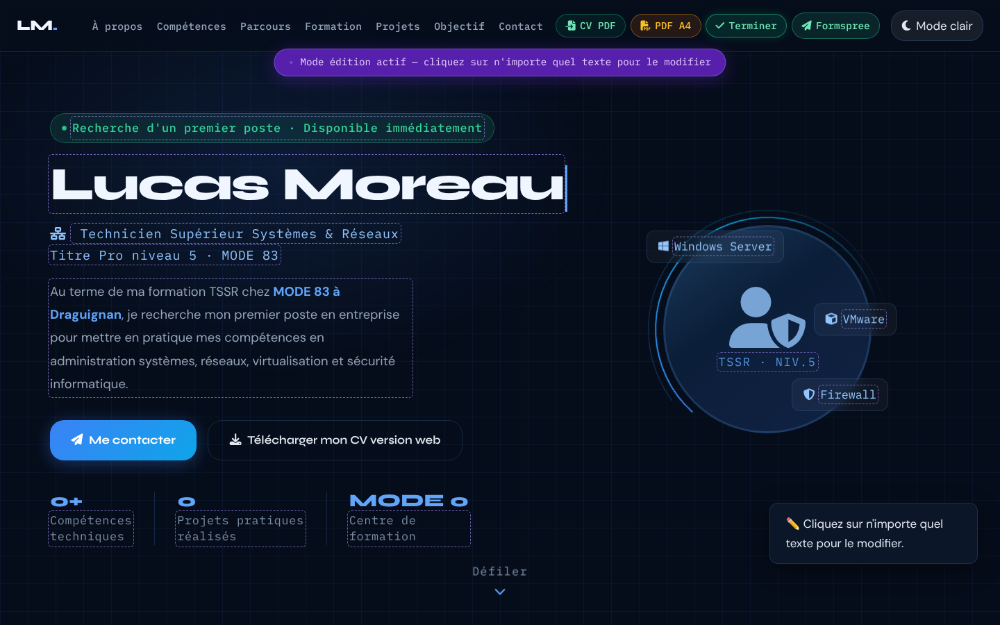
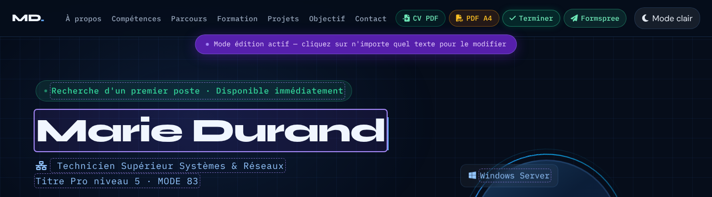
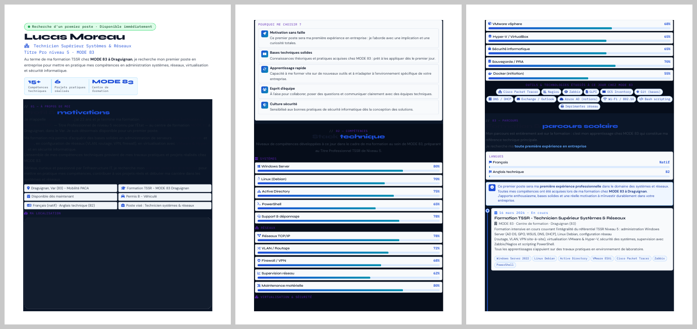

Le mode édition
- Documentation
- MDN — L'attribut contenteditable · MDN — L'attribut spellcheck · MDN — L'attribut aria-pressed · MDN — L'évènement keydown · MDN — KeyboardEvent.key
- Lignes concernées
- 3139 à 3189.
Série « Portfolio TSSR » · 20 épisodes

Objectif de l'épisode
Vous envoyez votre portfolio à dix entreprises et vous voulez adapter une phrase, un pourcentage ou le poste visé pour chacune, sans ouvrir le code.
On ajoute trois boutons dans la navbar : « Éditer » rend les textes modifiables directement dans la page, « PDF A4 » produit un document imprimable, et « CV PDF » prépare l'import automatique d'un CV (il sera branché à l'épisode 16).
On écrit aussi une feuille de style pour l'impression et un petit script qui recalcule les initiales du logo quand on change le nom.

Partie 2
À la fin de cet épisode, vous serez capable de rendre une page modifiable sans toucher au code, de préparer une version imprimable propre, et de faire réagir un script à une modification du texte.
contenteditable, puis lui rendre son état d'origine.aria-pressed.@media screen et @media print, @page.window.print() pour obtenir un PDF.MutationObserver.Les mots des épisodes précédents sont dans les listes des épisodes 1 à 14.
contenteditablearia-pressed annonce l'état aux lecteurs d'écran.@media print@pagenodeType vaut 3).MutationObserverPartie 3
Cochez chaque case quand l'étape est faite. Les cases cochées sont mémorisées sur votre ordinateur.
Tout l'ajout est écrit dans index.html. config.js, images/ et ressources/
restent identiques.
Partie 4 · par rapport à l'épisode 14
L'épisode 15 ajoute un seul bloc, de 1075 lignes, d'un seul tenant.
Aucune ligne n'est modifiée ni supprimée.
Les numéros ci-dessous sont ceux de votre fichier de l'épisode 14 (2341 lignes).
</script> </script> (ligne 2339), avant </body> (ligne 2340).</body> et </html>.Résultat : le fichier passe de 2341 à 3416 lignes.
Les numéros cités dans le reste de cette page sont ceux du nouveau fichier.
| Lignes | Langage | Contenu |
|---|---|---|
| 2341 à 2658 | CSS | Feuille ep-styles, partie écran : boutons de la navbar, fenêtre d'import, bannière, contours des textes modifiables |
| 2660 à 3010 | CSS | Partie impression : page A4, couleurs, éléments masqués, style de chaque section |
| 3012 à 3057 | HTML | Bannière « Mode édition actif », sélecteur de fichier caché, fenêtre « Importer un CV PDF » |
| 3059 à 3246 | JavaScript | Script 1 : boutons, mode édition, barres de compétences, export PDF |
| 3248 à 3250 | JavaScript | Script 2 : remise à zéro du nom à chaque chargement |
| 3252 à 3401 | JavaScript | Script 3 : synchronisation du nom et des initiales |
| 3403 à 3413 | JavaScript | Script 4 : correctif Lighthouse (noms des barres de progression) |
Les lignes précédées de + sont à ajouter ; les autres existent déjà.
La fin du fichier
})(); (fin du module 12)
</script>
<style id="ep-styles">
… (CSS écran et impression)
</style>
… (bannière, sélecteur de fichier, fenêtre d'import)
<script> … </script> (quatre scripts)
</body>
</html>Deux règles de placement à retenir
showToast, déclarée dans le script principal (module 8). </body> : le script 1 cherche #navContent et #ed-banner dès son exécution, tout le HTML doit déjà être lu.Si vous collez en trois fois, gardez l'ordre CSS, HTML, scripts, et une ligne vide entre chaque partie.
Partie 5
Les règles pour reconnaître une source officielle restent celles de l'épisode 1. Les liens marqués s'ouvrent dans un nouvel onglet.
Partie 6
On colle le bloc en trois temps, en vérifiant le navigateur entre chaque.
Vous voyez : rien ne change à l'écran : les règles visent des éléments qui n'existent pas encore. Ouvrez l'aperçu avant impression : la page devient blanche, sans menu ni boutons, avec des cartes compactes.
Vous voyez : toujours rien : la bannière, le sélecteur de fichier et la fenêtre d'import sont masqués. Dans l'onglet Éléments, ils sont bien là, juste avant </body>.
Cliquez sur « Éditer », modifiez un texte, puis appuyez sur Échap.
Vous voyez : trois boutons apparaissent avant « Mode clair ». Au clic sur « Éditer », la bannière s'affiche, les textes sont entourés de pointillés violets, le bouton devient vert et affiche « Terminer », un toast explique quoi faire. Échap remet tout en place et affiche « ✅ Modifications enregistrées dans la page. ».
Cliquez sur « PDF A4 », choisissez « Enregistrer au format PDF » comme destination.
Vous voyez : le nom de fichier proposé est « Lucas Moreau – TSSR | MODE 83 », toutes les barres de compétences sont remplies, la navbar et les boutons ont disparu.
En mode édition, remplacez « Lucas Moreau » par « Marie Durand » dans le Hero.
Vous voyez : les deux logos passent à « MD. », et le nom en gras d'À propos devient « Marie Durand ». Rechargez : tout revient à « Lucas Moreau ».
Vous avez terminé quand votre fichier fait 3416 lignes, identiques au code de référence (bouton « Surligner les ajouts » de la partie 8), sans erreur rouge dans la Console.
Partie 7 · la plus importante
Chaque fiche répond aux quatre questions Quoi ?, Pourquoi ?, Comment ? et Où ?.
Les numéros sont ceux du nouveau fichier de 3416 lignes.
670 lignes de CSS : comment les lire sans se perdre
Toutes les lignes de CSS appartiennent à l'une de ces quatre familles.
Une fois reconnues, les fiches se lisent vite.
@media screen {, @media print {) : #ed-toggle {, .hero-desc {…) : color: #111827 !important;) : !important, Dans la partie impression, beaucoup de règles tiennent sur une seule ligne
(.mb-5 { margin-bottom: 6pt !important; }) : sélecteur, déclarations et accolades réunis.
Pourquoi quatre scripts séparés ?
Chaque script a un seul rôle, et chacun s'enferme dans sa propre fonction auto-exécutée
(sauf le correctif de quatre lignes).
Le script 1 et le script 3 ont tous deux une fonction init : grâce aux IIFE, elles ne se gênent pas.
L'ordre compte : le script 2 efface le nom mémorisé avant que le script 3 essaie de le restaurer.
Ces lignes existent déjà, seul le numéro de </body> et </html> a changé.
Le lien ouvre la fiche de l'épisode où elles ont été expliquées.
| Ligne (épisode 15) | Code | Fiche |
|---|---|---|
| 1 | <!DOCTYPE html> | Épisode 1, ligne 1 |
| 2 | <html lang="fr" data-theme="dark" dir="ltr"> | Épisode 1, ligne 2 |
| 3 | <head> | Épisode 1, ligne 3 |
| 4 | <meta charset="UTF-8" /> | Épisode 1, ligne 4 |
| 5 | <meta name="viewport" content="width=device-width, initia… | Épisode 1, ligne 5 |
| 6 | <meta name="description" content="Portfolio professionnel… | Épisode 1, ligne 6 |
| 7 | <meta name="keywords" content="TSSR, technicien systèmes … | Épisode 1, ligne 7 |
| 8 | <meta name="robots" content="index, follow" /> | Épisode 1, ligne 8 |
| 9 | <meta name="theme-color" content="#060d1a" /> | Épisode 1, ligne 9 |
| 10 | <meta name="author" content="Lucas Moreau" /> | Épisode 1, ligne 10 |
| 12 | <link rel="preconnect" href="https://fonts.googleapis.com… | Épisode 1, ligne 12 |
| 13 | <link rel="preconnect" href="https://fonts.gstatic.com" c… | Épisode 1, ligne 13 |
| 14 | <link href="https://fonts.googleapis.com/css2?family=Syne… | Épisode 1, ligne 14 |
| 16 | <link rel="stylesheet" href="https://cdn.jsdelivr.net/npm… | Épisode 1, ligne 16 |
| 17 | <link rel="stylesheet" href="https://cdnjs.cloudflare.com… | Épisode 1, ligne 17 |
| 18 | <link rel="stylesheet" href="https://cdnjs.cloudflare.com… | Épisode 1, ligne 18 |
| 20 | <script src="config.js"></script> | Épisode 1, ligne 20 |
| 21 | <script src="https://cdnjs.cloudflare.com/ajax/libs/pdf.j… | Épisode 1, ligne 21 |
| 23 | <link rel="icon" type="image/png" sizes="32x32" href="ima… | Épisode 1, ligne 23 |
| 24 | <link rel="icon" type="image/png" sizes="192x192" href="i… | Épisode 1, ligne 24 |
| 25 | <link rel="icon" type="image/webp" href="images/favicon-4… | Épisode 1, ligne 25 |
| 26 | <link rel="apple-touch-icon" sizes="180x180" href="images… | Épisode 1, ligne 26 |
| 28 | <title>Portfolio TSSR | Recherche d'emploi – Technicien S… | Épisode 1, ligne 28 |
| 29 | <style> | Épisode 2, ligne 29 |
| 30 | :root { | Épisode 2, ligne 30 |
| 31 | --clr-bg: #060d1a; | Épisode 2, ligne 31 |
| 32 | --clr-bg2: #0b1628; | Épisode 2, ligne 32 |
| 33 | --clr-surface: rgba(255,255,255,.04); | Épisode 2, ligne 33 |
| 34 | --clr-surface2: rgba(255,255,255,.07); | Épisode 2, ligne 34 |
| 35 | --clr-border: rgba(96,165,250,.18); | Épisode 2, ligne 35 |
| 36 | --clr-accent: #3b82f6; | Épisode 2, ligne 36 |
| 37 | --clr-accent2: #60a5fa; | Épisode 2, ligne 37 |
| 38 | --clr-accent3: #93c5fd; | Épisode 2, ligne 38 |
| 39 | --clr-teal: #0ea5e9; | Épisode 2, ligne 39 |
| 40 | --clr-cyan: #22d3ee; | Épisode 2, ligne 40 |
| 41 | --clr-text: #e2e8f0; | Épisode 2, ligne 41 |
| 42 | --clr-text-soft: #94a3b8; | Épisode 2, ligne 42 |
| 43 | --clr-text-faint: #475569; | Épisode 2, ligne 43 |
| 44 | --clr-heading: #f0f6ff; | Épisode 2, ligne 44 |
| 45 | --clr-white: #ffffff; | Épisode 2, ligne 45 |
| 46 | --clr-danger: #f87171; | Épisode 2, ligne 46 |
| 47 | --clr-success: #34d399; | Épisode 2, ligne 47 |
| 48 | --clr-warn: #fbbf24; | Épisode 2, ligne 48 |
| 49 | --radius-sm: 6px; | Épisode 2, ligne 49 |
| 50 | --radius-md: 12px; | Épisode 2, ligne 50 |
| 51 | --radius-lg: 20px; | Épisode 2, ligne 51 |
| 52 | --radius-xl: 32px; | Épisode 2, ligne 52 |
| 53 | --shadow-glow: 0 0 40px rgba(59,130,246,.25); | Épisode 2, ligne 53 |
| 54 | --shadow-card: 0 8px 32px rgba(0,0,0,.45); | Épisode 2, ligne 54 |
| 55 | --trans: .3s cubic-bezier(.4,0,.2,1); | Épisode 2, ligne 55 |
| 56 | --font-display: 'Syne', sans-serif; | Épisode 2, ligne 56 |
| 57 | --font-mono: 'IBM Plex Mono', monospace; | Épisode 2, ligne 57 |
| 58 | --font-body: 'DM Sans', sans-serif; | Épisode 2, ligne 58 |
| 59 | --fz-min: 1.05rem; | Épisode 2, ligne 59 |
| 60 | } | Épisode 2, ligne 60 |
| 62 | [data-theme="light"] { | Épisode 2, ligne 62 |
| 63 | --clr-bg: #f0f4fa; | Épisode 2, ligne 63 |
| 64 | --clr-bg2: #e2e8f0; | Épisode 2, ligne 64 |
| 65 | --clr-surface: rgba(255,255,255,.7); | Épisode 2, ligne 65 |
| 66 | --clr-surface2: rgba(255,255,255,.9); | Épisode 2, ligne 66 |
| 67 | --clr-border: rgba(59,130,246,.2); | Épisode 2, ligne 67 |
| 68 | --clr-accent: #2563eb; | Épisode 2, ligne 68 |
| 69 | --clr-accent2: #3b82f6; | Épisode 2, ligne 69 |
| 70 | --clr-accent3: #60a5fa; | Épisode 2, ligne 70 |
| 71 | --clr-teal: #0284c7; | Épisode 2, ligne 71 |
| 72 | --clr-cyan: #0891b2; | Épisode 2, ligne 72 |
| 73 | --clr-text: #1e293b; | Épisode 2, ligne 73 |
| 74 | --clr-text-soft: #475569; | Épisode 2, ligne 74 |
| 75 | --clr-text-faint: #94a3b8; | Épisode 2, ligne 75 |
| 76 | --clr-heading: #0f172a; | Épisode 2, ligne 76 |
| 77 | --clr-white: #ffffff; | Épisode 2, ligne 77 |
| 78 | --shadow-glow: 0 0 40px rgba(37,99,235,.15); | Épisode 2, ligne 78 |
| 79 | --shadow-card: 0 8px 32px rgba(0,0,0,.12); | Épisode 2, ligne 79 |
| 80 | } | Épisode 2, ligne 80 |
| 82 | *, *::before, *::after { box-sizing: border-box; margin: … | Épisode 2, ligne 82 |
| 84 | html { scroll-behavior: smooth; font-size: 16px; } | Épisode 2, ligne 84 |
| 86 | body { | Épisode 2, ligne 86 |
| 87 | font-family: var(--font-body); | Épisode 2, ligne 87 |
| 88 | background-color: var(--clr-bg); | Épisode 2, ligne 88 |
| 89 | color: var(--clr-text); | Épisode 2, ligne 89 |
| 90 | font-size: var(--fz-min); | Épisode 2, ligne 90 |
| 91 | line-height: 1.7; | Épisode 2, ligne 91 |
| 92 | overflow-x: hidden; | Épisode 2, ligne 92 |
| 93 | transition: background-color var(--trans), color var(--tr… | Épisode 2, ligne 93 |
| 94 | } | Épisode 2, ligne 94 |
| 96 | ::-webkit-scrollbar { width: 7px; } | Épisode 2, ligne 96 |
| 97 | ::-webkit-scrollbar-track { background: var(--clr… | Épisode 2, ligne 97 |
| 98 | ::-webkit-scrollbar-thumb { | Épisode 2, ligne 98 |
| 99 | background: linear-gradient(180deg, var(--clr-accent), va… | Épisode 2, ligne 99 |
| 100 | border-radius: 10px; height: 120px; | Épisode 2, ligne 100 |
| 101 | } | Épisode 2, ligne 101 |
| 102 | ::-webkit-scrollbar-thumb:hover { | Épisode 2, ligne 102 |
| 103 | background: linear-gradient(180deg, var(--clr-accent2), v… | Épisode 2, ligne 103 |
| 104 | box-shadow: 0 0 8px var(--clr-accent); | Épisode 2, ligne 104 |
| 105 | } | Épisode 2, ligne 105 |
| 107 | .skip-link { | Épisode 2, ligne 107 |
| 108 | position: absolute; | Épisode 2, ligne 108 |
| 109 | top: -60px; left: 1rem; | Épisode 2, ligne 109 |
| 110 | background: var(--clr-accent); | Épisode 2, ligne 110 |
| 111 | color: var(--clr-white); | Épisode 2, ligne 111 |
| 112 | padding: .6rem 1.2rem; | Épisode 2, ligne 112 |
| 113 | border-radius: var(--radius-md); | Épisode 2, ligne 113 |
| 114 | font-weight: 600; | Épisode 2, ligne 114 |
| 115 | font-size: var(--fz-min); | Épisode 2, ligne 115 |
| 116 | z-index: 9999; | Épisode 2, ligne 116 |
| 117 | transition: top .2s; | Épisode 2, ligne 117 |
| 118 | text-decoration: none; | Épisode 2, ligne 118 |
| 119 | } | Épisode 2, ligne 119 |
| 120 | .skip-link:focus { top: 1rem; } | Épisode 2, ligne 120 |
| 122 | #read-progress { | Épisode 2, ligne 122 |
| 123 | position: fixed; top: 0; left: 0; | Épisode 2, ligne 123 |
| 124 | height: 3px; width: 0%; | Épisode 2, ligne 124 |
| 125 | background: linear-gradient(90deg, var(--clr-accent), var… | Épisode 2, ligne 125 |
| 126 | z-index: 9998; | Épisode 2, ligne 126 |
| 127 | transition: width .1s linear; | Épisode 2, ligne 127 |
| 128 | box-shadow: 0 0 10px var(--clr-accent); | Épisode 2, ligne 128 |
| 129 | } | Épisode 2, ligne 129 |
| 131 | #mainNav { | Épisode 3, ligne 131 |
| 132 | position: fixed; top: 0; left: 0; right: 0; | Épisode 3, ligne 132 |
| 133 | z-index: 1050; | Épisode 3, ligne 133 |
| 134 | padding: .9rem 0; | Épisode 3, ligne 134 |
| 135 | background: rgba(6,13,26,.82); | Épisode 3, ligne 135 |
| 136 | backdrop-filter: blur(18px) saturate(1.4); | Épisode 3, ligne 136 |
| 137 | -webkit-backdrop-filter: blur(18px) saturate(1.4); | Épisode 3, ligne 137 |
| 138 | border-bottom: 1px solid var(--clr-border); | Épisode 3, ligne 138 |
| 139 | transition: all var(--trans); | Épisode 3, ligne 139 |
| 140 | } | Épisode 3, ligne 140 |
| 141 | #mainNav.scrolled { | Épisode 3, ligne 141 |
| 142 | padding: .55rem 0; | Épisode 3, ligne 142 |
| 143 | background: rgba(6,13,26,.95); | Épisode 3, ligne 143 |
| 144 | box-shadow: 0 4px 30px rgba(0,0,0,.4); | Épisode 3, ligne 144 |
| 145 | } | Épisode 3, ligne 145 |
| 146 | [data-theme="light"] #mainNav { background: rgba(240,244,… | Épisode 3, ligne 146 |
| 147 | [data-theme="light"] #mainNav.scrolled { background: rgba… | Épisode 3, ligne 147 |
| 149 | .nav-brand { | Épisode 3, ligne 149 |
| 150 | font-family: var(--font-display); | Épisode 3, ligne 150 |
| 151 | font-weight: 800; font-size: 1.3rem; | Épisode 3, ligne 151 |
| 152 | color: var(--clr-heading) !important; | Épisode 3, ligne 152 |
| 153 | text-decoration: none; letter-spacing: -.02em; | Épisode 3, ligne 153 |
| 154 | } | Épisode 3, ligne 154 |
| 155 | .nav-brand span { color: var(--clr-accent2); } | Épisode 3, ligne 155 |
| 157 | .navbar-nav .nav-link { | Épisode 3, ligne 157 |
| 158 | font-family: var(--font-mono); | Épisode 3, ligne 158 |
| 159 | font-size: .92rem; | Épisode 3, ligne 159 |
| 160 | font-weight: 500; | Épisode 3, ligne 160 |
| 161 | color: var(--clr-text-soft) !important; | Épisode 3, ligne 161 |
| 162 | letter-spacing: .02em; | Épisode 3, ligne 162 |
| 163 | padding: .4rem .5rem !important; | Épisode 3, ligne 163 |
| 164 | border-radius: var(--radius-sm); | Épisode 3, ligne 164 |
| 165 | transition: all var(--trans); | Épisode 3, ligne 165 |
| 166 | position: relative; | Épisode 3, ligne 166 |
| 167 | } | Épisode 3, ligne 167 |
| 168 | .navbar-nav .nav-link::before { | Épisode 3, ligne 168 |
| 169 | content: ''; | Épisode 3, ligne 169 |
| 170 | position: absolute; bottom: 0; left: 50%; right: 50%; | Épisode 3, ligne 170 |
| 171 | height: 2px; background: var(--clr-accent2); | Épisode 3, ligne 171 |
| 172 | border-radius: 2px; transition: all var(--trans); | Épisode 3, ligne 172 |
| 173 | } | Épisode 3, ligne 173 |
| 174 | .navbar-nav .nav-link:hover, | Épisode 3, ligne 174 |
| 175 | .navbar-nav .nav-link:focus { | Épisode 3, ligne 175 |
| 176 | color: var(--clr-accent2) !important; | Épisode 3, ligne 176 |
| 177 | background: rgba(59,130,246,.08); | Épisode 3, ligne 177 |
| 178 | } | Épisode 3, ligne 178 |
| 179 | .navbar-nav .nav-link:hover::before, | Épisode 3, ligne 179 |
| 180 | .navbar-nav .nav-link:focus::before { left: 10%; right: 1… | Épisode 3, ligne 180 |
| 182 | .navbar-nav .nav-link.active { | Épisode 8, ligne 182 |
| 183 | color: var(--clr-accent2) !important; | Épisode 8, ligne 183 |
| 184 | background: rgba(59,130,246,.08); | Épisode 8, ligne 184 |
| 185 | } | Épisode 8, ligne 185 |
| 186 | .navbar-nav .nav-link.active::before { left: 10%; right: … | Épisode 8, ligne 186 |
| 188 | #themeToggle { | Épisode 3, ligne 182 |
| 189 | background: var(--clr-surface2); | Épisode 3, ligne 183 |
| 190 | border: 1px solid var(--clr-border); | Épisode 3, ligne 184 |
| 191 | color: var(--clr-text); | Épisode 3, ligne 185 |
| 192 | padding: .4rem .9rem; | Épisode 3, ligne 186 |
| 193 | border-radius: var(--radius-lg); | Épisode 3, ligne 187 |
| 194 | cursor: pointer; font-size: var(--fz-min); | Épisode 3, ligne 188 |
| 195 | transition: all var(--trans); | Épisode 3, ligne 189 |
| 196 | display: flex; align-items: center; gap: .5rem; | Épisode 3, ligne 190 |
| 197 | white-space: nowrap; | Épisode 3, ligne 191 |
| 198 | } | Épisode 3, ligne 192 |
| 199 | #themeToggle:hover { background: var(--clr-accent); color… | Épisode 3, ligne 193 |
| 200 | #themeToggle:focus-visible { outline: 2px solid var(--clr… | Épisode 3, ligne 194 |
| 202 | #hero { | Épisode 4, ligne 196 |
| 203 | min-height: 100vh; | Épisode 4, ligne 197 |
| 204 | display: flex; align-items: center; | Épisode 4, ligne 198 |
| 205 | position: relative; overflow: hidden; | Épisode 4, ligne 199 |
| 206 | padding: 7rem 0 4rem; | Épisode 4, ligne 200 |
| 207 | } | Épisode 4, ligne 201 |
| 208 | #hero::before { | Épisode 4, ligne 202 |
| 209 | content: ''; position: absolute; inset: 0; | Épisode 4, ligne 203 |
| 210 | background-image: | Épisode 4, ligne 204 |
| 211 | linear-gradient(rgba(59,130,246,.07) 1px, transparent 1px… | Épisode 4, ligne 205 |
| 212 | linear-gradient(90deg, rgba(59,130,246,.07) 1px, transpar… | Épisode 4, ligne 206 |
| 213 | background-size: 40px 40px; z-index: 0; | Épisode 4, ligne 207 |
| 214 | } | Épisode 4, ligne 208 |
| 215 | #hero::after { | Épisode 4, ligne 209 |
| 216 | content: ''; position: absolute; | Épisode 4, ligne 210 |
| 217 | top: -10%; left: -10%; width: 70%; height: 70%; | Épisode 4, ligne 211 |
| 218 | background: radial-gradient(ellipse at center, rgba(59,13… | Épisode 4, ligne 212 |
| 219 | z-index: 0; animation: floatGlow 6s ease-in-out infinite … | Épisode 4, ligne 213 |
| 220 | } | Épisode 4, ligne 214 |
| 221 | @keyframes floatGlow { | Épisode 4, ligne 215 |
| 222 | from { transform: translate(0,0) scale(1); } | Épisode 4, ligne 216 |
| 223 | to { transform: translate(4%,3%) scale(1.05); } | Épisode 4, ligne 217 |
| 224 | } | Épisode 4, ligne 218 |
| 225 | .hero-content { position: relative; z-index: 1; } | Épisode 4, ligne 219 |
| 227 | .status-badge { | Épisode 4, ligne 221 |
| 228 | display: inline-flex; align-items: center; gap: .5rem; | Épisode 4, ligne 222 |
| 229 | background: rgba(52,211,153,.1); | Épisode 4, ligne 223 |
| 230 | border: 1px solid rgba(52,211,153,.3); | Épisode 4, ligne 224 |
| 231 | color: var(--clr-success); | Épisode 4, ligne 225 |
| 232 | font-family: var(--font-mono); | Épisode 4, ligne 226 |
| 233 | font-size: var(--fz-min); font-weight: 500; | Épisode 4, ligne 227 |
| 234 | letter-spacing: .04em; | Épisode 4, ligne 228 |
| 235 | padding: .4rem 1rem; border-radius: 100px; | Épisode 4, ligne 229 |
| 236 | margin-bottom: 1.4rem; | Épisode 4, ligne 230 |
| 237 | } | Épisode 4, ligne 231 |
| 238 | .status-dot { | Épisode 4, ligne 232 |
| 239 | width: 7px; height: 7px; | Épisode 4, ligne 233 |
| 240 | background: var(--clr-success); border-radius: 50%; | Épisode 4, ligne 234 |
| 241 | animation: pulse-dot 1.6s ease infinite; flex-shrink: 0; | Épisode 4, ligne 235 |
| 242 | } | Épisode 4, ligne 236 |
| 243 | @keyframes pulse-dot { | Épisode 4, ligne 237 |
| 244 | 0%,100% { opacity: 1; transform: scale(1); } | Épisode 4, ligne 238 |
| 245 | 50% { opacity: .5; transform: scale(.75); } | Épisode 4, ligne 239 |
| 246 | } | Épisode 4, ligne 240 |
| 248 | .hero-title { | Épisode 4, ligne 242 |
| 249 | font-family: var(--font-display); font-weight: 800; | Épisode 4, ligne 243 |
| 250 | font-size: clamp(2.4rem, 6vw, 4.2rem); | Épisode 4, ligne 244 |
| 251 | line-height: 1.1; color: var(--clr-heading); | Épisode 4, ligne 245 |
| 252 | letter-spacing: -.03em; margin-bottom: 1rem; | Épisode 4, ligne 246 |
| 253 | } | Épisode 4, ligne 247 |
| 254 | .hero-title .accent { color: var(--clr-accent2); } | Épisode 4, ligne 248 |
| 255 | .hero-title .typing-cursor { | Épisode 4, ligne 249 |
| 256 | display: inline-block; width: 3px; height: 1em; | Épisode 4, ligne 250 |
| 257 | background: var(--clr-accent2); margin-left: 3px; | Épisode 4, ligne 251 |
| 258 | vertical-align: text-bottom; | Épisode 4, ligne 252 |
| 259 | animation: blink .75s step-end infinite; | Épisode 4, ligne 253 |
| 260 | } | Épisode 4, ligne 254 |
| 261 | @keyframes blink { 50% { opacity: 0; } } | Épisode 4, ligne 255 |
| 263 | .hero-subtitle { | Épisode 4, ligne 257 |
| 264 | font-family: var(--font-mono); | Épisode 4, ligne 258 |
| 265 | font-size: clamp(var(--fz-min), 1.8vw, 1.15rem); | Épisode 4, ligne 259 |
| 266 | color: var(--clr-accent3); letter-spacing: .04em; margin-… | Épisode 4, ligne 260 |
| 267 | } | Épisode 4, ligne 261 |
| 268 | .hero-desc { | Épisode 4, ligne 262 |
| 269 | font-size: clamp(var(--fz-min), 2vw, 1.15rem); | Épisode 4, ligne 263 |
| 270 | color: var(--clr-text-soft); | Épisode 4, ligne 264 |
| 271 | max-width: 520px; margin-bottom: 2.2rem; line-height: 1.8; | Épisode 4, ligne 265 |
| 272 | } | Épisode 4, ligne 266 |
| 274 | .hero-avatar-wrap { | Épisode 4, ligne 268 |
| 275 | position: relative; display: flex; | Épisode 4, ligne 269 |
| 276 | justify-content: center; align-items: center; | Épisode 4, ligne 270 |
| 277 | } | Épisode 4, ligne 271 |
| 278 | .hero-avatar-ring { | Épisode 4, ligne 272 |
| 279 | position: relative; | Épisode 4, ligne 273 |
| 280 | width: clamp(220px,30vw,300px); | Épisode 4, ligne 274 |
| 281 | height: clamp(220px,30vw,300px); | Épisode 4, ligne 275 |
| 282 | } | Épisode 4, ligne 276 |
| 283 | .hero-avatar-ring::before, | Épisode 4, ligne 277 |
| 284 | .hero-avatar-ring::after { | Épisode 4, ligne 278 |
| 285 | content: ''; | Épisode 4, ligne 279 |
| 286 | position: absolute; | Épisode 4, ligne 280 |
| 287 | inset: -12px; | Épisode 4, ligne 281 |
| 288 | border-radius: 50%; | Épisode 4, ligne 282 |
| 289 | border: 2px solid transparent; | Épisode 4, ligne 283 |
| 291 | background: conic-gradient( | Épisode 4, ligne 285 |
| 292 | from 0deg, | Épisode 4, ligne 286 |
| 293 | var(--clr-accent), | Épisode 4, ligne 287 |
| 294 | var(--clr-teal), | Épisode 4, ligne 288 |
| 295 | transparent 60% | Épisode 4, ligne 289 |
| 296 | ) border-box; | Épisode 4, ligne 290 |
| 298 | -webkit-mask: | Épisode 4, ligne 292 |
| 299 | linear-gradient(#fff 0 0) padding-box, | Épisode 4, ligne 293 |
| 300 | linear-gradient(#fff 0 0); | Épisode 4, ligne 294 |
| 302 | -webkit-mask-composite: destination-out; | Épisode 4, ligne 296 |
| 304 | mask: | Épisode 4, ligne 298 |
| 305 | linear-gradient(#fff 0 0) padding-box, | Épisode 4, ligne 299 |
| 306 | linear-gradient(#fff 0 0); | Épisode 4, ligne 300 |
| 308 | mask-composite: exclude; | Épisode 4, ligne 302 |
| 310 | animation: spinRing 8s linear infinite; | Épisode 4, ligne 304 |
| 311 | } | Épisode 4, ligne 305 |
| 312 | .hero-avatar-ring::after { | Épisode 4, ligne 306 |
| 313 | inset: -22px; border-width: 1px; opacity: .4; | Épisode 4, ligne 307 |
| 314 | animation-duration: 14s; animation-direction: reverse; | Épisode 4, ligne 308 |
| 315 | } | Épisode 4, ligne 309 |
| 316 | @keyframes spinRing { to { transform: rotate(360deg); } } | Épisode 4, ligne 310 |
| 318 | .hero-avatar { | Épisode 4, ligne 312 |
| 319 | width: 100%; height: 100%; border-radius: 50%; | Épisode 4, ligne 313 |
| 320 | background: linear-gradient(145deg, #1a3a5c 0%, #0b1e38 4… | Épisode 4, ligne 314 |
| 321 | border: 3px solid var(--clr-border); | Épisode 4, ligne 315 |
| 322 | display: flex; flex-direction: column; | Épisode 4, ligne 316 |
| 323 | align-items: center; justify-content: center; gap: .4rem; | Épisode 4, ligne 317 |
| 324 | overflow: hidden; position: relative; | Épisode 4, ligne 318 |
| 325 | } | Épisode 4, ligne 319 |
| 326 | .hero-avatar i { font-size: clamp(4rem,10vw,5.5rem); colo… | Épisode 4, ligne 320 |
| 327 | .hero-avatar .avatar-label { | Épisode 4, ligne 321 |
| 328 | font-family: var(--font-mono); font-size: var(--fz-min); | Épisode 4, ligne 322 |
| 329 | color: var(--clr-accent2); letter-spacing: .1em; opacity:… | Épisode 4, ligne 323 |
| 330 | } | Épisode 4, ligne 324 |
| 332 | .floating-chip { | Épisode 4, ligne 326 |
| 333 | position: absolute; | Épisode 4, ligne 327 |
| 334 | background: var(--clr-surface); backdrop-filter: blur(10p… | Épisode 4, ligne 328 |
| 335 | border: 1px solid var(--clr-border); border-radius: var(-… | Épisode 4, ligne 329 |
| 336 | padding: .5rem 1rem; font-family: var(--font-mono); | Épisode 4, ligne 330 |
| 337 | font-size: var(--fz-min); color: var(--clr-accent3); whit… | Épisode 4, ligne 331 |
| 338 | animation: chipFloat 4s ease-in-out infinite alternate; | Épisode 4, ligne 332 |
| 339 | } | Épisode 4, ligne 333 |
| 340 | .floating-chip:nth-child(2) { top: 5%; left: -8%; anima… | Épisode 4, ligne 334 |
| 341 | .floating-chip:nth-child(3) { bottom: 8%; right: -8%; ani… | Épisode 4, ligne 335 |
| 342 | .floating-chip:nth-child(4) { top: 40%; right: -12%; ani… | Épisode 4, ligne 336 |
| 343 | @keyframes chipFloat { | Épisode 4, ligne 337 |
| 344 | from { transform: translateY(0); } | Épisode 4, ligne 338 |
| 345 | to { transform: translateY(-8px); } | Épisode 4, ligne 339 |
| 346 | } | Épisode 4, ligne 340 |
| 348 | .btn-hero-primary { | Épisode 4, ligne 342 |
| 349 | display: inline-flex; align-items: center; gap: .55rem; | Épisode 4, ligne 343 |
| 350 | background: linear-gradient(135deg, var(--clr-accent), va… | Épisode 4, ligne 344 |
| 351 | color: #fff; font-family: var(--font-display); font-weigh… | Épisode 4, ligne 345 |
| 352 | font-size: var(--fz-min); padding: .85rem 1.9rem; | Épisode 4, ligne 346 |
| 353 | border-radius: var(--radius-lg); text-decoration: none; b… | Épisode 4, ligne 347 |
| 354 | cursor: pointer; transition: all var(--trans); | Épisode 4, ligne 348 |
| 355 | box-shadow: 0 4px 24px rgba(59,130,246,.35); | Épisode 4, ligne 349 |
| 356 | } | Épisode 4, ligne 350 |
| 357 | .btn-hero-primary:hover { transform: translateY(-3px); bo… | Épisode 4, ligne 351 |
| 358 | .btn-hero-primary:focus-visible { outline: 3px solid var(… | Épisode 4, ligne 352 |
| 360 | .btn-hero-secondary { | Épisode 4, ligne 354 |
| 361 | display: inline-flex; align-items: center; gap: .55rem; | Épisode 4, ligne 355 |
| 362 | background: transparent; color: var(--clr-text); | Épisode 4, ligne 356 |
| 363 | font-family: var(--font-display); font-weight: 600; | Épisode 4, ligne 357 |
| 364 | font-size: var(--fz-min); padding: .85rem 1.9rem; | Épisode 4, ligne 358 |
| 365 | border-radius: var(--radius-lg); text-decoration: none; | Épisode 4, ligne 359 |
| 366 | border: 1px solid var(--clr-border); cursor: pointer; | Épisode 4, ligne 360 |
| 367 | transition: all var(--trans); | Épisode 4, ligne 361 |
| 368 | } | Épisode 4, ligne 362 |
| 369 | .btn-hero-secondary:hover { | Épisode 4, ligne 363 |
| 370 | background: var(--clr-surface2); border-color: var(--clr-… | Épisode 4, ligne 364 |
| 371 | color: var(--clr-accent2); transform: translateY(-3px); | Épisode 4, ligne 365 |
| 372 | } | Épisode 4, ligne 366 |
| 373 | .btn-hero-secondary:focus-visible { outline: 3px solid va… | Épisode 4, ligne 367 |
| 375 | .hero-stats { display: flex; gap: 2rem; margin-top: 2.8re… | Épisode 4, ligne 369 |
| 376 | .hero-stat { text-align: left; } | Épisode 4, ligne 370 |
| 377 | .hero-stat .stat-val { | Épisode 4, ligne 371 |
| 378 | font-family: var(--font-display); font-weight: 800; font-… | Épisode 4, ligne 372 |
| 379 | color: var(--clr-heading); line-height: 1; | Épisode 4, ligne 373 |
| 380 | } | Épisode 4, ligne 374 |
| 381 | .hero-stat .stat-val span { color: var(--clr-accent2); } | Épisode 4, ligne 375 |
| 382 | .hero-stat .stat-lbl { | Épisode 4, ligne 376 |
| 383 | font-family: var(--font-mono); font-size: var(--fz-min); | Épisode 4, ligne 377 |
| 384 | color: var(--clr-text-faint); letter-spacing: .04em; | Épisode 4, ligne 378 |
| 385 | margin-top: .3rem; line-height: 1.4; | Épisode 4, ligne 379 |
| 386 | } | Épisode 4, ligne 380 |
| 387 | .hero-stat-sep { width: 1px; background: var(--clr-border… | Épisode 4, ligne 381 |
| 389 | .scroll-indicator { | Épisode 4, ligne 383 |
| 390 | position: absolute; bottom: 2.5rem; left: 50%; | Épisode 4, ligne 384 |
| 391 | transform: translateX(-50%); | Épisode 4, ligne 385 |
| 392 | display: flex; flex-direction: column; align-items: cente… | Épisode 4, ligne 386 |
| 393 | cursor: pointer; animation: bounceDown 2s ease infinite; … | Épisode 4, ligne 387 |
| 394 | text-decoration: none; | Épisode 4, ligne 388 |
| 395 | } | Épisode 4, ligne 389 |
| 396 | .scroll-indicator span { | Épisode 4, ligne 390 |
| 397 | font-family: var(--font-mono); font-size: var(--fz-min); | Épisode 4, ligne 391 |
| 398 | letter-spacing: .08em; color: var(--clr-text-faint); | Épisode 4, ligne 392 |
| 399 | } | Épisode 4, ligne 393 |
| 400 | .scroll-indicator i { color: var(--clr-accent2); font-siz… | Épisode 4, ligne 394 |
| 401 | @keyframes bounceDown { | Épisode 4, ligne 395 |
| 402 | 0%,20%,50%,80%,100% { transform: translateX(-50%) transla… | Épisode 4, ligne 396 |
| 403 | 40% { transform: translateX(-50%) translateY(6px); } | Épisode 4, ligne 397 |
| 404 | 60% { transform: translateX(-50%) translateY(3px); } | Épisode 4, ligne 398 |
| 405 | } | Épisode 4, ligne 399 |
| 407 | section { padding: 5.5rem 0; } | Épisode 5, ligne 401 |
| 409 | .section-label { | Épisode 5, ligne 403 |
| 410 | font-family: var(--font-mono); font-size: var(--fz-min); | Épisode 5, ligne 404 |
| 411 | letter-spacing: .12em; color: var(--clr-accent2); | Épisode 5, ligne 405 |
| 412 | text-transform: uppercase; display: flex; align-items: ce… | Épisode 5, ligne 406 |
| 413 | margin-bottom: .8rem; | Épisode 5, ligne 407 |
| 414 | } | Épisode 5, ligne 408 |
| 415 | .section-label::before { content: '//'; opacity: .5; } | Épisode 5, ligne 409 |
| 417 | .section-title { | Épisode 5, ligne 411 |
| 418 | font-family: var(--font-display); font-weight: 800; | Épisode 5, ligne 412 |
| 419 | font-size: clamp(1.8rem, 4vw, 2.8rem); | Épisode 5, ligne 413 |
| 420 | color: var(--clr-heading); letter-spacing: -.02em; | Épisode 5, ligne 414 |
| 421 | line-height: 1.15; margin-bottom: 1rem; | Épisode 5, ligne 415 |
| 422 | } | Épisode 5, ligne 416 |
| 423 | .section-title .accent { color: var(--clr-accent2); } | Épisode 5, ligne 417 |
| 425 | .section-desc { | Épisode 5, ligne 419 |
| 426 | color: var(--clr-text-soft); font-size: var(--fz-min); | Épisode 5, ligne 420 |
| 427 | max-width: 600px; line-height: 1.75; | Épisode 5, ligne 421 |
| 428 | } | Épisode 5, ligne 422 |
| 430 | .section-divider { | Épisode 5, ligne 424 |
| 431 | display: flex; align-items: center; gap: .8rem; margin: .… | Épisode 5, ligne 425 |
| 432 | } | Épisode 5, ligne 426 |
| 433 | .section-divider .line { | Épisode 5, ligne 427 |
| 434 | height: 2px; width: 48px; | Épisode 5, ligne 428 |
| 435 | background: linear-gradient(90deg, var(--clr-accent), tra… | Épisode 5, ligne 429 |
| 436 | border-radius: 2px; | Épisode 5, ligne 430 |
| 437 | } | Épisode 5, ligne 431 |
| 438 | .section-divider .dot { | Épisode 5, ligne 432 |
| 439 | width: 6px; height: 6px; border-radius: 50%; background: … | Épisode 5, ligne 433 |
| 440 | } | Épisode 5, ligne 434 |
| 442 | .reveal { | Épisode 5, ligne 436 |
| 443 | opacity: 0; transform: translateY(30px); | Épisode 5, ligne 437 |
| 444 | transition: opacity .65s cubic-bezier(.4,0,.2,1), transfo… | Épisode 5, ligne 438 |
| 445 | } | Épisode 5, ligne 439 |
| 446 | .reveal.visible { opacity: 1; transform: translateY(0); } | Épisode 5, ligne 440 |
| 447 | .reveal-left { transform: translateX(-30px); } | Épisode 5, ligne 441 |
| 448 | .reveal-right { transform: translateX(30px); } | Épisode 5, ligne 442 |
| 449 | .reveal-left.visible, .reveal-right.visible { transform: … | Épisode 5, ligne 443 |
| 451 | .glass-card { | Épisode 5, ligne 445 |
| 452 | background: var(--clr-surface); backdrop-filter: blur(14p… | Épisode 5, ligne 446 |
| 453 | -webkit-backdrop-filter: blur(14px); | Épisode 5, ligne 447 |
| 454 | border: 1px solid var(--clr-border); border-radius: var(-… | Épisode 5, ligne 448 |
| 455 | padding: 2rem; transition: all var(--trans); box-shadow: … | Épisode 5, ligne 449 |
| 456 | } | Épisode 5, ligne 450 |
| 457 | .glass-card:hover { | Épisode 5, ligne 451 |
| 458 | border-color: rgba(59,130,246,.4); | Épisode 5, ligne 452 |
| 459 | box-shadow: var(--shadow-glow), var(--shadow-card); trans… | Épisode 5, ligne 453 |
| 460 | } | Épisode 5, ligne 454 |
| 462 | #about { background: var(--clr-bg2); } | Épisode 5, ligne 456 |
| 464 | .about-text p { | Épisode 5, ligne 458 |
| 465 | color: var(--clr-text); font-size: var(--fz-min); | Épisode 5, ligne 459 |
| 466 | line-height: 1.85; margin-bottom: 1.1rem; | Épisode 5, ligne 460 |
| 467 | } | Épisode 5, ligne 461 |
| 468 | .about-text strong { color: var(--clr-accent2); font-weig… | Épisode 5, ligne 462 |
| 470 | .about-info-grid { | Épisode 5, ligne 464 |
| 471 | display: grid; grid-template-columns: 1fr 1fr; gap: .85re… | Épisode 5, ligne 465 |
| 472 | } | Épisode 5, ligne 466 |
| 473 | .about-info-item { | Épisode 5, ligne 467 |
| 474 | display: flex; align-items: center; gap: .65rem; | Épisode 5, ligne 468 |
| 475 | font-size: var(--fz-min); color: var(--clr-text-soft); | Épisode 5, ligne 469 |
| 476 | } | Épisode 5, ligne 470 |
| 477 | .about-info-item i { width: 20px; color: var(--clr-accent… | Épisode 5, ligne 471 |
| 479 | .motive-list { list-style: none; padding: 0; display: fle… | Épisode 5, ligne 473 |
| 480 | .motive-list li { | Épisode 5, ligne 474 |
| 481 | display: flex; align-items: flex-start; gap: .85rem; | Épisode 5, ligne 475 |
| 482 | font-size: var(--fz-min); color: var(--clr-text-soft); | Épisode 5, ligne 476 |
| 483 | padding: .8rem 1rem; background: var(--clr-surface); | Épisode 5, ligne 477 |
| 484 | border: 1px solid var(--clr-border); border-radius: var(-… | Épisode 5, ligne 478 |
| 485 | transition: all var(--trans); | Épisode 5, ligne 479 |
| 486 | } | Épisode 5, ligne 480 |
| 487 | .motive-list li:hover { border-color: var(--clr-accent2);… | Épisode 5, ligne 481 |
| 488 | .motive-list li .ico { | Épisode 5, ligne 482 |
| 489 | width: 34px; height: 34px; | Épisode 5, ligne 483 |
| 490 | background: linear-gradient(135deg, var(--clr-accent), va… | Épisode 5, ligne 484 |
| 491 | border-radius: var(--radius-sm); display: flex; align-ite… | Épisode 5, ligne 485 |
| 492 | justify-content: center; flex-shrink: 0; font-size: var(-… | Épisode 5, ligne 486 |
| 493 | } | Épisode 5, ligne 487 |
| 494 | .motive-list li strong { | Épisode 5, ligne 488 |
| 495 | color: var(--clr-heading); display: block; | Épisode 5, ligne 489 |
| 496 | margin-bottom: .2rem; font-size: var(--fz-min); | Épisode 5, ligne 490 |
| 497 | } | Épisode 5, ligne 491 |
| 499 | #skills { background: var(--clr-bg); } | Épisode 6, ligne 493 |
| 501 | .skill-cat-title { | Épisode 5, ligne 493 |
| 502 | font-family: var(--font-mono); font-size: var(--fz-min); | Épisode 5, ligne 494 |
| 503 | letter-spacing: .1em; color: var(--clr-accent2); | Épisode 5, ligne 495 |
| 504 | text-transform: uppercase; margin-bottom: 1.2rem; | Épisode 5, ligne 496 |
| 505 | } | Épisode 5, ligne 497 |
| 507 | .skill-card { | Épisode 6, ligne 501 |
| 508 | background: var(--clr-surface); border: 1px solid var(--c… | Épisode 6, ligne 502 |
| 509 | border-radius: var(--radius-md); padding: 1.2rem 1.4rem; | Épisode 6, ligne 503 |
| 510 | transition: all var(--trans); cursor: default; | Épisode 6, ligne 504 |
| 511 | } | Épisode 6, ligne 505 |
| 512 | .skill-card:hover { | Épisode 6, ligne 506 |
| 513 | border-color: rgba(59,130,246,.45); background: var(--clr… | Épisode 6, ligne 507 |
| 514 | transform: translateY(-3px); box-shadow: 0 6px 24px rgba(… | Épisode 6, ligne 508 |
| 515 | } | Épisode 6, ligne 509 |
| 516 | .skill-header { display: flex; justify-content: space-bet… | Épisode 6, ligne 510 |
| 517 | .skill-name { | Épisode 6, ligne 511 |
| 518 | display: flex; align-items: center; gap: .6rem; | Épisode 6, ligne 512 |
| 519 | font-family: var(--font-display); font-weight: 600; | Épisode 6, ligne 513 |
| 520 | font-size: var(--fz-min); color: var(--clr-text); | Épisode 6, ligne 514 |
| 521 | } | Épisode 6, ligne 515 |
| 522 | .skill-name i { color: var(--clr-accent2); font-size: var… | Épisode 6, ligne 516 |
| 523 | .skill-pct { font-family: var(--font-mono); font-size: va… | Épisode 6, ligne 517 |
| 525 | .skill-bar-bg { height: 5px; background: rgba(255,255,255… | Épisode 6, ligne 519 |
| 526 | .skill-bar { | Épisode 6, ligne 520 |
| 527 | height: 100%; border-radius: 10px; | Épisode 6, ligne 521 |
| 528 | background: linear-gradient(90deg, var(--clr-accent), var… | Épisode 6, ligne 522 |
| 529 | width: 0%; transition: width 1.2s cubic-bezier(.4,0,.2,1)… | Épisode 6, ligne 523 |
| 530 | } | Épisode 6, ligne 524 |
| 531 | .skill-bar::after { | Épisode 6, ligne 525 |
| 532 | content: ''; position: absolute; right: 0; top: 50%; tran… | Épisode 6, ligne 526 |
| 533 | width: 8px; height: 8px; background: var(--clr-cyan); | Épisode 6, ligne 527 |
| 534 | border-radius: 50%; box-shadow: 0 0 6px var(--clr-cyan); | Épisode 6, ligne 528 |
| 535 | } | Épisode 6, ligne 529 |
| 537 | .tech-badge { | Épisode 6, ligne 531 |
| 538 | display: inline-flex; align-items: center; gap: .4rem; | Épisode 6, ligne 532 |
| 539 | background: var(--clr-surface); border: 1px solid var(--c… | Épisode 6, ligne 533 |
| 540 | padding: .4rem .85rem; border-radius: 100px; | Épisode 6, ligne 534 |
| 541 | font-family: var(--font-mono); font-size: var(--fz-min); | Épisode 6, ligne 535 |
| 542 | color: var(--clr-text-soft); transition: all var(--trans); | Épisode 6, ligne 536 |
| 543 | } | Épisode 6, ligne 537 |
| 544 | .tech-badge:hover { border-color: var(--clr-accent2); col… | Épisode 6, ligne 538 |
| 546 | #parcours { background: var(--clr-bg2); } | Épisode 7, ligne 540 |
| 548 | .timeline { position: relative; padding-left: 2.5rem; } | Épisode 7, ligne 542 |
| 549 | .timeline::before { | Épisode 7, ligne 543 |
| 550 | content: ''; position: absolute; left: .6rem; top: 0; bot… | Épisode 7, ligne 544 |
| 551 | width: 2px; | Épisode 7, ligne 545 |
| 552 | background: linear-gradient(180deg, var(--clr-accent), va… | Épisode 7, ligne 546 |
| 553 | border-radius: 2px; | Épisode 7, ligne 547 |
| 554 | } | Épisode 7, ligne 548 |
| 555 | .timeline-item { position: relative; padding-bottom: 2.5r… | Épisode 7, ligne 549 |
| 556 | .timeline-item:last-child { padding-bottom: 0; } | Épisode 7, ligne 550 |
| 557 | .timeline-dot { | Épisode 7, ligne 551 |
| 558 | position: absolute; left: -2.5rem; top: .25rem; | Épisode 7, ligne 552 |
| 559 | width: 14px; height: 14px; | Épisode 7, ligne 553 |
| 560 | background: var(--clr-accent); border: 3px solid var(--cl… | Épisode 7, ligne 554 |
| 561 | border-radius: 50%; box-shadow: 0 0 12px var(--clr-accent… | Épisode 7, ligne 555 |
| 562 | } | Épisode 7, ligne 556 |
| 563 | .timeline-item:hover .timeline-dot { transform: scale(1.4… | Épisode 7, ligne 557 |
| 565 | .timeline-date { | Épisode 7, ligne 559 |
| 566 | font-family: var(--font-mono); font-size: var(--fz-min); | Épisode 7, ligne 560 |
| 567 | color: var(--clr-accent2); letter-spacing: .06em; margin-… | Épisode 7, ligne 561 |
| 568 | } | Épisode 7, ligne 562 |
| 569 | .timeline-title { | Épisode 7, ligne 563 |
| 570 | font-family: var(--font-display); font-weight: 700; | Épisode 7, ligne 564 |
| 571 | font-size: 1.1rem; color: var(--clr-heading); margin-bott… | Épisode 7, ligne 565 |
| 572 | } | Épisode 7, ligne 566 |
| 573 | .timeline-company { font-size: var(--fz-min); color: var(… | Épisode 7, ligne 567 |
| 574 | .timeline-desc { font-size: var(--fz-min); color: var(--c… | Épisode 7, ligne 568 |
| 575 | .timeline-tags { display: flex; flex-wrap: wrap; gap: .45… | Épisode 7, ligne 569 |
| 576 | .timeline-tag { | Épisode 7, ligne 570 |
| 577 | font-family: var(--font-mono); font-size: var(--fz-min); | Épisode 7, ligne 571 |
| 578 | color: var(--clr-teal); background: rgba(14,165,233,.08); | Épisode 7, ligne 572 |
| 579 | border: 1px solid rgba(14,165,233,.2); padding: .28rem .7… | Épisode 7, ligne 573 |
| 580 | } | Épisode 7, ligne 574 |
| 582 | .premier-stage-banner { | Épisode 7, ligne 576 |
| 583 | background: linear-gradient(135deg, rgba(59,130,246,.08),… | Épisode 7, ligne 577 |
| 584 | border: 1px solid rgba(59,130,246,.25); | Épisode 7, ligne 578 |
| 585 | border-radius: var(--radius-lg); | Épisode 7, ligne 579 |
| 586 | padding: 1.5rem 1.8rem; | Épisode 7, ligne 580 |
| 587 | margin-bottom: 2.5rem; | Épisode 7, ligne 581 |
| 588 | display: flex; align-items: flex-start; gap: 1rem; | Épisode 7, ligne 582 |
| 589 | } | Épisode 7, ligne 583 |
| 590 | .premier-stage-banner .ico-wrap { | Épisode 7, ligne 584 |
| 591 | width: 46px; height: 46px; flex-shrink: 0; | Épisode 7, ligne 585 |
| 592 | background: linear-gradient(135deg, var(--clr-accent), va… | Épisode 7, ligne 586 |
| 593 | border-radius: var(--radius-md); | Épisode 7, ligne 587 |
| 594 | display: flex; align-items: center; justify-content: cent… | Épisode 7, ligne 588 |
| 595 | font-size: 1.2rem; color: #fff; | Épisode 7, ligne 589 |
| 596 | } | Épisode 7, ligne 590 |
| 597 | .premier-stage-banner p { font-size: var(--fz-min); color… | Épisode 7, ligne 591 |
| 598 | .premier-stage-banner strong { color: var(--clr-accent2);… | Épisode 7, ligne 592 |
| 600 | #formation { background: var(--clr-bg); } | Épisode 8, ligne 600 |
| 602 | .formation-card { | Épisode 8, ligne 602 |
| 603 | background: var(--clr-surface); border: 1px solid var(--c… | Épisode 8, ligne 603 |
| 604 | border-radius: var(--radius-lg); padding: 2rem 2.2rem; tr… | Épisode 8, ligne 604 |
| 605 | } | Épisode 8, ligne 605 |
| 606 | .formation-card:hover { border-color: rgba(59,130,246,.4)… | Épisode 8, ligne 606 |
| 608 | .formation-logo { | Épisode 8, ligne 608 |
| 609 | width: 52px; height: 52px; | Épisode 8, ligne 609 |
| 610 | background: linear-gradient(135deg, var(--clr-accent), va… | Épisode 8, ligne 610 |
| 611 | border-radius: var(--radius-md); | Épisode 8, ligne 611 |
| 612 | display: flex; align-items: center; justify-content: cent… | Épisode 8, ligne 612 |
| 613 | font-size: 1.4rem; color: #fff; margin-bottom: 1.2rem; fl… | Épisode 8, ligne 613 |
| 614 | } | Épisode 8, ligne 614 |
| 615 | .formation-badge { | Épisode 8, ligne 615 |
| 616 | display: inline-block; font-family: var(--font-mono); | Épisode 8, ligne 616 |
| 617 | font-size: var(--fz-min); letter-spacing: .06em; | Épisode 8, ligne 617 |
| 618 | padding: .35rem .85rem; border-radius: 100px; margin-bott… | Épisode 8, ligne 618 |
| 619 | } | Épisode 8, ligne 619 |
| 620 | .badge-niveau5 { background: rgba(251,191,36,.1); border… | Épisode 8, ligne 620 |
| 621 | .badge-encours { background: rgba(59,130,246,.1); borde… | Épisode 8, ligne 621 |
| 622 | .badge-success { background: rgba(52,211,153,.1); borde… | Épisode 8, ligne 622 |
| 624 | .competence-chip { | Épisode 8, ligne 624 |
| 625 | display: inline-flex; align-items: center; gap: .35rem; | Épisode 8, ligne 625 |
| 626 | font-size: var(--fz-min); padding: .35rem .8rem; border-r… | Épisode 8, ligne 626 |
| 627 | background: rgba(59,130,246,.08); border: 1px solid rgba(… | Épisode 8, ligne 627 |
| 628 | color: var(--clr-accent3); margin: .2rem; | Épisode 8, ligne 628 |
| 629 | } | Épisode 8, ligne 629 |
| 630 | .bloc-comp { | Épisode 8, ligne 630 |
| 631 | background: var(--clr-surface2); border: 1px solid var(--… | Épisode 8, ligne 631 |
| 632 | border-radius: var(--radius-md); padding: 1rem 1.1rem; | Épisode 8, ligne 632 |
| 633 | } | Épisode 8, ligne 633 |
| 634 | .bloc-comp-title { | Épisode 8, ligne 634 |
| 635 | font-family: var(--font-display); font-weight: 700; | Épisode 8, ligne 635 |
| 636 | font-size: var(--fz-min); color: var(--clr-heading); marg… | Épisode 8, ligne 636 |
| 637 | } | Épisode 8, ligne 637 |
| 638 | .bloc-comp-desc { font-size: var(--fz-min); color: var(--… | Épisode 8, ligne 638 |
| 640 | .cert-item { | Épisode 8, ligne 640 |
| 641 | display: flex; align-items: center; gap: .7rem; | Épisode 8, ligne 641 |
| 642 | font-size: var(--fz-min); color: var(--clr-text-soft); ma… | Épisode 8, ligne 642 |
| 643 | } | Épisode 8, ligne 643 |
| 645 | #projects { background: var(--clr-bg2); } | Épisode 9, ligne 645 |
| 647 | .project-card { | Épisode 9, ligne 647 |
| 648 | background: var(--clr-surface); border: 1px solid var(--c… | Épisode 9, ligne 648 |
| 649 | border-radius: var(--radius-lg); overflow: hidden; transi… | Épisode 9, ligne 649 |
| 650 | height: 100%; display: flex; flex-direction: column; | Épisode 9, ligne 650 |
| 651 | } | Épisode 9, ligne 651 |
| 652 | .project-card:hover { | Épisode 9, ligne 652 |
| 653 | border-color: rgba(59,130,246,.45); | Épisode 9, ligne 653 |
| 654 | transform: translateY(-5px); box-shadow: var(--shadow-glo… | Épisode 9, ligne 654 |
| 655 | } | Épisode 9, ligne 655 |
| 656 | .project-img { | Épisode 9, ligne 656 |
| 657 | height: 160px; position: relative; overflow: hidden; | Épisode 9, ligne 657 |
| 658 | display: flex; align-items: center; justify-content: cent… | Épisode 9, ligne 658 |
| 659 | } | Épisode 9, ligne 659 |
| 660 | .project-img i { font-size: 3.5rem; opacity: .7; color: v… | Épisode 9, ligne 660 |
| 661 | .project-img::before { content: ''; position: absolute; i… | Épisode 9, ligne 661 |
| 662 | .pi-blue::before { background: linear-gradient(135deg, … | Épisode 9, ligne 662 |
| 663 | .pi-teal::before { background: linear-gradient(135deg, … | Épisode 9, ligne 663 |
| 664 | .pi-purple::before { background: linear-gradient(135deg, … | Épisode 9, ligne 664 |
| 665 | .pi-orange::before { background: linear-gradient(135deg, … | Épisode 9, ligne 665 |
| 666 | .pi-green::before { background: linear-gradient(135deg, … | Épisode 9, ligne 666 |
| 667 | .pi-red::before { background: linear-gradient(135deg, … | Épisode 9, ligne 667 |
| 668 | .project-img::after { | Épisode 9, ligne 668 |
| 669 | content: ''; position: absolute; inset: 0; | Épisode 9, ligne 669 |
| 670 | background-image: | Épisode 9, ligne 670 |
| 671 | linear-gradient(rgba(59,130,246,.04) 1px, transparent 1px… | Épisode 9, ligne 671 |
| 672 | linear-gradient(90deg, rgba(59,130,246,.04) 1px, transpar… | Épisode 9, ligne 672 |
| 673 | background-size: 20px 20px; | Épisode 9, ligne 673 |
| 674 | } | Épisode 9, ligne 674 |
| 675 | .project-body { padding: 1.5rem; flex: 1; display: flex; … | Épisode 9, ligne 675 |
| 676 | .project-category { | Épisode 9, ligne 676 |
| 677 | font-family: var(--font-mono); font-size: var(--fz-min); | Épisode 9, ligne 677 |
| 678 | letter-spacing: .08em; color: var(--clr-teal); text-trans… | Épisode 9, ligne 678 |
| 679 | } | Épisode 9, ligne 679 |
| 680 | .project-title { | Épisode 9, ligne 680 |
| 681 | font-family: var(--font-display); font-weight: 700; | Épisode 9, ligne 681 |
| 682 | font-size: var(--fz-min); color: var(--clr-heading); marg… | Épisode 9, ligne 682 |
| 683 | } | Épisode 9, ligne 683 |
| 684 | .project-desc { font-size: var(--fz-min); color: var(--cl… | Épisode 9, ligne 684 |
| 685 | .project-footer { | Épisode 9, ligne 685 |
| 686 | display: flex; justify-content: space-between; align-item… | Épisode 9, ligne 686 |
| 687 | border-top: 1px solid var(--clr-border); padding-top: 1re… | Épisode 9, ligne 687 |
| 688 | } | Épisode 9, ligne 688 |
| 690 | .project-img img { | Épisode 9, ligne 690 |
| 691 | position: absolute; inset: 0; | Épisode 9, ligne 691 |
| 692 | width: 100%; height: 100%; | Épisode 9, ligne 692 |
| 693 | object-fit: cover; z-index: 1; | Épisode 9, ligne 693 |
| 694 | transition: transform var(--trans); | Épisode 9, ligne 694 |
| 695 | } | Épisode 9, ligne 695 |
| 696 | .project-card:hover .project-img img { transform: scale(1… | Épisode 9, ligne 696 |
| 697 | .project-img .img-overlay { | Épisode 9, ligne 697 |
| 698 | position: absolute; inset: 0; z-index: 2; pointer-events:… | Épisode 9, ligne 698 |
| 699 | background: linear-gradient(180deg, transparent 45%, rgba… | Épisode 9, ligne 699 |
| 700 | } | Épisode 9, ligne 700 |
| 701 | .project-img .exe-badge { | Épisode 9, ligne 701 |
| 702 | position: absolute; top: .7rem; right: .7rem; z-index: 3; | Épisode 9, ligne 702 |
| 703 | display: inline-flex; align-items: center; gap: .35rem; | Épisode 9, ligne 703 |
| 704 | font-family: var(--font-mono); font-size: .74rem; font-we… | Épisode 9, ligne 704 |
| 705 | letter-spacing: .05em; text-transform: uppercase; | Épisode 9, ligne 705 |
| 706 | color: var(--clr-white); background: rgba(6,13,26,.82); | Épisode 9, ligne 706 |
| 707 | border: 1px solid var(--clr-border); | Épisode 9, ligne 707 |
| 708 | padding: .3rem .6rem; border-radius: 100px; | Épisode 9, ligne 708 |
| 709 | backdrop-filter: blur(6px); -webkit-backdrop-filter: blur… | Épisode 9, ligne 709 |
| 710 | } | Épisode 9, ligne 710 |
| 711 | .project-img .exe-badge i { color: var(--clr-cyan); } | Épisode 9, ligne 711 |
| 712 | [data-theme="light"] .project-img .exe-badge { color: #e2… | Épisode 9, ligne 712 |
| 713 | .project-img .exe-badge i { font-size: inherit; } | Épisode 10, ligne 713 |
| 714 | .project-img { height: auto; aspect-ratio: 900 / 540; } | Épisode 10, ligne 714 |
| 716 | .project-dl { margin-top: 1rem; border-top: 1px solid var… | Épisode 9, ligne 714 |
| 717 | .dl-btn { | Épisode 9, ligne 715 |
| 718 | display: inline-flex; align-items: center; justify-conten… | Épisode 9, ligne 716 |
| 719 | width: 100%; | Épisode 9, ligne 717 |
| 720 | font-family: var(--font-mono); font-size: .95rem; font-we… | Épisode 9, ligne 718 |
| 721 | color: var(--clr-white); text-decoration: none; | Épisode 9, ligne 719 |
| 722 | background: linear-gradient(135deg, var(--clr-accent), va… | Épisode 9, ligne 720 |
| 723 | border: 1px solid rgba(59,130,246,.5); border-radius: 100… | Épisode 9, ligne 721 |
| 724 | padding: .7rem 1.1rem; | Épisode 9, ligne 722 |
| 725 | transition: transform var(--trans), box-shadow var(--tran… | Épisode 9, ligne 723 |
| 726 | } | Épisode 9, ligne 724 |
| 727 | .dl-btn:hover { | Épisode 9, ligne 725 |
| 728 | transform: translateY(-2px); color: var(--clr-white); | Épisode 9, ligne 726 |
| 729 | box-shadow: 0 8px 22px rgba(59,130,246,.35); filter: brig… | Épisode 9, ligne 727 |
| 730 | } | Épisode 9, ligne 728 |
| 731 | .dl-btn:focus-visible { outline: 2px solid var(--clr-acce… | Épisode 9, ligne 729 |
| 732 | .dl-hint { | Épisode 9, ligne 730 |
| 733 | display: block; margin-top: .55rem; text-align: center; | Épisode 9, ligne 731 |
| 734 | font-family: var(--font-mono); font-size: .74rem; color: … | Épisode 9, ligne 732 |
| 735 | } | Épisode 9, ligne 733 |
| 736 | .dl-hint i { color: var(--clr-teal); } | Épisode 9, ligne 734 |
| 738 | .dl-meta { display: flex; flex-wrap: wrap; gap: .4rem; ma… | Épisode 9, ligne 736 |
| 739 | .dl-chip { | Épisode 9, ligne 737 |
| 740 | display: inline-flex; align-items: center; gap: .35rem; | Épisode 9, ligne 738 |
| 741 | font-family: var(--font-mono); font-size: .72rem; font-we… | Épisode 9, ligne 739 |
| 742 | color: var(--clr-text-soft); | Épisode 9, ligne 740 |
| 743 | background: var(--clr-surface2); | Épisode 9, ligne 741 |
| 744 | border: 1px solid var(--clr-border); | Épisode 9, ligne 742 |
| 745 | padding: .28rem .6rem; border-radius: 100px; | Épisode 9, ligne 743 |
| 746 | } | Épisode 9, ligne 744 |
| 747 | .dl-chip i { font-size: .85em; } | Épisode 9, ligne 745 |
| 748 | .dl-chip.dl-size i { color: var(--clr-accent2); } | Épisode 9, ligne 746 |
| 749 | .dl-chip.dl-safe { | Épisode 9, ligne 747 |
| 750 | color: var(--clr-success); | Épisode 9, ligne 748 |
| 751 | border-color: rgba(52,211,153,.35); | Épisode 9, ligne 749 |
| 752 | background: rgba(52,211,153,.08); | Épisode 9, ligne 750 |
| 753 | } | Épisode 9, ligne 751 |
| 754 | .dl-chip.dl-safe i { color: var(--clr-success); } | Épisode 9, ligne 752 |
| 756 | #stage { background: var(--clr-bg); } | Épisode 10, ligne 756 |
| 758 | .stage-highlight { | Épisode 10, ligne 758 |
| 759 | position: relative; | Épisode 10, ligne 759 |
| 760 | background: linear-gradient(135deg, rgba(59,130,246,.1), … | Épisode 10, ligne 760 |
| 761 | border: 1px solid rgba(59,130,246,.25); border-radius: va… | Épisode 10, ligne 761 |
| 762 | padding: 3rem; overflow: hidden; | Épisode 10, ligne 762 |
| 763 | } | Épisode 10, ligne 763 |
| 764 | .stage-highlight::before { | Épisode 10, ligne 764 |
| 765 | content: ''; position: absolute; top: -50%; left: -50%; | Épisode 10, ligne 765 |
| 766 | width: 200%; height: 200%; | Épisode 10, ligne 766 |
| 767 | background: radial-gradient(circle, rgba(59,130,246,.06) … | Épisode 10, ligne 767 |
| 768 | animation: rotateBg 20s linear infinite; | Épisode 10, ligne 768 |
| 769 | } | Épisode 10, ligne 769 |
| 770 | @keyframes rotateBg { to { transform: rotate(360deg); } } | Épisode 10, ligne 770 |
| 771 | .stage-highlight > * { position: relative; z-index: 1; } | Épisode 10, ligne 771 |
| 773 | .stage-big-text { | Épisode 10, ligne 773 |
| 774 | font-family: var(--font-display); font-weight: 800; | Épisode 10, ligne 774 |
| 775 | font-size: clamp(1.5rem, 3.5vw, 2.2rem); color: var(--clr… | Épisode 10, ligne 775 |
| 776 | line-height: 1.25; letter-spacing: -.02em; margin-bottom:… | Épisode 10, ligne 776 |
| 777 | } | Épisode 10, ligne 777 |
| 778 | .stage-big-text .hl { color: var(--clr-accent2); } | Épisode 10, ligne 778 |
| 779 | .stage-desc { color: var(--clr-text-soft); font-size: var… | Épisode 10, ligne 779 |
| 780 | .stage-desc strong { color: var(--clr-text); } | Épisode 10, ligne 780 |
| 782 | .value-card { | Épisode 10, ligne 782 |
| 783 | background: var(--clr-surface); border: 1px solid var(--c… | Épisode 10, ligne 783 |
| 784 | border-radius: var(--radius-md); padding: 1.2rem; text-al… | Épisode 10, ligne 784 |
| 785 | } | Épisode 10, ligne 785 |
| 786 | .value-card:hover { border-color: rgba(59,130,246,.4); tr… | Épisode 10, ligne 786 |
| 787 | .value-icon { | Épisode 10, ligne 787 |
| 788 | width: 44px; height: 44px; | Épisode 10, ligne 788 |
| 789 | background: linear-gradient(135deg, var(--clr-accent), va… | Épisode 10, ligne 789 |
| 790 | border-radius: var(--radius-md); display: flex; align-ite… | Épisode 10, ligne 790 |
| 791 | justify-content: center; margin: 0 auto .75rem; font-size… | Épisode 10, ligne 791 |
| 792 | } | Épisode 10, ligne 792 |
| 793 | .value-title { font-family: var(--font-display); font-wei… | Épisode 10, ligne 793 |
| 794 | .value-desc { font-size: var(--fz-min); color: var(--clr-… | Épisode 10, ligne 794 |
| 796 | .dispo-badge { | Épisode 10, ligne 796 |
| 797 | display: inline-flex; align-items: center; gap: .65rem; | Épisode 10, ligne 797 |
| 798 | background: rgba(52,211,153,.08); border: 1px solid rgba(… | Épisode 10, ligne 798 |
| 799 | border-radius: var(--radius-lg); padding: .75rem 1.5rem; | Épisode 10, ligne 799 |
| 800 | font-family: var(--font-mono); font-size: var(--fz-min); | Épisode 10, ligne 800 |
| 801 | color: var(--clr-success); font-weight: 600; | Épisode 10, ligne 801 |
| 802 | } | Épisode 10, ligne 802 |
| 803 | .dispo-dot { | Épisode 10, ligne 803 |
| 804 | width: 8px; height: 8px; border-radius: 50%; | Épisode 10, ligne 804 |
| 805 | background: var(--clr-success); animation: pulse-dot 1.4s… | Épisode 10, ligne 805 |
| 806 | } | Épisode 10, ligne 806 |
| 807 | .mission-card { | Épisode 10, ligne 807 |
| 808 | background: var(--clr-surface); border: 1px solid var(--c… | Épisode 10, ligne 808 |
| 809 | border-radius: var(--radius-lg); padding: 1.5rem; text-al… | Épisode 10, ligne 809 |
| 810 | } | Épisode 10, ligne 810 |
| 811 | .mission-card:hover { border-color: rgba(59,130,246,.4); … | Épisode 10, ligne 811 |
| 812 | .mission-title { font-family: var(--font-display); font-w… | Épisode 10, ligne 812 |
| 813 | .mission-desc { font-size: var(--fz-min); color: var(--cl… | Épisode 10, ligne 813 |
| 815 | #contact { background: var(--clr-bg2); } | Épisode 11, ligne 815 |
| 817 | .contact-form-wrap { | Épisode 11, ligne 817 |
| 818 | background: var(--clr-surface); border: 1px solid var(--c… | Épisode 11, ligne 818 |
| 819 | border-radius: var(--radius-xl); padding: 2.5rem; | Épisode 11, ligne 819 |
| 820 | } | Épisode 11, ligne 820 |
| 822 | .form-group { margin-bottom: 1.3rem; } | Épisode 11, ligne 822 |
| 824 | .form-label { | Épisode 11, ligne 824 |
| 825 | font-family: var(--font-mono); font-size: var(--fz-min); | Épisode 11, ligne 825 |
| 826 | letter-spacing: .07em; color: var(--clr-accent3); | Épisode 11, ligne 826 |
| 827 | text-transform: uppercase; display: block; margin-bottom:… | Épisode 11, ligne 827 |
| 828 | } | Épisode 11, ligne 828 |
| 830 | .form-control-custom { | Épisode 11, ligne 830 |
| 831 | width: 100%; background: rgba(255,255,255,.04); | Épisode 11, ligne 831 |
| 832 | border: 1px solid var(--clr-border); border-radius: var(-… | Épisode 11, ligne 832 |
| 833 | padding: .9rem 1.1rem; font-family: var(--font-body); | Épisode 11, ligne 833 |
| 834 | font-size: var(--fz-min); color: var(--clr-text); | Épisode 11, ligne 834 |
| 835 | transition: all var(--trans); outline: none; | Épisode 11, ligne 835 |
| 836 | } | Épisode 11, ligne 836 |
| 837 | .form-control-custom::placeholder { color: var(--clr-text… | Épisode 11, ligne 837 |
| 838 | .form-control-custom:focus { | Épisode 11, ligne 838 |
| 839 | border-color: var(--clr-accent2); | Épisode 11, ligne 839 |
| 840 | box-shadow: 0 0 0 3px rgba(59,130,246,.15); | Épisode 11, ligne 840 |
| 841 | background: rgba(255,255,255,.06); | Épisode 11, ligne 841 |
| 842 | } | Épisode 11, ligne 842 |
| 843 | [data-theme="light"] .form-control-custom { background: r… | Épisode 11, ligne 843 |
| 844 | [data-theme="light"] .form-control-custom:focus { backgro… | Épisode 11, ligne 844 |
| 846 | .form-error { | Épisode 11, ligne 846 |
| 847 | font-size: var(--fz-min); color: var(--clr-danger); | Épisode 11, ligne 847 |
| 848 | margin-top: .35rem; display: none; | Épisode 11, ligne 848 |
| 849 | } | Épisode 11, ligne 849 |
| 850 | .form-control-custom.is-invalid { border-color: var(--clr… | Épisode 11, ligne 850 |
| 851 | .form-control-custom.is-invalid + .form-error { display: … | Épisode 11, ligne 851 |
| 853 | .btn-submit { | Épisode 11, ligne 853 |
| 854 | width: 100%; | Épisode 11, ligne 854 |
| 855 | background: linear-gradient(135deg, var(--clr-accent), va… | Épisode 11, ligne 855 |
| 856 | color: #fff; font-family: var(--font-display); font-weigh… | Épisode 11, ligne 856 |
| 857 | font-size: var(--fz-min); padding: .95rem; border: none; | Épisode 11, ligne 857 |
| 858 | border-radius: var(--radius-md); cursor: pointer; | Épisode 11, ligne 858 |
| 859 | transition: all var(--trans); | Épisode 11, ligne 859 |
| 860 | display: flex; align-items: center; justify-content: cent… | Épisode 11, ligne 860 |
| 861 | } | Épisode 11, ligne 861 |
| 862 | .btn-submit:hover { transform: translateY(-2px); box-shad… | Épisode 11, ligne 862 |
| 863 | .btn-submit:disabled { opacity: .7; cursor: not-allowed; … | Épisode 11, ligne 863 |
| 864 | .btn-submit:focus-visible { outline: 3px solid var(--clr-… | Épisode 11, ligne 864 |
| 866 | .form-msg { | Épisode 11, ligne 866 |
| 867 | display: none; border-radius: var(--radius-md); | Épisode 11, ligne 867 |
| 868 | padding: 1rem 1.4rem; font-size: var(--fz-min); | Épisode 11, ligne 868 |
| 869 | margin-top: 1rem; text-align: center; | Épisode 11, ligne 869 |
| 870 | } | Épisode 11, ligne 870 |
| 871 | #successMsg { | Épisode 11, ligne 871 |
| 872 | background: rgba(52,211,153,.1); border: 1px solid rgba(5… | Épisode 11, ligne 872 |
| 873 | } | Épisode 11, ligne 873 |
| 874 | #errorMsg { | Épisode 11, ligne 874 |
| 875 | background: rgba(248,113,113,.1); border: 1px solid rgba(… | Épisode 11, ligne 875 |
| 876 | } | Épisode 11, ligne 876 |
| 878 | .contact-info-item { display: flex; align-items: flex-sta… | Épisode 11, ligne 878 |
| 879 | .contact-ico { | Épisode 11, ligne 879 |
| 880 | width: 46px; height: 46px; | Épisode 11, ligne 880 |
| 881 | background: linear-gradient(135deg, var(--clr-accent), va… | Épisode 11, ligne 881 |
| 882 | border-radius: var(--radius-md); | Épisode 11, ligne 882 |
| 883 | display: flex; align-items: center; justify-content: cent… | Épisode 11, ligne 883 |
| 884 | flex-shrink: 0; font-size: var(--fz-min); color: #fff; | Épisode 11, ligne 884 |
| 885 | } | Épisode 11, ligne 885 |
| 886 | .contact-info-title { | Épisode 11, ligne 886 |
| 887 | font-family: var(--font-mono); font-size: var(--fz-min); | Épisode 11, ligne 887 |
| 888 | letter-spacing: .07em; color: var(--clr-text-faint); | Épisode 11, ligne 888 |
| 889 | text-transform: uppercase; margin-bottom: .2rem; | Épisode 11, ligne 889 |
| 890 | } | Épisode 11, ligne 890 |
| 891 | .contact-info-val { | Épisode 11, ligne 891 |
| 892 | font-size: var(--fz-min); color: var(--clr-text); | Épisode 11, ligne 892 |
| 893 | text-decoration: none; transition: color var(--trans); | Épisode 11, ligne 893 |
| 894 | } | Épisode 11, ligne 894 |
| 895 | .contact-info-val:hover { color: var(--clr-accent2); } | Épisode 11, ligne 895 |
| 897 | .social-links { display: flex; gap: .7rem; flex-wrap: wra… | Épisode 11, ligne 897 |
| 898 | .social-link { | Épisode 11, ligne 898 |
| 899 | width: 46px; height: 46px; background: var(--clr-surface); | Épisode 11, ligne 899 |
| 900 | border: 1px solid var(--clr-border); border-radius: var(-… | Épisode 11, ligne 900 |
| 901 | display: flex; align-items: center; justify-content: cent… | Épisode 11, ligne 901 |
| 902 | color: var(--clr-text-soft); font-size: var(--fz-min); | Épisode 11, ligne 902 |
| 903 | text-decoration: none; transition: all var(--trans); | Épisode 11, ligne 903 |
| 904 | } | Épisode 11, ligne 904 |
| 905 | .social-link:hover { | Épisode 11, ligne 905 |
| 906 | background: var(--clr-accent); border-color: var(--clr-ac… | Épisode 11, ligne 906 |
| 907 | color: #fff; transform: translateY(-3px); box-shadow: 0 4… | Épisode 11, ligne 907 |
| 908 | } | Épisode 11, ligne 908 |
| 909 | .social-link:focus-visible { outline: 2px solid var(--clr… | Épisode 11, ligne 909 |
| 911 | .dispo-card-title { font-family: var(--font-display); fon… | Épisode 11, ligne 911 |
| 912 | .dispo-card-desc { font-size: var(--fz-min); color: var(… | Épisode 11, ligne 912 |
| 914 | footer { background: #030812; border-top: 1px solid var(-… | Épisode 12, ligne 914 |
| 915 | [data-theme="light"] footer { background: #1e293b; } | Épisode 12, ligne 915 |
| 917 | .footer-brand { font-family: var(--font-display); font-we… | Épisode 12, ligne 917 |
| 918 | .footer-brand span { color: var(--clr-accent2); } | Épisode 12, ligne 918 |
| 919 | .footer-tagline { font-family: var(--font-mono); font-siz… | Épisode 12, ligne 919 |
| 920 | .footer-nav-title { font-family: var(--font-mono); font-s… | Épisode 12, ligne 920 |
| 921 | .footer-nav-list { list-style: none; padding: 0; } | Épisode 12, ligne 921 |
| 922 | .footer-nav-list li { margin-bottom: .5rem; } | Épisode 12, ligne 922 |
| 923 | .footer-nav-list a { font-size: var(--fz-min); color: #94… | Épisode 12, ligne 923 |
| 924 | .footer-nav-list a:hover { color: var(--clr-accent2); } | Épisode 12, ligne 924 |
| 925 | .footer-copy { | Épisode 12, ligne 925 |
| 926 | border-top: 1px solid rgba(255,255,255,.06); margin-top: … | Épisode 12, ligne 926 |
| 927 | font-size: var(--fz-min); color: #475569; | Épisode 12, ligne 927 |
| 928 | display: flex; justify-content: space-between; align-item… | Épisode 12, ligne 928 |
| 929 | } | Épisode 12, ligne 929 |
| 930 | .footer-copy a { color: var(--clr-accent2); text-decorati… | Épisode 12, ligne 930 |
| 931 | .footer-location { font-size: var(--fz-min); color: #6474… | Épisode 12, ligne 931 |
| 933 | #backToTop { | Épisode 12, ligne 933 |
| 934 | position: fixed; bottom: 2rem; right: 2rem; | Épisode 12, ligne 934 |
| 935 | width: 54px; height: 54px; | Épisode 12, ligne 935 |
| 936 | background: linear-gradient(135deg, var(--clr-accent), va… | Épisode 12, ligne 936 |
| 937 | border: none; border-radius: 50%; color: #fff; font-size:… | Épisode 12, ligne 937 |
| 938 | cursor: pointer; z-index: 1000; opacity: 0; visibility: h… | Épisode 12, ligne 938 |
| 939 | transform: translateY(16px) scale(.85); | Épisode 12, ligne 939 |
| 940 | transition: opacity .4s, visibility .4s, transform .4s, b… | Épisode 12, ligne 940 |
| 941 | box-shadow: 0 4px 20px rgba(59,130,246,.4); | Épisode 12, ligne 941 |
| 942 | display: flex; align-items: center; justify-content: cent… | Épisode 12, ligne 942 |
| 943 | } | Épisode 12, ligne 943 |
| 944 | #backToTop.show { opacity: 1; visibility: visible; transf… | Épisode 12, ligne 944 |
| 945 | #backToTop:hover { transform: translateY(-4px) scale(1.08… | Épisode 12, ligne 945 |
| 946 | #backToTop:active { transform: translateY(-2px) scale(.97… | Épisode 12, ligne 946 |
| 947 | #backToTop:focus-visible { outline: 3px solid var(--clr-a… | Épisode 12, ligne 947 |
| 948 | #backToTop svg { position: absolute; inset: 0; width: 100… | Épisode 12, ligne 948 |
| 949 | #backToTop .progress-ring { fill: none; stroke: rgba(255,… | Épisode 12, ligne 949 |
| 950 | #backToTop i { position: relative; z-index: 1; } | Épisode 12, ligne 950 |
| 952 | #toast { | Épisode 3, ligne 196 |
| 953 | position: fixed; bottom: 5.5rem; right: 2rem; | Épisode 3, ligne 197 |
| 954 | background: var(--clr-bg2); border: 1px solid var(--clr-b… | Épisode 3, ligne 198 |
| 955 | border-radius: var(--radius-md); padding: .9rem 1.4rem; | Épisode 3, ligne 199 |
| 956 | font-size: var(--fz-min); color: var(--clr-text); z-index… | Épisode 3, ligne 200 |
| 957 | opacity: 0; transform: translateX(30px); | Épisode 3, ligne 201 |
| 958 | transition: all .35s cubic-bezier(.4,0,.2,1); | Épisode 3, ligne 202 |
| 959 | max-width: 300px; box-shadow: var(--shadow-card); pointer… | Épisode 3, ligne 203 |
| 960 | } | Épisode 3, ligne 204 |
| 961 | #toast.show { opacity: 1; transform: translateX(0); } | Épisode 3, ligne 205 |
| 963 | @media (max-width: 991.98px) { .hero-avatar-wrap { margin… | Épisode 4, ligne 412 |
| 964 | @media (max-width: 767.98px) { section { padding: 4rem 0;… | Épisode 10, ligne 827 |
| 965 | @media (max-width: 575.98px) { #hero { padding: 6rem 0 3r… | Épisode 12, ligne 965 |
| 966 | @media (max-width: 319.98px) { .hero-title { font-size: 1… | Épisode 5, ligne 513 |
| 968 | .footer-location { color: #8da3b8 !important; } | Épisode 12, ligne 968 |
| 969 | .footer-location a { | Épisode 12, ligne 969 |
| 970 | color: #93c5fd !important; | Épisode 12, ligne 970 |
| 971 | text-decoration: underline !important; | Épisode 12, ligne 971 |
| 972 | text-underline-offset: 3px !important; | Épisode 12, ligne 972 |
| 973 | } | Épisode 12, ligne 973 |
| 975 | :focus-visible { outline: 2px solid var(--clr-accent2); o… | Épisode 2, ligne 131 |
| 976 | ::selection { background: rgba(59,130,246,.3); color: var… | Épisode 2, ligne 132 |
| 978 | :root { --clr-text-faint: #7a8da6; } | Épisode 12, ligne 978 |
| 980 | .footer-copy { color: #7a8da6 !important; } | Épisode 12, ligne 980 |
| 981 | .footer-location { color: #7a8da6 !important; } | Épisode 12, ligne 981 |
| 983 | .footer-nav-list a, | Épisode 12, ligne 983 |
| 984 | .footer-copy a, | Épisode 12, ligne 984 |
| 985 | a.contact-info-val { | Épisode 12, ligne 985 |
| 986 | text-decoration: underline !important; | Épisode 12, ligne 986 |
| 987 | text-underline-offset: 3px !important; | Épisode 12, ligne 987 |
| 988 | } | Épisode 12, ligne 988 |
| 989 | .footer-nav-list a:hover, | Épisode 12, ligne 989 |
| 990 | .footer-copy a:hover, | Épisode 12, ligne 990 |
| 991 | a.contact-info-val:hover { text-decoration: none !importa… | Épisode 12, ligne 991 |
| 993 | </style> | Épisode 2, ligne 133 |
| 995 | <style> | Épisode 3, ligne 211 |
| 996 | .navbar-nav { flex-wrap: nowrap; } | Épisode 3, ligne 212 |
| 997 | .navbar-nav .nav-link { white-space: nowrap; } | Épisode 3, ligne 213 |
| 998 | </style> | Épisode 3, ligne 214 |
| 999 | </head> | Épisode 1, ligne 29 |
| 1001 | <body> | Épisode 1, ligne 31 |
| 1002 | <a href="#main-content" class="skip-link">Passer au conte… | Épisode 2, ligne 137 |
| 1003 | <div id="read-progress" role="progressbar" aria-label="Pr… | Épisode 13, ligne 1003 |
| 1004 | <div id="toast" role="status" aria-live="polite"></div> | Épisode 3, ligne 219 |
| 1006 | <header> | Épisode 3, ligne 221 |
| 1007 | <nav id="mainNav" class="navbar navbar-expand-lg" role="n… | Épisode 3, ligne 222 |
| 1008 | <div class="container-fluid px-3 px-xl-4"> | Épisode 3, ligne 223 |
| 1009 | <a class="nav-brand navbar-brand" href="#hero" aria-label… | Épisode 3, ligne 224 |
| 1011 | <button class="navbar-toggler border-0 p-1" type="button" | Épisode 3, ligne 226 |
| 1012 | data-bs-toggle="collapse" data-bs-target="#navContent" | Épisode 3, ligne 227 |
| 1013 | aria-controls="navContent" aria-expanded="false" | Épisode 3, ligne 228 |
| 1014 | aria-label="Ouvrir le menu de navigation" | Épisode 3, ligne 229 |
| 1015 | style="color: var(--clr-text-soft);"> | Épisode 3, ligne 230 |
| 1016 | <i class="fas fa-bars" aria-hidden="true"></i> | Épisode 3, ligne 231 |
| 1017 | </button> | Épisode 3, ligne 232 |
| 1019 | <div class="collapse navbar-collapse" id="navContent"> | Épisode 3, ligne 234 |
| 1020 | <ul class="navbar-nav ms-auto align-items-lg-center gap-1… | Épisode 3, ligne 235 |
| 1021 | <li class="nav-item"><a class="nav-link" href="#about">À … | Épisode 3, ligne 236 |
| 1022 | <li class="nav-item"><a class="nav-link" href="#skills">C… | Épisode 3, ligne 237 |
| 1023 | <li class="nav-item"><a class="nav-link" href="#parcours"… | Épisode 3, ligne 238 |
| 1024 | <li class="nav-item"><a class="nav-link" href="#formation… | Épisode 3, ligne 239 |
| 1025 | <li class="nav-item"><a class="nav-link" href="#projects"… | Épisode 3, ligne 240 |
| 1026 | <li class="nav-item"><a class="nav-link" href="#stage">Ob… | Épisode 3, ligne 241 |
| 1027 | <li class="nav-item"><a class="nav-link" href="#contact">… | Épisode 3, ligne 242 |
| 1028 | </ul> | Épisode 3, ligne 243 |
| 1029 | <div class="ms-lg-3 mt-2 mt-lg-0"> | Épisode 3, ligne 244 |
| 1030 | <button id="themeToggle" aria-label="Basculer le thème cl… | Épisode 3, ligne 245 |
| 1031 | <i class="fas fa-moon" id="themeIcon" aria-hidden="true">… | Épisode 3, ligne 246 |
| 1032 | <span id="themeLabel">Mode clair</span> | Épisode 3, ligne 247 |
| 1033 | </button> | Épisode 3, ligne 248 |
| 1034 | </div> | Épisode 3, ligne 249 |
| 1035 | </div> | Épisode 3, ligne 250 |
| 1036 | </div> | Épisode 3, ligne 251 |
| 1037 | </nav> | Épisode 3, ligne 252 |
| 1038 | </header> | Épisode 3, ligne 253 |
| 1040 | <main id="main-content"> | Épisode 1, ligne 32 |
| 1041 | <section id="hero" aria-labelledby="hero-title"> | Épisode 4, ligne 466 |
| 1042 | <div class="container"> | Épisode 4, ligne 467 |
| 1043 | <div class="row align-items-center gy-4"> | Épisode 4, ligne 468 |
| 1045 | <div class="col-lg-7 hero-content"> | Épisode 4, ligne 470 |
| 1046 | <div class="status-badge" role="status"> | Épisode 4, ligne 471 |
| 1047 | <span class="status-dot" aria-hidden="true"></span> | Épisode 4, ligne 472 |
| 1048 | Recherche d'un premier poste · Disponible immédiatement | Épisode 4, ligne 473 |
| 1049 | </div> | Épisode 4, ligne 474 |
| 1051 | <h1 id="hero-title" class="hero-title"> | Épisode 4, ligne 476 |
| 1052 | <span id="typing-name">Lucas Moreau</span><span class="ty… | Épisode 4, ligne 477 |
| 1053 | </h1> | Épisode 4, ligne 478 |
| 1055 | <p class="hero-subtitle"> | Épisode 4, ligne 480 |
| 1056 | <i class="fas fa-network-wired me-2" aria-hidden="true"><… | Épisode 4, ligne 481 |
| 1057 | Technicien Supérieur Systèmes & Réseaux <br> Titre P… | Épisode 4, ligne 482 |
| 1058 | </p> | Épisode 4, ligne 483 |
| 1060 | <p class="hero-desc"> | Épisode 4, ligne 485 |
| 1061 | Au terme de ma formation TSSR chez <strong style="color:v… | Épisode 4, ligne 486 |
| 1062 | je recherche mon premier poste en entreprise pour | Épisode 4, ligne 487 |
| 1063 | mettre en pratique mes compétences en administration syst… | Épisode 4, ligne 488 |
| 1064 | virtualisation et sécurité informatique. | Épisode 4, ligne 489 |
| 1065 | </p> | Épisode 4, ligne 490 |
| 1067 | <div class="d-flex flex-wrap gap-3"> | Épisode 4, ligne 492 |
| 1068 | <a href="#contact" class="btn-hero-primary" aria-label="M… | Épisode 4, ligne 493 |
| 1069 | <i class="fas fa-paper-plane" aria-hidden="true"></i> | Épisode 4, ligne 494 |
| 1070 | Me contacter | Épisode 4, ligne 495 |
| 1071 | </a> | Épisode 4, ligne 496 |
| 1072 | <a href="#" class="btn-hero-secondary" aria-label="Téléch… | Épisode 4, ligne 497 |
| 1073 | <i class="fas fa-download" aria-hidden="true"></i> | Épisode 4, ligne 498 |
| 1074 | Télécharger mon CV version web | Épisode 4, ligne 499 |
| 1075 | </a> | Épisode 4, ligne 500 |
| 1076 | </div> | Épisode 4, ligne 501 |
| 1078 | <div class="hero-stats" role="list" aria-label="Indicateu… | Épisode 4, ligne 503 |
| 1079 | <div class="hero-stat" role="listitem"> | Épisode 4, ligne 504 |
| 1080 | <div class="stat-val"><span class="counter-anim" data-tar… | Épisode 4, ligne 505 |
| 1081 | <div class="stat-lbl">Compétences<br>techniques</div> | Épisode 4, ligne 506 |
| 1082 | </div> | Épisode 4, ligne 507 |
| 1083 | <div class="hero-stat-sep" aria-hidden="true"></div> | Épisode 4, ligne 508 |
| 1084 | <div class="hero-stat" role="listitem"> | Épisode 4, ligne 509 |
| 1085 | <div class="stat-val"><span class="counter-anim" data-tar… | Épisode 4, ligne 510 |
| 1086 | <div class="stat-lbl">Projets pratiques<br>réalisés</div> | Épisode 4, ligne 511 |
| 1087 | </div> | Épisode 4, ligne 512 |
| 1088 | <div class="hero-stat-sep" aria-hidden="true"></div> | Épisode 4, ligne 513 |
| 1089 | <div class="hero-stat" role="listitem"> | Épisode 4, ligne 514 |
| 1090 | <div class="stat-val"><span>MODE </span><span class="coun… | Épisode 4, ligne 515 |
| 1091 | <div class="stat-lbl">Centre de<br>formation</div> | Épisode 4, ligne 516 |
| 1092 | </div> | Épisode 4, ligne 517 |
| 1093 | </div> | Épisode 4, ligne 518 |
| 1094 | </div> | Épisode 4, ligne 519 |
| 1096 | <div class="col-lg-5 hero-avatar-wrap reveal reveal-right… | Épisode 4, ligne 521 |
| 1097 | <div class="hero-avatar-ring" role="img" aria-label="Illu… | Épisode 4, ligne 522 |
| 1098 | <div class="hero-avatar"> | Épisode 4, ligne 523 |
| 1099 | <i class="fas fa-user-shield" aria-hidden="true"></i> | Épisode 4, ligne 524 |
| 1100 | <span class="avatar-label">TSSR · NIV.5</span> | Épisode 4, ligne 525 |
| 1101 | </div> | Épisode 4, ligne 526 |
| 1102 | <div class="floating-chip" aria-hidden="true"><i class="f… | Épisode 4, ligne 527 |
| 1103 | <div class="floating-chip" aria-hidden="true"><i class="f… | Épisode 4, ligne 528 |
| 1104 | <div class="floating-chip" aria-hidden="true"><i class="f… | Épisode 4, ligne 529 |
| 1105 | </div> | Épisode 4, ligne 530 |
| 1106 | </div> | Épisode 4, ligne 531 |
| 1107 | </div> | Épisode 4, ligne 532 |
| 1108 | </div> | Épisode 4, ligne 533 |
| 1110 | <a href="#about" class="scroll-indicator" aria-label="Déf… | Épisode 4, ligne 535 |
| 1111 | <span>Défiler</span> | Épisode 4, ligne 536 |
| 1112 | <i class="fas fa-chevron-down" aria-hidden="true"></i> | Épisode 4, ligne 537 |
| 1113 | </a> | Épisode 4, ligne 538 |
| 1114 | </section> | Épisode 4, ligne 539 |
| 1116 | <section id="about" aria-labelledby="about-title"> | Épisode 5, ligne 639 |
| 1117 | <div class="container"> | Épisode 5, ligne 640 |
| 1118 | <div class="row gy-5 align-items-start"> | Épisode 5, ligne 641 |
| 1120 | <div class="col-lg-7 reveal"> | Épisode 5, ligne 643 |
| 1121 | <p class="section-label">01 — À propos de moi</p> | Épisode 5, ligne 644 |
| 1122 | <h2 id="about-title" class="section-title">Profil & <… | Épisode 5, ligne 645 |
| 1123 | <div class="section-divider" aria-hidden="true"><div clas… | Épisode 5, ligne 646 |
| 1125 | <div class="about-text"> | Épisode 5, ligne 648 |
| 1126 | <p> | Épisode 5, ligne 649 |
| 1127 | Je m'appelle <strong>Lucas Moreau</strong>, j'ai 23 ans e… | Épisode 5, ligne 650 |
| 1128 | formation <strong>Technicien Supérieur Systèmes et Réseau… | Épisode 5, ligne 651 |
| 1129 | Professionnel de niveau 5 reconnu par l'État — au centre … | Épisode 5, ligne 652 |
| 1130 | <strong>MODE 83</strong> à Draguignan, dans le Var. Je su… | Épisode 5, ligne 653 |
| 1131 | </p> | Épisode 5, ligne 654 |
| 1132 | <p> | Épisode 5, ligne 655 |
| 1133 | Ma formation m'a permis d'acquérir des bases solides en a… | Épisode 5, ligne 656 |
| 1134 | <strong>Windows Server</strong> et <strong>Linux</strong>… | Épisode 5, ligne 657 |
| 1135 | (VLAN, routage, VPN, firewall), en virtualisation avec <s… | Épisode 5, ligne 658 |
| 1136 | et en sécurité informatique. <br> L'ensemble de mes compé… | Épisode 5, ligne 659 |
| 1137 | de mes travaux pratiques et projets réalisés chez MODE 83. | Épisode 5, ligne 660 |
| 1138 | </p> | Épisode 5, ligne 661 |
| 1139 | <p> | Épisode 5, ligne 662 |
| 1140 | Sérieux, curieux et passionné par l'infrastructure IT, je… | Épisode 5, ligne 663 |
| 1141 | <strong>premier poste en entreprise</strong> pour mettre … | Épisode 5, ligne 664 |
| 1142 | mes compétences, contribuer à vos projets réels et débute… | Épisode 5, ligne 665 |
| 1143 | dans les systèmes et réseaux. | Épisode 5, ligne 666 |
| 1144 | </p> | Épisode 5, ligne 667 |
| 1145 | </div> | Épisode 5, ligne 668 |
| 1147 | <div class="about-info-grid" role="list" aria-label="Info… | Épisode 5, ligne 670 |
| 1148 | <div class="about-info-item" role="listitem"><i class="fa… | Épisode 5, ligne 671 |
| 1149 | <div class="about-info-item" role="listitem"><i class="fa… | Épisode 5, ligne 672 |
| 1150 | <div class="about-info-item" role="listitem"><i class="fa… | Épisode 5, ligne 673 |
| 1151 | <div class="about-info-item" role="listitem"><i class="fa… | Épisode 5, ligne 674 |
| 1152 | <div class="about-info-item" role="listitem"><i class="fa… | Épisode 5, ligne 675 |
| 1153 | <div class="about-info-item" role="listitem"><i class="fa… | Épisode 5, ligne 676 |
| 1154 | </div> | Épisode 5, ligne 677 |
| 1156 | <div class="about-map-wrap mt-4" aria-label="Localisation… | Épisode 5, ligne 679 |
| 1157 | <p class="skill-cat-title mb-3"><i class="fas fa-map-mark… | Épisode 5, ligne 680 |
| 1158 | <div class="about-map-frame"> | Épisode 5, ligne 681 |
| 1159 | <iframe | Épisode 5, ligne 682 |
| 1160 | src="https://www.google.com/maps?q=Draguignan,+83300,+Var… | Épisode 5, ligne 683 |
| 1161 | title="Carte Google Maps - Draguignan, Var (83)" | Épisode 5, ligne 684 |
| 1162 | width="100%" | Épisode 5, ligne 685 |
| 1163 | height="320" | Épisode 5, ligne 686 |
| 1164 | style="border:0;" | Épisode 5, ligne 687 |
| 1165 | allowfullscreen | Épisode 5, ligne 688 |
| 1166 | loading="lazy" | Épisode 5, ligne 689 |
| 1167 | referrerpolicy="no-referrer-when-downgrade"></iframe> | Épisode 5, ligne 690 |
| 1168 | </div> | Épisode 5, ligne 691 |
| 1169 | </div> | Épisode 5, ligne 692 |
| 1171 | <style> | Épisode 5, ligne 694 |
| 1172 | .about-map-wrap .about-map-frame{ | Épisode 5, ligne 695 |
| 1173 | position: relative; | Épisode 5, ligne 696 |
| 1174 | border-radius: 16px; | Épisode 5, ligne 697 |
| 1175 | overflow: hidden; | Épisode 5, ligne 698 |
| 1176 | border: 1px solid rgba(255,255,255,.10); | Épisode 5, ligne 699 |
| 1177 | box-shadow: 0 18px 40px rgba(0,0,0,.35); | Épisode 5, ligne 700 |
| 1178 | background: rgba(255,255,255,.03); | Épisode 5, ligne 701 |
| 1179 | line-height: 0; | Épisode 5, ligne 702 |
| 1180 | } | Épisode 5, ligne 703 |
| 1181 | .about-map-wrap .about-map-frame iframe{ | Épisode 5, ligne 704 |
| 1182 | display: block; | Épisode 5, ligne 705 |
| 1183 | width: 100%; | Épisode 5, ligne 706 |
| 1184 | filter: grayscale(.25) contrast(1.05); | Épisode 5, ligne 707 |
| 1185 | transition: filter .35s ease; | Épisode 5, ligne 708 |
| 1186 | } | Épisode 5, ligne 709 |
| 1187 | .about-map-wrap .about-map-frame:hover iframe{ filter: no… | Épisode 5, ligne 710 |
| 1188 | @media (max-width: 575.98px){ | Épisode 5, ligne 711 |
| 1189 | .about-map-wrap .about-map-frame iframe{ height: 240px; } | Épisode 5, ligne 712 |
| 1190 | } | Épisode 5, ligne 713 |
| 1191 | </style> | Épisode 5, ligne 714 |
| 1192 | </div> | Épisode 5, ligne 715 |
| 1194 | <div class="col-lg-5 reveal reveal-right"> | Épisode 5, ligne 717 |
| 1195 | <div class="glass-card h-100"> | Épisode 5, ligne 718 |
| 1196 | <p class="skill-cat-title mb-3">Pourquoi me choisir ?</p> | Épisode 5, ligne 719 |
| 1197 | <ul class="motive-list" role="list"> | Épisode 5, ligne 720 |
| 1198 | <li role="listitem"> | Épisode 5, ligne 721 |
| 1199 | <div class="ico" aria-hidden="true"><i class="fas fa-rock… | Épisode 5, ligne 722 |
| 1200 | <div><strong>Motivation sans faille</strong>Ce premier po… | Épisode 5, ligne 723 |
| 1201 | </li> | Épisode 5, ligne 724 |
| 1202 | <li role="listitem"> | Épisode 5, ligne 725 |
| 1203 | <div class="ico" aria-hidden="true"><i class="fas fa-book… | Épisode 5, ligne 726 |
| 1204 | <div><strong>Bases techniques solides</strong>Connaissanc… | Épisode 5, ligne 727 |
| 1205 | </li> | Épisode 5, ligne 728 |
| 1206 | <li role="listitem"> | Épisode 5, ligne 729 |
| 1207 | <div class="ico" aria-hidden="true"><i class="fas fa-sync… | Épisode 5, ligne 730 |
| 1208 | <div><strong>Apprentissage rapide</strong>Capacité à me f… | Épisode 5, ligne 731 |
| 1209 | </li> | Épisode 5, ligne 732 |
| 1210 | <li role="listitem"> | Épisode 5, ligne 733 |
| 1211 | <div class="ico" aria-hidden="true"><i class="fas fa-user… | Épisode 5, ligne 734 |
| 1212 | <div><strong>Esprit d'équipe</strong>À l'aise pour collab… | Épisode 5, ligne 735 |
| 1213 | </li> | Épisode 5, ligne 736 |
| 1214 | <li role="listitem"> | Épisode 5, ligne 737 |
| 1215 | <div class="ico" aria-hidden="true"><i class="fas fa-shie… | Épisode 5, ligne 738 |
| 1216 | <div><strong>Culture sécurité</strong>Sensibilisé aux bon… | Épisode 5, ligne 739 |
| 1217 | </li> | Épisode 5, ligne 740 |
| 1218 | </ul> | Épisode 5, ligne 741 |
| 1219 | </div> | Épisode 5, ligne 742 |
| 1220 | </div> | Épisode 5, ligne 743 |
| 1221 | </div> | Épisode 5, ligne 744 |
| 1222 | </div> | Épisode 5, ligne 745 |
| 1223 | </section> | Épisode 5, ligne 746 |
| 1225 | <section id="skills" aria-labelledby="skills-title"> | Épisode 6, ligne 789 |
| 1226 | <div class="container"> | Épisode 6, ligne 790 |
| 1227 | <div class="text-center mb-5 reveal"> | Épisode 6, ligne 791 |
| 1228 | <p class="section-label justify-content-center">02 — Comp… | Épisode 6, ligne 792 |
| 1229 | <h2 id="skills-title" class="section-title">Stack <span c… | Épisode 6, ligne 793 |
| 1230 | <div class="section-divider justify-content-center" aria-… | Épisode 6, ligne 794 |
| 1231 | <div class="line" style="background:linear-gradient(90deg… | Épisode 6, ligne 795 |
| 1232 | <div class="dot"></div><div class="line"></div> | Épisode 6, ligne 796 |
| 1233 | </div> | Épisode 6, ligne 797 |
| 1234 | <p class="section-desc mx-auto text-center">Niveaux de co… | Épisode 6, ligne 798 |
| 1235 | </div> | Épisode 6, ligne 799 |
| 1237 | <div class="row gy-5"> | Épisode 6, ligne 801 |
| 1238 | <div class="col-lg-4 reveal"> | Épisode 6, ligne 802 |
| 1239 | <p class="skill-cat-title"><i class="fas fa-server me-2" … | Épisode 6, ligne 803 |
| 1240 | <div class="d-flex flex-column gap-3"> | Épisode 6, ligne 804 |
| 1241 | <div class="skill-card" role="region" aria-label="Windows… | Épisode 6, ligne 805 |
| 1242 | <div class="skill-header"><span class="skill-name"><i cla… | Épisode 6, ligne 806 |
| 1243 | <div class="skill-bar-bg" role="progressbar" aria-valueno… | Épisode 6, ligne 807 |
| 1244 | </div> | Épisode 6, ligne 808 |
| 1245 | <div class="skill-card" role="region" aria-label="Linux D… | Épisode 6, ligne 809 |
| 1246 | <div class="skill-header"><span class="skill-name"><i cla… | Épisode 6, ligne 810 |
| 1247 | <div class="skill-bar-bg" role="progressbar" aria-valueno… | Épisode 6, ligne 811 |
| 1248 | </div> | Épisode 6, ligne 812 |
| 1249 | <div class="skill-card" role="region" aria-label="Active … | Épisode 6, ligne 813 |
| 1250 | <div class="skill-header"><span class="skill-name"><i cla… | Épisode 6, ligne 814 |
| 1251 | <div class="skill-bar-bg" role="progressbar" aria-valueno… | Épisode 6, ligne 815 |
| 1252 | </div> | Épisode 6, ligne 816 |
| 1253 | <div class="skill-card" role="region" aria-label="PowerSh… | Épisode 6, ligne 817 |
| 1254 | <div class="skill-header"><span class="skill-name"><i cla… | Épisode 6, ligne 818 |
| 1255 | <div class="skill-bar-bg" role="progressbar" aria-valueno… | Épisode 6, ligne 819 |
| 1256 | </div> | Épisode 6, ligne 820 |
| 1257 | <div class="skill-card" role="region" aria-label="Support… | Épisode 6, ligne 821 |
| 1258 | <div class="skill-header"><span class="skill-name"><i cla… | Épisode 6, ligne 822 |
| 1259 | <div class="skill-bar-bg" role="progressbar" aria-valueno… | Épisode 6, ligne 823 |
| 1260 | </div> | Épisode 6, ligne 824 |
| 1261 | </div> | Épisode 6, ligne 825 |
| 1262 | </div> | Épisode 6, ligne 826 |
| 1264 | <div class="col-lg-4 reveal" style="transition-delay:.12s… | Épisode 6, ligne 828 |
| 1265 | <p class="skill-cat-title"><i class="fas fa-network-wired… | Épisode 6, ligne 829 |
| 1266 | <div class="d-flex flex-column gap-3"> | Épisode 6, ligne 830 |
| 1267 | <div class="skill-card" role="region" aria-label="Réseaux… | Épisode 6, ligne 831 |
| 1268 | <div class="skill-header"><span class="skill-name"><i cla… | Épisode 6, ligne 832 |
| 1269 | <div class="skill-bar-bg" role="progressbar" aria-valueno… | Épisode 6, ligne 833 |
| 1270 | </div> | Épisode 6, ligne 834 |
| 1271 | <div class="skill-card" role="region" aria-label="VLAN / … | Épisode 6, ligne 835 |
| 1272 | <div class="skill-header"><span class="skill-name"><i cla… | Épisode 6, ligne 836 |
| 1273 | <div class="skill-bar-bg" role="progressbar" aria-valueno… | Épisode 6, ligne 837 |
| 1274 | </div> | Épisode 6, ligne 838 |
| 1275 | <div class="skill-card" role="region" aria-label="Firewal… | Épisode 6, ligne 839 |
| 1276 | <div class="skill-header"><span class="skill-name"><i cla… | Épisode 6, ligne 840 |
| 1277 | <div class="skill-bar-bg" role="progressbar" aria-valueno… | Épisode 6, ligne 841 |
| 1278 | </div> | Épisode 6, ligne 842 |
| 1279 | <div class="skill-card" role="region" aria-label="Supervi… | Épisode 6, ligne 843 |
| 1280 | <div class="skill-header"><span class="skill-name"><i cla… | Épisode 6, ligne 844 |
| 1281 | <div class="skill-bar-bg" role="progressbar" aria-valueno… | Épisode 6, ligne 845 |
| 1282 | </div> | Épisode 6, ligne 846 |
| 1283 | <div class="skill-card" role="region" aria-label="Mainten… | Épisode 6, ligne 847 |
| 1284 | <div class="skill-header"><span class="skill-name"><i cla… | Épisode 6, ligne 848 |
| 1285 | <div class="skill-bar-bg" role="progressbar" aria-valueno… | Épisode 6, ligne 849 |
| 1286 | </div> | Épisode 6, ligne 850 |
| 1287 | </div> | Épisode 6, ligne 851 |
| 1288 | </div> | Épisode 6, ligne 852 |
| 1290 | <div class="col-lg-4 reveal" style="transition-delay:.24s… | Épisode 6, ligne 854 |
| 1291 | <p class="skill-cat-title"><i class="fas fa-cubes me-2" a… | Épisode 6, ligne 855 |
| 1292 | <div class="d-flex flex-column gap-3"> | Épisode 6, ligne 856 |
| 1293 | <div class="skill-card" role="region" aria-label="VMware … | Épisode 6, ligne 857 |
| 1294 | <div class="skill-header"><span class="skill-name"><i cla… | Épisode 6, ligne 858 |
| 1295 | <div class="skill-bar-bg" role="progressbar" aria-valueno… | Épisode 6, ligne 859 |
| 1296 | </div> | Épisode 6, ligne 860 |
| 1297 | <div class="skill-card" role="region" aria-label="Hyper-V… | Épisode 6, ligne 861 |
| 1298 | <div class="skill-header"><span class="skill-name"><i cla… | Épisode 6, ligne 862 |
| 1299 | <div class="skill-bar-bg" role="progressbar" aria-valueno… | Épisode 6, ligne 863 |
| 1300 | </div> | Épisode 6, ligne 864 |
| 1301 | <div class="skill-card" role="region" aria-label="Sécurit… | Épisode 6, ligne 865 |
| 1302 | <div class="skill-header"><span class="skill-name"><i cla… | Épisode 6, ligne 866 |
| 1303 | <div class="skill-bar-bg" role="progressbar" aria-valueno… | Épisode 6, ligne 867 |
| 1304 | </div> | Épisode 6, ligne 868 |
| 1305 | <div class="skill-card" role="region" aria-label="Sauvega… | Épisode 6, ligne 869 |
| 1306 | <div class="skill-header"><span class="skill-name"><i cla… | Épisode 6, ligne 870 |
| 1307 | <div class="skill-bar-bg" role="progressbar" aria-valueno… | Épisode 6, ligne 871 |
| 1308 | </div> | Épisode 6, ligne 872 |
| 1309 | <div class="skill-card" role="region" aria-label="Docker … | Épisode 6, ligne 873 |
| 1310 | <div class="skill-header"><span class="skill-name"><i cla… | Épisode 6, ligne 874 |
| 1311 | <div class="skill-bar-bg" role="progressbar" aria-valueno… | Épisode 6, ligne 875 |
| 1312 | </div> | Épisode 6, ligne 876 |
| 1313 | </div> | Épisode 6, ligne 877 |
| 1314 | </div> | Épisode 6, ligne 878 |
| 1315 | </div> | Épisode 6, ligne 879 |
| 1317 | <div class="mt-5 text-center reveal"> | Épisode 6, ligne 881 |
| 1318 | <p class="skill-cat-title mb-3">Outils & technologies… | Épisode 6, ligne 882 |
| 1319 | <div class="d-flex flex-wrap justify-content-center gap-2… | Épisode 6, ligne 883 |
| 1320 | <span class="tech-badge" role="listitem"><i class="fas fa… | Épisode 6, ligne 884 |
| 1321 | <span class="tech-badge" role="listitem"><i class="fas fa… | Épisode 6, ligne 885 |
| 1322 | <span class="tech-badge" role="listitem"><i class="fas fa… | Épisode 6, ligne 886 |
| 1323 | <span class="tech-badge" role="listitem"><i class="fas fa… | Épisode 6, ligne 887 |
| 1324 | <span class="tech-badge" role="listitem"><i class="fas fa… | Épisode 6, ligne 888 |
| 1325 | <span class="tech-badge" role="listitem"><i class="fab fa… | Épisode 6, ligne 889 |
| 1326 | <span class="tech-badge" role="listitem"><i class="fas fa… | Épisode 6, ligne 890 |
| 1327 | <span class="tech-badge" role="listitem"><i class="fas fa… | Épisode 6, ligne 891 |
| 1328 | <span class="tech-badge" role="listitem"><i class="fas fa… | Épisode 6, ligne 892 |
| 1329 | <span class="tech-badge" role="listitem"><i class="fas fa… | Épisode 6, ligne 893 |
| 1330 | <span class="tech-badge" role="listitem"><i class="fas fa… | Épisode 6, ligne 894 |
| 1331 | <span class="tech-badge" role="listitem"><i class="fas fa… | Épisode 6, ligne 895 |
| 1332 | </div> | Épisode 6, ligne 896 |
| 1333 | </div> | Épisode 6, ligne 897 |
| 1334 | </div> | Épisode 6, ligne 898 |
| 1335 | </section> | Épisode 6, ligne 899 |
| 1337 | <section id="parcours" aria-labelledby="parcours-title"> | Épisode 7, ligne 955 |
| 1338 | <div class="container"> | Épisode 7, ligne 956 |
| 1339 | <div class="row gy-4"> | Épisode 7, ligne 957 |
| 1341 | <div class="col-lg-4 reveal"> | Épisode 7, ligne 959 |
| 1342 | <p class="section-label">03 — Parcours</p> | Épisode 7, ligne 960 |
| 1343 | <h2 id="parcours-title" class="section-title">Formation &… | Épisode 7, ligne 961 |
| 1344 | <div class="section-divider" aria-hidden="true"><div clas… | Épisode 7, ligne 962 |
| 1345 | <p class="section-desc"> | Épisode 7, ligne 963 |
| 1346 | Mon parcours est entièrement axé sur la formation : c'est… | Épisode 7, ligne 964 |
| 1347 | MODE 83 qui constitue ma référence technique principale. … | Épisode 7, ligne 965 |
| 1348 | <strong style="color:var(--clr-accent2);">toute première … | Épisode 7, ligne 966 |
| 1349 | </p> | Épisode 7, ligne 967 |
| 1351 | <div class="glass-card mt-4"> | Épisode 7, ligne 969 |
| 1352 | <p class="skill-cat-title mb-3">Langues</p> | Épisode 7, ligne 970 |
| 1353 | <div class="d-flex flex-column gap-3"> | Épisode 7, ligne 971 |
| 1354 | <div> | Épisode 7, ligne 972 |
| 1355 | <div class="skill-header mb-1"><span class="skill-name"><… | Épisode 7, ligne 973 |
| 1356 | <div class="skill-bar-bg" role="progressbar" aria-label="… | Épisode 7, ligne 974 |
| 1357 | </div> | Épisode 7, ligne 975 |
| 1358 | <div> | Épisode 7, ligne 976 |
| 1359 | <div class="skill-header mb-1"><span class="skill-name"><… | Épisode 7, ligne 977 |
| 1360 | <div class="skill-bar-bg" role="progressbar" aria-label="… | Épisode 7, ligne 978 |
| 1361 | </div> | Épisode 7, ligne 979 |
| 1362 | </div> | Épisode 7, ligne 980 |
| 1363 | </div> | Épisode 7, ligne 981 |
| 1364 | </div> | Épisode 7, ligne 982 |
| 1366 | <div class="col-lg-8 reveal reveal-right"> | Épisode 7, ligne 984 |
| 1368 | <div class="premier-stage-banner" role="note" aria-label=… | Épisode 7, ligne 986 |
| 1369 | <div class="ico-wrap" aria-hidden="true"><i class="fas fa… | Épisode 7, ligne 987 |
| 1370 | <p> | Épisode 7, ligne 988 |
| 1371 | Ce premier poste sera ma <strong>première expérience prof… | Épisode 7, ligne 989 |
| 1372 | dans le domaine des systèmes et réseaux. <br> Toutes mes … | Épisode 7, ligne 990 |
| 1373 | de ma formation chez <strong>MODE 83 à Draguignan</strong… | Épisode 7, ligne 991 |
| 1374 | J'apporte enthousiasme, bases solides et une réelle motiv… | Épisode 7, ligne 992 |
| 1375 | </p> | Épisode 7, ligne 993 |
| 1376 | </div> | Épisode 7, ligne 994 |
| 1378 | <div class="timeline" role="list" aria-label="Parcours ch… | Épisode 7, ligne 996 |
| 1380 | <article class="timeline-item" role="listitem"> | Épisode 7, ligne 998 |
| 1381 | <div class="timeline-dot" aria-hidden="true"></div> | Épisode 7, ligne 999 |
| 1382 | <div class="glass-card"> | Épisode 7, ligne 1000 |
| 1383 | <p class="timeline-date"><i class="fas fa-calendar-alt me… | Épisode 7, ligne 1001 |
| 1384 | <h3 class="timeline-title">Formation TSSR - Technicien Su… | Épisode 7, ligne 1002 |
| 1385 | <p class="timeline-company"><i class="fas fa-building me-… | Épisode 7, ligne 1003 |
| 1386 | <p class="timeline-desc"> | Épisode 7, ligne 1004 |
| 1387 | Formation intensive en cours couvrant l'intégralité du ré… | Épisode 7, ligne 1005 |
| 1388 | administration Windows Server (AD DS, GPO, WSUS, DNS, DHC… | Épisode 7, ligne 1006 |
| 1389 | configuration réseau <br> (routage, VLAN, VPN site-à-site… | Épisode 7, ligne 1007 |
| 1390 | Hyper-V, sécurité des systèmes, supervision avec Zabbix/N… | Épisode 7, ligne 1008 |
| 1391 | Tous les apprentissages s'appuient sur des travaux pratiq… | Épisode 7, ligne 1009 |
| 1392 | </p> | Épisode 7, ligne 1010 |
| 1393 | <div class="timeline-tags" role="list" aria-label="Techno… | Épisode 7, ligne 1011 |
| 1394 | <span class="timeline-tag" role="listitem">Windows Server… | Épisode 7, ligne 1012 |
| 1395 | <span class="timeline-tag" role="listitem">Linux Debian</… | Épisode 7, ligne 1013 |
| 1396 | <span class="timeline-tag" role="listitem">Active Directo… | Épisode 7, ligne 1014 |
| 1397 | <span class="timeline-tag" role="listitem">VMware ESXi</s… | Épisode 7, ligne 1015 |
| 1398 | <span class="timeline-tag" role="listitem">Cisco Packet T… | Épisode 7, ligne 1016 |
| 1399 | <span class="timeline-tag" role="listitem">Zabbix</span> | Épisode 7, ligne 1017 |
| 1400 | <span class="timeline-tag" role="listitem">PowerShell</sp… | Épisode 7, ligne 1018 |
| 1401 | </div> | Épisode 7, ligne 1019 |
| 1402 | </div> | Épisode 7, ligne 1020 |
| 1403 | </article> | Épisode 7, ligne 1021 |
| 1405 | <article class="timeline-item" role="listitem"> | Épisode 7, ligne 1023 |
| 1406 | <div class="timeline-dot" aria-hidden="true"></div> | Épisode 7, ligne 1024 |
| 1407 | <div class="glass-card"> | Épisode 7, ligne 1025 |
| 1408 | <p class="timeline-date"><i class="fas fa-calendar-alt me… | Épisode 7, ligne 1026 |
| 1409 | <h3 class="timeline-title">Auto-formation & veille te… | Épisode 7, ligne 1027 |
| 1410 | <p class="timeline-company"><i class="fas fa-laptop-code … | Épisode 7, ligne 1028 |
| 1411 | <p class="timeline-desc"> | Épisode 7, ligne 1029 |
| 1412 | Après l'obtention du bac et l'entrée en formation TSSR ch… | Épisode 7, ligne 1030 |
| 1413 | auto-formé aux fondamentaux IT via des plateformes en lig… | Épisode 7, ligne 1031 |
| 1414 | Google IT Support sur Coursera, TryHackMe pour les bases … | Épisode 7, ligne 1032 |
| 1415 | Montage et configuration de mon propre homelab sur machin… | Épisode 7, ligne 1033 |
| 1416 | expérimenter Linux et la virtualisation. | Épisode 7, ligne 1034 |
| 1417 | </p> | Épisode 7, ligne 1035 |
| 1418 | <div class="timeline-tags" role="list" aria-label="Techno… | Épisode 7, ligne 1036 |
| 1419 | <span class="timeline-tag" role="listitem">Cisco NetAcad<… | Épisode 7, ligne 1037 |
| 1420 | <span class="timeline-tag" role="listitem">TryHackMe</spa… | Épisode 7, ligne 1038 |
| 1421 | <span class="timeline-tag" role="listitem">Coursera IT Su… | Épisode 7, ligne 1039 |
| 1422 | <span class="timeline-tag" role="listitem">Homelab perso<… | Épisode 7, ligne 1040 |
| 1423 | </div> | Épisode 7, ligne 1041 |
| 1424 | </div> | Épisode 7, ligne 1042 |
| 1425 | </article> | Épisode 7, ligne 1043 |
| 1427 | <article class="timeline-item" role="listitem"> | Épisode 7, ligne 1045 |
| 1428 | <div class="timeline-dot" aria-hidden="true"></div> | Épisode 7, ligne 1046 |
| 1429 | <div class="glass-card"> | Épisode 7, ligne 1047 |
| 1430 | <p class="timeline-date"><i class="fas fa-calendar-alt me… | Épisode 7, ligne 1048 |
| 1431 | <h3 class="timeline-title">Baccalauréat STI2D - Systèmes … | Épisode 7, ligne 1049 |
| 1432 | <p class="timeline-company"><i class="fas fa-school me-2"… | Épisode 7, ligne 1050 |
| 1433 | <p class="timeline-desc"> | Épisode 7, ligne 1051 |
| 1434 | Obtention du baccalauréat STI2D option SIN (Systèmes d'In… | Épisode 7, ligne 1052 |
| 1435 | mention Bien. Spécialité orientée vers les systèmes embar… | Épisode 7, ligne 1053 |
| 1436 | et les réseaux. <br> Projet de terminale : conception d'u… | Épisode 7, ligne 1054 |
| 1437 | utilisant un Raspberry Pi, le protocole MQTT et une inter… | Épisode 7, ligne 1055 |
| 1438 | qui a éveillé ma passion pour les systèmes et les réseaux. | Épisode 7, ligne 1056 |
| 1439 | </p> | Épisode 7, ligne 1057 |
| 1440 | <div class="timeline-tags" role="list" aria-label="Techno… | Épisode 7, ligne 1058 |
| 1441 | <span class="timeline-tag" role="listitem">Raspberry Pi</… | Épisode 7, ligne 1059 |
| 1442 | <span class="timeline-tag" role="listitem">Python</span> | Épisode 7, ligne 1060 |
| 1443 | <span class="timeline-tag" role="listitem">MQTT</span> | Épisode 7, ligne 1061 |
| 1444 | <span class="timeline-tag" role="listitem">HTML/CSS</span> | Épisode 7, ligne 1062 |
| 1445 | <span class="timeline-tag" role="listitem">Mention Bien</… | Épisode 7, ligne 1063 |
| 1446 | </div> | Épisode 7, ligne 1064 |
| 1447 | </div> | Épisode 7, ligne 1065 |
| 1448 | </article> | Épisode 7, ligne 1066 |
| 1450 | </div> | Épisode 7, ligne 1068 |
| 1451 | </div> | Épisode 7, ligne 1069 |
| 1452 | </div> | Épisode 7, ligne 1070 |
| 1453 | </div> | Épisode 7, ligne 1071 |
| 1454 | </section> | Épisode 7, ligne 1072 |
| 1456 | <section id="formation" aria-labelledby="form-title"> | Épisode 8, ligne 1125 |
| 1457 | <div class="container"> | Épisode 8, ligne 1126 |
| 1458 | <div class="text-center mb-5 reveal"> | Épisode 8, ligne 1127 |
| 1459 | <p class="section-label justify-content-center">04 — Form… | Épisode 8, ligne 1128 |
| 1460 | <h2 id="form-title" class="section-title">Certification &… | Épisode 8, ligne 1129 |
| 1461 | <div class="section-divider justify-content-center" aria-… | Épisode 8, ligne 1130 |
| 1462 | <div class="line" style="background:linear-gradient(90deg… | Épisode 8, ligne 1131 |
| 1463 | <div class="dot"></div><div class="line"></div> | Épisode 8, ligne 1132 |
| 1464 | </div> | Épisode 8, ligne 1133 |
| 1465 | </div> | Épisode 8, ligne 1134 |
| 1467 | <div class="row gy-4"> | Épisode 8, ligne 1136 |
| 1468 | <div class="col-lg-6 reveal"> | Épisode 8, ligne 1137 |
| 1469 | <div class="formation-card h-100"> | Épisode 8, ligne 1138 |
| 1470 | <div class="d-flex align-items-start gap-3 mb-2"> | Épisode 8, ligne 1139 |
| 1471 | <div class="formation-logo" aria-hidden="true"><i class="… | Épisode 8, ligne 1140 |
| 1472 | <div> | Épisode 8, ligne 1141 |
| 1473 | <span class="formation-badge badge-niveau5">Titre Profess… | Épisode 8, ligne 1142 |
| 1474 | <h3 class="section-title" style="font-size:1.3rem;margin-… | Épisode 8, ligne 1143 |
| 1475 | <p style="font-family:var(--font-mono);font-size:var(--fz… | Épisode 8, ligne 1144 |
| 1476 | <i class="fas fa-building me-2" aria-hidden="true"></i>MO… | Épisode 8, ligne 1145 |
| 1477 | </p> | Épisode 8, ligne 1146 |
| 1478 | <p style="font-family:var(--font-mono);font-size:var(--fz… | Épisode 8, ligne 1147 |
| 1479 | <i class="fas fa-calendar-alt me-2" aria-hidden="true"></… | Épisode 8, ligne 1148 |
| 1480 | </p> | Épisode 8, ligne 1149 |
| 1481 | </div> | Épisode 8, ligne 1150 |
| 1482 | </div> | Épisode 8, ligne 1151 |
| 1483 | <hr style="border-color:var(--clr-border);margin:1.4rem 0… | Épisode 8, ligne 1152 |
| 1484 | <p class="skill-cat-title">Blocs de compétences du référe… | Épisode 8, ligne 1153 |
| 1485 | <div class="row g-2"> | Épisode 8, ligne 1154 |
| 1486 | <div class="col-12"> | Épisode 8, ligne 1155 |
| 1487 | <div class="bloc-comp"> | Épisode 8, ligne 1156 |
| 1488 | <p class="bloc-comp-title"><i class="fas fa-check-circle … | Épisode 8, ligne 1157 |
| 1489 | <p class="bloc-comp-desc">Configuration de routeurs/commu… | Épisode 8, ligne 1158 |
| 1490 | </div> | Épisode 8, ligne 1159 |
| 1491 | </div> | Épisode 8, ligne 1160 |
| 1492 | <div class="col-12"> | Épisode 8, ligne 1161 |
| 1493 | <div class="bloc-comp"> | Épisode 8, ligne 1162 |
| 1494 | <p class="bloc-comp-title"><i class="fas fa-check-circle … | Épisode 8, ligne 1163 |
| 1495 | <p class="bloc-comp-desc">Installation et configuration d… | Épisode 8, ligne 1164 |
| 1496 | </div> | Épisode 8, ligne 1165 |
| 1497 | </div> | Épisode 8, ligne 1166 |
| 1498 | <div class="col-12"> | Épisode 8, ligne 1167 |
| 1499 | <div class="bloc-comp"> | Épisode 8, ligne 1168 |
| 1500 | <p class="bloc-comp-title"><i class="fas fa-check-circle … | Épisode 8, ligne 1169 |
| 1501 | <p class="bloc-comp-desc">Mise en place de sondes et aler… | Épisode 8, ligne 1170 |
| 1502 | </div> | Épisode 8, ligne 1171 |
| 1503 | </div> | Épisode 8, ligne 1172 |
| 1504 | </div> | Épisode 8, ligne 1173 |
| 1505 | </div> | Épisode 8, ligne 1174 |
| 1506 | </div> | Épisode 8, ligne 1175 |
| 1508 | <div class="col-lg-6"> | Épisode 8, ligne 1177 |
| 1509 | <div class="row gy-4"> | Épisode 8, ligne 1178 |
| 1510 | <div class="col-12 reveal reveal-right"> | Épisode 8, ligne 1179 |
| 1511 | <div class="formation-card"> | Épisode 8, ligne 1180 |
| 1512 | <p class="skill-cat-title mb-3">Diplômes & certificat… | Épisode 8, ligne 1181 |
| 1513 | <div class="d-flex flex-column gap-2"> | Épisode 8, ligne 1182 |
| 1514 | <div class="cert-item"> | Épisode 8, ligne 1183 |
| 1515 | <span class="formation-badge badge-encours" style="white-… | Épisode 8, ligne 1184 |
| 1516 | <span>TP TSSR Niv. 5 - MODE 83, Draguignan (2026)</span> | Épisode 8, ligne 1185 |
| 1517 | </div> | Épisode 8, ligne 1186 |
| 1518 | <div class="cert-item"> | Épisode 8, ligne 1187 |
| 1519 | <i class="fas fa-award" style="color:var(--clr-warn);font… | Épisode 8, ligne 1188 |
| 1520 | <span>Baccalauréat STI2D - Mention Bien (2023)</span> | Épisode 8, ligne 1189 |
| 1521 | </div> | Épisode 8, ligne 1190 |
| 1522 | <div class="cert-item"> | Épisode 8, ligne 1191 |
| 1523 | <i class="fas fa-award" style="color:var(--clr-accent2);f… | Épisode 8, ligne 1192 |
| 1524 | <span>Cisco NetAcad - IT Essentials (2024)</span> | Épisode 8, ligne 1193 |
| 1525 | </div> | Épisode 8, ligne 1194 |
| 1526 | <div class="cert-item"> | Épisode 8, ligne 1195 |
| 1527 | <i class="fas fa-award" style="color:var(--clr-teal);font… | Épisode 8, ligne 1196 |
| 1528 | <span>Google IT Support - Coursera (2025)</span> | Épisode 8, ligne 1197 |
| 1529 | </div> | Épisode 8, ligne 1198 |
| 1530 | <div class="cert-item"> | Épisode 8, ligne 1199 |
| 1531 | <i class="fas fa-clock" style="color:var(--clr-text-faint… | Épisode 8, ligne 1200 |
| 1532 | <span style="color:var(--clr-text-faint);">CompTIA A+ - P… | Épisode 8, ligne 1201 |
| 1533 | </div> | Épisode 8, ligne 1202 |
| 1534 | </div> | Épisode 8, ligne 1203 |
| 1535 | </div> | Épisode 8, ligne 1204 |
| 1536 | </div> | Épisode 8, ligne 1205 |
| 1537 | <div class="col-12 reveal reveal-right" style="transition… | Épisode 8, ligne 1206 |
| 1538 | <div class="formation-card"> | Épisode 8, ligne 1207 |
| 1539 | <p class="skill-cat-title mb-3">Compétences transversales… | Épisode 8, ligne 1208 |
| 1540 | <div class="d-flex flex-wrap"> | Épisode 8, ligne 1209 |
| 1541 | <span class="competence-chip"><i class="fas fa-brain" ari… | Épisode 8, ligne 1210 |
| 1542 | <span class="competence-chip"><i class="fas fa-users" ari… | Épisode 8, ligne 1211 |
| 1543 | <span class="competence-chip"><i class="fas fa-comments" … | Épisode 8, ligne 1212 |
| 1544 | <span class="competence-chip"><i class="fas fa-book-open"… | Épisode 8, ligne 1213 |
| 1545 | <span class="competence-chip"><i class="fas fa-clock" ari… | Épisode 8, ligne 1214 |
| 1546 | <span class="competence-chip"><i class="fas fa-lightbulb"… | Épisode 8, ligne 1215 |
| 1547 | <span class="competence-chip"><i class="fas fa-file-alt" … | Épisode 8, ligne 1216 |
| 1548 | <span class="competence-chip"><i class="fas fa-sync" aria… | Épisode 8, ligne 1217 |
| 1549 | <span class="competence-chip"><i class="fas fa-question-c… | Épisode 8, ligne 1218 |
| 1550 | </div> | Épisode 8, ligne 1219 |
| 1551 | </div> | Épisode 8, ligne 1220 |
| 1552 | </div> | Épisode 8, ligne 1221 |
| 1553 | </div> | Épisode 8, ligne 1222 |
| 1554 | </div> | Épisode 8, ligne 1223 |
| 1555 | </div> | Épisode 8, ligne 1224 |
| 1556 | </div> | Épisode 8, ligne 1225 |
| 1557 | </section> | Épisode 8, ligne 1226 |
| 1559 | <section id="projects" aria-labelledby="proj-title"> | Épisode 9, ligne 1337 |
| 1560 | <div class="container"> | Épisode 9, ligne 1338 |
| 1561 | <div class="text-center mb-5 reveal"> | Épisode 9, ligne 1339 |
| 1562 | <p class="section-label justify-content-center">05 — Proj… | Épisode 9, ligne 1340 |
| 1563 | <h2 id="proj-title" class="section-title">Applications <s… | Épisode 9, ligne 1341 |
| 1564 | <div class="section-divider justify-content-center" aria-… | Épisode 9, ligne 1342 |
| 1565 | <div class="line" style="background:linear-gradient(90deg… | Épisode 9, ligne 1343 |
| 1566 | <div class="dot"></div><div class="line"></div> | Épisode 9, ligne 1344 |
| 1567 | </div> | Épisode 9, ligne 1345 |
| 1568 | <p class="section-desc mx-auto text-center"> | Épisode 9, ligne 1346 |
| 1569 | Outils et applications <strong>.exe</strong> que j'ai dév… | Épisode 9, ligne 1347 |
| 1570 | Chaque application est <strong>téléchargeable via un lien… | Épisode 9, ligne 1348 |
| 1571 | et l'exécuter directement pour la tester (Windows 10/11, … | Épisode 9, ligne 1349 |
| 1572 | </p> | Épisode 9, ligne 1350 |
| 1573 | </div> | Épisode 9, ligne 1351 |
| 1575 | <div class="row gy-4"> | Épisode 9, ligne 1353 |
| 1577 | <div class="col-md-6 col-xl-4 reveal"> | Épisode 9, ligne 1355 |
| 1578 | <article class="project-card" aria-labelledby="proj1-titl… | Épisode 9, ligne 1356 |
| 1579 | <div class="project-img pi-blue"> | Épisode 9, ligne 1357 |
| 1580 | <i class="fas fa-toolbox" aria-hidden="true"></i> | Épisode 9, ligne 1358 |
| 1581 | <img src="images/exe-1.png" alt="Capture de l'application… | Épisode 9, ligne 1359 |
| 1582 | <span class="img-overlay"></span> | Épisode 9, ligne 1360 |
| 1583 | <span class="exe-badge"><i class="fas fa-microchip" aria-… | Épisode 9, ligne 1361 |
| 1584 | </div> | Épisode 9, ligne 1362 |
| 1585 | <div class="project-body"> | Épisode 9, ligne 1363 |
| 1586 | <p class="project-category">Outil PowerShell → .exe</p> | Épisode 9, ligne 1364 |
| 1587 | <h3 id="proj1-title" class="project-title">Maintenance-TS… | Épisode 9, ligne 1365 |
| 1588 | <p class="project-desc">Application de diagnostic et de m… | Épisode 9, ligne 1366 |
| 1589 | <div class="project-footer"> | Épisode 9, ligne 1367 |
| 1590 | <div class="d-flex gap-1 flex-wrap"> | Épisode 9, ligne 1368 |
| 1591 | <span class="timeline-tag">PowerShell</span> | Épisode 9, ligne 1369 |
| 1592 | <span class="timeline-tag">ps2exe</span> | Épisode 9, ligne 1370 |
| 1593 | <span class="timeline-tag">Windows 10/11</span> | Épisode 9, ligne 1371 |
| 1594 | <span class="timeline-tag">Diagnostic</span> | Épisode 9, ligne 1372 |
| 1595 | </div> | Épisode 9, ligne 1373 |
| 1596 | </div> | Épisode 9, ligne 1374 |
| 1597 | <div class="project-dl"> | Épisode 9, ligne 1375 |
| 1598 | <div class="dl-meta"> | Épisode 9, ligne 1376 |
| 1599 | <span class="dl-chip dl-size"><i class="fas fa-file-arrow… | Épisode 9, ligne 1377 |
| 1600 | <span class="dl-chip dl-safe"><i class="fas fa-shield-vir… | Épisode 9, ligne 1378 |
| 1601 | </div> | Épisode 9, ligne 1379 |
| 1602 | <a class="dl-btn" href="https://mega.nz/file/REMPLACER-PA… | Épisode 9, ligne 1380 |
| 1603 | <i class="fas fa-download" aria-hidden="true"></i> Téléch… | Épisode 9, ligne 1381 |
| 1604 | </a> | Épisode 9, ligne 1382 |
| 1605 | <span class="dl-hint"><i class="fas fa-shield-halved" ari… | Épisode 9, ligne 1383 |
| 1606 | </div> | Épisode 9, ligne 1384 |
| 1607 | </div> | Épisode 9, ligne 1385 |
| 1608 | </article> | Épisode 9, ligne 1386 |
| 1609 | </div> | Épisode 9, ligne 1387 |
| 1611 | <div class="col-md-6 col-xl-4 reveal" style="transition-d… | Épisode 9, ligne 1389 |
| 1612 | <article class="project-card" aria-labelledby="proj2-titl… | Épisode 9, ligne 1390 |
| 1613 | <div class="project-img pi-teal"> | Épisode 9, ligne 1391 |
| 1614 | <i class="fas fa-users-gear" aria-hidden="true"></i> | Épisode 9, ligne 1392 |
| 1615 | <img src="images/exe-2.png" alt="Capture de l'application… | Épisode 9, ligne 1393 |
| 1616 | <span class="img-overlay"></span> | Épisode 9, ligne 1394 |
| 1617 | <span class="exe-badge"><i class="fas fa-microchip" aria-… | Épisode 9, ligne 1395 |
| 1618 | </div> | Épisode 9, ligne 1396 |
| 1619 | <div class="project-body"> | Épisode 9, ligne 1397 |
| 1620 | <p class="project-category">Outil Active Directory → .exe… | Épisode 9, ligne 1398 |
| 1621 | <h3 id="proj2-title" class="project-title">GestionAD.exe … | Épisode 9, ligne 1399 |
| 1622 | <p class="project-desc">Utilitaire <strong>.exe</strong> … | Épisode 9, ligne 1400 |
| 1623 | <div class="project-footer"> | Épisode 9, ligne 1401 |
| 1624 | <div class="d-flex gap-1 flex-wrap"> | Épisode 9, ligne 1402 |
| 1625 | <span class="timeline-tag">PowerShell</span> | Épisode 9, ligne 1403 |
| 1626 | <span class="timeline-tag">Active Directory</span> | Épisode 9, ligne 1404 |
| 1627 | <span class="timeline-tag">CSV</span> | Épisode 9, ligne 1405 |
| 1628 | <span class="timeline-tag">Automatisation</span> | Épisode 9, ligne 1406 |
| 1629 | </div> | Épisode 9, ligne 1407 |
| 1630 | </div> | Épisode 9, ligne 1408 |
| 1631 | <div class="project-dl"> | Épisode 9, ligne 1409 |
| 1632 | <div class="dl-meta"> | Épisode 9, ligne 1410 |
| 1633 | <span class="dl-chip dl-size"><i class="fas fa-file-arrow… | Épisode 9, ligne 1411 |
| 1634 | <span class="dl-chip dl-safe"><i class="fas fa-shield-vir… | Épisode 9, ligne 1412 |
| 1635 | </div> | Épisode 9, ligne 1413 |
| 1636 | <a class="dl-btn" href="https://mega.nz/file/REMPLACER-PA… | Épisode 9, ligne 1414 |
| 1637 | <i class="fas fa-download" aria-hidden="true"></i> Téléch… | Épisode 9, ligne 1415 |
| 1638 | </a> | Épisode 9, ligne 1416 |
| 1639 | <span class="dl-hint"><i class="fas fa-shield-halved" ari… | Épisode 9, ligne 1417 |
| 1640 | </div> | Épisode 9, ligne 1418 |
| 1641 | </div> | Épisode 9, ligne 1419 |
| 1642 | </article> | Épisode 9, ligne 1420 |
| 1643 | </div> | Épisode 9, ligne 1421 |
| 1645 | <div class="col-md-6 col-xl-4 reveal" style="transition-d… | Épisode 9, ligne 1423 |
| 1646 | <article class="project-card" aria-labelledby="proj3-titl… | Épisode 9, ligne 1424 |
| 1647 | <div class="project-img pi-purple"> | Épisode 9, ligne 1425 |
| 1648 | <i class="fas fa-wifi" aria-hidden="true"></i> | Épisode 9, ligne 1426 |
| 1649 | <img src="images/exe-3.png" alt="Capture de l'application… | Épisode 9, ligne 1427 |
| 1650 | <span class="img-overlay"></span> | Épisode 9, ligne 1428 |
| 1651 | <span class="exe-badge"><i class="fas fa-microchip" aria-… | Épisode 9, ligne 1429 |
| 1652 | </div> | Épisode 9, ligne 1430 |
| 1653 | <div class="project-body"> | Épisode 9, ligne 1431 |
| 1654 | <p class="project-category">Outil Réseau → .exe</p> | Épisode 9, ligne 1432 |
| 1655 | <h3 id="proj3-title" class="project-title">NetScan.exe — … | Épisode 9, ligne 1433 |
| 1656 | <p class="project-desc">Application <strong>.exe</strong>… | Épisode 9, ligne 1434 |
| 1657 | <div class="project-footer"> | Épisode 9, ligne 1435 |
| 1658 | <div class="d-flex gap-1 flex-wrap"> | Épisode 9, ligne 1436 |
| 1659 | <span class="timeline-tag">PowerShell</span> | Épisode 9, ligne 1437 |
| 1660 | <span class="timeline-tag">TCP/IP</span> | Épisode 9, ligne 1438 |
| 1661 | <span class="timeline-tag">Ping/ARP</span> | Épisode 9, ligne 1439 |
| 1662 | <span class="timeline-tag">Supervision</span> | Épisode 9, ligne 1440 |
| 1663 | </div> | Épisode 9, ligne 1441 |
| 1664 | </div> | Épisode 9, ligne 1442 |
| 1665 | <div class="project-dl"> | Épisode 9, ligne 1443 |
| 1666 | <div class="dl-meta"> | Épisode 9, ligne 1444 |
| 1667 | <span class="dl-chip dl-size"><i class="fas fa-file-arrow… | Épisode 9, ligne 1445 |
| 1668 | <span class="dl-chip dl-safe"><i class="fas fa-shield-vir… | Épisode 9, ligne 1446 |
| 1669 | </div> | Épisode 9, ligne 1447 |
| 1670 | <a class="dl-btn" href="https://mega.nz/file/REMPLACER-PA… | Épisode 9, ligne 1448 |
| 1671 | <i class="fas fa-download" aria-hidden="true"></i> Téléch… | Épisode 9, ligne 1449 |
| 1672 | </a> | Épisode 9, ligne 1450 |
| 1673 | <span class="dl-hint"><i class="fas fa-shield-halved" ari… | Épisode 9, ligne 1451 |
| 1674 | </div> | Épisode 9, ligne 1452 |
| 1675 | </div> | Épisode 9, ligne 1453 |
| 1676 | </article> | Épisode 9, ligne 1454 |
| 1677 | </div> | Épisode 9, ligne 1455 |
| 1679 | <div class="col-md-6 col-xl-4 reveal" style="transition-d… | Épisode 9, ligne 1457 |
| 1680 | <article class="project-card" aria-labelledby="proj4-titl… | Épisode 9, ligne 1458 |
| 1681 | <div class="project-img pi-orange"> | Épisode 9, ligne 1459 |
| 1682 | <i class="fas fa-hard-drive" aria-hidden="true"></i> | Épisode 9, ligne 1460 |
| 1683 | <img src="images/exe-4.png" alt="Capture de l'application… | Épisode 9, ligne 1461 |
| 1684 | <span class="img-overlay"></span> | Épisode 9, ligne 1462 |
| 1685 | <span class="exe-badge"><i class="fas fa-microchip" aria-… | Épisode 9, ligne 1463 |
| 1686 | </div> | Épisode 9, ligne 1464 |
| 1687 | <div class="project-body"> | Épisode 9, ligne 1465 |
| 1688 | <p class="project-category">Outil Sauvegarde → .exe</p> | Épisode 9, ligne 1466 |
| 1689 | <h3 id="proj4-title" class="project-title">BackupTool.exe… | Épisode 9, ligne 1467 |
| 1690 | <p class="project-desc">Utilitaire <strong>.exe</strong> … | Épisode 9, ligne 1468 |
| 1691 | <div class="project-footer"> | Épisode 9, ligne 1469 |
| 1692 | <div class="d-flex gap-1 flex-wrap"> | Épisode 9, ligne 1470 |
| 1693 | <span class="timeline-tag">PowerShell</span> | Épisode 9, ligne 1471 |
| 1694 | <span class="timeline-tag">SHA-256</span> | Épisode 9, ligne 1472 |
| 1695 | <span class="timeline-tag">Task Scheduler</span> | Épisode 9, ligne 1473 |
| 1696 | </div> | Épisode 9, ligne 1474 |
| 1697 | </div> | Épisode 9, ligne 1475 |
| 1698 | <div class="project-dl"> | Épisode 9, ligne 1476 |
| 1699 | <div class="dl-meta"> | Épisode 9, ligne 1477 |
| 1700 | <span class="dl-chip dl-size"><i class="fas fa-file-arrow… | Épisode 9, ligne 1478 |
| 1701 | <span class="dl-chip dl-safe"><i class="fas fa-shield-vir… | Épisode 9, ligne 1479 |
| 1702 | </div> | Épisode 9, ligne 1480 |
| 1703 | <a class="dl-btn" href="https://mega.nz/file/REMPLACER-PA… | Épisode 9, ligne 1481 |
| 1704 | <i class="fas fa-download" aria-hidden="true"></i> Téléch… | Épisode 9, ligne 1482 |
| 1705 | </a> | Épisode 9, ligne 1483 |
| 1706 | <span class="dl-hint"><i class="fas fa-shield-halved" ari… | Épisode 9, ligne 1484 |
| 1707 | </div> | Épisode 9, ligne 1485 |
| 1708 | </div> | Épisode 9, ligne 1486 |
| 1709 | </article> | Épisode 9, ligne 1487 |
| 1710 | </div> | Épisode 9, ligne 1488 |
| 1712 | <div class="col-md-6 col-xl-4 reveal" style="transition-d… | Épisode 9, ligne 1490 |
| 1713 | <article class="project-card" aria-labelledby="proj5-titl… | Épisode 9, ligne 1491 |
| 1714 | <div class="project-img pi-green"> | Épisode 9, ligne 1492 |
| 1715 | <i class="fas fa-clipboard-list" aria-hidden="true"></i> | Épisode 9, ligne 1493 |
| 1716 | <img src="images/exe-5.png" alt="Capture de l'application… | Épisode 9, ligne 1494 |
| 1717 | <span class="img-overlay"></span> | Épisode 9, ligne 1495 |
| 1718 | <span class="exe-badge"><i class="fas fa-microchip" aria-… | Épisode 9, ligne 1496 |
| 1719 | </div> | Épisode 9, ligne 1497 |
| 1720 | <div class="project-body"> | Épisode 9, ligne 1498 |
| 1721 | <p class="project-category">Outil Inventaire → .exe</p> | Épisode 9, ligne 1499 |
| 1722 | <h3 id="proj5-title" class="project-title">Inventaire-Inf… | Épisode 9, ligne 1500 |
| 1723 | <p class="project-desc">Application <strong>.exe</strong>… | Épisode 9, ligne 1501 |
| 1724 | <div class="project-footer"> | Épisode 9, ligne 1502 |
| 1725 | <div class="d-flex gap-1 flex-wrap"> | Épisode 9, ligne 1503 |
| 1726 | <span class="timeline-tag">PowerShell</span> | Épisode 9, ligne 1504 |
| 1727 | <span class="timeline-tag">WMI/CIM</span> | Épisode 9, ligne 1505 |
| 1728 | <span class="timeline-tag">Export PDF</span> | Épisode 9, ligne 1506 |
| 1729 | </div> | Épisode 9, ligne 1507 |
| 1730 | </div> | Épisode 9, ligne 1508 |
| 1731 | <div class="project-dl"> | Épisode 9, ligne 1509 |
| 1732 | <div class="dl-meta"> | Épisode 9, ligne 1510 |
| 1733 | <span class="dl-chip dl-size"><i class="fas fa-file-arrow… | Épisode 9, ligne 1511 |
| 1734 | <span class="dl-chip dl-safe"><i class="fas fa-shield-vir… | Épisode 9, ligne 1512 |
| 1735 | </div> | Épisode 9, ligne 1513 |
| 1736 | <a class="dl-btn" href="https://mega.nz/file/REMPLACER-PA… | Épisode 9, ligne 1514 |
| 1737 | <i class="fas fa-download" aria-hidden="true"></i> Téléch… | Épisode 9, ligne 1515 |
| 1738 | </a> | Épisode 9, ligne 1516 |
| 1739 | <span class="dl-hint"><i class="fas fa-shield-halved" ari… | Épisode 9, ligne 1517 |
| 1740 | </div> | Épisode 9, ligne 1518 |
| 1741 | </div> | Épisode 9, ligne 1519 |
| 1742 | </article> | Épisode 9, ligne 1520 |
| 1743 | </div> | Épisode 9, ligne 1521 |
| 1745 | <div class="col-md-6 col-xl-4 reveal" style="transition-d… | Épisode 9, ligne 1523 |
| 1746 | <article class="project-card" aria-labelledby="proj6-titl… | Épisode 9, ligne 1524 |
| 1747 | <div class="project-img pi-red"> | Épisode 9, ligne 1525 |
| 1748 | <i class="fas fa-shield-halved" aria-hidden="true"></i> | Épisode 9, ligne 1526 |
| 1749 | <img src="images/exe-6.png" alt="Capture de l'application… | Épisode 9, ligne 1527 |
| 1750 | <span class="img-overlay"></span> | Épisode 9, ligne 1528 |
| 1751 | <span class="exe-badge"><i class="fas fa-microchip" aria-… | Épisode 9, ligne 1529 |
| 1752 | </div> | Épisode 9, ligne 1530 |
| 1753 | <div class="project-body"> | Épisode 9, ligne 1531 |
| 1754 | <p class="project-category">Outil Sécurité → .exe</p> | Épisode 9, ligne 1532 |
| 1755 | <h3 id="proj6-title" class="project-title">SecuHardening.… | Épisode 9, ligne 1533 |
| 1756 | <p class="project-desc">Utilitaire <strong>.exe</strong> … | Épisode 9, ligne 1534 |
| 1757 | <div class="project-footer"> | Épisode 9, ligne 1535 |
| 1758 | <div class="d-flex gap-1 flex-wrap"> | Épisode 9, ligne 1536 |
| 1759 | <span class="timeline-tag">PowerShell</span> | Épisode 9, ligne 1537 |
| 1760 | <span class="timeline-tag">CIS Benchmark</span> | Épisode 9, ligne 1538 |
| 1761 | <span class="timeline-tag">Sécurité</span> | Épisode 9, ligne 1539 |
| 1762 | </div> | Épisode 9, ligne 1540 |
| 1763 | </div> | Épisode 9, ligne 1541 |
| 1764 | <div class="project-dl"> | Épisode 9, ligne 1542 |
| 1765 | <div class="dl-meta"> | Épisode 9, ligne 1543 |
| 1766 | <span class="dl-chip dl-size"><i class="fas fa-file-arrow… | Épisode 9, ligne 1544 |
| 1767 | <span class="dl-chip dl-safe"><i class="fas fa-shield-vir… | Épisode 9, ligne 1545 |
| 1768 | </div> | Épisode 9, ligne 1546 |
| 1769 | <a class="dl-btn" href="https://mega.nz/file/REMPLACER-PA… | Épisode 9, ligne 1547 |
| 1770 | <i class="fas fa-download" aria-hidden="true"></i> Téléch… | Épisode 9, ligne 1548 |
| 1771 | </a> | Épisode 9, ligne 1549 |
| 1772 | <span class="dl-hint"><i class="fas fa-shield-halved" ari… | Épisode 9, ligne 1550 |
| 1773 | </div> | Épisode 9, ligne 1551 |
| 1774 | </div> | Épisode 9, ligne 1552 |
| 1775 | </article> | Épisode 9, ligne 1553 |
| 1776 | </div> | Épisode 9, ligne 1554 |
| 1777 | </div> | Épisode 9, ligne 1555 |
| 1778 | </div> | Épisode 9, ligne 1556 |
| 1779 | </section> | Épisode 9, ligne 1557 |
| 1781 | <section id="stage" aria-labelledby="stage-title"> | Épisode 10, ligne 1620 |
| 1782 | <div class="container"> | Épisode 10, ligne 1621 |
| 1783 | <div class="text-center mb-5 reveal"> | Épisode 10, ligne 1622 |
| 1784 | <p class="section-label justify-content-center">06 — Obje… | Épisode 10, ligne 1623 |
| 1785 | <h2 id="stage-title" class="section-title">Mon premier <s… | Épisode 10, ligne 1624 |
| 1786 | <div class="section-divider justify-content-center" aria-… | Épisode 10, ligne 1625 |
| 1787 | <div class="line" style="background:linear-gradient(90deg… | Épisode 10, ligne 1626 |
| 1788 | <div class="dot"></div><div class="line"></div> | Épisode 10, ligne 1627 |
| 1789 | </div> | Épisode 10, ligne 1628 |
| 1790 | </div> | Épisode 10, ligne 1629 |
| 1792 | <div class="stage-highlight reveal"> | Épisode 10, ligne 1631 |
| 1793 | <div class="row align-items-center gy-4"> | Épisode 10, ligne 1632 |
| 1794 | <div class="col-lg-7"> | Épisode 10, ligne 1633 |
| 1795 | <p class="stage-big-text"> | Épisode 10, ligne 1634 |
| 1796 | Prêt à <span class="hl">apprendre sur le terrain</span> e… | Épisode 10, ligne 1635 |
| 1797 | mon <span class="hl">énergie & mes bases</span> à vot… | Épisode 10, ligne 1636 |
| 1798 | </p> | Épisode 10, ligne 1637 |
| 1799 | <p class="stage-desc"> | Épisode 10, ligne 1638 |
| 1800 | Formé chez <strong>MODE 83 à Draguignan</strong>, | Épisode 10, ligne 1639 |
| 1801 | je recherche mon <strong>premier poste en entreprise</str… | Épisode 10, ligne 1640 |
| 1802 | un <strong>CDI, CDD ou une alternance</strong> dans une D… | Épisode 10, ligne 1641 |
| 1803 | technologique ou collectivité de la région PACA (Var, Alp… | Épisode 10, ligne 1642 |
| 1804 | Bouches-du-Rhône). <br> Priorité à une entreprise qui m'a… | Épisode 10, ligne 1643 |
| 1805 | confiance et qui cherche quelqu'un de motivé et rigoureux. | Épisode 10, ligne 1644 |
| 1806 | </p> | Épisode 10, ligne 1645 |
| 1807 | <div class="dispo-badge mb-3"> | Épisode 10, ligne 1646 |
| 1808 | <span class="dispo-dot" aria-hidden="true"></span> | Épisode 10, ligne 1647 |
| 1809 | Disponible immédiatement · Titre professionnel TSSR (nive… | Épisode 10, ligne 1648 |
| 1810 | </div> | Épisode 10, ligne 1649 |
| 1811 | <a href="#contact" class="btn-hero-primary" style="displa… | Épisode 10, ligne 1650 |
| 1812 | <i class="fas fa-paper-plane" aria-hidden="true"></i> | Épisode 10, ligne 1651 |
| 1813 | Postuler maintenant | Épisode 10, ligne 1652 |
| 1814 | </a> | Épisode 10, ligne 1653 |
| 1815 | </div> | Épisode 10, ligne 1654 |
| 1816 | <div class="col-lg-5"> | Épisode 10, ligne 1655 |
| 1817 | <div class="row g-3"> | Épisode 10, ligne 1656 |
| 1818 | <div class="col-6 reveal" style="transition-delay:.05s"> | Épisode 10, ligne 1657 |
| 1819 | <div class="value-card"> | Épisode 10, ligne 1658 |
| 1820 | <div class="value-icon" aria-hidden="true"><i class="fas … | Épisode 10, ligne 1659 |
| 1821 | <p class="value-title">Bases opérationnelles</p> | Épisode 10, ligne 1660 |
| 1822 | <p class="value-desc">Acquises chez MODE 83, prêtes à êtr… | Épisode 10, ligne 1661 |
| 1823 | </div> | Épisode 10, ligne 1662 |
| 1824 | </div> | Épisode 10, ligne 1663 |
| 1825 | <div class="col-6 reveal" style="transition-delay:.1s"> | Épisode 10, ligne 1664 |
| 1826 | <div class="value-card"> | Épisode 10, ligne 1665 |
| 1827 | <div class="value-icon" aria-hidden="true"><i class="fas … | Épisode 10, ligne 1666 |
| 1828 | <p class="value-title">Apprendre vite</p> | Épisode 10, ligne 1667 |
| 1829 | <p class="value-desc">Habitude de l'auto-formation et de … | Épisode 10, ligne 1668 |
| 1830 | </div> | Épisode 10, ligne 1669 |
| 1831 | </div> | Épisode 10, ligne 1670 |
| 1832 | <div class="col-6 reveal" style="transition-delay:.15s"> | Épisode 10, ligne 1671 |
| 1833 | <div class="value-card"> | Épisode 10, ligne 1672 |
| 1834 | <div class="value-icon" aria-hidden="true"><i class="fas … | Épisode 10, ligne 1673 |
| 1835 | <p class="value-title">Documentation</p> | Épisode 10, ligne 1674 |
| 1836 | <p class="value-desc">Rédaction de procédures, schémas ré… | Épisode 10, ligne 1675 |
| 1837 | </div> | Épisode 10, ligne 1676 |
| 1838 | </div> | Épisode 10, ligne 1677 |
| 1839 | <div class="col-6 reveal" style="transition-delay:.2s"> | Épisode 10, ligne 1678 |
| 1840 | <div class="value-card"> | Épisode 10, ligne 1679 |
| 1841 | <div class="value-icon" aria-hidden="true"><i class="fas … | Épisode 10, ligne 1680 |
| 1842 | <p class="value-title">Professionnalisme</p> | Épisode 10, ligne 1681 |
| 1843 | <p class="value-desc">Ponctualité, respect des consignes,… | Épisode 10, ligne 1682 |
| 1844 | </div> | Épisode 10, ligne 1683 |
| 1845 | </div> | Épisode 10, ligne 1684 |
| 1846 | </div> | Épisode 10, ligne 1685 |
| 1847 | </div> | Épisode 10, ligne 1686 |
| 1848 | </div> | Épisode 10, ligne 1687 |
| 1849 | </div> | Épisode 10, ligne 1688 |
| 1851 | <div class="row g-3 mt-4"> | Épisode 10, ligne 1690 |
| 1852 | <div class="col-12 reveal"><p class="skill-cat-title mb-3… | Épisode 10, ligne 1691 |
| 1853 | <div class="col-sm-6 col-lg-3 reveal"> | Épisode 10, ligne 1692 |
| 1854 | <div class="mission-card"> | Épisode 10, ligne 1693 |
| 1855 | <i class="fas fa-server fa-2x" style="color:var(--clr-acc… | Épisode 10, ligne 1694 |
| 1856 | <p class="mission-title">Administration systèmes</p> | Épisode 10, ligne 1695 |
| 1857 | <p class="mission-desc">Windows Server, Linux, AD, GPO, W… | Épisode 10, ligne 1696 |
| 1858 | </div> | Épisode 10, ligne 1697 |
| 1859 | </div> | Épisode 10, ligne 1698 |
| 1860 | <div class="col-sm-6 col-lg-3 reveal" style="transition-d… | Épisode 10, ligne 1699 |
| 1861 | <div class="mission-card"> | Épisode 10, ligne 1700 |
| 1862 | <i class="fas fa-network-wired fa-2x" style="color:var(--… | Épisode 10, ligne 1701 |
| 1863 | <p class="mission-title">Administration réseaux</p> | Épisode 10, ligne 1702 |
| 1864 | <p class="mission-desc">VLAN, routage, firewall, VPN, Wi-… | Épisode 10, ligne 1703 |
| 1865 | </div> | Épisode 10, ligne 1704 |
| 1866 | </div> | Épisode 10, ligne 1705 |
| 1867 | <div class="col-sm-6 col-lg-3 reveal" style="transition-d… | Épisode 10, ligne 1706 |
| 1868 | <div class="mission-card"> | Épisode 10, ligne 1707 |
| 1869 | <i class="fas fa-headset fa-2x" style="color:var(--clr-cy… | Épisode 10, ligne 1708 |
| 1870 | <p class="mission-title">Support utilisateurs</p> | Épisode 10, ligne 1709 |
| 1871 | <p class="mission-desc">Helpdesk N1/N2, ticketing, déploi… | Épisode 10, ligne 1710 |
| 1872 | </div> | Épisode 10, ligne 1711 |
| 1873 | </div> | Épisode 10, ligne 1712 |
| 1874 | <div class="col-sm-6 col-lg-3 reveal" style="transition-d… | Épisode 10, ligne 1713 |
| 1875 | <div class="mission-card"> | Épisode 10, ligne 1714 |
| 1876 | <i class="fas fa-shield-alt fa-2x" style="color:var(--clr… | Épisode 10, ligne 1715 |
| 1877 | <p class="mission-title">Sécurité & supervision</p> | Épisode 10, ligne 1716 |
| 1878 | <p class="mission-desc">Monitoring, sauvegardes, durcisse… | Épisode 10, ligne 1717 |
| 1879 | </div> | Épisode 10, ligne 1718 |
| 1880 | </div> | Épisode 10, ligne 1719 |
| 1881 | </div> | Épisode 10, ligne 1720 |
| 1882 | </div> | Épisode 10, ligne 1721 |
| 1883 | </section> | Épisode 10, ligne 1722 |
| 1885 | <section id="contact" aria-labelledby="contact-title"> | Épisode 11, ligne 1823 |
| 1886 | <div class="container"> | Épisode 11, ligne 1824 |
| 1887 | <div class="text-center mb-5 reveal"> | Épisode 11, ligne 1825 |
| 1888 | <p class="section-label justify-content-center">07 — Cont… | Épisode 11, ligne 1826 |
| 1889 | <h2 id="contact-title" class="section-title">Travaillons … | Épisode 11, ligne 1827 |
| 1890 | <div class="section-divider justify-content-center" aria-… | Épisode 11, ligne 1828 |
| 1891 | <div class="line" style="background:linear-gradient(90deg… | Épisode 11, ligne 1829 |
| 1892 | <div class="dot"></div><div class="line"></div> | Épisode 11, ligne 1830 |
| 1893 | </div> | Épisode 11, ligne 1831 |
| 1894 | <p class="section-desc mx-auto text-center"> | Épisode 11, ligne 1832 |
| 1895 | Vous cherchez un technicien systèmes & réseaux junior… | Épisode 11, ligne 1833 |
| 1896 | Contactez-moi directement, je réponds sous 24h. | Épisode 11, ligne 1834 |
| 1897 | </p> | Épisode 11, ligne 1835 |
| 1898 | </div> | Épisode 11, ligne 1836 |
| 1900 | <div class="row gy-5 align-items-start"> | Épisode 11, ligne 1838 |
| 1902 | <div class="col-lg-7 reveal"> | Épisode 11, ligne 1840 |
| 1903 | <div class="contact-form-wrap"> | Épisode 11, ligne 1841 |
| 1904 | <form id="contactForm" novalidate aria-label="Formulaire … | Épisode 11, ligne 1842 |
| 1906 | <div class="row g-3"> | Épisode 11, ligne 1844 |
| 1907 | <div class="col-md-6"> | Épisode 11, ligne 1845 |
| 1908 | <div class="form-group"> | Épisode 11, ligne 1846 |
| 1909 | <label class="form-label" for="nom">Votre nom</label> | Épisode 11, ligne 1847 |
| 1910 | <input type="text" id="nom" name="name" | Épisode 11, ligne 1848 |
| 1911 | class="form-control-custom" placeholder="Jean Reno" | Épisode 11, ligne 1849 |
| 1912 | autocomplete="name" required aria-required="true" aria-de… | Épisode 11, ligne 1850 |
| 1913 | <span id="nom-error" class="form-error" role="alert">Veui… | Épisode 11, ligne 1851 |
| 1914 | </div> | Épisode 11, ligne 1852 |
| 1915 | </div> | Épisode 11, ligne 1853 |
| 1917 | <div class="col-md-6"> | Épisode 11, ligne 1855 |
| 1918 | <div class="form-group"> | Épisode 11, ligne 1856 |
| 1919 | <label class="form-label" for="entreprise">Entreprise</la… | Épisode 11, ligne 1857 |
| 1920 | <input type="text" id="entreprise" name="company" | Épisode 11, ligne 1858 |
| 1921 | class="form-control-custom" placeholder="Nom de votre soc… | Épisode 11, ligne 1859 |
| 1922 | autocomplete="organization" /> | Épisode 11, ligne 1860 |
| 1923 | </div> | Épisode 11, ligne 1861 |
| 1924 | </div> | Épisode 11, ligne 1862 |
| 1926 | <div class="col-12"> | Épisode 11, ligne 1864 |
| 1927 | <div class="form-group"> | Épisode 11, ligne 1865 |
| 1928 | <label class="form-label" for="email">Adresse mail</label> | Épisode 11, ligne 1866 |
| 1929 | <input type="email" id="email" name="email" | Épisode 11, ligne 1867 |
| 1930 | class="form-control-custom" placeholder="recrutement@entr… | Épisode 11, ligne 1868 |
| 1931 | autocomplete="email" required aria-required="true" aria-d… | Épisode 11, ligne 1869 |
| 1932 | <span id="email-error" class="form-error" role="alert">Ve… | Épisode 11, ligne 1870 |
| 1933 | </div> | Épisode 11, ligne 1871 |
| 1934 | </div> | Épisode 11, ligne 1872 |
| 1936 | <div class="col-12"> | Épisode 11, ligne 1874 |
| 1937 | <div class="form-group"> | Épisode 11, ligne 1875 |
| 1938 | <label class="form-label" for="sujet">Sujet</label> | Épisode 11, ligne 1876 |
| 1939 | <input type="text" id="sujet" name="subject" | Épisode 11, ligne 1877 |
| 1940 | class="form-control-custom" placeholder="Proposition de p… | Épisode 11, ligne 1878 |
| 1941 | </div> | Épisode 11, ligne 1879 |
| 1942 | </div> | Épisode 11, ligne 1880 |
| 1944 | <div class="col-12"> | Épisode 11, ligne 1882 |
| 1945 | <div class="form-group"> | Épisode 11, ligne 1883 |
| 1946 | <label class="form-label" for="message">Votre message</la… | Épisode 11, ligne 1884 |
| 1947 | <textarea id="message" name="message" | Épisode 11, ligne 1885 |
| 1948 | class="form-control-custom" rows="5" | Épisode 11, ligne 1886 |
| 1949 | placeholder="Bonjour Lucas, nous avons une opportunité de… | Épisode 11, ligne 1887 |
| 1950 | required aria-required="true" aria-describedby="msg-error" | Épisode 11, ligne 1888 |
| 1951 | style="resize:vertical;"></textarea> | Épisode 11, ligne 1889 |
| 1952 | <span id="msg-error" class="form-error" role="alert">Veui… | Épisode 11, ligne 1890 |
| 1953 | </div> | Épisode 11, ligne 1891 |
| 1954 | </div> | Épisode 11, ligne 1892 |
| 1955 | </div> | Épisode 11, ligne 1893 |
| 1957 | <button type="submit" id="submitBtn" class="btn-submit mt… | Épisode 11, ligne 1895 |
| 1958 | <i class="fas fa-paper-plane" aria-hidden="true"></i> | Épisode 11, ligne 1896 |
| 1959 | Envoyer le message | Épisode 11, ligne 1897 |
| 1960 | </button> | Épisode 11, ligne 1898 |
| 1962 | <div id="successMsg" class="form-msg" role="alert" aria-l… | Épisode 11, ligne 1900 |
| 1963 | <i class="fas fa-check-circle me-2" aria-hidden="true"></… | Épisode 11, ligne 1901 |
| 1964 | Message envoyé ! Je vous répondrai dans les 24h. Merci ! | Épisode 11, ligne 1902 |
| 1965 | </div> | Épisode 11, ligne 1903 |
| 1967 | <div id="errorMsg" class="form-msg" role="alert" aria-liv… | Épisode 11, ligne 1905 |
| 1968 | <i class="fas fa-exclamation-triangle me-2" aria-hidden="… | Épisode 11, ligne 1906 |
| 1969 | Une erreur est survenue lors de l'envoi. Veuillez réessay… | Épisode 11, ligne 1907 |
| 1970 | </div> | Épisode 11, ligne 1908 |
| 1971 | </form> | Épisode 11, ligne 1909 |
| 1972 | </div> | Épisode 11, ligne 1910 |
| 1973 | </div> | Épisode 11, ligne 1911 |
| 1975 | <div class="col-lg-5 reveal reveal-right"> | Épisode 11, ligne 1913 |
| 1977 | <div class="contact-info-item"> | Épisode 11, ligne 1915 |
| 1978 | <div class="contact-ico" aria-hidden="true"><i class="fas… | Épisode 11, ligne 1916 |
| 1979 | <div> | Épisode 11, ligne 1917 |
| 1980 | <p class="contact-info-title">E-mail professionnel</p> | Épisode 11, ligne 1918 |
| 1981 | <a href="mailto:lucas.moreau.tssr@email.fr" class="contac… | Épisode 11, ligne 1919 |
| 1982 | </div> | Épisode 11, ligne 1920 |
| 1983 | </div> | Épisode 11, ligne 1921 |
| 1985 | <div class="contact-info-item"> | Épisode 11, ligne 1923 |
| 1986 | <div class="contact-ico" aria-hidden="true"><i class="fas… | Épisode 11, ligne 1924 |
| 1987 | <div> | Épisode 11, ligne 1925 |
| 1988 | <p class="contact-info-title">Téléphone</p> | Épisode 11, ligne 1926 |
| 1989 | <a href="tel:+33612345678" class="contact-info-val">+33 6… | Épisode 11, ligne 1927 |
| 1990 | </div> | Épisode 11, ligne 1928 |
| 1991 | </div> | Épisode 11, ligne 1929 |
| 1993 | <div class="contact-info-item"> | Épisode 11, ligne 1931 |
| 1994 | <div class="contact-ico" aria-hidden="true"><i class="fas… | Épisode 11, ligne 1932 |
| 1995 | <div> | Épisode 11, ligne 1933 |
| 1996 | <p class="contact-info-title">Localisation</p> | Épisode 11, ligne 1934 |
| 1997 | <span class="contact-info-val">Draguignan, Var (83) - Rég… | Épisode 11, ligne 1935 |
| 1998 | </div> | Épisode 11, ligne 1936 |
| 1999 | </div> | Épisode 11, ligne 1937 |
| 2001 | <div class="contact-info-item"> | Épisode 11, ligne 1939 |
| 2002 | <div class="contact-ico" aria-hidden="true"><i class="fas… | Épisode 11, ligne 1940 |
| 2003 | <div> | Épisode 11, ligne 1941 |
| 2004 | <p class="contact-info-title">Centre de formation</p> | Épisode 11, ligne 1942 |
| 2005 | <span class="contact-info-val"> | Épisode 11, ligne 1943 |
| 2006 | MODE 83 · Draguignan · Titre pro TSSR niveau 5 | Épisode 11, ligne 1944 |
| 2007 | </span> | Épisode 11, ligne 1945 |
| 2008 | </div> | Épisode 11, ligne 1946 |
| 2009 | </div> | Épisode 11, ligne 1947 |
| 2011 | <div class="contact-info-item"> | Épisode 11, ligne 1949 |
| 2012 | <div class="contact-ico" aria-hidden="true"><i class="fas… | Épisode 11, ligne 1950 |
| 2013 | <div> | Épisode 11, ligne 1951 |
| 2014 | <p class="contact-info-title">Disponibilité</p> | Épisode 11, ligne 1952 |
| 2015 | <span class="contact-info-val">Premier poste · Disponible… | Épisode 11, ligne 1953 |
| 2016 | </div> | Épisode 11, ligne 1954 |
| 2017 | </div> | Épisode 11, ligne 1955 |
| 2019 | <hr style="border-color:var(--clr-border);margin:1.5rem 0… | Épisode 11, ligne 1957 |
| 2021 | <p class="skill-cat-title mb-3">Retrouvez-moi sur</p> | Épisode 11, ligne 1959 |
| 2022 | <div class="social-links" role="list" aria-label="Réseaux… | Épisode 11, ligne 1960 |
| 2023 | <a href="#" class="social-link" role="listitem" aria-labe… | Épisode 11, ligne 1961 |
| 2024 | <a href="#" class="social-link" role="listitem" aria-labe… | Épisode 11, ligne 1962 |
| 2025 | <a href="#" class="social-link" role="listitem" aria-labe… | Épisode 11, ligne 1963 |
| 2026 | <a href="#" class="social-link" role="listitem" aria-labe… | Épisode 11, ligne 1964 |
| 2027 | </div> | Épisode 11, ligne 1965 |
| 2029 | <div class="glass-card mt-4" style="background:rgba(52,21… | Épisode 11, ligne 1967 |
| 2030 | <div class="d-flex align-items-center gap-3"> | Épisode 11, ligne 1968 |
| 2031 | <div class="dispo-dot" aria-hidden="true" style="width:10… | Épisode 11, ligne 1969 |
| 2032 | <div> | Épisode 11, ligne 1970 |
| 2033 | <p class="dispo-card-title">Recherche active d'emploi</p> | Épisode 11, ligne 1971 |
| 2034 | <p class="dispo-card-desc">Premier poste TSSR · CDI / CDD… | Épisode 11, ligne 1972 |
| 2035 | </div> | Épisode 11, ligne 1973 |
| 2036 | </div> | Épisode 11, ligne 1974 |
| 2037 | </div> | Épisode 11, ligne 1975 |
| 2038 | </div> | Épisode 11, ligne 1976 |
| 2039 | </div> | Épisode 11, ligne 1977 |
| 2040 | </div> | Épisode 11, ligne 1978 |
| 2041 | </section> | Épisode 11, ligne 1979 |
| 2042 | </main> | Épisode 1, ligne 37 |
| 2044 | <footer role="contentinfo"> | Épisode 12, ligne 2043 |
| 2045 | <div class="container"> | Épisode 12, ligne 2044 |
| 2046 | <div class="row gy-4"> | Épisode 12, ligne 2045 |
| 2047 | <div class="col-lg-4"> | Épisode 12, ligne 2046 |
| 2048 | <a href="#hero" class="footer-brand">LM<span>.</span></a> | Épisode 12, ligne 2047 |
| 2049 | <p class="footer-tagline mt-1">Technicien Supérieur Systè… | Épisode 12, ligne 2048 |
| 2050 | <p class="footer-location"> | Épisode 12, ligne 2049 |
| 2051 | Formé au métier de Technicien Supérieur Systèmes & Ré… | Épisode 12, ligne 2050 |
| 2052 | À la recherche de mon premier poste pour débuter ma carri… | Épisode 12, ligne 2051 |
| 2053 | </p> | Épisode 12, ligne 2052 |
| 2054 | </div> | Épisode 12, ligne 2053 |
| 2055 | <div class="col-6 col-lg-2"> | Épisode 12, ligne 2054 |
| 2056 | <p class="footer-nav-title">Navigation</p> | Épisode 12, ligne 2055 |
| 2057 | <ul class="footer-nav-list" role="list"> | Épisode 12, ligne 2056 |
| 2058 | <li role="listitem"><a href="#about">À propos</a></li> | Épisode 12, ligne 2057 |
| 2059 | <li role="listitem"><a href="#skills">Compétences</a></li> | Épisode 12, ligne 2058 |
| 2060 | <li role="listitem"><a href="#parcours">Parcours</a></li> | Épisode 12, ligne 2059 |
| 2061 | <li role="listitem"><a href="#formation">Formation</a></l… | Épisode 12, ligne 2060 |
| 2062 | </ul> | Épisode 12, ligne 2061 |
| 2063 | </div> | Épisode 12, ligne 2062 |
| 2064 | <div class="col-6 col-lg-2"> | Épisode 12, ligne 2063 |
| 2065 | <p class="footer-nav-title">Sections</p> | Épisode 12, ligne 2064 |
| 2066 | <ul class="footer-nav-list" role="list"> | Épisode 12, ligne 2065 |
| 2067 | <li role="listitem"><a href="#projects">Projets .exe</a><… | Épisode 12, ligne 2066 |
| 2068 | <li role="listitem"><a href="#stage">Objectif</a></li> | Épisode 12, ligne 2067 |
| 2069 | <li role="listitem"><a href="#contact">Contact</a></li> | Épisode 12, ligne 2068 |
| 2070 | <li role="listitem"><a href="#">Télécharger CV</a></li> | Épisode 12, ligne 2069 |
| 2071 | </ul> | Épisode 12, ligne 2070 |
| 2072 | </div> | Épisode 12, ligne 2071 |
| 2073 | <div class="col-lg-4"> | Épisode 12, ligne 2072 |
| 2074 | <p class="footer-nav-title">Réseaux</p> | Épisode 12, ligne 2073 |
| 2075 | <div class="social-links" role="list" aria-label="Réseaux… | Épisode 12, ligne 2074 |
| 2076 | <a href="#" class="social-link" role="listitem" aria-labe… | Épisode 12, ligne 2075 |
| 2077 | <a href="#" class="social-link" role="listitem" aria-labe… | Épisode 12, ligne 2076 |
| 2078 | <a href="#" class="social-link" role="listitem" aria-labe… | Épisode 12, ligne 2077 |
| 2079 | <a href="#" class="social-link" role="listitem" aria-labe… | Épisode 12, ligne 2078 |
| 2080 | </div> | Épisode 12, ligne 2079 |
| 2081 | <p class="footer-location mt-3"> | Épisode 12, ligne 2080 |
| 2082 | <i class="fas fa-map-marker-alt me-1" aria-hidden="true">… | Épisode 12, ligne 2081 |
| 2083 | · | Épisode 12, ligne 2082 |
| 2084 | <i class="fas fa-envelope me-1" aria-hidden="true"></i> | Épisode 12, ligne 2083 |
| 2085 | <a href="mailto:lucas.moreau.tssr@email.fr" class="footer… | Épisode 12, ligne 2084 |
| 2086 | </p> | Épisode 12, ligne 2085 |
| 2087 | </div> | Épisode 12, ligne 2086 |
| 2088 | </div> | Épisode 12, ligne 2087 |
| 2089 | <div class="footer-copy"> | Épisode 12, ligne 2088 |
| 2090 | <span>© <script>document.write(new Date().getFullYear())<… | Épisode 12, ligne 2089 |
| 2091 | <span>Réalisé dans le cadre de la formation TSSR – <a hre… | Épisode 12, ligne 2090 |
| 2092 | </div> | Épisode 12, ligne 2091 |
| 2093 | </div> | Épisode 12, ligne 2092 |
| 2094 | </footer> | Épisode 12, ligne 2093 |
| 2096 | <button id="backToTop" aria-label="Retourner en haut de l… | Épisode 12, ligne 2095 |
| 2097 | <svg viewBox="0 0 54 54" aria-hidden="true" focusable="fa… | Épisode 12, ligne 2096 |
| 2098 | <circle class="progress-ring" cx="27" cy="27" r="24"></ci… | Épisode 12, ligne 2097 |
| 2099 | </svg> | Épisode 12, ligne 2098 |
| 2100 | <i class="fas fa-arrow-up" aria-hidden="true"></i> | Épisode 12, ligne 2099 |
| 2101 | </button> | Épisode 12, ligne 2100 |
| 2103 | <script src="https://cdn.jsdelivr.net/npm/bootstrap@5.3.0… | Épisode 3, ligne 262 |
| 2105 | <script> | Épisode 3, ligne 264 |
| 2106 | (function () { | Épisode 3, ligne 265 |
| 2107 | const html = document.documentElement; | Épisode 3, ligne 266 |
| 2108 | const themeToggle = document.getElementById('themeToggle'… | Épisode 3, ligne 267 |
| 2109 | const themeIcon = document.getElementById('themeIcon'); | Épisode 3, ligne 268 |
| 2110 | const themeLabel = document.getElementById('themeLabel'); | Épisode 3, ligne 269 |
| 2111 | const saved = localStorage.getItem('theme') || 'dar… | Épisode 3, ligne 270 |
| 2113 | function applyTheme(t) { | Épisode 3, ligne 272 |
| 2114 | html.setAttribute('data-theme', t); | Épisode 3, ligne 273 |
| 2115 | localStorage.setItem('theme', t); | Épisode 3, ligne 274 |
| 2116 | themeIcon.className = t === 'dark' ? 'fas fa-moon' : '… | Épisode 3, ligne 275 |
| 2117 | themeLabel.textContent = t === 'dark' ? 'Mode clair' : 'M… | Épisode 3, ligne 276 |
| 2118 | } | Épisode 3, ligne 277 |
| 2119 | applyTheme(saved); | Épisode 3, ligne 278 |
| 2120 | themeToggle.addEventListener('click', function () { | Épisode 3, ligne 279 |
| 2121 | const cur = html.getAttribute('data-theme'); | Épisode 3, ligne 280 |
| 2122 | applyTheme(cur === 'dark' ? 'light' : 'dark'); | Épisode 3, ligne 281 |
| 2123 | showToast(cur === 'dark' ? '☀️ Mode clair activé' : '🌙 Mo… | Épisode 3, ligne 282 |
| 2124 | }); | Épisode 3, ligne 283 |
| 2125 | })(); | Épisode 3, ligne 284 |
| 2127 | (function () { | Épisode 13, ligne 2127 |
| 2128 | const bar = document.getElementById('read-progress'); | Épisode 13, ligne 2128 |
| 2129 | window.addEventListener('scroll', function () { | Épisode 13, ligne 2129 |
| 2130 | const pct = document.documentElement.scrollHeight - windo… | Épisode 13, ligne 2130 |
| 2131 | ? Math.round((window.scrollY / (document.documentElement.… | Épisode 13, ligne 2131 |
| 2132 | : 0; | Épisode 13, ligne 2132 |
| 2133 | bar.style.width = pct + '%'; | Épisode 13, ligne 2133 |
| 2134 | bar.setAttribute('aria-valuenow', pct); | Épisode 13, ligne 2134 |
| 2135 | }, { passive: true }); | Épisode 13, ligne 2135 |
| 2136 | })(); | Épisode 13, ligne 2136 |
| 2138 | (function () { | Épisode 3, ligne 286 |
| 2139 | const nav = document.getElementById('mainNav'); | Épisode 3, ligne 287 |
| 2140 | window.addEventListener('scroll', function () { | Épisode 3, ligne 288 |
| 2141 | nav.classList.toggle('scrolled', window.scrollY > 60); | Épisode 3, ligne 289 |
| 2142 | }, { passive: true }); | Épisode 3, ligne 290 |
| 2143 | })(); | Épisode 3, ligne 291 |
| 2145 | (function () { | Épisode 5, ligne 780 |
| 2146 | const elems = document.querySelectorAll('.reveal'); | Épisode 5, ligne 781 |
| 2147 | if ('IntersectionObserver' in window) { | Épisode 5, ligne 782 |
| 2148 | const obs = new IntersectionObserver(function (entries) { | Épisode 5, ligne 783 |
| 2149 | entries.forEach(function (e) { | Épisode 5, ligne 784 |
| 2150 | if (e.isIntersecting) { e.target.classList.add('visible')… | Épisode 5, ligne 785 |
| 2151 | }); | Épisode 5, ligne 786 |
| 2152 | }, { threshold: 0.12, rootMargin: '0px 0px -40px 0px' }); | Épisode 5, ligne 787 |
| 2153 | elems.forEach(function (el) { obs.observe(el); }); | Épisode 5, ligne 788 |
| 2154 | } else { | Épisode 5, ligne 789 |
| 2155 | elems.forEach(function (el) { el.classList.add('visible')… | Épisode 5, ligne 790 |
| 2156 | } | Épisode 5, ligne 791 |
| 2157 | })(); | Épisode 5, ligne 792 |
| 2159 | (function () { | Épisode 6, ligne 947 |
| 2160 | const bars = document.querySelectorAll('.skill-bar[data-w… | Épisode 6, ligne 948 |
| 2161 | if ('IntersectionObserver' in window) { | Épisode 6, ligne 949 |
| 2162 | const obs = new IntersectionObserver(function (entries) { | Épisode 6, ligne 950 |
| 2163 | entries.forEach(function (e) { | Épisode 6, ligne 951 |
| 2164 | if (e.isIntersecting) { e.target.style.width = e.target.d… | Épisode 6, ligne 952 |
| 2165 | }); | Épisode 6, ligne 953 |
| 2166 | }, { threshold: 0.3 }); | Épisode 6, ligne 954 |
| 2167 | bars.forEach(function (b) { obs.observe(b); }); | Épisode 6, ligne 955 |
| 2168 | } else { | Épisode 6, ligne 956 |
| 2169 | bars.forEach(function (b) { b.style.width = b.dataset.wid… | Épisode 6, ligne 957 |
| 2170 | } | Épisode 6, ligne 958 |
| 2171 | })(); | Épisode 6, ligne 959 |
| 2173 | (function () { | Épisode 4, ligne 575 |
| 2174 | const counters = document.querySelectorAll('.counter-anim… | Épisode 4, ligne 576 |
| 2175 | let done = false; | Épisode 4, ligne 577 |
| 2176 | function animCounters() { | Épisode 4, ligne 578 |
| 2177 | if (done) return; | Épisode 4, ligne 579 |
| 2178 | if (document.getElementById('hero').getBoundingClientRect… | Épisode 4, ligne 580 |
| 2179 | done = true; | Épisode 4, ligne 581 |
| 2180 | counters.forEach(function (el) { | Épisode 4, ligne 582 |
| 2181 | const target = parseInt(el.dataset.target, 10); | Épisode 4, ligne 583 |
| 2182 | const start = performance.now(); | Épisode 4, ligne 584 |
| 2183 | (function tick(now) { | Épisode 4, ligne 585 |
| 2184 | const p = Math.min((now - start) / 1400, 1); | Épisode 4, ligne 586 |
| 2185 | el.textContent = Math.round((1 - Math.pow(1 - p, 3)) * ta… | Épisode 4, ligne 587 |
| 2186 | if (p < 1) requestAnimationFrame(tick); | Épisode 4, ligne 588 |
| 2187 | })(performance.now()); | Épisode 4, ligne 589 |
| 2188 | }); | Épisode 4, ligne 590 |
| 2189 | } | Épisode 4, ligne 591 |
| 2190 | } | Épisode 4, ligne 592 |
| 2191 | window.addEventListener('scroll', animCounters, { passive… | Épisode 4, ligne 593 |
| 2192 | animCounters(); | Épisode 4, ligne 594 |
| 2193 | })(); | Épisode 4, ligne 595 |
| 2195 | (function () { | Épisode 12, ligne 2183 |
| 2196 | const btn = document.getElementById('backToTop'); | Épisode 12, ligne 2184 |
| 2197 | const ring = btn.querySelector('.progress-ring'); | Épisode 12, ligne 2185 |
| 2198 | const circ = 2 * Math.PI * 24; | Épisode 12, ligne 2186 |
| 2199 | window.addEventListener('scroll', function () { | Épisode 12, ligne 2187 |
| 2200 | const dh = document.documentElement.scrollHeight - windo… | Épisode 12, ligne 2188 |
| 2201 | const pct = dh > 0 ? window.scrollY / dh : 0; | Épisode 12, ligne 2189 |
| 2202 | ring.style.strokeDasharray = `${pct * circ} ${circ}`; | Épisode 12, ligne 2190 |
| 2203 | btn.classList.toggle('show', window.scrollY > 300); | Épisode 12, ligne 2191 |
| 2204 | }, { passive: true }); | Épisode 12, ligne 2192 |
| 2205 | btn.addEventListener('click', function () { window.scroll… | Épisode 12, ligne 2193 |
| 2206 | })(); | Épisode 12, ligne 2194 |
| 2208 | function showToast(msg, duration) { | Épisode 3, ligne 293 |
| 2209 | const toast = document.getElementById('toast'); | Épisode 3, ligne 294 |
| 2210 | toast.textContent = msg; | Épisode 3, ligne 295 |
| 2211 | toast.classList.add('show'); | Épisode 3, ligne 296 |
| 2212 | clearTimeout(toast._t); | Épisode 3, ligne 297 |
| 2213 | toast._t = setTimeout(function () { toast.classList.remov… | Épisode 3, ligne 298 |
| 2214 | } | Épisode 3, ligne 299 |
| 2216 | (function () { | Épisode 11, ligne 2071 |
| 2217 | const form = document.getElementById('contactForm'); | Épisode 11, ligne 2072 |
| 2218 | const submitBtn = document.getElementById('submitBtn'); | Épisode 11, ligne 2073 |
| 2219 | const successMsg = document.getElementById('successMsg'); | Épisode 11, ligne 2074 |
| 2220 | const errorMsg = document.getElementById('errorMsg'); | Épisode 11, ligne 2075 |
| 2222 | function validateField(field) { | Épisode 11, ligne 2077 |
| 2223 | const val = field.value.trim(); | Épisode 11, ligne 2078 |
| 2224 | let valid = true; | Épisode 11, ligne 2079 |
| 2225 | if (field.required && !val) … | Épisode 11, ligne 2080 |
| 2226 | if (field.type === 'email' && val && !/^[^\s@]+@[^\s@]+\.… | Épisode 11, ligne 2081 |
| 2227 | field.classList.toggle('is-invalid', !valid); | Épisode 11, ligne 2082 |
| 2228 | return valid; | Épisode 11, ligne 2083 |
| 2229 | } | Épisode 11, ligne 2084 |
| 2231 | form.querySelectorAll('input[required], textarea[required… | Épisode 11, ligne 2086 |
| 2232 | el.addEventListener('blur', function () { validateField(… | Épisode 11, ligne 2087 |
| 2233 | el.addEventListener('input', function () { if (el.classLi… | Épisode 11, ligne 2088 |
| 2234 | }); | Épisode 11, ligne 2089 |
| 2236 | form.addEventListener('submit', async function (e) { | Épisode 11, ligne 2091 |
| 2237 | e.preventDefault(); | Épisode 11, ligne 2092 |
| 2239 | let allOk = true; | Épisode 11, ligne 2094 |
| 2240 | form.querySelectorAll('input[required], textarea[required… | Épisode 11, ligne 2095 |
| 2241 | if (!validateField(el)) allOk = false; | Épisode 11, ligne 2096 |
| 2242 | }); | Épisode 11, ligne 2097 |
| 2243 | if (!allOk) { showToast('⚠️ Veuillez corriger les champs … | Épisode 11, ligne 2098 |
| 2245 | submitBtn.disabled = true; | Épisode 11, ligne 2100 |
| 2246 | submitBtn.innerHTML = '<i class="fas fa-spinner fa-spin m… | Épisode 11, ligne 2101 |
| 2247 | successMsg.style.display = 'none'; | Épisode 11, ligne 2102 |
| 2248 | errorMsg.style.display = 'none'; | Épisode 11, ligne 2103 |
| 2250 | const data = { | Épisode 11, ligne 2105 |
| 2251 | name: document.getElementById('nom').value.trim(), | Épisode 11, ligne 2106 |
| 2252 | company: document.getElementById('entreprise').value.trim… | Épisode 11, ligne 2107 |
| 2253 | email: document.getElementById('email').value.trim(), | Épisode 11, ligne 2108 |
| 2254 | subject: document.getElementById('sujet').value.trim(), | Épisode 11, ligne 2109 |
| 2255 | message: document.getElementById('message').value.trim() | Épisode 11, ligne 2110 |
| 2256 | }; | Épisode 11, ligne 2111 |
| 2258 | try { | Épisode 11, ligne 2113 |
| 2259 | const response = await fetch('https://formspree.io/f/xpwp… | Épisode 11, ligne 2114 |
| 2260 | method: 'POST', | Épisode 11, ligne 2115 |
| 2261 | headers: { | Épisode 11, ligne 2116 |
| 2262 | 'Content-Type': 'application/json', | Épisode 11, ligne 2117 |
| 2263 | 'Accept': 'application/json' | Épisode 11, ligne 2118 |
| 2264 | }, | Épisode 11, ligne 2119 |
| 2265 | body: JSON.stringify(data) | Épisode 11, ligne 2120 |
| 2266 | }); | Épisode 11, ligne 2121 |
| 2268 | const result = await response.json(); | Épisode 11, ligne 2123 |
| 2270 | if (response.ok) { | Épisode 11, ligne 2125 |
| 2271 | form.reset(); | Épisode 11, ligne 2126 |
| 2272 | successMsg.style.display = 'block'; | Épisode 11, ligne 2127 |
| 2273 | successMsg.scrollIntoView({ behavior: 'smooth', block: 'n… | Épisode 11, ligne 2128 |
| 2274 | showToast('✅ Message envoyé avec succès !'); | Épisode 11, ligne 2129 |
| 2275 | setTimeout(function () { successMsg.style.display = 'none… | Épisode 11, ligne 2130 |
| 2276 | } else { | Épisode 11, ligne 2131 |
| 2277 | const errDetail = result.errors | Épisode 11, ligne 2132 |
| 2278 | ? result.errors.map(function (err) { return err.message; … | Épisode 11, ligne 2133 |
| 2279 | : 'Erreur inconnue.'; | Épisode 11, ligne 2134 |
| 2280 | console.error('Formspree error:', errDetail); | Épisode 11, ligne 2135 |
| 2281 | errorMsg.style.display = 'block'; | Épisode 11, ligne 2136 |
| 2282 | showToast('❌ Erreur : ' + errDetail); | Épisode 11, ligne 2137 |
| 2283 | } | Épisode 11, ligne 2138 |
| 2284 | } catch (networkError) { | Épisode 11, ligne 2139 |
| 2285 | console.error('Network error:', networkError); | Épisode 11, ligne 2140 |
| 2286 | errorMsg.style.display = 'block'; | Épisode 11, ligne 2141 |
| 2287 | showToast('❌ Problème réseau. Vérifiez votre connexion.'); | Épisode 11, ligne 2142 |
| 2288 | } finally { | Épisode 11, ligne 2143 |
| 2289 | submitBtn.disabled = false; | Épisode 11, ligne 2144 |
| 2290 | submitBtn.innerHTML = '<i class="fas fa-paper-plane" aria… | Épisode 11, ligne 2145 |
| 2291 | } | Épisode 11, ligne 2146 |
| 2292 | }); | Épisode 11, ligne 2147 |
| 2293 | })(); | Épisode 11, ligne 2148 |
| 2295 | (function () { | Épisode 5, ligne 824 |
| 2296 | const collapse = document.getElementById('navContent'); | Épisode 5, ligne 825 |
| 2297 | if (!collapse) return; | Épisode 5, ligne 826 |
| 2298 | document.querySelectorAll('#navContent .nav-link').forEac… | Épisode 5, ligne 827 |
| 2299 | link.addEventListener('click', function () { | Épisode 5, ligne 828 |
| 2300 | const bs = bootstrap.Collapse.getInstance(collapse); | Épisode 5, ligne 829 |
| 2301 | if (bs) bs.hide(); | Épisode 5, ligne 830 |
| 2302 | }); | Épisode 5, ligne 831 |
| 2303 | }); | Épisode 5, ligne 832 |
| 2304 | })(); | Épisode 5, ligne 833 |
| 2306 | (function () { | Épisode 4, ligne 605 |
| 2307 | const target = document.getElementById('typing-name'); | Épisode 4, ligne 606 |
| 2308 | const cursor = document.querySelector('.typing-cursor'); | Épisode 4, ligne 607 |
| 2309 | if (!target) return; | Épisode 4, ligne 608 |
| 2310 | const text = 'Lucas Moreau'; | Épisode 4, ligne 609 |
| 2311 | target.textContent = ''; | Épisode 4, ligne 610 |
| 2312 | let i = 0; | Épisode 4, ligne 611 |
| 2313 | function type() { | Épisode 4, ligne 612 |
| 2314 | if (i < text.length) { | Épisode 4, ligne 613 |
| 2315 | target.textContent += text[i++]; | Épisode 4, ligne 614 |
| 2316 | setTimeout(type, 85 + Math.random() * 40); | Épisode 4, ligne 615 |
| 2317 | } else { | Épisode 4, ligne 616 |
| 2318 | setTimeout(function () { if (cursor) cursor.style.animati… | Épisode 4, ligne 617 |
| 2319 | } | Épisode 4, ligne 618 |
| 2320 | } | Épisode 4, ligne 619 |
| 2321 | setTimeout(type, 500); | Épisode 4, ligne 620 |
| 2322 | })(); | Épisode 4, ligne 621 |
| 2324 | (function () { | Épisode 5, ligne 853 |
| 2325 | const sections = document.querySelectorAll('section[id]'); | Épisode 5, ligne 854 |
| 2326 | const links = document.querySelectorAll('#navContent .… | Épisode 5, ligne 855 |
| 2327 | function setActive() { | Épisode 5, ligne 856 |
| 2328 | let cur = ''; | Épisode 5, ligne 857 |
| 2329 | sections.forEach(function (s) { if (s.getBoundingClientRe… | Épisode 5, ligne 858 |
| 2330 | links.forEach(function (l) { | Épisode 8, ligne 1353 |
| 2331 | const isActive = l.getAttribute('href') === '#' + cur; | Épisode 8, ligne 1354 |
| 2332 | l.classList.toggle('active', isActive); | Épisode 8, ligne 1355 |
| 2333 | if (isActive) { l.setAttribute('aria-current', 'location'… | Épisode 8, ligne 1356 |
| 2334 | }); | Épisode 8, ligne 1357 |
| 2335 | } | Épisode 5, ligne 860 |
| 2336 | window.addEventListener('scroll', setActive, { passive: t… | Épisode 5, ligne 861 |
| 2337 | setActive(); | Épisode 5, ligne 862 |
| 2338 | })(); | Épisode 5, ligne 863 |
| 2339 | </script> | Épisode 3, ligne 300 |
| 3415 | </body> | Épisode 1, ligne 38 |
| 3416 | </html> | Épisode 1, ligne 39 |
Les lignes vides séparent les blocs pour aérer le code, elles n'ont pas de fiche.
Cet épisode ne modifie ni ne supprime aucune ligne.
<style id="ep-styles">Une balise <style> ouvre une feuille de style écrite directement dans la page, d'identifiant ep-styles. Elle contient deux grands blocs : @media screen (l'écran) et @media print (l'impression).
Les boutons de la navbar, la bannière, la fenêtre d'import et la mise en page A4 ont besoin de près de 670 lignes de CSS. L'auteur les range dans un bloc à part, placé en fin de page : tout l'épisode 15 tient d'un seul tenant, facile à retrouver. L'identifiant ne sert à rien d'autre qu'à le repérer dans les outils de développement.
Les 670 lignes suivantes seraient lues comme du texte et affichées en vrac en bas de la page.
Une feuille de style placée dans le <body> fonctionne dans tous les navigateurs ; elle s'applique à toute la page, y compris aux éléments écrits avant elle.
<style> = du CSS dans le HTML.
@media screen {Tout ce qui suit ne s'applique qu'à l'écran, jamais à l'impression.
La règle @media screen réserve tout ce qu'elle contient à l'affichage à l'écran. Les boutons, la bannière et la fenêtre d'import n'ont rien à faire sur une feuille imprimée : leur style ne sera jamais appliqué à l'impression.
Les styles des outils s'appliqueraient aussi à l'impression, où ils seraient inutiles (ou contredits par les règles de @media print).
screen = à l'écran, print = sur papier.
#ed-nav-tools {On cible le groupe des trois boutons d'outils dans la navbar :
Le sélecteur dit à quels éléments s'appliquent les déclarations entre accolades. Ici, un identifiant (#) vise un élément unique. Elle est rangée dans @media screen : elle ne joue qu'à l'écran, jamais à l'impression.
Les déclarations qui suivent n'auraient plus de cible : le navigateur ignorerait tout le bloc.
Le sélecteur dit qui, les déclarations disent comment.
display: flex;Affichage en flexbox.
Cette ligne règle affichage : display choisit le mode d'affichage : block, flex, inline-flex, none (masqué)…
L'élément garderait son affichage par défaut.
none cache, block montre, flex aligne.
align-items: center;Alignement vertical : center.
Cette ligne règle alignement vertical : align-items aligne les enfants d'une boîte flex sur l'axe vertical.
Les enfants s'étireraient sur toute la hauteur.
align-items = axe vertical (en ligne).
gap: .4rem;Espace entre les éléments : .4rem.
Cette ligne règle écart : gap met un espace régulier entre les enfants d'une boîte flex ou d'une grille.
Les enfants seraient collés.
gap : l'espace entre, jamais autour.
margin-left: .6rem;Marge à gauche : .6rem.
Cette ligne règle espace à gauche : margin-left crée de l'espace à gauche de l'élément.
L'élément serait collé à son voisin de gauche.
Padding dedans, margin dehors.
flex-shrink: 0;Ne rétrécit jamais.
Cette ligne règle pas de rétrécissement : flex-shrink avec 0, interdit à l'élément de rétrécir quand la place manque.
L'élément pourrait s'écraser sur un petit écran.
flex-shrink: 0 = je ne m'écrase pas.
}L'accolade fermante termine le bloc ouvert ligne 2344 : sélecteur #ed-nav-tools.
Chaque règle CSS se termine par une accolade fermante, alignée sous le sélecteur : on voit d'un coup d'œil où la règle commence et où elle finit.
Les règles suivantes seraient lues comme faisant partie de celle-ci : une partie du style serait ignorée.
Ce qui s'ouvre se ferme.
@media (max-width: 991.98px) {Sur tablette et mobile, sous 992 pixels :
Une requête média imbriquée : les règles qu'elle contient ne jouent que sous 992 pixels de large (tablette et mobile), là où Bootstrap replie le menu en burger.
Les boutons garderaient leur disposition d'ordinateur dans le menu mobile.
max-width = « jusqu'à cette largeur ».
#ed-nav-tools {On cible le groupe des trois boutons d'outils dans la navbar :
Le sélecteur dit à quels éléments s'appliquent les déclarations entre accolades. Ici, un identifiant (#) vise un élément unique. Elle est rangée dans @media screen : elle ne joue qu'à l'écran, jamais à l'impression.
Les déclarations qui suivent n'auraient plus de cible : le navigateur ignorerait tout le bloc.
Le sélecteur dit qui, les déclarations disent comment.
margin-left: 0;Marge à gauche : 0.
Cette ligne règle espace à gauche : margin-left crée de l'espace à gauche de l'élément.
L'élément serait collé à son voisin de gauche.
Padding dedans, margin dehors.
margin-top: .5rem;Marge en haut : .5rem.
Cette ligne règle espace au-dessus : margin-top crée de l'espace au-dessus de l'élément.
L'élément serait collé à celui du dessus.
Padding dedans, margin dehors.
width: 100%;Largeur : 100%.
Cette ligne règle largeur : width fixe la largeur de l'élément.
La largeur dépendrait du contenu.
100 % = toute la largeur du parent.
justify-content: flex-start;Répartition horizontale : flex-start.
Cette ligne règle alignement horizontal : justify-content répartit les enfants d'une boîte flex sur l'axe horizontal.
Les enfants se colleraient à gauche.
justify-content = axe horizontal (en ligne).
}L'accolade fermante termine le bloc ouvert ligne 2352 : sélecteur #ed-nav-tools.
Chaque règle CSS se termine par une accolade fermante, alignée sous le sélecteur : on voit d'un coup d'œil où la règle commence et où elle finit.
Les règles suivantes seraient lues comme faisant partie de celle-ci : une partie du style serait ignorée.
Ce qui s'ouvre se ferme.
}L'accolade fermante termine le bloc ouvert ligne 2351 : sur tablette et mobile, sous 992 pixels.
Chaque règle CSS se termine par une accolade fermante, alignée sous le sélecteur : on voit d'un coup d'œil où la règle commence et où elle finit.
Les règles suivantes seraient lues comme faisant partie de celle-ci : une partie du style serait ignorée.
Ce qui s'ouvre se ferme.
.ed-nav-btn {On cible les trois boutons d'outils :
Le sélecteur dit à quels éléments s'appliquent les déclarations entre accolades. Ici, une classe (.) vise tous les éléments qui la portent. Elle est rangée dans @media screen : elle ne joue qu'à l'écran, jamais à l'impression.
Les déclarations qui suivent n'auraient plus de cible : le navigateur ignorerait tout le bloc.
Le sélecteur dit qui, les déclarations disent comment.
display: inline-flex;Affichage en flexbox en ligne.
Cette ligne règle affichage : display choisit le mode d'affichage : block, flex, inline-flex, none (masqué)…
L'élément garderait son affichage par défaut.
none cache, block montre, flex aligne.
align-items: center;Alignement vertical : center.
Cette ligne règle alignement vertical : align-items aligne les enfants d'une boîte flex sur l'axe vertical.
Les enfants s'étireraient sur toute la hauteur.
align-items = axe vertical (en ligne).
gap: .4rem;Espace entre les éléments : .4rem.
Cette ligne règle écart : gap met un espace régulier entre les enfants d'une boîte flex ou d'une grille.
Les enfants seraient collés.
gap : l'espace entre, jamais autour.
padding: .38rem .85rem;Marge intérieure : .38rem .85rem.
Cette ligne règle marge intérieure : padding crée de l'espace entre le bord et le contenu.
Le contenu serait collé au bord.
Padding dedans, margin dehors.
border-radius: 100px;Arrondi des coins : 100px.
Cette ligne règle arrondi : border-radius arrondit les coins ; 50 % sur un carré donne un rond.
Les coins resteraient carrés.
Grand rayon = pilule ; 50 % = rond.
border: 1px solid transparent;Bordure : 1px solid transparent.
Cette ligne règle bordure : border trace un trait autour de l'élément (épaisseur, style, couleur).
L'élément n'aurait pas de contour.
Épaisseur, style, couleur : les trois mots d'une bordure.
font-family: 'IBM Plex Mono', monospace;Police : 'IBM Plex Mono', monospace.
Cette ligne règle police : font-family choisit la police de caractères.
Le texte prendrait la police héritée du parent.
Toujours une police de secours en dernier.
font-size: .9rem;Taille du texte : .9rem.
Cette ligne règle taille du texte : font-size fixe la taille des caractères.
La taille serait héritée du parent.
rem = proportionnel au réglage du navigateur.
font-weight: 500;Graisse : 500.
Cette ligne règle graisse : font-weight règle l'épaisseur des caractères (400 normal, 700 gras, 800 très gras).
Le texte serait en graisse normale.
400 normal, 700 gras.
cursor: pointer;La main au survol.
Cette ligne règle curseur : cursor change la forme du pointeur de la souris.
Le pointeur resterait une flèche.
pointer = cliquable ; not-allowed = interdit.
white-space: nowrap;Jamais de retour à la ligne.
Cette ligne règle pas de retour à la ligne : white-space avec nowrap, garde le texte sur une seule ligne.
Le texte pourrait se couper sur deux lignes.
nowrap = sur une seule ligne.
transition: background .25s, border-color .25s, color .25s, box-shadow .25s;Transitions animées : background .25s, border-color .25s, color .25s, box-shadow .25s.
Cette ligne règle transition : transition anime en douceur le passage d'un état à l'autre (survol, focus…).
Les changements seraient instantanés, plus brusques.
La transition se déclare sur l'état de repos.
user-select: none;Texte non sélectionnable.
Cette ligne règle pas de sélection : user-select avec none, empêche de sélectionner le texte par erreur.
Un double-clic sélectionnerait le texte.
none = pas de sélection accidentelle.
line-height: 1.4;Interligne : 1.4.
Cette ligne règle interligne : line-height règle la hauteur des lignes de texte.
Interligne par défaut.
Un interligne aéré se lit mieux.
}L'accolade fermante termine le bloc ouvert ligne 2360 : on cible les trois boutons d'outils.
Chaque règle CSS se termine par une accolade fermante, alignée sous le sélecteur : on voit d'un coup d'œil où la règle commence et où elle finit.
Les règles suivantes seraient lues comme faisant partie de celle-ci : une partie du style serait ignorée.
Ce qui s'ouvre se ferme.
.ed-nav-btn:focus-visible {On cible « .ed-nav-btn au focus clavier » :
Le sélecteur dit à quels éléments s'appliquent les déclarations entre accolades. Ici, une classe (.) vise tous les éléments qui la portent et :focus-visible ne joue qu'au focus clavier. Elle est rangée dans @media screen : elle ne joue qu'à l'écran, jamais à l'impression.
Les déclarations qui suivent n'auraient plus de cible : le navigateur ignorerait tout le bloc.
Le sélecteur dit qui, les déclarations disent comment.
outline: 2px solid rgba(255,255,255,.8);Contour : 2px solid rgba(255,255,255,.8).
Cette ligne règle contour : outline dessine un contour qui ne prend pas de place ; ici pour le focus clavier.
Le contour de focus serait celui du navigateur, ou absent.
On ne retire un contour que pour le remplacer.
outline-offset: 2px;Décalage du contour : 2px.
Cette ligne règle décalage du contour : outline-offset écarte le contour de l'élément.
Le contour serait collé au bord.
Un contour décollé se voit mieux.
}L'accolade fermante termine le bloc ouvert ligne 2376 : on cible « .ed-nav-btn au focus clavier ».
Chaque règle CSS se termine par une accolade fermante, alignée sous le sélecteur : on voit d'un coup d'œil où la règle commence et où elle finit.
Les règles suivantes seraient lues comme faisant partie de celle-ci : une partie du style serait ignorée.
Ce qui s'ouvre se ferme.
#ed-toggle {On cible le bouton « Éditer » :
Le sélecteur dit à quels éléments s'appliquent les déclarations entre accolades. Ici, un identifiant (#) vise un élément unique. Elle est rangée dans @media screen : elle ne joue qu'à l'écran, jamais à l'impression.
Les déclarations qui suivent n'auraient plus de cible : le navigateur ignorerait tout le bloc.
Le sélecteur dit qui, les déclarations disent comment.
background: rgba(124,58,237,.15);Fond : rgba(124,58,237,.15).
Cette ligne règle fond : background colore ou dégrade le fond de l'élément.
Le fond resterait transparent : on verrait la couleur de la section derrière.
Le fond, c'est background.
border-color: rgba(124,58,237,.4);Couleur de bordure : rgba(124,58,237,.4).
Cette ligne règle couleur de bordure : border-color change seulement la couleur du trait, sans toucher à son épaisseur.
La bordure garderait sa couleur de départ.
Changer la couleur sans redessiner le trait.
color: #c4b5fd;Couleur du texte : #c4b5fd.
Cette ligne règle couleur du texte : color colore le texte (et les icônes Font Awesome, qui sont du texte).
Le texte prendrait la couleur héritée.
color colore aussi les icônes.
}L'accolade fermante termine le bloc ouvert ligne 2381 : on cible le bouton « Éditer ».
Chaque règle CSS se termine par une accolade fermante, alignée sous le sélecteur : on voit d'un coup d'œil où la règle commence et où elle finit.
Les règles suivantes seraient lues comme faisant partie de celle-ci : une partie du style serait ignorée.
Ce qui s'ouvre se ferme.
#ed-toggle:hover {On cible « #ed-toggle au survol » :
Le sélecteur dit à quels éléments s'appliquent les déclarations entre accolades. Ici, un identifiant (#) vise un élément unique et :hover ne joue qu'au survol de la souris. Elle est rangée dans @media screen : elle ne joue qu'à l'écran, jamais à l'impression.
Les déclarations qui suivent n'auraient plus de cible : le navigateur ignorerait tout le bloc.
Le sélecteur dit qui, les déclarations disent comment.
background: rgba(124,58,237,.28);Fond : rgba(124,58,237,.28).
Cette ligne règle fond : background colore ou dégrade le fond de l'élément.
Le fond resterait transparent : on verrait la couleur de la section derrière.
Le fond, c'est background.
border-color: #a78bfa;Couleur de bordure : #a78bfa.
Cette ligne règle couleur de bordure : border-color change seulement la couleur du trait, sans toucher à son épaisseur.
La bordure garderait sa couleur de départ.
Changer la couleur sans redessiner le trait.
color: #ddd6fe;Couleur du texte : #ddd6fe.
Cette ligne règle couleur du texte : color colore le texte (et les icônes Font Awesome, qui sont du texte).
Le texte prendrait la couleur héritée.
color colore aussi les icônes.
box-shadow: 0 0 16px rgba(124,58,237,.3);Ombre : 0 0 16px rgba(124,58,237,.3).
Cette ligne règle ombre : box-shadow ajoute une ombre ou un halo autour de l'élément.
Pas d'ombre ni de halo.
Ombre sans flou + grande épaisseur = halo.
}L'accolade fermante termine le bloc ouvert ligne 2386 : on cible « #ed-toggle au survol ».
Chaque règle CSS se termine par une accolade fermante, alignée sous le sélecteur : on voit d'un coup d'œil où la règle commence et où elle finit.
Les règles suivantes seraient lues comme faisant partie de celle-ci : une partie du style serait ignorée.
Ce qui s'ouvre se ferme.
#ed-toggle.active {On cible le bouton « Éditer » quand le mode édition est actif :
Le sélecteur dit à quels éléments s'appliquent les déclarations entre accolades. Ici, un identifiant (#) vise un élément unique. Elle est rangée dans @media screen : elle ne joue qu'à l'écran, jamais à l'impression.
Les déclarations qui suivent n'auraient plus de cible : le navigateur ignorerait tout le bloc.
Le sélecteur dit qui, les déclarations disent comment.
background: rgba(5,150,105,.2);Fond : rgba(5,150,105,.2).
Cette ligne règle fond : background colore ou dégrade le fond de l'élément.
Le fond resterait transparent : on verrait la couleur de la section derrière.
Le fond, c'est background.
border-color: rgba(52,211,153,.5);Couleur de bordure : rgba(52,211,153,.5).
Cette ligne règle couleur de bordure : border-color change seulement la couleur du trait, sans toucher à son épaisseur.
La bordure garderait sa couleur de départ.
Changer la couleur sans redessiner le trait.
color: #6ee7b7;Couleur du texte : #6ee7b7.
Cette ligne règle couleur du texte : color colore le texte (et les icônes Font Awesome, qui sont du texte).
Le texte prendrait la couleur héritée.
color colore aussi les icônes.
box-shadow: 0 0 14px rgba(5,150,105,.25);Ombre : 0 0 14px rgba(5,150,105,.25).
Cette ligne règle ombre : box-shadow ajoute une ombre ou un halo autour de l'élément.
Pas d'ombre ni de halo.
Ombre sans flou + grande épaisseur = halo.
}L'accolade fermante termine le bloc ouvert ligne 2392 : sélecteur #ed-toggle.active.
Chaque règle CSS se termine par une accolade fermante, alignée sous le sélecteur : on voit d'un coup d'œil où la règle commence et où elle finit.
Les règles suivantes seraient lues comme faisant partie de celle-ci : une partie du style serait ignorée.
Ce qui s'ouvre se ferme.
#ed-pdf {On cible le bouton « PDF A4 » :
Le sélecteur dit à quels éléments s'appliquent les déclarations entre accolades. Ici, un identifiant (#) vise un élément unique. Elle est rangée dans @media screen : elle ne joue qu'à l'écran, jamais à l'impression.
Les déclarations qui suivent n'auraient plus de cible : le navigateur ignorerait tout le bloc.
Le sélecteur dit qui, les déclarations disent comment.
background: rgba(180,83,9,.18);Fond : rgba(180,83,9,.18).
Cette ligne règle fond : background colore ou dégrade le fond de l'élément.
Le fond resterait transparent : on verrait la couleur de la section derrière.
Le fond, c'est background.
border-color: rgba(245,158,11,.4);Couleur de bordure : rgba(245,158,11,.4).
Cette ligne règle couleur de bordure : border-color change seulement la couleur du trait, sans toucher à son épaisseur.
La bordure garderait sa couleur de départ.
Changer la couleur sans redessiner le trait.
color: #fbbf24;Couleur du texte : #fbbf24.
Cette ligne règle couleur du texte : color colore le texte (et les icônes Font Awesome, qui sont du texte).
Le texte prendrait la couleur héritée.
color colore aussi les icônes.
}L'accolade fermante termine le bloc ouvert ligne 2399 : on cible le bouton « PDF A4 ».
Chaque règle CSS se termine par une accolade fermante, alignée sous le sélecteur : on voit d'un coup d'œil où la règle commence et où elle finit.
Les règles suivantes seraient lues comme faisant partie de celle-ci : une partie du style serait ignorée.
Ce qui s'ouvre se ferme.
#ed-pdf:hover {On cible « #ed-pdf au survol » :
Le sélecteur dit à quels éléments s'appliquent les déclarations entre accolades. Ici, un identifiant (#) vise un élément unique et :hover ne joue qu'au survol de la souris. Elle est rangée dans @media screen : elle ne joue qu'à l'écran, jamais à l'impression.
Les déclarations qui suivent n'auraient plus de cible : le navigateur ignorerait tout le bloc.
Le sélecteur dit qui, les déclarations disent comment.
background: rgba(180,83,9,.3);Fond : rgba(180,83,9,.3).
Cette ligne règle fond : background colore ou dégrade le fond de l'élément.
Le fond resterait transparent : on verrait la couleur de la section derrière.
Le fond, c'est background.
border-color: #fbbf24;Couleur de bordure : #fbbf24.
Cette ligne règle couleur de bordure : border-color change seulement la couleur du trait, sans toucher à son épaisseur.
La bordure garderait sa couleur de départ.
Changer la couleur sans redessiner le trait.
color: #fde68a;Couleur du texte : #fde68a.
Cette ligne règle couleur du texte : color colore le texte (et les icônes Font Awesome, qui sont du texte).
Le texte prendrait la couleur héritée.
color colore aussi les icônes.
box-shadow: 0 0 16px rgba(180,83,9,.3);Ombre : 0 0 16px rgba(180,83,9,.3).
Cette ligne règle ombre : box-shadow ajoute une ombre ou un halo autour de l'élément.
Pas d'ombre ni de halo.
Ombre sans flou + grande épaisseur = halo.
}L'accolade fermante termine le bloc ouvert ligne 2404 : on cible « #ed-pdf au survol ».
Chaque règle CSS se termine par une accolade fermante, alignée sous le sélecteur : on voit d'un coup d'œil où la règle commence et où elle finit.
Les règles suivantes seraient lues comme faisant partie de celle-ci : une partie du style serait ignorée.
Ce qui s'ouvre se ferme.
[data-theme="light"] #ed-toggle {On cible « en thème clair, #ed-toggle » :
Le sélecteur dit à quels éléments s'appliquent les déclarations entre accolades. Ici, un identifiant (#) vise un élément unique, les crochets […] visent un attribut, l'espace signifie « à l'intérieur de » et [data-theme="light"] ne joue qu'en thème clair. Elle est rangée dans @media screen : elle ne joue qu'à l'écran, jamais à l'impression.
Les déclarations qui suivent n'auraient plus de cible : le navigateur ignorerait tout le bloc.
Le sélecteur dit qui, les déclarations disent comment.
background: rgba(124,58,237,.1);Fond : rgba(124,58,237,.1).
Cette ligne règle fond : background colore ou dégrade le fond de l'élément.
Le fond resterait transparent : on verrait la couleur de la section derrière.
Le fond, c'est background.
border-color: rgba(124,58,237,.35);Couleur de bordure : rgba(124,58,237,.35).
Cette ligne règle couleur de bordure : border-color change seulement la couleur du trait, sans toucher à son épaisseur.
La bordure garderait sa couleur de départ.
Changer la couleur sans redessiner le trait.
color: #7c3aed;Couleur du texte : #7c3aed.
Cette ligne règle couleur du texte : color colore le texte (et les icônes Font Awesome, qui sont du texte).
Le texte prendrait la couleur héritée.
color colore aussi les icônes.
}L'accolade fermante termine le bloc ouvert ligne 2411 : on cible « en thème clair, #ed-toggle ».
Chaque règle CSS se termine par une accolade fermante, alignée sous le sélecteur : on voit d'un coup d'œil où la règle commence et où elle finit.
Les règles suivantes seraient lues comme faisant partie de celle-ci : une partie du style serait ignorée.
Ce qui s'ouvre se ferme.
[data-theme="light"] #ed-toggle.active {On cible « en thème clair, #ed-toggle.active » :
Le sélecteur dit à quels éléments s'appliquent les déclarations entre accolades. Ici, un identifiant (#) vise un élément unique, les crochets […] visent un attribut, l'espace signifie « à l'intérieur de » et [data-theme="light"] ne joue qu'en thème clair. Elle est rangée dans @media screen : elle ne joue qu'à l'écran, jamais à l'impression.
Les déclarations qui suivent n'auraient plus de cible : le navigateur ignorerait tout le bloc.
Le sélecteur dit qui, les déclarations disent comment.
background: rgba(5,150,105,.1);Fond : rgba(5,150,105,.1).
Cette ligne règle fond : background colore ou dégrade le fond de l'élément.
Le fond resterait transparent : on verrait la couleur de la section derrière.
Le fond, c'est background.
border-color: rgba(5,150,105,.4);Couleur de bordure : rgba(5,150,105,.4).
Cette ligne règle couleur de bordure : border-color change seulement la couleur du trait, sans toucher à son épaisseur.
La bordure garderait sa couleur de départ.
Changer la couleur sans redessiner le trait.
color: #059669;Couleur du texte : #059669.
Cette ligne règle couleur du texte : color colore le texte (et les icônes Font Awesome, qui sont du texte).
Le texte prendrait la couleur héritée.
color colore aussi les icônes.
}L'accolade fermante termine le bloc ouvert ligne 2416 : on cible « en thème clair, #ed-toggle.active ».
Chaque règle CSS se termine par une accolade fermante, alignée sous le sélecteur : on voit d'un coup d'œil où la règle commence et où elle finit.
Les règles suivantes seraient lues comme faisant partie de celle-ci : une partie du style serait ignorée.
Ce qui s'ouvre se ferme.
[data-theme="light"] #ed-pdf {On cible « en thème clair, #ed-pdf » :
Le sélecteur dit à quels éléments s'appliquent les déclarations entre accolades. Ici, un identifiant (#) vise un élément unique, les crochets […] visent un attribut, l'espace signifie « à l'intérieur de » et [data-theme="light"] ne joue qu'en thème clair. Elle est rangée dans @media screen : elle ne joue qu'à l'écran, jamais à l'impression.
Les déclarations qui suivent n'auraient plus de cible : le navigateur ignorerait tout le bloc.
Le sélecteur dit qui, les déclarations disent comment.
background: rgba(180,83,9,.1);Fond : rgba(180,83,9,.1).
Cette ligne règle fond : background colore ou dégrade le fond de l'élément.
Le fond resterait transparent : on verrait la couleur de la section derrière.
Le fond, c'est background.
border-color: rgba(245,158,11,.4);Couleur de bordure : rgba(245,158,11,.4).
Cette ligne règle couleur de bordure : border-color change seulement la couleur du trait, sans toucher à son épaisseur.
La bordure garderait sa couleur de départ.
Changer la couleur sans redessiner le trait.
color: #b45309;Couleur du texte : #b45309.
Cette ligne règle couleur du texte : color colore le texte (et les icônes Font Awesome, qui sont du texte).
Le texte prendrait la couleur héritée.
color colore aussi les icônes.
}L'accolade fermante termine le bloc ouvert ligne 2421 : on cible « en thème clair, #ed-pdf ».
Chaque règle CSS se termine par une accolade fermante, alignée sous le sélecteur : on voit d'un coup d'œil où la règle commence et où elle finit.
Les règles suivantes seraient lues comme faisant partie de celle-ci : une partie du style serait ignorée.
Ce qui s'ouvre se ferme.
#ed-cv-import {On cible le bouton « CV PDF » :
Le sélecteur dit à quels éléments s'appliquent les déclarations entre accolades. Ici, un identifiant (#) vise un élément unique. Elle est rangée dans @media screen : elle ne joue qu'à l'écran, jamais à l'impression.
Les déclarations qui suivent n'auraient plus de cible : le navigateur ignorerait tout le bloc.
Le sélecteur dit qui, les déclarations disent comment.
background: rgba(6,95,70,.18);Fond : rgba(6,95,70,.18).
Cette ligne règle fond : background colore ou dégrade le fond de l'élément.
Le fond resterait transparent : on verrait la couleur de la section derrière.
Le fond, c'est background.
border-color: rgba(16,185,129,.4);Couleur de bordure : rgba(16,185,129,.4).
Cette ligne règle couleur de bordure : border-color change seulement la couleur du trait, sans toucher à son épaisseur.
La bordure garderait sa couleur de départ.
Changer la couleur sans redessiner le trait.
color: #6ee7b7;Couleur du texte : #6ee7b7.
Cette ligne règle couleur du texte : color colore le texte (et les icônes Font Awesome, qui sont du texte).
Le texte prendrait la couleur héritée.
color colore aussi les icônes.
}L'accolade fermante termine le bloc ouvert ligne 2427 : on cible le bouton « CV PDF ».
Chaque règle CSS se termine par une accolade fermante, alignée sous le sélecteur : on voit d'un coup d'œil où la règle commence et où elle finit.
Les règles suivantes seraient lues comme faisant partie de celle-ci : une partie du style serait ignorée.
Ce qui s'ouvre se ferme.
#ed-cv-import:hover {On cible « #ed-cv-import au survol » :
Le sélecteur dit à quels éléments s'appliquent les déclarations entre accolades. Ici, un identifiant (#) vise un élément unique et :hover ne joue qu'au survol de la souris. Elle est rangée dans @media screen : elle ne joue qu'à l'écran, jamais à l'impression.
Les déclarations qui suivent n'auraient plus de cible : le navigateur ignorerait tout le bloc.
Le sélecteur dit qui, les déclarations disent comment.
background: rgba(6,95,70,.32);Fond : rgba(6,95,70,.32).
Cette ligne règle fond : background colore ou dégrade le fond de l'élément.
Le fond resterait transparent : on verrait la couleur de la section derrière.
Le fond, c'est background.
border-color: #34d399;Couleur de bordure : #34d399.
Cette ligne règle couleur de bordure : border-color change seulement la couleur du trait, sans toucher à son épaisseur.
La bordure garderait sa couleur de départ.
Changer la couleur sans redessiner le trait.
color: #a7f3d0;Couleur du texte : #a7f3d0.
Cette ligne règle couleur du texte : color colore le texte (et les icônes Font Awesome, qui sont du texte).
Le texte prendrait la couleur héritée.
color colore aussi les icônes.
box-shadow: 0 0 16px rgba(16,185,129,.3);Ombre : 0 0 16px rgba(16,185,129,.3).
Cette ligne règle ombre : box-shadow ajoute une ombre ou un halo autour de l'élément.
Pas d'ombre ni de halo.
Ombre sans flou + grande épaisseur = halo.
}L'accolade fermante termine le bloc ouvert ligne 2432 : on cible « #ed-cv-import au survol ».
Chaque règle CSS se termine par une accolade fermante, alignée sous le sélecteur : on voit d'un coup d'œil où la règle commence et où elle finit.
Les règles suivantes seraient lues comme faisant partie de celle-ci : une partie du style serait ignorée.
Ce qui s'ouvre se ferme.
[data-theme="light"] #ed-cv-import {On cible « en thème clair, #ed-cv-import » :
Le sélecteur dit à quels éléments s'appliquent les déclarations entre accolades. Ici, un identifiant (#) vise un élément unique, les crochets […] visent un attribut, l'espace signifie « à l'intérieur de » et [data-theme="light"] ne joue qu'en thème clair. Elle est rangée dans @media screen : elle ne joue qu'à l'écran, jamais à l'impression.
Les déclarations qui suivent n'auraient plus de cible : le navigateur ignorerait tout le bloc.
Le sélecteur dit qui, les déclarations disent comment.
background: rgba(5,150,105,.1);Fond : rgba(5,150,105,.1).
Cette ligne règle fond : background colore ou dégrade le fond de l'élément.
Le fond resterait transparent : on verrait la couleur de la section derrière.
Le fond, c'est background.
border-color: rgba(5,150,105,.4);Couleur de bordure : rgba(5,150,105,.4).
Cette ligne règle couleur de bordure : border-color change seulement la couleur du trait, sans toucher à son épaisseur.
La bordure garderait sa couleur de départ.
Changer la couleur sans redessiner le trait.
color: #059669;Couleur du texte : #059669.
Cette ligne règle couleur du texte : color colore le texte (et les icônes Font Awesome, qui sont du texte).
Le texte prendrait la couleur héritée.
color colore aussi les icônes.
}L'accolade fermante termine le bloc ouvert ligne 2438 : on cible « en thème clair, #ed-cv-import ».
Chaque règle CSS se termine par une accolade fermante, alignée sous le sélecteur : on voit d'un coup d'œil où la règle commence et où elle finit.
Les règles suivantes seraient lues comme faisant partie de celle-ci : une partie du style serait ignorée.
Ce qui s'ouvre se ferme.
@keyframes cvOverlayIn { from { opacity:0; } to { opacity:1; } }L'animation cvOverlayIn : elle passe de l'état « from » à l'état « to ».
Cette ligne règle opacité : opacity rend l'élément plus ou moins transparent (0 invisible, 1 opaque).
L'élément resterait totalement opaque.
0 invisible, 1 opaque.
@keyframes cvCardIn {L'animation cvCardIn :
La règle @keyframes donne un nom à une animation et décrit ses étapes. Elle ne fait rien seule : une propriété animation l'appelle par son nom.
La propriété animation qui l'appelle ne trouverait rien : l'élément apparaîtrait sans animation.
keyframes décrit, animation joue.
from { opacity:0; transform: translateY(22px) scale(.96); }Au départ : invisible ; transformation : translateY(22px) scale(.96).
Cette ligne règle opacité et déplacement : opacity rend l'élément plus ou moins transparent (0 invisible, 1 opaque) ; transform déplace, agrandit ou réduit l'élément sans bousculer ses voisins.
L'élément resterait totalement opaque ; l'élément ne bougerait pas.
opacity:0;transform: translateY(22px) scale(.96);0 invisible, 1 opaque.
to { opacity:1; transform: translateY(0) scale(1); }À l'arrivée : pleinement opaque ; transformation : translateY(0) scale(1).
Cette ligne règle opacité et déplacement : opacity rend l'élément plus ou moins transparent (0 invisible, 1 opaque) ; transform déplace, agrandit ou réduit l'élément sans bousculer ses voisins.
L'élément resterait totalement opaque ; l'élément ne bougerait pas.
opacity:1;transform: translateY(0) scale(1);0 invisible, 1 opaque.
}L'accolade fermante termine le bloc ouvert ligne 2445 : l'animation cvCardIn.
Chaque règle CSS se termine par une accolade fermante, alignée sous le sélecteur : on voit d'un coup d'œil où la règle commence et où elle finit.
Les règles suivantes seraient lues comme faisant partie de celle-ci : une partie du style serait ignorée.
Ce qui s'ouvre se ferme.
#cv-import-modal {On cible le fond de la fenêtre d'import :
Le sélecteur dit à quels éléments s'appliquent les déclarations entre accolades. Ici, un identifiant (#) vise un élément unique. Elle est rangée dans @media screen : elle ne joue qu'à l'écran, jamais à l'impression.
Les déclarations qui suivent n'auraient plus de cible : le navigateur ignorerait tout le bloc.
Le sélecteur dit qui, les déclarations disent comment.
display: none;On masque l'élément.
Cette ligne règle affichage : display choisit le mode d'affichage : block, flex, inline-flex, none (masqué)…
L'élément garderait son affichage par défaut.
none cache, block montre, flex aligne.
position: fixed; inset: 0; z-index: 10100;Position fixe dans l'écran ; étirement sur les quatre côtés : 0 ; ordre d'empilement : 10100.
Cette ligne règle positionnement, tout l'écran et superposition : position sort l'élément du flux normal pour le placer précisément ; inset raccourci de top, right, bottom et left : 0 colle l'élément aux quatre bords ; z-index place l'élément au-dessus des autres (plus le nombre est grand, plus il est devant).
L'élément resterait à sa place normale ; l'overlay ne couvrirait pas tout l'écran ; l'élément pourrait passer sous la barre de navigation.
position: fixed;inset: 0;z-index: 10100;fixed = collé à l'écran ; absolute = collé au parent positionné.
background: rgba(2,6,18,.82);Fond : rgba(2,6,18,.82).
Cette ligne règle fond : background colore ou dégrade le fond de l'élément.
Le fond resterait transparent : on verrait la couleur de la section derrière.
Le fond, c'est background.
backdrop-filter: blur(12px);Flou de l'arrière-plan : blur(12px).
Cette ligne règle flou d'arrière-plan : backdrop-filter floute ce qui se trouve derrière l'élément.
La page derrière resterait nette.
backdrop-filter floute ce qui est derrière.
-webkit-backdrop-filter: blur(12px);Flou de l'arrière-plan (Safari) : blur(12px).
Cette ligne règle flou pour Safari : -webkit-backdrop-filter la même règle avec le préfixe de Safari.
Pas de flou sur les anciennes versions de Safari.
Le préfixe -webkit- pour Safari.
align-items: center; justify-content: center;Alignement vertical : center ; répartition horizontale : center.
Cette ligne règle alignement vertical et alignement horizontal : align-items aligne les enfants d'une boîte flex sur l'axe vertical ; justify-content répartit les enfants d'une boîte flex sur l'axe horizontal.
Les enfants s'étireraient sur toute la hauteur ; les enfants se colleraient à gauche.
align-items: center;justify-content: center;align-items = axe vertical (en ligne).
padding: 1rem;Marge intérieure : 1rem.
Cette ligne règle marge intérieure : padding crée de l'espace entre le bord et le contenu.
Le contenu serait collé au bord.
Padding dedans, margin dehors.
animation: cvOverlayIn .22s ease;Animation : cvOverlayIn .22s ease.
Cette ligne règle animation : animation joue une animation définie par @keyframes.
L'élément apparaîtrait sans animation.
animation joue un @keyframes.
}L'accolade fermante termine le bloc ouvert ligne 2450 : on cible le fond de la fenêtre d'import.
Chaque règle CSS se termine par une accolade fermante, alignée sous le sélecteur : on voit d'un coup d'œil où la règle commence et où elle finit.
Les règles suivantes seraient lues comme faisant partie de celle-ci : une partie du style serait ignorée.
Ce qui s'ouvre se ferme.
#cv-import-modal.cv-open { display: flex; }Pour la fenêtre d'import quand elle est ouverte : affichage en flexbox.
Cette ligne règle affichage : display choisit le mode d'affichage : block, flex, inline-flex, none (masqué)…
L'élément garderait son affichage par défaut.
none cache, block montre, flex aligne.
.cv-card {On cible la carte de la fenêtre d'import :
Le sélecteur dit à quels éléments s'appliquent les déclarations entre accolades. Ici, une classe (.) vise tous les éléments qui la portent. Elle est rangée dans @media screen : elle ne joue qu'à l'écran, jamais à l'impression.
Les déclarations qui suivent n'auraient plus de cible : le navigateur ignorerait tout le bloc.
Le sélecteur dit qui, les déclarations disent comment.
background: var(--clr-bg2, #0b1628);Fond : var(--clr-bg2, #0b1628).
Cette ligne règle fond : background colore ou dégrade le fond de l'élément.
Le fond resterait transparent : on verrait la couleur de la section derrière.
Le fond, c'est background.
border: 1px solid rgba(52,211,153,.3);Bordure : 1px solid rgba(52,211,153,.3).
Cette ligne règle bordure : border trace un trait autour de l'élément (épaisseur, style, couleur).
L'élément n'aurait pas de contour.
Épaisseur, style, couleur : les trois mots d'une bordure.
border-radius: 20px;Arrondi des coins : 20px.
Cette ligne règle arrondi : border-radius arrondit les coins ; 50 % sur un carré donne un rond.
Les coins resteraient carrés.
Grand rayon = pilule ; 50 % = rond.
padding: 2.4rem;Marge intérieure : 2.4rem.
Cette ligne règle marge intérieure : padding crée de l'espace entre le bord et le contenu.
Le contenu serait collé au bord.
Padding dedans, margin dehors.
width: 100%; max-width: 540px;Largeur : 100% ; largeur maximale : 540px.
Cette ligne règle largeur et largeur maximale : width fixe la largeur de l'élément ; max-width empêche l'élément de dépasser une largeur.
La largeur dépendrait du contenu ; l'élément pourrait devenir très large sur grand écran.
width: 100%;max-width: 540px;100 % = toute la largeur du parent.
max-height: 90vh;Hauteur maximale : 90vh.
Cette ligne règle hauteur maximale : max-height empêche l'élément de dépasser cette hauteur.
L'élément pourrait devenir plus haut que l'écran.
max-height = plafond de hauteur.
overflow-y: auto;Une barre de défilement apparaît si le contenu est trop long.
Cette ligne règle défilement vertical : overflow-y avec auto, ajoute un ascenseur vertical seulement si le contenu dépasse.
Un contenu trop haut sortirait de la boîte.
y = vertical, auto = ascenseur si besoin.
box-shadow: 0 32px 80px rgba(0,0,0,.7), 0 0 60px rgba(16,185,129,.1);Ombre : 0 32px 80px rgba(0,0,0,.7), 0 0 60px rgba(16,185,129,.1).
Cette ligne règle ombre : box-shadow ajoute une ombre ou un halo autour de l'élément.
Pas d'ombre ni de halo.
Ombre sans flou + grande épaisseur = halo.
animation: cvCardIn .3s cubic-bezier(.4,0,.2,1);Animation : cvCardIn .3s cubic-bezier(.4,0,.2,1).
Cette ligne règle animation : animation joue une animation définie par @keyframes.
L'élément apparaîtrait sans animation.
animation joue un @keyframes.
position: relative;Position relative, qui sert de repère.
Cette ligne règle positionnement : position sort l'élément du flux normal pour le placer précisément.
L'élément resterait à sa place normale.
fixed = collé à l'écran ; absolute = collé au parent positionné.
}L'accolade fermante termine le bloc ouvert ligne 2462 : on cible la carte de la fenêtre d'import.
Chaque règle CSS se termine par une accolade fermante, alignée sous le sélecteur : on voit d'un coup d'œil où la règle commence et où elle finit.
Les règles suivantes seraient lues comme faisant partie de celle-ci : une partie du style serait ignorée.
Ce qui s'ouvre se ferme.
[data-theme="light"] .cv-card {On cible « en thème clair, .cv-card » :
Le sélecteur dit à quels éléments s'appliquent les déclarations entre accolades. Ici, une classe (.) vise tous les éléments qui la portent, les crochets […] visent un attribut, l'espace signifie « à l'intérieur de » et [data-theme="light"] ne joue qu'en thème clair. Elle est rangée dans @media screen : elle ne joue qu'à l'écran, jamais à l'impression.
Les déclarations qui suivent n'auraient plus de cible : le navigateur ignorerait tout le bloc.
Le sélecteur dit qui, les déclarations disent comment.
background: #ffffff;Fond : #ffffff.
Cette ligne règle fond : background colore ou dégrade le fond de l'élément.
Le fond resterait transparent : on verrait la couleur de la section derrière.
Le fond, c'est background.
border-color: rgba(16,185,129,.28);Couleur de bordure : rgba(16,185,129,.28).
Cette ligne règle couleur de bordure : border-color change seulement la couleur du trait, sans toucher à son épaisseur.
La bordure garderait sa couleur de départ.
Changer la couleur sans redessiner le trait.
box-shadow: 0 24px 60px rgba(0,0,0,.15);Ombre : 0 24px 60px rgba(0,0,0,.15).
Cette ligne règle ombre : box-shadow ajoute une ombre ou un halo autour de l'élément.
Pas d'ombre ni de halo.
Ombre sans flou + grande épaisseur = halo.
}L'accolade fermante termine le bloc ouvert ligne 2474 : on cible « en thème clair, .cv-card ».
Chaque règle CSS se termine par une accolade fermante, alignée sous le sélecteur : on voit d'un coup d'œil où la règle commence et où elle finit.
Les règles suivantes seraient lues comme faisant partie de celle-ci : une partie du style serait ignorée.
Ce qui s'ouvre se ferme.
.cv-card-header {On cible l'en-tête de la carte :
Le sélecteur dit à quels éléments s'appliquent les déclarations entre accolades. Ici, une classe (.) vise tous les éléments qui la portent. Elle est rangée dans @media screen : elle ne joue qu'à l'écran, jamais à l'impression.
Les déclarations qui suivent n'auraient plus de cible : le navigateur ignorerait tout le bloc.
Le sélecteur dit qui, les déclarations disent comment.
display: flex; align-items: flex-start;Affichage en flexbox ; alignement vertical : flex-start.
Cette ligne règle affichage et alignement vertical : display choisit le mode d'affichage : block, flex, inline-flex, none (masqué)… ; align-items aligne les enfants d'une boîte flex sur l'axe vertical.
L'élément garderait son affichage par défaut ; les enfants s'étireraient sur toute la hauteur.
display: flex;align-items: flex-start;none cache, block montre, flex aligne.
justify-content: space-between; gap: .75rem;Répartition horizontale : space-between ; espace entre les éléments : .75rem.
Cette ligne règle alignement horizontal et écart : justify-content répartit les enfants d'une boîte flex sur l'axe horizontal ; gap met un espace régulier entre les enfants d'une boîte flex ou d'une grille.
Les enfants se colleraient à gauche ; les enfants seraient collés.
justify-content: space-between;gap: .75rem;justify-content = axe horizontal (en ligne).
margin-bottom: 1.6rem;Marge en bas : 1.6rem.
Cette ligne règle espace en dessous : margin-bottom crée de l'espace sous l'élément.
L'élément suivant serait collé dessous.
Padding dedans, margin dehors.
position: sticky; top: 0;Position collante : l'élément reste visible en haut quand on fait défiler ; distance depuis le haut : 0.
Cette ligne règle positionnement et position haute : position sort l'élément du flux normal pour le placer précisément ; top place l'élément par rapport au haut de son repère.
L'élément resterait à sa place normale ; l'élément ne serait pas placé verticalement.
position: sticky;top: 0;fixed = collé à l'écran ; absolute = collé au parent positionné.
background: var(--clr-bg2, #0b1628);Fond : var(--clr-bg2, #0b1628).
Cette ligne règle fond : background colore ou dégrade le fond de l'élément.
Le fond resterait transparent : on verrait la couleur de la section derrière.
Le fond, c'est background.
z-index: 2;Ordre d'empilement : 2.
Cette ligne règle superposition : z-index place l'élément au-dessus des autres (plus le nombre est grand, plus il est devant).
L'élément pourrait passer sous la barre de navigation.
Plus grand = plus devant.
padding-top: .2rem;Marge intérieure en haut : .2rem.
Cette ligne règle marge intérieure haute : padding-top crée de l'espace entre le bord du haut et le contenu.
Le contenu serait collé au trait du haut.
Padding dedans, margin dehors.
}L'accolade fermante termine le bloc ouvert ligne 2480 : on cible l'en-tête de la carte.
Chaque règle CSS se termine par une accolade fermante, alignée sous le sélecteur : on voit d'un coup d'œil où la règle commence et où elle finit.
Les règles suivantes seraient lues comme faisant partie de celle-ci : une partie du style serait ignorée.
Ce qui s'ouvre se ferme.
[data-theme="light"] .cv-card-header {On cible « en thème clair, .cv-card-header » :
Le sélecteur dit à quels éléments s'appliquent les déclarations entre accolades. Ici, une classe (.) vise tous les éléments qui la portent, les crochets […] visent un attribut, l'espace signifie « à l'intérieur de » et [data-theme="light"] ne joue qu'en thème clair. Elle est rangée dans @media screen : elle ne joue qu'à l'écran, jamais à l'impression.
Les déclarations qui suivent n'auraient plus de cible : le navigateur ignorerait tout le bloc.
Le sélecteur dit qui, les déclarations disent comment.
background: #ffffff;Fond : #ffffff.
Cette ligne règle fond : background colore ou dégrade le fond de l'élément.
Le fond resterait transparent : on verrait la couleur de la section derrière.
Le fond, c'est background.
}L'accolade fermante termine le bloc ouvert ligne 2489 : on cible « en thème clair, .cv-card-header ».
Chaque règle CSS se termine par une accolade fermante, alignée sous le sélecteur : on voit d'un coup d'œil où la règle commence et où elle finit.
Les règles suivantes seraient lues comme faisant partie de celle-ci : une partie du style serait ignorée.
Ce qui s'ouvre se ferme.
.cv-card-icon {On cible le carré de l'icône :
Le sélecteur dit à quels éléments s'appliquent les déclarations entre accolades. Ici, une classe (.) vise tous les éléments qui la portent. Elle est rangée dans @media screen : elle ne joue qu'à l'écran, jamais à l'impression.
Les déclarations qui suivent n'auraient plus de cible : le navigateur ignorerait tout le bloc.
Le sélecteur dit qui, les déclarations disent comment.
width: 48px; height: 48px; border-radius: 13px;Largeur : 48px ; hauteur : 48px ; arrondi des coins : 13px.
Cette ligne règle largeur, hauteur et arrondi : width fixe la largeur de l'élément ; height fixe la hauteur de l'élément ; border-radius arrondit les coins ; 50 % sur un carré donne un rond.
La largeur dépendrait du contenu ; la hauteur dépendrait du contenu ; les coins resteraient carrés.
width: 48px;height: 48px;border-radius: 13px;100 % = toute la largeur du parent.
background: rgba(16,185,129,.14);Fond : rgba(16,185,129,.14).
Cette ligne règle fond : background colore ou dégrade le fond de l'élément.
Le fond resterait transparent : on verrait la couleur de la section derrière.
Le fond, c'est background.
border: 1px solid rgba(16,185,129,.3);Bordure : 1px solid rgba(16,185,129,.3).
Cette ligne règle bordure : border trace un trait autour de l'élément (épaisseur, style, couleur).
L'élément n'aurait pas de contour.
Épaisseur, style, couleur : les trois mots d'une bordure.
display: flex; align-items: center; justify-content: center;Affichage en flexbox ; alignement vertical : center ; répartition horizontale : center.
Cette ligne règle affichage, alignement vertical et alignement horizontal : display choisit le mode d'affichage : block, flex, inline-flex, none (masqué)… ; align-items aligne les enfants d'une boîte flex sur l'axe vertical ; justify-content répartit les enfants d'une boîte flex sur l'axe horizontal.
L'élément garderait son affichage par défaut ; les enfants s'étireraient sur toute la hauteur ; les enfants se colleraient à gauche.
display: flex;align-items: center;justify-content: center;none cache, block montre, flex aligne.
font-size: 1.25rem; color: #34d399; flex-shrink: 0;Taille du texte : 1.25rem ; couleur du texte : #34d399 ; ne rétrécit jamais.
Cette ligne règle taille du texte, couleur du texte et pas de rétrécissement : font-size fixe la taille des caractères ; color colore le texte (et les icônes Font Awesome, qui sont du texte) ; flex-shrink avec 0, interdit à l'élément de rétrécir quand la place manque.
La taille serait héritée du parent ; le texte prendrait la couleur héritée ; l'élément pourrait s'écraser sur un petit écran.
font-size: 1.25rem;color: #34d399;flex-shrink: 0;rem = proportionnel au réglage du navigateur.
}L'accolade fermante termine le bloc ouvert ligne 2492 : on cible le carré de l'icône.
Chaque règle CSS se termine par une accolade fermante, alignée sous le sélecteur : on voit d'un coup d'œil où la règle commence et où elle finit.
Les règles suivantes seraient lues comme faisant partie de celle-ci : une partie du style serait ignorée.
Ce qui s'ouvre se ferme.
.cv-card-meta { flex: 1; }Pour le bloc titre : part de place disponible : 1.
Cette ligne règle place restante : flex avec 1, l'élément prend toute la place libre de la ligne.
L'élément ne prendrait que la largeur de son contenu.
flex: 1 = je prends la place qui reste.
.cv-card-title {On cible le titre de la fenêtre :
Le sélecteur dit à quels éléments s'appliquent les déclarations entre accolades. Ici, une classe (.) vise tous les éléments qui la portent. Elle est rangée dans @media screen : elle ne joue qu'à l'écran, jamais à l'impression.
Les déclarations qui suivent n'auraient plus de cible : le navigateur ignorerait tout le bloc.
Le sélecteur dit qui, les déclarations disent comment.
font-family: 'Syne', sans-serif;Police : 'Syne', sans-serif.
Cette ligne règle police : font-family choisit la police de caractères.
Le texte prendrait la police héritée du parent.
Toujours une police de secours en dernier.
font-weight: 800; font-size: 1.2rem;Graisse : 800 ; taille du texte : 1.2rem.
Cette ligne règle graisse et taille du texte : font-weight règle l'épaisseur des caractères (400 normal, 700 gras, 800 très gras) ; font-size fixe la taille des caractères.
Le texte serait en graisse normale ; la taille serait héritée du parent.
font-weight: 800;font-size: 1.2rem;400 normal, 700 gras.
color: var(--clr-heading, #f0f6ff);Couleur du texte : var(--clr-heading, #f0f6ff).
Cette ligne règle couleur du texte : color colore le texte (et les icônes Font Awesome, qui sont du texte).
Le texte prendrait la couleur héritée.
color colore aussi les icônes.
margin: 0 0 .22rem; line-height: 1.2;Marges extérieures : 0 0 .22rem ; interligne : 1.2.
Cette ligne règle marge extérieure et interligne : margin crée de l'espace autour de l'élément ; line-height règle la hauteur des lignes de texte.
L'élément serait collé à ses voisins ; interligne par défaut.
margin: 0 0 .22rem;line-height: 1.2;Padding dedans, margin dehors.
}L'accolade fermante termine le bloc ouvert ligne 2500 : on cible le titre de la fenêtre.
Chaque règle CSS se termine par une accolade fermante, alignée sous le sélecteur : on voit d'un coup d'œil où la règle commence et où elle finit.
Les règles suivantes seraient lues comme faisant partie de celle-ci : une partie du style serait ignorée.
Ce qui s'ouvre se ferme.
.cv-card-sub {On cible le sous-titre :
Le sélecteur dit à quels éléments s'appliquent les déclarations entre accolades. Ici, une classe (.) vise tous les éléments qui la portent. Elle est rangée dans @media screen : elle ne joue qu'à l'écran, jamais à l'impression.
Les déclarations qui suivent n'auraient plus de cible : le navigateur ignorerait tout le bloc.
Le sélecteur dit qui, les déclarations disent comment.
font-family: 'IBM Plex Mono', monospace;Police : 'IBM Plex Mono', monospace.
Cette ligne règle police : font-family choisit la police de caractères.
Le texte prendrait la police héritée du parent.
Toujours une police de secours en dernier.
font-size: .8rem;Taille du texte : .8rem.
Cette ligne règle taille du texte : font-size fixe la taille des caractères.
La taille serait héritée du parent.
rem = proportionnel au réglage du navigateur.
color: var(--clr-text-soft, #94a3b8);Couleur du texte : var(--clr-text-soft, #94a3b8).
Cette ligne règle couleur du texte : color colore le texte (et les icônes Font Awesome, qui sont du texte).
Le texte prendrait la couleur héritée.
color colore aussi les icônes.
margin: 0;Marges extérieures : 0.
Cette ligne règle marge extérieure : margin crée de l'espace autour de l'élément.
L'élément serait collé à ses voisins.
Padding dedans, margin dehors.
}L'accolade fermante termine le bloc ouvert ligne 2506 : on cible le sous-titre.
Chaque règle CSS se termine par une accolade fermante, alignée sous le sélecteur : on voit d'un coup d'œil où la règle commence et où elle finit.
Les règles suivantes seraient lues comme faisant partie de celle-ci : une partie du style serait ignorée.
Ce qui s'ouvre se ferme.
.cv-close-btn {On cible le bouton de fermeture :
Le sélecteur dit à quels éléments s'appliquent les déclarations entre accolades. Ici, une classe (.) vise tous les éléments qui la portent. Elle est rangée dans @media screen : elle ne joue qu'à l'écran, jamais à l'impression.
Les déclarations qui suivent n'auraient plus de cible : le navigateur ignorerait tout le bloc.
Le sélecteur dit qui, les déclarations disent comment.
width: 32px; height: 32px; border-radius: 50%;Largeur : 32px ; hauteur : 32px ; arrondi des coins : 50%.
Cette ligne règle largeur, hauteur et arrondi : width fixe la largeur de l'élément ; height fixe la hauteur de l'élément ; border-radius arrondit les coins ; 50 % sur un carré donne un rond.
La largeur dépendrait du contenu ; la hauteur dépendrait du contenu ; les coins resteraient carrés.
width: 32px;height: 32px;border-radius: 50%;100 % = toute la largeur du parent.
border: 1px solid rgba(255,255,255,.1);Bordure : 1px solid rgba(255,255,255,.1).
Cette ligne règle bordure : border trace un trait autour de l'élément (épaisseur, style, couleur).
L'élément n'aurait pas de contour.
Épaisseur, style, couleur : les trois mots d'une bordure.
background: rgba(255,255,255,.05);Fond : rgba(255,255,255,.05).
Cette ligne règle fond : background colore ou dégrade le fond de l'élément.
Le fond resterait transparent : on verrait la couleur de la section derrière.
Le fond, c'est background.
color: var(--clr-text-soft, #94a3b8);Couleur du texte : var(--clr-text-soft, #94a3b8).
Cette ligne règle couleur du texte : color colore le texte (et les icônes Font Awesome, qui sont du texte).
Le texte prendrait la couleur héritée.
color colore aussi les icônes.
cursor: pointer; font-size: .9rem;La main au survol ; taille du texte : .9rem.
Cette ligne règle curseur et taille du texte : cursor change la forme du pointeur de la souris ; font-size fixe la taille des caractères.
Le pointeur resterait une flèche ; la taille serait héritée du parent.
cursor: pointer;font-size: .9rem;pointer = cliquable ; not-allowed = interdit.
display: flex; align-items: center; justify-content: center;Affichage en flexbox ; alignement vertical : center ; répartition horizontale : center.
Cette ligne règle affichage, alignement vertical et alignement horizontal : display choisit le mode d'affichage : block, flex, inline-flex, none (masqué)… ; align-items aligne les enfants d'une boîte flex sur l'axe vertical ; justify-content répartit les enfants d'une boîte flex sur l'axe horizontal.
L'élément garderait son affichage par défaut ; les enfants s'étireraient sur toute la hauteur ; les enfants se colleraient à gauche.
display: flex;align-items: center;justify-content: center;none cache, block montre, flex aligne.
transition: background .2s, color .2s, border-color .2s;Transitions animées : background .2s, color .2s, border-color .2s.
Cette ligne règle transition : transition anime en douceur le passage d'un état à l'autre (survol, focus…).
Les changements seraient instantanés, plus brusques.
La transition se déclare sur l'état de repos.
flex-shrink: 0; margin-top: .1rem;Ne rétrécit jamais ; marge en haut : .1rem.
Cette ligne règle pas de rétrécissement et espace au-dessus : flex-shrink avec 0, interdit à l'élément de rétrécir quand la place manque ; margin-top crée de l'espace au-dessus de l'élément.
L'élément pourrait s'écraser sur un petit écran ; l'élément serait collé à celui du dessus.
flex-shrink: 0;margin-top: .1rem;flex-shrink: 0 = je ne m'écrase pas.
}L'accolade fermante termine le bloc ouvert ligne 2512 : on cible le bouton de fermeture.
Chaque règle CSS se termine par une accolade fermante, alignée sous le sélecteur : on voit d'un coup d'œil où la règle commence et où elle finit.
Les règles suivantes seraient lues comme faisant partie de celle-ci : une partie du style serait ignorée.
Ce qui s'ouvre se ferme.
.cv-close-btn:hover {On cible « .cv-close-btn au survol » :
Le sélecteur dit à quels éléments s'appliquent les déclarations entre accolades. Ici, une classe (.) vise tous les éléments qui la portent et :hover ne joue qu'au survol de la souris. Elle est rangée dans @media screen : elle ne joue qu'à l'écran, jamais à l'impression.
Les déclarations qui suivent n'auraient plus de cible : le navigateur ignorerait tout le bloc.
Le sélecteur dit qui, les déclarations disent comment.
background: rgba(248,113,113,.15);Fond : rgba(248,113,113,.15).
Cette ligne règle fond : background colore ou dégrade le fond de l'élément.
Le fond resterait transparent : on verrait la couleur de la section derrière.
Le fond, c'est background.
color: #f87171; border-color: rgba(248,113,113,.35);Couleur du texte : #f87171 ; couleur de bordure : rgba(248,113,113,.35).
Cette ligne règle couleur du texte et couleur de bordure : color colore le texte (et les icônes Font Awesome, qui sont du texte) ; border-color change seulement la couleur du trait, sans toucher à son épaisseur.
Le texte prendrait la couleur héritée ; la bordure garderait sa couleur de départ.
color: #f87171;border-color: rgba(248,113,113,.35);color colore aussi les icônes.
}L'accolade fermante termine le bloc ouvert ligne 2522 : on cible « .cv-close-btn au survol ».
Chaque règle CSS se termine par une accolade fermante, alignée sous le sélecteur : on voit d'un coup d'œil où la règle commence et où elle finit.
Les règles suivantes seraient lues comme faisant partie de celle-ci : une partie du style serait ignorée.
Ce qui s'ouvre se ferme.
.cv-close-btn:focus-visible { outline: 2px solid #34d399; outline-offset: 2px; }Pour « .cv-close-btn au focus clavier » : contour : 2px solid #34d399 ; décalage du contour : 2px.
Cette ligne règle contour et décalage du contour : outline dessine un contour qui ne prend pas de place ; ici pour le focus clavier ; outline-offset écarte le contour de l'élément.
Le contour de focus serait celui du navigateur, ou absent ; le contour serait collé au bord.
outline: 2px solid #34d399;outline-offset: 2px;On ne retire un contour que pour le remplacer.
.cv-drop-zone {On cible la zone de dépôt :
Le sélecteur dit à quels éléments s'appliquent les déclarations entre accolades. Ici, une classe (.) vise tous les éléments qui la portent. Elle est rangée dans @media screen : elle ne joue qu'à l'écran, jamais à l'impression.
Les déclarations qui suivent n'auraient plus de cible : le navigateur ignorerait tout le bloc.
Le sélecteur dit qui, les déclarations disent comment.
border: 2px dashed rgba(52,211,153,.35);Bordure : 2px dashed rgba(52,211,153,.35).
Cette ligne règle bordure : border trace un trait autour de l'élément (épaisseur, style, couleur).
L'élément n'aurait pas de contour.
Épaisseur, style, couleur : les trois mots d'une bordure.
border-radius: 14px;Arrondi des coins : 14px.
Cette ligne règle arrondi : border-radius arrondit les coins ; 50 % sur un carré donne un rond.
Les coins resteraient carrés.
Grand rayon = pilule ; 50 % = rond.
padding: 2.5rem 1.5rem;Marge intérieure : 2.5rem 1.5rem.
Cette ligne règle marge intérieure : padding crée de l'espace entre le bord et le contenu.
Le contenu serait collé au bord.
Padding dedans, margin dehors.
text-align: center;Texte centré.
Cette ligne règle centrage du texte : text-align aligne le texte (ici au centre).
Le texte serait aligné à gauche.
text-align centre le texte, pas la boîte.
cursor: pointer;La main au survol.
Cette ligne règle curseur : cursor change la forme du pointeur de la souris.
Le pointeur resterait une flèche.
pointer = cliquable ; not-allowed = interdit.
transition: all .25s;Transitions animées : all .25s.
Cette ligne règle transition : transition anime en douceur le passage d'un état à l'autre (survol, focus…).
Les changements seraient instantanés, plus brusques.
La transition se déclare sur l'état de repos.
background: rgba(16,185,129,.04);Fond : rgba(16,185,129,.04).
Cette ligne règle fond : background colore ou dégrade le fond de l'élément.
Le fond resterait transparent : on verrait la couleur de la section derrière.
Le fond, c'est background.
margin-bottom: 1.2rem;Marge en bas : 1.2rem.
Cette ligne règle espace en dessous : margin-bottom crée de l'espace sous l'élément.
L'élément suivant serait collé dessous.
Padding dedans, margin dehors.
position: relative;Position relative, qui sert de repère.
Cette ligne règle positionnement : position sort l'élément du flux normal pour le placer précisément.
L'élément resterait à sa place normale.
fixed = collé à l'écran ; absolute = collé au parent positionné.
overflow: hidden;Ce qui dépasse est coupé.
Cette ligne règle débordement : overflow règle ce qui dépasse de la boîte : hidden coupe, auto ajoute un ascenseur, visible laisse dépasser.
Le contenu qui dépasse resterait visible hors de la boîte.
hidden coupe, auto fait défiler.
}L'accolade fermante termine le bloc ouvert ligne 2528 : on cible la zone de dépôt.
Chaque règle CSS se termine par une accolade fermante, alignée sous le sélecteur : on voit d'un coup d'œil où la règle commence et où elle finit.
Les règles suivantes seraient lues comme faisant partie de celle-ci : une partie du style serait ignorée.
Ce qui s'ouvre se ferme.
.cv-drop-zone:hover, .cv-drop-zone.drag-over {On cible « .cv-drop-zone au survol, .cv-drop-zone.drag-over » :
Le sélecteur dit à quels éléments s'appliquent les déclarations entre accolades. Ici, une classe (.) vise tous les éléments qui la portent, :hover ne joue qu'au survol de la souris et la virgule sépare plusieurs sélecteurs qui partagent les mêmes déclarations. Elle est rangée dans @media screen : elle ne joue qu'à l'écran, jamais à l'impression.
Les déclarations qui suivent n'auraient plus de cible : le navigateur ignorerait tout le bloc.
Le sélecteur dit qui, les déclarations disent comment.
border-color: #34d399;Couleur de bordure : #34d399.
Cette ligne règle couleur de bordure : border-color change seulement la couleur du trait, sans toucher à son épaisseur.
La bordure garderait sa couleur de départ.
Changer la couleur sans redessiner le trait.
background: rgba(16,185,129,.1);Fond : rgba(16,185,129,.1).
Cette ligne règle fond : background colore ou dégrade le fond de l'élément.
Le fond resterait transparent : on verrait la couleur de la section derrière.
Le fond, c'est background.
box-shadow: 0 0 0 4px rgba(16,185,129,.12);Ombre : 0 0 0 4px rgba(16,185,129,.12).
Cette ligne règle ombre : box-shadow ajoute une ombre ou un halo autour de l'élément.
Pas d'ombre ni de halo.
Ombre sans flou + grande épaisseur = halo.
}L'accolade fermante termine le bloc ouvert ligne 2540 : sélecteur .cv-drop-zone:hover, .cv-drop-zone.drag-over.
Chaque règle CSS se termine par une accolade fermante, alignée sous le sélecteur : on voit d'un coup d'œil où la règle commence et où elle finit.
Les règles suivantes seraient lues comme faisant partie de celle-ci : une partie du style serait ignorée.
Ce qui s'ouvre se ferme.
.cv-drop-icon {On cible l'icône de la zone de dépôt :
Le sélecteur dit à quels éléments s'appliquent les déclarations entre accolades. Ici, une classe (.) vise tous les éléments qui la portent. Elle est rangée dans @media screen : elle ne joue qu'à l'écran, jamais à l'impression.
Les déclarations qui suivent n'auraient plus de cible : le navigateur ignorerait tout le bloc.
Le sélecteur dit qui, les déclarations disent comment.
font-size: 2.8rem;Taille du texte : 2.8rem.
Cette ligne règle taille du texte : font-size fixe la taille des caractères.
La taille serait héritée du parent.
rem = proportionnel au réglage du navigateur.
color: #34d399; opacity: .7;Couleur du texte : #34d399 ; opacité : .7.
Cette ligne règle couleur du texte et opacité : color colore le texte (et les icônes Font Awesome, qui sont du texte) ; opacity rend l'élément plus ou moins transparent (0 invisible, 1 opaque).
Le texte prendrait la couleur héritée ; l'élément resterait totalement opaque.
color: #34d399;opacity: .7;color colore aussi les icônes.
margin-bottom: .8rem;Marge en bas : .8rem.
Cette ligne règle espace en dessous : margin-bottom crée de l'espace sous l'élément.
L'élément suivant serait collé dessous.
Padding dedans, margin dehors.
display: block;Affichage en bloc.
Cette ligne règle affichage : display choisit le mode d'affichage : block, flex, inline-flex, none (masqué)…
L'élément garderait son affichage par défaut.
none cache, block montre, flex aligne.
}L'accolade fermante termine le bloc ouvert ligne 2545 : on cible l'icône de la zone de dépôt.
Chaque règle CSS se termine par une accolade fermante, alignée sous le sélecteur : on voit d'un coup d'œil où la règle commence et où elle finit.
Les règles suivantes seraient lues comme faisant partie de celle-ci : une partie du style serait ignorée.
Ce qui s'ouvre se ferme.
.cv-drop-title {On cible le titre de la zone de dépôt :
Le sélecteur dit à quels éléments s'appliquent les déclarations entre accolades. Ici, une classe (.) vise tous les éléments qui la portent. Elle est rangée dans @media screen : elle ne joue qu'à l'écran, jamais à l'impression.
Les déclarations qui suivent n'auraient plus de cible : le navigateur ignorerait tout le bloc.
Le sélecteur dit qui, les déclarations disent comment.
font-family: 'Syne', sans-serif;Police : 'Syne', sans-serif.
Cette ligne règle police : font-family choisit la police de caractères.
Le texte prendrait la police héritée du parent.
Toujours une police de secours en dernier.
font-weight: 700; font-size: 1.05rem;Graisse : 700 ; taille du texte : 1.05rem.
Cette ligne règle graisse et taille du texte : font-weight règle l'épaisseur des caractères (400 normal, 700 gras, 800 très gras) ; font-size fixe la taille des caractères.
Le texte serait en graisse normale ; la taille serait héritée du parent.
font-weight: 700;font-size: 1.05rem;400 normal, 700 gras.
color: var(--clr-heading, #f0f6ff);Couleur du texte : var(--clr-heading, #f0f6ff).
Cette ligne règle couleur du texte : color colore le texte (et les icônes Font Awesome, qui sont du texte).
Le texte prendrait la couleur héritée.
color colore aussi les icônes.
margin-bottom: .35rem;Marge en bas : .35rem.
Cette ligne règle espace en dessous : margin-bottom crée de l'espace sous l'élément.
L'élément suivant serait collé dessous.
Padding dedans, margin dehors.
}L'accolade fermante termine le bloc ouvert ligne 2551 : on cible le titre de la zone de dépôt.
Chaque règle CSS se termine par une accolade fermante, alignée sous le sélecteur : on voit d'un coup d'œil où la règle commence et où elle finit.
Les règles suivantes seraient lues comme faisant partie de celle-ci : une partie du style serait ignorée.
Ce qui s'ouvre se ferme.
.cv-drop-sub {On cible l'aide de la zone de dépôt :
Le sélecteur dit à quels éléments s'appliquent les déclarations entre accolades. Ici, une classe (.) vise tous les éléments qui la portent. Elle est rangée dans @media screen : elle ne joue qu'à l'écran, jamais à l'impression.
Les déclarations qui suivent n'auraient plus de cible : le navigateur ignorerait tout le bloc.
Le sélecteur dit qui, les déclarations disent comment.
font-family: 'IBM Plex Mono', monospace;Police : 'IBM Plex Mono', monospace.
Cette ligne règle police : font-family choisit la police de caractères.
Le texte prendrait la police héritée du parent.
Toujours une police de secours en dernier.
font-size: .82rem;Taille du texte : .82rem.
Cette ligne règle taille du texte : font-size fixe la taille des caractères.
La taille serait héritée du parent.
rem = proportionnel au réglage du navigateur.
color: var(--clr-text-soft, #94a3b8);Couleur du texte : var(--clr-text-soft, #94a3b8).
Cette ligne règle couleur du texte : color colore le texte (et les icônes Font Awesome, qui sont du texte).
Le texte prendrait la couleur héritée.
color colore aussi les icônes.
}L'accolade fermante termine le bloc ouvert ligne 2557 : on cible l'aide de la zone de dépôt.
Chaque règle CSS se termine par une accolade fermante, alignée sous le sélecteur : on voit d'un coup d'œil où la règle commence et où elle finit.
Les règles suivantes seraient lues comme faisant partie de celle-ci : une partie du style serait ignorée.
Ce qui s'ouvre se ferme.
.cv-progress-wrap {On cible le bloc de progression :
Le sélecteur dit à quels éléments s'appliquent les déclarations entre accolades. Ici, une classe (.) vise tous les éléments qui la portent. Elle est rangée dans @media screen : elle ne joue qu'à l'écran, jamais à l'impression.
Les déclarations qui suivent n'auraient plus de cible : le navigateur ignorerait tout le bloc.
Le sélecteur dit qui, les déclarations disent comment.
display: none;On masque l'élément.
Cette ligne règle affichage : display choisit le mode d'affichage : block, flex, inline-flex, none (masqué)…
L'élément garderait son affichage par défaut.
none cache, block montre, flex aligne.
background: rgba(255,255,255,.05);Fond : rgba(255,255,255,.05).
Cette ligne règle fond : background colore ou dégrade le fond de l'élément.
Le fond resterait transparent : on verrait la couleur de la section derrière.
Le fond, c'est background.
border: 1px solid rgba(52,211,153,.2);Bordure : 1px solid rgba(52,211,153,.2).
Cette ligne règle bordure : border trace un trait autour de l'élément (épaisseur, style, couleur).
L'élément n'aurait pas de contour.
Épaisseur, style, couleur : les trois mots d'une bordure.
border-radius: 12px;Arrondi des coins : 12px.
Cette ligne règle arrondi : border-radius arrondit les coins ; 50 % sur un carré donne un rond.
Les coins resteraient carrés.
Grand rayon = pilule ; 50 % = rond.
padding: 1.2rem 1.4rem;Marge intérieure : 1.2rem 1.4rem.
Cette ligne règle marge intérieure : padding crée de l'espace entre le bord et le contenu.
Le contenu serait collé au bord.
Padding dedans, margin dehors.
margin-bottom: 1.2rem;Marge en bas : 1.2rem.
Cette ligne règle espace en dessous : margin-bottom crée de l'espace sous l'élément.
L'élément suivant serait collé dessous.
Padding dedans, margin dehors.
}L'accolade fermante termine le bloc ouvert ligne 2563 : on cible le bloc de progression.
Chaque règle CSS se termine par une accolade fermante, alignée sous le sélecteur : on voit d'un coup d'œil où la règle commence et où elle finit.
Les règles suivantes seraient lues comme faisant partie de celle-ci : une partie du style serait ignorée.
Ce qui s'ouvre se ferme.
.cv-progress-wrap.cv-processing { display: block; }Pour le bloc de progression pendant l'analyse : affichage en bloc.
Cette ligne règle affichage : display choisit le mode d'affichage : block, flex, inline-flex, none (masqué)…
L'élément garderait son affichage par défaut.
none cache, block montre, flex aligne.
.cv-progress-bar-bg {On cible le rail de la barre de progression :
Le sélecteur dit à quels éléments s'appliquent les déclarations entre accolades. Ici, une classe (.) vise tous les éléments qui la portent. Elle est rangée dans @media screen : elle ne joue qu'à l'écran, jamais à l'impression.
Les déclarations qui suivent n'auraient plus de cible : le navigateur ignorerait tout le bloc.
Le sélecteur dit qui, les déclarations disent comment.
height: 5px; background: rgba(255,255,255,.07);Hauteur : 5px ; fond : rgba(255,255,255,.07).
Cette ligne règle hauteur et fond : height fixe la hauteur de l'élément ; background colore ou dégrade le fond de l'élément.
La hauteur dépendrait du contenu ; le fond resterait transparent : on verrait la couleur de la section derrière.
height: 5px;background: rgba(255,255,255,.07);Largeur et hauteur égales = un carré.
border-radius: 10px; overflow: hidden; margin: .6rem 0 .5rem;Arrondi des coins : 10px ; ce qui dépasse est coupé ; marges extérieures : .6rem 0 .5rem.
Cette ligne règle arrondi, débordement et marge extérieure : border-radius arrondit les coins ; 50 % sur un carré donne un rond ; overflow règle ce qui dépasse de la boîte : hidden coupe, auto ajoute un ascenseur, visible laisse dépasser ; margin crée de l'espace autour de l'élément.
Les coins resteraient carrés ; le contenu qui dépasse resterait visible hors de la boîte ; l'élément serait collé à ses voisins.
border-radius: 10px;overflow: hidden;margin: .6rem 0 .5rem;Grand rayon = pilule ; 50 % = rond.
}L'accolade fermante termine le bloc ouvert ligne 2572 : on cible le rail de la barre de progression.
Chaque règle CSS se termine par une accolade fermante, alignée sous le sélecteur : on voit d'un coup d'œil où la règle commence et où elle finit.
Les règles suivantes seraient lues comme faisant partie de celle-ci : une partie du style serait ignorée.
Ce qui s'ouvre se ferme.
.cv-progress-bar {On cible la barre de progression :
Le sélecteur dit à quels éléments s'appliquent les déclarations entre accolades. Ici, une classe (.) vise tous les éléments qui la portent. Elle est rangée dans @media screen : elle ne joue qu'à l'écran, jamais à l'impression.
Les déclarations qui suivent n'auraient plus de cible : le navigateur ignorerait tout le bloc.
Le sélecteur dit qui, les déclarations disent comment.
height: 100%; border-radius: 10px;Hauteur : 100% ; arrondi des coins : 10px.
Cette ligne règle hauteur et arrondi : height fixe la hauteur de l'élément ; border-radius arrondit les coins ; 50 % sur un carré donne un rond.
La hauteur dépendrait du contenu ; les coins resteraient carrés.
height: 100%;border-radius: 10px;Largeur et hauteur égales = un carré.
background: linear-gradient(90deg, #059669, #34d399);Fond : linear-gradient(90deg, #059669, #34d399).
Cette ligne règle fond : background colore ou dégrade le fond de l'élément.
Le fond resterait transparent : on verrait la couleur de la section derrière.
Le fond, c'est background.
width: 0%; transition: width .4s ease;Largeur : 0% ; transitions animées : width .4s ease.
Cette ligne règle largeur et transition : width fixe la largeur de l'élément ; transition anime en douceur le passage d'un état à l'autre (survol, focus…).
La largeur dépendrait du contenu ; les changements seraient instantanés, plus brusques.
width: 0%;transition: width .4s ease;100 % = toute la largeur du parent.
}L'accolade fermante termine le bloc ouvert ligne 2576 : on cible la barre de progression.
Chaque règle CSS se termine par une accolade fermante, alignée sous le sélecteur : on voit d'un coup d'œil où la règle commence et où elle finit.
Les règles suivantes seraient lues comme faisant partie de celle-ci : une partie du style serait ignorée.
Ce qui s'ouvre se ferme.
.cv-progress-label {On cible le texte d'étape :
Le sélecteur dit à quels éléments s'appliquent les déclarations entre accolades. Ici, une classe (.) vise tous les éléments qui la portent. Elle est rangée dans @media screen : elle ne joue qu'à l'écran, jamais à l'impression.
Les déclarations qui suivent n'auraient plus de cible : le navigateur ignorerait tout le bloc.
Le sélecteur dit qui, les déclarations disent comment.
font-family: 'IBM Plex Mono', monospace;Police : 'IBM Plex Mono', monospace.
Cette ligne règle police : font-family choisit la police de caractères.
Le texte prendrait la police héritée du parent.
Toujours une police de secours en dernier.
font-size: .82rem;Taille du texte : .82rem.
Cette ligne règle taille du texte : font-size fixe la taille des caractères.
La taille serait héritée du parent.
rem = proportionnel au réglage du navigateur.
color: var(--clr-text-soft, #94a3b8);Couleur du texte : var(--clr-text-soft, #94a3b8).
Cette ligne règle couleur du texte : color colore le texte (et les icônes Font Awesome, qui sont du texte).
Le texte prendrait la couleur héritée.
color colore aussi les icônes.
}L'accolade fermante termine le bloc ouvert ligne 2581 : on cible le texte d'étape.
Chaque règle CSS se termine par une accolade fermante, alignée sous le sélecteur : on voit d'un coup d'œil où la règle commence et où elle finit.
Les règles suivantes seraient lues comme faisant partie de celle-ci : une partie du style serait ignorée.
Ce qui s'ouvre se ferme.
.cv-result {On cible la zone de résultat :
Le sélecteur dit à quels éléments s'appliquent les déclarations entre accolades. Ici, une classe (.) vise tous les éléments qui la portent. Elle est rangée dans @media screen : elle ne joue qu'à l'écran, jamais à l'impression.
Les déclarations qui suivent n'auraient plus de cible : le navigateur ignorerait tout le bloc.
Le sélecteur dit qui, les déclarations disent comment.
display: none;On masque l'élément.
Cette ligne règle affichage : display choisit le mode d'affichage : block, flex, inline-flex, none (masqué)…
L'élément garderait son affichage par défaut.
none cache, block montre, flex aligne.
background: rgba(52,211,153,.08);Fond : rgba(52,211,153,.08).
Cette ligne règle fond : background colore ou dégrade le fond de l'élément.
Le fond resterait transparent : on verrait la couleur de la section derrière.
Le fond, c'est background.
border: 1px solid rgba(52,211,153,.3);Bordure : 1px solid rgba(52,211,153,.3).
Cette ligne règle bordure : border trace un trait autour de l'élément (épaisseur, style, couleur).
L'élément n'aurait pas de contour.
Épaisseur, style, couleur : les trois mots d'une bordure.
border-radius: 12px;Arrondi des coins : 12px.
Cette ligne règle arrondi : border-radius arrondit les coins ; 50 % sur un carré donne un rond.
Les coins resteraient carrés.
Grand rayon = pilule ; 50 % = rond.
padding: 1rem 1.3rem;Marge intérieure : 1rem 1.3rem.
Cette ligne règle marge intérieure : padding crée de l'espace entre le bord et le contenu.
Le contenu serait collé au bord.
Padding dedans, margin dehors.
font-family: 'IBM Plex Mono', monospace;Police : 'IBM Plex Mono', monospace.
Cette ligne règle police : font-family choisit la police de caractères.
Le texte prendrait la police héritée du parent.
Toujours une police de secours en dernier.
font-size: .85rem;Taille du texte : .85rem.
Cette ligne règle taille du texte : font-size fixe la taille des caractères.
La taille serait héritée du parent.
rem = proportionnel au réglage du navigateur.
color: #6ee7b7;Couleur du texte : #6ee7b7.
Cette ligne règle couleur du texte : color colore le texte (et les icônes Font Awesome, qui sont du texte).
Le texte prendrait la couleur héritée.
color colore aussi les icônes.
margin-bottom: 1.2rem;Marge en bas : 1.2rem.
Cette ligne règle espace en dessous : margin-bottom crée de l'espace sous l'élément.
L'élément suivant serait collé dessous.
Padding dedans, margin dehors.
white-space: pre-line;Les retours à la ligne du texte sont conservés.
Cette ligne règle pas de retour à la ligne : white-space avec nowrap, garde le texte sur une seule ligne.
Le texte pourrait se couper sur deux lignes.
nowrap = sur une seule ligne.
line-height: 1.65;Interligne : 1.65.
Cette ligne règle interligne : line-height règle la hauteur des lignes de texte.
Interligne par défaut.
Un interligne aéré se lit mieux.
}L'accolade fermante termine le bloc ouvert ligne 2587 : on cible la zone de résultat.
Chaque règle CSS se termine par une accolade fermante, alignée sous le sélecteur : on voit d'un coup d'œil où la règle commence et où elle finit.
Les règles suivantes seraient lues comme faisant partie de celle-ci : une partie du style serait ignorée.
Ce qui s'ouvre se ferme.
.cv-result.show { display: block; }Pour la zone de résultat quand elle a un message : affichage en bloc.
Cette ligne règle affichage : display choisit le mode d'affichage : block, flex, inline-flex, none (masqué)…
L'élément garderait son affichage par défaut.
none cache, block montre, flex aligne.
.cv-result.cv-error {On cible la zone de résultat en cas d'erreur :
Le sélecteur dit à quels éléments s'appliquent les déclarations entre accolades. Ici, une classe (.) vise tous les éléments qui la portent. Elle est rangée dans @media screen : elle ne joue qu'à l'écran, jamais à l'impression.
Les déclarations qui suivent n'auraient plus de cible : le navigateur ignorerait tout le bloc.
Le sélecteur dit qui, les déclarations disent comment.
background: rgba(248,113,113,.08);Fond : rgba(248,113,113,.08).
Cette ligne règle fond : background colore ou dégrade le fond de l'élément.
Le fond resterait transparent : on verrait la couleur de la section derrière.
Le fond, c'est background.
border-color: rgba(248,113,113,.3);Couleur de bordure : rgba(248,113,113,.3).
Cette ligne règle couleur de bordure : border-color change seulement la couleur du trait, sans toucher à son épaisseur.
La bordure garderait sa couleur de départ.
Changer la couleur sans redessiner le trait.
color: #fca5a5;Couleur du texte : #fca5a5.
Cette ligne règle couleur du texte : color colore le texte (et les icônes Font Awesome, qui sont du texte).
Le texte prendrait la couleur héritée.
color colore aussi les icônes.
}L'accolade fermante termine le bloc ouvert ligne 2601 : on cible la zone de résultat en cas d'erreur.
Chaque règle CSS se termine par une accolade fermante, alignée sous le sélecteur : on voit d'un coup d'œil où la règle commence et où elle finit.
Les règles suivantes seraient lues comme faisant partie de celle-ci : une partie du style serait ignorée.
Ce qui s'ouvre se ferme.
.cv-footer-note {On cible la note de bas de fenêtre :
Le sélecteur dit à quels éléments s'appliquent les déclarations entre accolades. Ici, une classe (.) vise tous les éléments qui la portent. Elle est rangée dans @media screen : elle ne joue qu'à l'écran, jamais à l'impression.
Les déclarations qui suivent n'auraient plus de cible : le navigateur ignorerait tout le bloc.
Le sélecteur dit qui, les déclarations disent comment.
font-family: 'IBM Plex Mono', monospace;Police : 'IBM Plex Mono', monospace.
Cette ligne règle police : font-family choisit la police de caractères.
Le texte prendrait la police héritée du parent.
Toujours une police de secours en dernier.
font-size: .78rem;Taille du texte : .78rem.
Cette ligne règle taille du texte : font-size fixe la taille des caractères.
La taille serait héritée du parent.
rem = proportionnel au réglage du navigateur.
color: var(--clr-text-faint, #7a8da6);Couleur du texte : var(--clr-text-faint, #7a8da6).
Cette ligne règle couleur du texte : color colore le texte (et les icônes Font Awesome, qui sont du texte).
Le texte prendrait la couleur héritée.
color colore aussi les icônes.
text-align: center;Texte centré.
Cette ligne règle centrage du texte : text-align aligne le texte (ici au centre).
Le texte serait aligné à gauche.
text-align centre le texte, pas la boîte.
margin: 0;Marges extérieures : 0.
Cette ligne règle marge extérieure : margin crée de l'espace autour de l'élément.
L'élément serait collé à ses voisins.
Padding dedans, margin dehors.
}L'accolade fermante termine le bloc ouvert ligne 2607 : on cible la note de bas de fenêtre.
Chaque règle CSS se termine par une accolade fermante, alignée sous le sélecteur : on voit d'un coup d'œil où la règle commence et où elle finit.
Les règles suivantes seraient lues comme faisant partie de celle-ci : une partie du style serait ignorée.
Ce qui s'ouvre se ferme.
#ed-banner {On cible le bandeau « Mode édition actif » :
Le sélecteur dit à quels éléments s'appliquent les déclarations entre accolades. Ici, un identifiant (#) vise un élément unique. Elle est rangée dans @media screen : elle ne joue qu'à l'écran, jamais à l'impression.
Les déclarations qui suivent n'auraient plus de cible : le navigateur ignorerait tout le bloc.
Le sélecteur dit qui, les déclarations disent comment.
position: fixed;Position fixe dans l'écran.
Cette ligne règle positionnement : position sort l'élément du flux normal pour le placer précisément.
L'élément resterait à sa place normale.
fixed = collé à l'écran ; absolute = collé au parent positionné.
top: 70px; left: 50%;Distance depuis le haut : 70px ; distance depuis la gauche : 50%.
Cette ligne règle position haute et position gauche : top place l'élément par rapport au haut de son repère ; left place l'élément par rapport à la gauche de son repère.
L'élément ne serait pas placé verticalement ; l'élément ne serait pas placé horizontalement.
top: 70px;left: 50%;top + translateY(-50 %) = centré verticalement.
transform: translateX(-50%) translateY(-6px);Transformation : translateX(-50%) translateY(-6px).
Cette ligne règle déplacement : transform déplace, agrandit ou réduit l'élément sans bousculer ses voisins.
L'élément ne bougerait pas.
translateY négatif = vers le haut.
z-index: 9199;Ordre d'empilement : 9199.
Cette ligne règle superposition : z-index place l'élément au-dessus des autres (plus le nombre est grand, plus il est devant).
L'élément pourrait passer sous la barre de navigation.
Plus grand = plus devant.
display: none; opacity: 0;On masque l'élément ; invisible.
Cette ligne règle affichage et opacité : display choisit le mode d'affichage : block, flex, inline-flex, none (masqué)… ; opacity rend l'élément plus ou moins transparent (0 invisible, 1 opaque).
L'élément garderait son affichage par défaut ; l'élément resterait totalement opaque.
display: none;opacity: 0;none cache, block montre, flex aligne.
align-items: center; gap: .65rem;Alignement vertical : center ; espace entre les éléments : .65rem.
Cette ligne règle alignement vertical et écart : align-items aligne les enfants d'une boîte flex sur l'axe vertical ; gap met un espace régulier entre les enfants d'une boîte flex ou d'une grille.
Les enfants s'étireraient sur toute la hauteur ; les enfants seraient collés.
align-items: center;gap: .65rem;align-items = axe vertical (en ligne).
background: rgba(91,33,182,.94);Fond : rgba(91,33,182,.94).
Cette ligne règle fond : background colore ou dégrade le fond de l'élément.
Le fond resterait transparent : on verrait la couleur de la section derrière.
Le fond, c'est background.
backdrop-filter: blur(14px);Flou de l'arrière-plan : blur(14px).
Cette ligne règle flou d'arrière-plan : backdrop-filter floute ce qui se trouve derrière l'élément.
La page derrière resterait nette.
backdrop-filter floute ce qui est derrière.
-webkit-backdrop-filter: blur(14px);Flou de l'arrière-plan (Safari) : blur(14px).
Cette ligne règle flou pour Safari : -webkit-backdrop-filter la même règle avec le préfixe de Safari.
Pas de flou sur les anciennes versions de Safari.
Le préfixe -webkit- pour Safari.
border: 1px solid rgba(167,139,250,.4);Bordure : 1px solid rgba(167,139,250,.4).
Cette ligne règle bordure : border trace un trait autour de l'élément (épaisseur, style, couleur).
L'élément n'aurait pas de contour.
Épaisseur, style, couleur : les trois mots d'une bordure.
border-radius: 100px;Arrondi des coins : 100px.
Cette ligne règle arrondi : border-radius arrondit les coins ; 50 % sur un carré donne un rond.
Les coins resteraient carrés.
Grand rayon = pilule ; 50 % = rond.
padding: .45rem 1.3rem;Marge intérieure : .45rem 1.3rem.
Cette ligne règle marge intérieure : padding crée de l'espace entre le bord et le contenu.
Le contenu serait collé au bord.
Padding dedans, margin dehors.
font-family: 'IBM Plex Mono', monospace;Police : 'IBM Plex Mono', monospace.
Cette ligne règle police : font-family choisit la police de caractères.
Le texte prendrait la police héritée du parent.
Toujours une police de secours en dernier.
font-size: .88rem; color: #e9d5ff;Taille du texte : .88rem ; couleur du texte : #e9d5ff.
Cette ligne règle taille du texte et couleur du texte : font-size fixe la taille des caractères ; color colore le texte (et les icônes Font Awesome, qui sont du texte).
La taille serait héritée du parent ; le texte prendrait la couleur héritée.
font-size: .88rem;color: #e9d5ff;rem = proportionnel au réglage du navigateur.
box-shadow: 0 4px 24px rgba(91,33,182,.45);Ombre : 0 4px 24px rgba(91,33,182,.45).
Cette ligne règle ombre : box-shadow ajoute une ombre ou un halo autour de l'élément.
Pas d'ombre ni de halo.
Ombre sans flou + grande épaisseur = halo.
pointer-events: none; white-space: nowrap;L'élément laisse passer les clics ; jamais de retour à la ligne.
Cette ligne règle clics traversants et pas de retour à la ligne : pointer-events avec none, l'élément laisse passer les clics vers ce qui est dessous ; white-space avec nowrap, garde le texte sur une seule ligne.
L'élément intercepterait les clics ; le texte pourrait se couper sur deux lignes.
pointer-events: none;white-space: nowrap;none = les clics passent au travers.
transition: opacity .26s, transform .26s;Transitions animées : opacity .26s, transform .26s.
Cette ligne règle transition : transition anime en douceur le passage d'un état à l'autre (survol, focus…).
Les changements seraient instantanés, plus brusques.
La transition se déclare sur l'état de repos.
}L'accolade fermante termine le bloc ouvert ligne 2614 : on cible le bandeau « Mode édition actif ».
Chaque règle CSS se termine par une accolade fermante, alignée sous le sélecteur : on voit d'un coup d'œil où la règle commence et où elle finit.
Les règles suivantes seraient lues comme faisant partie de celle-ci : une partie du style serait ignorée.
Ce qui s'ouvre se ferme.
#ed-banner.show { display: flex; opacity: 1; transform: translateX(-50%) translateY(0); }Pour le bandeau quand il est affiché : affichage en flexbox ; pleinement opaque ; transformation : translateX(-50%) translateY(0).
Cette ligne règle affichage, opacité et déplacement : display choisit le mode d'affichage : block, flex, inline-flex, none (masqué)… ; opacity rend l'élément plus ou moins transparent (0 invisible, 1 opaque) ; transform déplace, agrandit ou réduit l'élément sans bousculer ses voisins.
L'élément garderait son affichage par défaut ; l'élément resterait totalement opaque ; l'élément ne bougerait pas.
display: flex;opacity: 1;transform: translateX(-50%) translateY(0);none cache, block montre, flex aligne.
#ed-banner .ed-dot {On cible le point du bandeau :
Le sélecteur dit à quels éléments s'appliquent les déclarations entre accolades. Ici, un identifiant (#) vise un élément unique, une classe (.) vise tous les éléments qui la portent et l'espace signifie « à l'intérieur de ». Elle est rangée dans @media screen : elle ne joue qu'à l'écran, jamais à l'impression.
Les déclarations qui suivent n'auraient plus de cible : le navigateur ignorerait tout le bloc.
Le sélecteur dit qui, les déclarations disent comment.
width: 6px; height: 6px; background: #a78bfa;Largeur : 6px ; hauteur : 6px ; fond : #a78bfa.
Cette ligne règle largeur, hauteur et fond : width fixe la largeur de l'élément ; height fixe la hauteur de l'élément ; background colore ou dégrade le fond de l'élément.
La largeur dépendrait du contenu ; la hauteur dépendrait du contenu ; le fond resterait transparent : on verrait la couleur de la section derrière.
width: 6px;height: 6px;background: #a78bfa;100 % = toute la largeur du parent.
border-radius: 50%; flex-shrink: 0;Arrondi des coins : 50% ; ne rétrécit jamais.
Cette ligne règle arrondi et pas de rétrécissement : border-radius arrondit les coins ; 50 % sur un carré donne un rond ; flex-shrink avec 0, interdit à l'élément de rétrécir quand la place manque.
Les coins resteraient carrés ; l'élément pourrait s'écraser sur un petit écran.
border-radius: 50%;flex-shrink: 0;Grand rayon = pilule ; 50 % = rond.
animation: ed-pulse 1.6s ease infinite;Animation : ed-pulse 1.6s ease infinite.
Cette ligne règle animation : animation joue une animation définie par @keyframes.
L'élément apparaîtrait sans animation.
animation joue un @keyframes.
}L'accolade fermante termine le bloc ouvert ligne 2634 : on cible le point du bandeau.
Chaque règle CSS se termine par une accolade fermante, alignée sous le sélecteur : on voit d'un coup d'œil où la règle commence et où elle finit.
Les règles suivantes seraient lues comme faisant partie de celle-ci : une partie du style serait ignorée.
Ce qui s'ouvre se ferme.
@keyframes ed-pulse {L'animation ed-pulse :
La règle @keyframes donne un nom à une animation et décrit ses étapes. Elle ne fait rien seule : une propriété animation l'appelle par son nom.
La propriété animation qui l'appelle ne trouverait rien : l'élément apparaîtrait sans animation.
keyframes décrit, animation joue.
0%,100% { opacity:1; transform:scale(1); }À 0%,100% : pleinement opaque ; transformation : scale(1).
Cette ligne règle opacité et déplacement : opacity rend l'élément plus ou moins transparent (0 invisible, 1 opaque) ; transform déplace, agrandit ou réduit l'élément sans bousculer ses voisins.
L'élément resterait totalement opaque ; l'élément ne bougerait pas.
opacity:1;transform:scale(1);0 invisible, 1 opaque.
50% { opacity:.4; transform:scale(.65); }À 50% : opacité : .4 ; transformation : scale(.65).
Cette ligne règle opacité et déplacement : opacity rend l'élément plus ou moins transparent (0 invisible, 1 opaque) ; transform déplace, agrandit ou réduit l'élément sans bousculer ses voisins.
L'élément resterait totalement opaque ; l'élément ne bougerait pas.
opacity:.4;transform:scale(.65);0 invisible, 1 opaque.
}L'accolade fermante termine le bloc ouvert ligne 2639 : l'animation ed-pulse.
Chaque règle CSS se termine par une accolade fermante, alignée sous le sélecteur : on voit d'un coup d'œil où la règle commence et où elle finit.
Les règles suivantes seraient lues comme faisant partie de celle-ci : une partie du style serait ignorée.
Ce qui s'ouvre se ferme.
body.ed-mode [data-editable="true"] {On cible les textes modifiables, quand le mode édition est actif :
Le sélecteur dit à quels éléments s'appliquent les déclarations entre accolades. Ici, une classe (.) vise tous les éléments qui la portent, les crochets […] visent un attribut, l'espace signifie « à l'intérieur de », body.ed-mode n'existe que pendant le mode édition (la classe est posée par le script, ligne 3141) et un nom de balise (header, section…) vise tous les éléments de ce type. Elle est rangée dans @media screen : elle ne joue qu'à l'écran, jamais à l'impression.
Les déclarations qui suivent n'auraient plus de cible : le navigateur ignorerait tout le bloc.
Le sélecteur dit qui, les déclarations disent comment.
outline: 1.5px dashed rgba(167,139,250,.65) !important;Contour : 1.5px dashed rgba(167,139,250,.65) (forcé).
Cette ligne règle contour : outline dessine un contour qui ne prend pas de place ; ici pour le focus clavier. Le mot !important la fait passer devant les règles de la page, même plus précises : à l'impression, c'est elle qui gagne.
Le contour de focus serait celui du navigateur, ou absent.
On ne retire un contour que pour le remplacer.
outline-offset: 2px; border-radius: 3px; cursor: text;Décalage du contour : 2px ; arrondi des coins : 3px ; le curseur de texte.
Cette ligne règle décalage du contour, arrondi et curseur : outline-offset écarte le contour de l'élément ; border-radius arrondit les coins ; 50 % sur un carré donne un rond ; cursor change la forme du pointeur de la souris.
Le contour serait collé au bord ; les coins resteraient carrés ; le pointeur resterait une flèche.
outline-offset: 2px;border-radius: 3px;cursor: text;Un contour décollé se voit mieux.
min-width: 1em; min-height: .9em;Largeur minimale : 1em ; hauteur minimale : .9em.
Cette ligne règle largeur minimale et hauteur minimale : min-width empêche l'élément de devenir plus étroit que cette valeur ; min-height réserve une hauteur même quand l'élément est vide.
L'élément pourrait être écrasé par ses voisins ; la hauteur changerait selon le contenu, et la page « sauterait ».
min-width: 1em;min-height: .9em;min-width = plancher de largeur.
}L'accolade fermante termine le bloc ouvert ligne 2644 : sélecteur body.ed-mode [data-editable="true"].
Chaque règle CSS se termine par une accolade fermante, alignée sous le sélecteur : on voit d'un coup d'œil où la règle commence et où elle finit.
Les règles suivantes seraient lues comme faisant partie de celle-ci : une partie du style serait ignorée.
Ce qui s'ouvre se ferme.
body.ed-mode [data-editable="true"]:hover {On cible « body.ed-mode [data-editable="true"] au survol » :
Le sélecteur dit à quels éléments s'appliquent les déclarations entre accolades. Ici, une classe (.) vise tous les éléments qui la portent, les crochets […] visent un attribut, :hover ne joue qu'au survol de la souris, l'espace signifie « à l'intérieur de », body.ed-mode n'existe que pendant le mode édition (la classe est posée par le script, ligne 3141) et un nom de balise (header, section…) vise tous les éléments de ce type. Elle est rangée dans @media screen : elle ne joue qu'à l'écran, jamais à l'impression.
Les déclarations qui suivent n'auraient plus de cible : le navigateur ignorerait tout le bloc.
Le sélecteur dit qui, les déclarations disent comment.
outline-color: #a78bfa !important;Couleur du contour : #a78bfa (forcé).
Cette ligne règle couleur du contour de focus : outline-color change la couleur du contour (outline) sans toucher à son épaisseur. Le mot !important la fait passer devant les règles de la page, même plus précises : à l'impression, c'est elle qui gagne.
Le contour garderait sa couleur de départ.
Le focus doit toujours se voir.
background: rgba(124,58,237,.07) !important;Fond : rgba(124,58,237,.07) (forcé).
Cette ligne règle fond : background colore ou dégrade le fond de l'élément. Le mot !important la fait passer devant les règles de la page, même plus précises : à l'impression, c'est elle qui gagne.
Le fond resterait transparent : on verrait la couleur de la section derrière.
Le fond, c'est background.
}L'accolade fermante termine le bloc ouvert ligne 2649 : on cible « body.ed-mode [data-editable="true"] au survol ».
Chaque règle CSS se termine par une accolade fermante, alignée sous le sélecteur : on voit d'un coup d'œil où la règle commence et où elle finit.
Les règles suivantes seraient lues comme faisant partie de celle-ci : une partie du style serait ignorée.
Ce qui s'ouvre se ferme.
body.ed-mode [data-editable="true"]:focus {On cible « body.ed-mode [data-editable="true"] au focus » :
Le sélecteur dit à quels éléments s'appliquent les déclarations entre accolades. Ici, une classe (.) vise tous les éléments qui la portent, les crochets […] visent un attribut, :focus joue quand l'élément a le focus (clic ou clavier), l'espace signifie « à l'intérieur de », body.ed-mode n'existe que pendant le mode édition (la classe est posée par le script, ligne 3141) et un nom de balise (header, section…) vise tous les éléments de ce type. Elle est rangée dans @media screen : elle ne joue qu'à l'écran, jamais à l'impression.
Les déclarations qui suivent n'auraient plus de cible : le navigateur ignorerait tout le bloc.
Le sélecteur dit qui, les déclarations disent comment.
outline: 2px solid #a78bfa !important;Contour : 2px solid #a78bfa (forcé).
Cette ligne règle contour : outline dessine un contour qui ne prend pas de place ; ici pour le focus clavier. Le mot !important la fait passer devant les règles de la page, même plus précises : à l'impression, c'est elle qui gagne.
Le contour de focus serait celui du navigateur, ou absent.
On ne retire un contour que pour le remplacer.
background: rgba(124,58,237,.1) !important;Fond : rgba(124,58,237,.1) (forcé).
Cette ligne règle fond : background colore ou dégrade le fond de l'élément. Le mot !important la fait passer devant les règles de la page, même plus précises : à l'impression, c'est elle qui gagne.
Le fond resterait transparent : on verrait la couleur de la section derrière.
Le fond, c'est background.
box-shadow: 0 0 0 4px rgba(124,58,237,.15);Ombre : 0 0 0 4px rgba(124,58,237,.15).
Cette ligne règle ombre : box-shadow ajoute une ombre ou un halo autour de l'élément.
Pas d'ombre ni de halo.
Ombre sans flou + grande épaisseur = halo.
}L'accolade fermante termine le bloc ouvert ligne 2653 : on cible « body.ed-mode [data-editable="true"] au focus ».
Chaque règle CSS se termine par une accolade fermante, alignée sous le sélecteur : on voit d'un coup d'œil où la règle commence et où elle finit.
Les règles suivantes seraient lues comme faisant partie de celle-ci : une partie du style serait ignorée.
Ce qui s'ouvre se ferme.
}L'accolade fermante termine le bloc ouvert ligne 2343 : règle @media screen.
Chaque règle CSS se termine par une accolade fermante, alignée sous le sélecteur : on voit d'un coup d'œil où la règle commence et où elle finit.
Les règles suivantes seraient lues comme faisant partie de celle-ci : une partie du style serait ignorée.
Ce qui s'ouvre se ferme.
@media print {Tout ce qui suit ne s'applique qu'à l'impression : c'est la mise en page du PDF A4. Les unités pt sont des points d'imprimerie, et !important (signalé « forcé ») fait passer ces valeurs devant les styles de l'écran.
La règle @media print regroupe tout ce qui ne sert qu'à l'impression et à l'enregistrement en PDF : fond blanc, texte foncé, éléments inutiles masqués, sauts de page maîtrisés. L'écran n'est pas touché.
Les quelque 350 lignes qui suivent s'appliqueraient aussi à l'écran : la page deviendrait blanche, sans menu ni boutons.
screen = à l'écran, print = sur papier.
@page { size: A4 portrait; margin: 14mm 17mm 12mm 17mm; }Le format de la page imprimée : A4 en portrait, avec des marges de 14 mm en haut, 17 mm à droite, 12 mm en bas et 17 mm à gauche.
Cette ligne règle format de la page et marge extérieure : size dans @page, fixe le format du papier (A4) et son orientation ; margin crée de l'espace autour de l'élément.
Le format dépendrait du réglage de l'imprimante ; l'élément serait collé à ses voisins.
size: A4 portrait;margin: 14mm 17mm 12mm 17mm;@page = la feuille de papier.
*, *::before, *::after {Dans le PDF, on cible « *, * (pseudo-élément ::before), * (pseudo-élément ::after) » :
Le sélecteur dit à quels éléments s'appliquent les déclarations entre accolades. Ici, ::before et ::after visent les décorations générées par le CSS, l'étoile * vise tous les éléments de la page et la virgule sépare plusieurs sélecteurs qui partagent les mêmes déclarations. Elle est rangée dans @media print : elle ne joue qu'à l'impression et à l'enregistrement en PDF, jamais à l'écran.
Les déclarations qui suivent n'auraient plus de cible : le navigateur ignorerait tout le bloc et l'élément garderait son apparence d'écran dans le PDF.
Le sélecteur dit qui, les déclarations disent comment.
-webkit-print-color-adjust: exact !important;On imprime les couleurs exactes (Chrome, Safari) (forcé).
Cette ligne règle couleurs à l'impression (Chrome, Safari) : -webkit-print-color-adjust la même règle avec le préfixe des navigateurs WebKit et Blink. Le mot !important la fait passer devant les règles de la page, même plus précises : à l'impression, c'est elle qui gagne.
Chrome et Safari pourraient supprimer les fonds.
Préfixe d'abord, standard ensuite.
print-color-adjust: exact !important;On imprime les couleurs exactes, fonds compris (forcé).
Cette ligne règle couleurs à l'impression : print-color-adjust avec exact, demande d'imprimer les fonds et couleurs tels quels. Le mot !important la fait passer devant les règles de la page, même plus précises : à l'impression, c'est elle qui gagne.
Le navigateur pourrait supprimer les fonds pour économiser l'encre.
exact = imprime ce que tu vois.
animation: none !important;Aucune animation (forcé).
Cette ligne règle animation : animation joue une animation définie par @keyframes. Le mot !important la fait passer devant les règles de la page, même plus précises : à l'impression, c'est elle qui gagne.
L'élément apparaîtrait sans animation.
animation joue un @keyframes.
transition: none !important;Aucune transition (forcé).
Cette ligne règle transition : transition anime en douceur le passage d'un état à l'autre (survol, focus…). Le mot !important la fait passer devant les règles de la page, même plus précises : à l'impression, c'est elle qui gagne.
Les changements seraient instantanés, plus brusques.
La transition se déclare sur l'état de repos.
}L'accolade fermante termine le bloc ouvert ligne 2664 : sélecteur *, *::before, *::after.
Chaque règle CSS se termine par une accolade fermante, alignée sous le sélecteur : on voit d'un coup d'œil où la règle commence et où elle finit.
Les règles suivantes seraient lues comme faisant partie de celle-ci : une partie du style serait ignorée.
Ce qui s'ouvre se ferme.
html, body {Dans le PDF, on cible « html, body » :
Le sélecteur dit à quels éléments s'appliquent les déclarations entre accolades. Ici, la virgule sépare plusieurs sélecteurs qui partagent les mêmes déclarations et un nom de balise (header, section…) vise tous les éléments de ce type. Elle est rangée dans @media print : elle ne joue qu'à l'impression et à l'enregistrement en PDF, jamais à l'écran.
Les déclarations qui suivent n'auraient plus de cible : le navigateur ignorerait tout le bloc et l'élément garderait son apparence d'écran dans le PDF.
Le sélecteur dit qui, les déclarations disent comment.
background: #ffffff !important;Fond : #ffffff (forcé).
Cette ligne règle fond : background colore ou dégrade le fond de l'élément. Le mot !important la fait passer devant les règles de la page, même plus précises : à l'impression, c'est elle qui gagne.
Le fond resterait transparent : on verrait la couleur de la section derrière.
Le fond, c'est background.
color: #111827 !important;Couleur du texte : #111827 (forcé).
Cette ligne règle couleur du texte : color colore le texte (et les icônes Font Awesome, qui sont du texte). Le mot !important la fait passer devant les règles de la page, même plus précises : à l'impression, c'est elle qui gagne.
Le texte prendrait la couleur héritée.
color colore aussi les icônes.
font-size: 10pt !important;Taille du texte : 10pt (forcé).
Cette ligne règle taille du texte : font-size fixe la taille des caractères. Le mot !important la fait passer devant les règles de la page, même plus précises : à l'impression, c'est elle qui gagne.
La taille serait héritée du parent.
rem = proportionnel au réglage du navigateur.
line-height: 1.5 !important;Interligne : 1.5 (forcé).
Cette ligne règle interligne : line-height règle la hauteur des lignes de texte. Le mot !important la fait passer devant les règles de la page, même plus précises : à l'impression, c'est elle qui gagne.
Interligne par défaut.
Un interligne aéré se lit mieux.
font-family: 'DM Sans','Helvetica Neue',Arial,sans-serif !important;Police : 'DM Sans','Helvetica Neue',Arial,sans-serif (forcé).
Cette ligne règle police : font-family choisit la police de caractères. Le mot !important la fait passer devant les règles de la page, même plus précises : à l'impression, c'est elle qui gagne.
Le texte prendrait la police héritée du parent.
Toujours une police de secours en dernier.
overflow: visible !important;Ce qui dépasse reste visible (forcé).
Cette ligne règle débordement : overflow règle ce qui dépasse de la boîte : hidden coupe, auto ajoute un ascenseur, visible laisse dépasser. Le mot !important la fait passer devant les règles de la page, même plus précises : à l'impression, c'est elle qui gagne.
Le contenu qui dépasse resterait visible hors de la boîte.
hidden coupe, auto fait défiler.
}L'accolade fermante termine le bloc ouvert ligne 2671 : dans le PDF, on cible « html, body ».
Chaque règle CSS se termine par une accolade fermante, alignée sous le sélecteur : on voit d'un coup d'œil où la règle commence et où elle finit.
Les règles suivantes seraient lues comme faisant partie de celle-ci : une partie du style serait ignorée.
Ce qui s'ouvre se ferme.
.reveal, .reveal-left, .reveal-right {Dans le PDF, on cible « .reveal, .reveal-left, .reveal-right » :
Le sélecteur dit à quels éléments s'appliquent les déclarations entre accolades. Ici, une classe (.) vise tous les éléments qui la portent et la virgule sépare plusieurs sélecteurs qui partagent les mêmes déclarations. Elle est rangée dans @media print : elle ne joue qu'à l'impression et à l'enregistrement en PDF, jamais à l'écran.
Les déclarations qui suivent n'auraient plus de cible : le navigateur ignorerait tout le bloc et l'élément garderait son apparence d'écran dans le PDF.
Le sélecteur dit qui, les déclarations disent comment.
opacity: 1 !important;Pleinement opaque (forcé).
Cette ligne règle opacité : opacity rend l'élément plus ou moins transparent (0 invisible, 1 opaque). Le mot !important la fait passer devant les règles de la page, même plus précises : à l'impression, c'est elle qui gagne.
L'élément resterait totalement opaque.
0 invisible, 1 opaque.
transform: none !important;Aucune transformation (forcé).
Cette ligne règle déplacement : transform déplace, agrandit ou réduit l'élément sans bousculer ses voisins. Le mot !important la fait passer devant les règles de la page, même plus précises : à l'impression, c'est elle qui gagne.
L'élément ne bougerait pas.
translateY négatif = vers le haut.
transition: none !important;Aucune transition (forcé).
Cette ligne règle transition : transition anime en douceur le passage d'un état à l'autre (survol, focus…). Le mot !important la fait passer devant les règles de la page, même plus précises : à l'impression, c'est elle qui gagne.
Les changements seraient instantanés, plus brusques.
La transition se déclare sur l'état de repos.
}L'accolade fermante termine le bloc ouvert ligne 2680 : sélecteur .reveal, .reveal-left, .reveal-right.
Chaque règle CSS se termine par une accolade fermante, alignée sous le sélecteur : on voit d'un coup d'œil où la règle commence et où elle finit.
Les règles suivantes seraient lues comme faisant partie de celle-ci : une partie du style serait ignorée.
Ce qui s'ouvre se ferme.
#read-progress, header, nav, #mainNav,Dans le PDF, on cible « #read-progress, header, nav, #mainNav ».
La règle vise une longue liste d'éléments, écrite sur plusieurs lignes pour rester lisible ; la virgule finale annonce que la liste continue à la ligne suivante. Ici, un identifiant (#) vise un élément unique, la virgule sépare plusieurs sélecteurs qui partagent les mêmes déclarations et un nom de balise (header, section…) vise tous les éléments de ce type. Elle est rangée dans @media print : elle ne joue qu'à l'impression et à l'enregistrement en PDF, jamais à l'écran.
Ces éléments ne seraient plus concernés par la règle : ils apparaîtraient sur la feuille imprimée.
Une virgule = « et aussi ».
.skip-link, .scroll-indicator, #backToTop,« .skip-link, .scroll-indicator, #backToTop ».
La règle vise une longue liste d'éléments, écrite sur plusieurs lignes pour rester lisible ; la virgule finale annonce que la liste continue à la ligne suivante. Ici, un identifiant (#) vise un élément unique, une classe (.) vise tous les éléments qui la portent et la virgule sépare plusieurs sélecteurs qui partagent les mêmes déclarations. Elle est rangée dans @media print : elle ne joue qu'à l'impression et à l'enregistrement en PDF, jamais à l'écran.
Ces éléments ne seraient plus concernés par la règle : ils apparaîtraient sur la feuille imprimée.
Une virgule = « et aussi ».
.floating-chip, .hero-avatar-wrap,« .floating-chip, .hero-avatar-wrap ».
La règle vise une longue liste d'éléments, écrite sur plusieurs lignes pour rester lisible ; la virgule finale annonce que la liste continue à la ligne suivante. Ici, une classe (.) vise tous les éléments qui la portent et la virgule sépare plusieurs sélecteurs qui partagent les mêmes déclarations. Elle est rangée dans @media print : elle ne joue qu'à l'impression et à l'enregistrement en PDF, jamais à l'écran.
Ces éléments ne seraient plus concernés par la règle : ils apparaîtraient sur la feuille imprimée.
Une virgule = « et aussi ».
.btn-hero-primary, .btn-hero-secondary,« .btn-hero-primary, .btn-hero-secondary ».
La règle vise une longue liste d'éléments, écrite sur plusieurs lignes pour rester lisible ; la virgule finale annonce que la liste continue à la ligne suivante. Ici, une classe (.) vise tous les éléments qui la portent et la virgule sépare plusieurs sélecteurs qui partagent les mêmes déclarations. Elle est rangée dans @media print : elle ne joue qu'à l'impression et à l'enregistrement en PDF, jamais à l'écran.
Ces éléments ne seraient plus concernés par la règle : ils apparaîtraient sur la feuille imprimée.
Une virgule = « et aussi ».
#ed-banner, #ed-nav-tools,« #ed-banner, #ed-nav-tools ».
La règle vise une longue liste d'éléments, écrite sur plusieurs lignes pour rester lisible ; la virgule finale annonce que la liste continue à la ligne suivante. Ici, un identifiant (#) vise un élément unique et la virgule sépare plusieurs sélecteurs qui partagent les mêmes déclarations. Elle est rangée dans @media print : elle ne joue qu'à l'impression et à l'enregistrement en PDF, jamais à l'écran.
Ces éléments ne seraient plus concernés par la règle : ils apparaîtraient sur la feuille imprimée.
Une virgule = « et aussi ».
#contactForm, .contact-form-wrap,« #contactForm, .contact-form-wrap ».
La règle vise une longue liste d'éléments, écrite sur plusieurs lignes pour rester lisible ; la virgule finale annonce que la liste continue à la ligne suivante. Ici, un identifiant (#) vise un élément unique, une classe (.) vise tous les éléments qui la portent et la virgule sépare plusieurs sélecteurs qui partagent les mêmes déclarations. Elle est rangée dans @media print : elle ne joue qu'à l'impression et à l'enregistrement en PDF, jamais à l'écran.
Ces éléments ne seraient plus concernés par la règle : ils apparaîtraient sur la feuille imprimée.
Une virgule = « et aussi ».
.social-links, #toast,« .social-links, #toast ».
La règle vise une longue liste d'éléments, écrite sur plusieurs lignes pour rester lisible ; la virgule finale annonce que la liste continue à la ligne suivante. Ici, un identifiant (#) vise un élément unique, une classe (.) vise tous les éléments qui la portent et la virgule sépare plusieurs sélecteurs qui partagent les mêmes déclarations. Elle est rangée dans @media print : elle ne joue qu'à l'impression et à l'enregistrement en PDF, jamais à l'écran.
Ces éléments ne seraient plus concernés par la règle : ils apparaîtraient sur la feuille imprimée.
Une virgule = « et aussi ».
.typing-cursor,« .typing-cursor ».
La règle vise une longue liste d'éléments, écrite sur plusieurs lignes pour rester lisible ; la virgule finale annonce que la liste continue à la ligne suivante. Ici, une classe (.) vise tous les éléments qui la portent et la virgule sépare plusieurs sélecteurs qui partagent les mêmes déclarations. Elle est rangée dans @media print : elle ne joue qu'à l'impression et à l'enregistrement en PDF, jamais à l'écran.
Ces éléments ne seraient plus concernés par la règle : ils apparaîtraient sur la feuille imprimée.
Une virgule = « et aussi ».
#hero::before, #hero::after,« #hero (pseudo-élément ::before), #hero (pseudo-élément ::after) ».
La règle vise une longue liste d'éléments, écrite sur plusieurs lignes pour rester lisible ; la virgule finale annonce que la liste continue à la ligne suivante. Ici, un identifiant (#) vise un élément unique, ::before et ::after visent les décorations générées par le CSS et la virgule sépare plusieurs sélecteurs qui partagent les mêmes déclarations. Elle est rangée dans @media print : elle ne joue qu'à l'impression et à l'enregistrement en PDF, jamais à l'écran.
Ces éléments ne seraient plus concernés par la règle : ils apparaîtraient sur la feuille imprimée.
Une virgule = « et aussi ».
.stage-highlight::before,« .stage-highlight (pseudo-élément ::before) ».
La règle vise une longue liste d'éléments, écrite sur plusieurs lignes pour rester lisible ; la virgule finale annonce que la liste continue à la ligne suivante. Ici, une classe (.) vise tous les éléments qui la portent, ::before et ::after visent les décorations générées par le CSS et la virgule sépare plusieurs sélecteurs qui partagent les mêmes déclarations. Elle est rangée dans @media print : elle ne joue qu'à l'impression et à l'enregistrement en PDF, jamais à l'écran.
Ces éléments ne seraient plus concernés par la règle : ils apparaîtraient sur la feuille imprimée.
Une virgule = « et aussi ».
.hero-avatar-ring::before,« .hero-avatar-ring (pseudo-élément ::before) ».
La règle vise une longue liste d'éléments, écrite sur plusieurs lignes pour rester lisible ; la virgule finale annonce que la liste continue à la ligne suivante. Ici, une classe (.) vise tous les éléments qui la portent, ::before et ::after visent les décorations générées par le CSS et la virgule sépare plusieurs sélecteurs qui partagent les mêmes déclarations. Elle est rangée dans @media print : elle ne joue qu'à l'impression et à l'enregistrement en PDF, jamais à l'écran.
Ces éléments ne seraient plus concernés par la règle : ils apparaîtraient sur la feuille imprimée.
Une virgule = « et aussi ».
.hero-avatar-ring::after,« .hero-avatar-ring (pseudo-élément ::after) ».
La règle vise une longue liste d'éléments, écrite sur plusieurs lignes pour rester lisible ; la virgule finale annonce que la liste continue à la ligne suivante. Ici, une classe (.) vise tous les éléments qui la portent, ::before et ::after visent les décorations générées par le CSS et la virgule sépare plusieurs sélecteurs qui partagent les mêmes déclarations. Elle est rangée dans @media print : elle ne joue qu'à l'impression et à l'enregistrement en PDF, jamais à l'écran.
Ces éléments ne seraient plus concernés par la règle : ils apparaîtraient sur la feuille imprimée.
Une virgule = « et aussi ».
#cv-import-modal, #cv-file-input {Et « #cv-import-modal, #cv-file-input » : on leur applique les règles suivantes.
Le sélecteur dit à quels éléments s'appliquent les déclarations entre accolades. Ici, un identifiant (#) vise un élément unique et la virgule sépare plusieurs sélecteurs qui partagent les mêmes déclarations. Elle est rangée dans @media print : elle ne joue qu'à l'impression et à l'enregistrement en PDF, jamais à l'écran.
Les déclarations qui suivent n'auraient plus de cible : le navigateur ignorerait tout le bloc et l'élément garderait son apparence d'écran dans le PDF.
Le sélecteur dit qui, les déclarations disent comment.
display: none !important;On masque l'élément (forcé).
Cette ligne règle affichage : display choisit le mode d'affichage : block, flex, inline-flex, none (masqué)… Le mot !important la fait passer devant les règles de la page, même plus précises : à l'impression, c'est elle qui gagne.
L'élément garderait son affichage par défaut.
none cache, block montre, flex aligne.
}L'accolade fermante termine le bloc ouvert ligne 2698 : sélecteur #cv-import-modal, #cv-file-input.
Chaque règle CSS se termine par une accolade fermante, alignée sous le sélecteur : on voit d'un coup d'œil où la règle commence et où elle finit.
Les règles suivantes seraient lues comme faisant partie de celle-ci : une partie du style serait ignorée.
Ce qui s'ouvre se ferme.
* { box-shadow: none !important; text-shadow: none !important; }Dans le PDF, pour « * » : aucune ombre (forcé) ; aucune ombre de texte (forcé).
Cette ligne règle ombre et ombre du texte : box-shadow ajoute une ombre ou un halo autour de l'élément ; text-shadow ajoute ou, avec none, retire une ombre derrière les lettres. Le mot !important la fait passer devant les règles de la page, même plus précises : à l'impression, c'est elle qui gagne.
Pas d'ombre ni de halo ; les lettres garderaient leur ombre, qui bave à l'impression.
box-shadow: none !important;text-shadow: none !important;Ombre sans flou + grande épaisseur = halo.
.glass-card, .formation-card, .project-card,Dans le PDF, on cible « .glass-card, .formation-card, .project-card ».
La règle vise une longue liste d'éléments, écrite sur plusieurs lignes pour rester lisible ; la virgule finale annonce que la liste continue à la ligne suivante. Ici, une classe (.) vise tous les éléments qui la portent et la virgule sépare plusieurs sélecteurs qui partagent les mêmes déclarations. Elle est rangée dans @media print : elle ne joue qu'à l'impression et à l'enregistrement en PDF, jamais à l'écran.
Ces éléments ne seraient plus concernés par la règle : ils garderaient leur style d'écran dans le PDF.
Une virgule = « et aussi ».
.skill-card, .contact-info-item, .mission-card,« .skill-card, .contact-info-item, .mission-card ».
La règle vise une longue liste d'éléments, écrite sur plusieurs lignes pour rester lisible ; la virgule finale annonce que la liste continue à la ligne suivante. Ici, une classe (.) vise tous les éléments qui la portent et la virgule sépare plusieurs sélecteurs qui partagent les mêmes déclarations. Elle est rangée dans @media print : elle ne joue qu'à l'impression et à l'enregistrement en PDF, jamais à l'écran.
Ces éléments ne seraient plus concernés par la règle : ils garderaient leur style d'écran dans le PDF.
Une virgule = « et aussi ».
.value-card, .stage-highlight, .premier-stage-banner {Et « .value-card, .stage-highlight, .premier-stage-banner » : on leur applique les règles suivantes.
Le sélecteur dit à quels éléments s'appliquent les déclarations entre accolades. Ici, une classe (.) vise tous les éléments qui la portent et la virgule sépare plusieurs sélecteurs qui partagent les mêmes déclarations. Elle est rangée dans @media print : elle ne joue qu'à l'impression et à l'enregistrement en PDF, jamais à l'écran.
Les déclarations qui suivent n'auraient plus de cible : le navigateur ignorerait tout le bloc et l'élément garderait son apparence d'écran dans le PDF.
Le sélecteur dit qui, les déclarations disent comment.
backdrop-filter: none !important;Pas de flou d'arrière-plan (forcé).
Cette ligne règle flou d'arrière-plan : backdrop-filter floute ce qui se trouve derrière l'élément. Le mot !important la fait passer devant les règles de la page, même plus précises : à l'impression, c'est elle qui gagne.
La page derrière resterait nette.
backdrop-filter floute ce qui est derrière.
-webkit-backdrop-filter: none !important;Pas de flou d'arrière-plan (Safari) (forcé).
Cette ligne règle flou pour Safari : -webkit-backdrop-filter la même règle avec le préfixe de Safari. Le mot !important la fait passer devant les règles de la page, même plus précises : à l'impression, c'est elle qui gagne.
Pas de flou sur les anciennes versions de Safari.
Le préfixe -webkit- pour Safari.
}L'accolade fermante termine le bloc ouvert ligne 2705 : sélecteur .value-card, .stage-highlight, .premier-stage….
Chaque règle CSS se termine par une accolade fermante, alignée sous le sélecteur : on voit d'un coup d'œil où la règle commence et où elle finit.
Les règles suivantes seraient lues comme faisant partie de celle-ci : une partie du style serait ignorée.
Ce qui s'ouvre se ferme.
section {Dans le PDF, on cible « section » :
Le sélecteur dit à quels éléments s'appliquent les déclarations entre accolades. Ici, un nom de balise (header, section…) vise tous les éléments de ce type. Elle est rangée dans @media print : elle ne joue qu'à l'impression et à l'enregistrement en PDF, jamais à l'écran.
Les déclarations qui suivent n'auraient plus de cible : le navigateur ignorerait tout le bloc et l'élément garderait son apparence d'écran dans le PDF.
Le sélecteur dit qui, les déclarations disent comment.
padding: 5mm 0 3mm !important;Marge intérieure : 5mm 0 3mm (forcé).
Cette ligne règle marge intérieure : padding crée de l'espace entre le bord et le contenu. Le mot !important la fait passer devant les règles de la page, même plus précises : à l'impression, c'est elle qui gagne.
Le contenu serait collé au bord.
Padding dedans, margin dehors.
min-height: auto !important;Hauteur minimale : auto (forcé).
Cette ligne règle hauteur minimale : min-height réserve une hauteur même quand l'élément est vide. Le mot !important la fait passer devant les règles de la page, même plus précises : à l'impression, c'est elle qui gagne.
La hauteur changerait selon le contenu, et la page « sauterait ».
Réserver la place évite les sauts.
height: auto !important;Hauteur : auto (forcé).
Cette ligne règle hauteur : height fixe la hauteur de l'élément. Le mot !important la fait passer devant les règles de la page, même plus précises : à l'impression, c'est elle qui gagne.
La hauteur dépendrait du contenu.
Largeur et hauteur égales = un carré.
display: block !important;Affichage en bloc (forcé).
Cette ligne règle affichage : display choisit le mode d'affichage : block, flex, inline-flex, none (masqué)… Le mot !important la fait passer devant les règles de la page, même plus précises : à l'impression, c'est elle qui gagne.
L'élément garderait son affichage par défaut.
none cache, block montre, flex aligne.
}L'accolade fermante termine le bloc ouvert ligne 2710 : dans le PDF, on cible « section ».
Chaque règle CSS se termine par une accolade fermante, alignée sous le sélecteur : on voit d'un coup d'œil où la règle commence et où elle finit.
Les règles suivantes seraient lues comme faisant partie de celle-ci : une partie du style serait ignorée.
Ce qui s'ouvre se ferme.
#hero {Dans le PDF, on cible « #hero » :
Le sélecteur dit à quels éléments s'appliquent les déclarations entre accolades. Ici, un identifiant (#) vise un élément unique. Elle est rangée dans @media print : elle ne joue qu'à l'impression et à l'enregistrement en PDF, jamais à l'écran.
Les déclarations qui suivent n'auraient plus de cible : le navigateur ignorerait tout le bloc et l'élément garderait son apparence d'écran dans le PDF.
Le sélecteur dit qui, les déclarations disent comment.
min-height: auto !important;Hauteur minimale : auto (forcé).
Cette ligne règle hauteur minimale : min-height réserve une hauteur même quand l'élément est vide. Le mot !important la fait passer devant les règles de la page, même plus précises : à l'impression, c'est elle qui gagne.
La hauteur changerait selon le contenu, et la page « sauterait ».
Réserver la place évite les sauts.
height: auto !important;Hauteur : auto (forcé).
Cette ligne règle hauteur : height fixe la hauteur de l'élément. Le mot !important la fait passer devant les règles de la page, même plus précises : à l'impression, c'est elle qui gagne.
La hauteur dépendrait du contenu.
Largeur et hauteur égales = un carré.
padding: 3mm 0 4mm !important;Marge intérieure : 3mm 0 4mm (forcé).
Cette ligne règle marge intérieure : padding crée de l'espace entre le bord et le contenu. Le mot !important la fait passer devant les règles de la page, même plus précises : à l'impression, c'est elle qui gagne.
Le contenu serait collé au bord.
Padding dedans, margin dehors.
overflow: visible !important;Ce qui dépasse reste visible (forcé).
Cette ligne règle débordement : overflow règle ce qui dépasse de la boîte : hidden coupe, auto ajoute un ascenseur, visible laisse dépasser. Le mot !important la fait passer devant les règles de la page, même plus précises : à l'impression, c'est elle qui gagne.
Le contenu qui dépasse resterait visible hors de la boîte.
hidden coupe, auto fait défiler.
}L'accolade fermante termine le bloc ouvert ligne 2716 : dans le PDF, on cible « #hero ».
Chaque règle CSS se termine par une accolade fermante, alignée sous le sélecteur : on voit d'un coup d'œil où la règle commence et où elle finit.
Les règles suivantes seraient lues comme faisant partie de celle-ci : une partie du style serait ignorée.
Ce qui s'ouvre se ferme.
.glass-card, .formation-card, .project-card,Dans le PDF, on cible « .glass-card, .formation-card, .project-card ».
La règle vise une longue liste d'éléments, écrite sur plusieurs lignes pour rester lisible ; la virgule finale annonce que la liste continue à la ligne suivante. Ici, une classe (.) vise tous les éléments qui la portent et la virgule sépare plusieurs sélecteurs qui partagent les mêmes déclarations. Elle est rangée dans @media print : elle ne joue qu'à l'impression et à l'enregistrement en PDF, jamais à l'écran.
Ces éléments ne seraient plus concernés par la règle : ils garderaient leur style d'écran dans le PDF.
Une virgule = « et aussi ».
.timeline-item, .skill-card, .mission-card,« .timeline-item, .skill-card, .mission-card ».
La règle vise une longue liste d'éléments, écrite sur plusieurs lignes pour rester lisible ; la virgule finale annonce que la liste continue à la ligne suivante. Ici, une classe (.) vise tous les éléments qui la portent et la virgule sépare plusieurs sélecteurs qui partagent les mêmes déclarations. Elle est rangée dans @media print : elle ne joue qu'à l'impression et à l'enregistrement en PDF, jamais à l'écran.
Ces éléments ne seraient plus concernés par la règle : ils garderaient leur style d'écran dans le PDF.
Une virgule = « et aussi ».
.value-card, .cert-item, .about-info-item,« .value-card, .cert-item, .about-info-item ».
La règle vise une longue liste d'éléments, écrite sur plusieurs lignes pour rester lisible ; la virgule finale annonce que la liste continue à la ligne suivante. Ici, une classe (.) vise tous les éléments qui la portent et la virgule sépare plusieurs sélecteurs qui partagent les mêmes déclarations. Elle est rangée dans @media print : elle ne joue qu'à l'impression et à l'enregistrement en PDF, jamais à l'écran.
Ces éléments ne seraient plus concernés par la règle : ils garderaient leur style d'écran dans le PDF.
Une virgule = « et aussi ».
.premier-stage-banner {Et « .premier-stage-banner » : on leur applique les règles suivantes.
Le sélecteur dit à quels éléments s'appliquent les déclarations entre accolades. Ici, une classe (.) vise tous les éléments qui la portent. Elle est rangée dans @media print : elle ne joue qu'à l'impression et à l'enregistrement en PDF, jamais à l'écran.
Les déclarations qui suivent n'auraient plus de cible : le navigateur ignorerait tout le bloc et l'élément garderait son apparence d'écran dans le PDF.
Le sélecteur dit qui, les déclarations disent comment.
break-inside: avoid !important;On évite de couper le bloc entre deux pages (forcé).
Cette ligne règle pas de coupure à l'intérieur : break-inside avec avoid, évite de couper l'élément entre deux pages. Le mot !important la fait passer devant les règles de la page, même plus précises : à l'impression, c'est elle qui gagne.
Une carte pourrait être coupée en deux d'une page à l'autre.
avoid = ne me coupe pas.
}L'accolade fermante termine le bloc ouvert ligne 2726 : sélecteur .premier-stage-banner.
Chaque règle CSS se termine par une accolade fermante, alignée sous le sélecteur : on voit d'un coup d'œil où la règle commence et où elle finit.
Les règles suivantes seraient lues comme faisant partie de celle-ci : une partie du style serait ignorée.
Ce qui s'ouvre se ferme.
.section-label, .section-title { break-after: avoid !important; }Dans le PDF, pour « .section-label, .section-title » : on évite un saut de page juste après (forcé).
Cette ligne règle saut de page après : break-after règle le saut de page après l'élément (avoid : pas de saut juste après). Le mot !important la fait passer devant les règles de la page, même plus précises : à l'impression, c'est elle qui gagne.
Un titre pourrait rester seul en bas de page.
Un titre ne finit jamais une page.
.container { max-width: 100% !important; padding: 0 !important; width: 100% !important; }Dans le PDF, pour « .container » : largeur maximale : 100% (forcé) ; marge intérieure : 0 (forcé) ; largeur : 100% (forcé).
Cette ligne règle largeur maximale, marge intérieure et largeur : max-width empêche l'élément de dépasser une largeur ; padding crée de l'espace entre le bord et le contenu ; width fixe la largeur de l'élément. Le mot !important la fait passer devant les règles de la page, même plus précises : à l'impression, c'est elle qui gagne.
L'élément pourrait devenir très large sur grand écran ; le contenu serait collé au bord ; la largeur dépendrait du contenu.
max-width: 100% !important;padding: 0 !important;width: 100% !important;max-width : grandir, mais pas trop.
.row { margin-left: 0 !important; margin-right: 0 !important; }Dans le PDF, pour « .row » : marge à gauche : 0 (forcé) ; marge à droite : 0 (forcé).
Cette ligne règle espace à gauche et espace à droite : margin-left crée de l'espace à gauche de l'élément ; margin-right crée de l'espace à droite de l'élément. Le mot !important la fait passer devant les règles de la page, même plus précises : à l'impression, c'est elle qui gagne.
L'élément serait collé à son voisin de gauche ; l'élément serait collé à son voisin de droite.
margin-left: 0 !important;margin-right: 0 !important;Padding dedans, margin dehors.
[class*="col-"] { padding-left: 3pt !important; padding-right: 3pt !important; }Dans le PDF, pour « [class*="col-"] » : marge intérieure à gauche : 3pt (forcé) ; marge intérieure à droite : 3pt (forcé).
Cette ligne règle marge intérieure gauche et marge intérieure droite : padding-left crée de l'espace entre le bord gauche et le contenu ; padding-right crée de l'espace entre le bord droit et le contenu. Le mot !important la fait passer devant les règles de la page, même plus précises : à l'impression, c'est elle qui gagne.
Le contenu serait collé au bord gauche ; le contenu serait collé au bord droit.
padding-left: 3pt !important;padding-right: 3pt !important;Padding dedans, margin dehors.
.mb-5 { margin-bottom: 6pt !important; }Dans le PDF, pour « .mb-5 » : marge en bas : 6pt (forcé).
Cette ligne règle espace en dessous : margin-bottom crée de l'espace sous l'élément. Le mot !important la fait passer devant les règles de la page, même plus précises : à l'impression, c'est elle qui gagne.
L'élément suivant serait collé dessous.
Padding dedans, margin dehors.
.mb-4 { margin-bottom: 5pt !important; }Dans le PDF, pour « .mb-4 » : marge en bas : 5pt (forcé).
Cette ligne règle espace en dessous : margin-bottom crée de l'espace sous l'élément. Le mot !important la fait passer devant les règles de la page, même plus précises : à l'impression, c'est elle qui gagne.
L'élément suivant serait collé dessous.
Padding dedans, margin dehors.
.mb-3, .mb-2 { margin-bottom: 3pt !important; }Dans le PDF, pour « .mb-3, .mb-2 » : marge en bas : 3pt (forcé).
Cette ligne règle espace en dessous : margin-bottom crée de l'espace sous l'élément. Le mot !important la fait passer devant les règles de la page, même plus précises : à l'impression, c'est elle qui gagne.
L'élément suivant serait collé dessous.
Padding dedans, margin dehors.
.mt-4, .mt-5 { margin-top: 5pt !important; }Dans le PDF, pour « .mt-4, .mt-5 » : marge en haut : 5pt (forcé).
Cette ligne règle espace au-dessus : margin-top crée de l'espace au-dessus de l'élément. Le mot !important la fait passer devant les règles de la page, même plus précises : à l'impression, c'est elle qui gagne.
L'élément serait collé à celui du dessus.
Padding dedans, margin dehors.
.mt-3 { margin-top: 3pt !important; }Dans le PDF, pour « .mt-3 » : marge en haut : 3pt (forcé).
Cette ligne règle espace au-dessus : margin-top crée de l'espace au-dessus de l'élément. Le mot !important la fait passer devant les règles de la page, même plus précises : à l'impression, c'est elle qui gagne.
L'élément serait collé à celui du dessus.
Padding dedans, margin dehors.
.gy-4, .gy-5 { --bs-gutter-y: 6pt !important; }Dans le PDF, pour « .gy-4, .gy-5 » : espace vertical de la grille Bootstrap : 6pt (forcé).
Les classes gy-4 et gy-5 de Bootstrap écartent les lignes de la grille grâce à une variable CSS, --bs-gutter-y. Plutôt que de réécrire toutes les marges, on change la variable : à l'impression, l'écart tombe à 6 points.
Les cartes resteraient espacées comme à l'écran (1,5 à 3 rem) : plus de pages, plus de blanc.
.gy-4, .gy-5--bs-gutter-y: 6pt!importantChanger la variable, pas toutes les marges.
.gap-3 { gap: 4pt !important; }Dans le PDF, pour « .gap-3 » : espace entre les éléments : 4pt (forcé).
Cette ligne règle écart : gap met un espace régulier entre les enfants d'une boîte flex ou d'une grille. Le mot !important la fait passer devant les règles de la page, même plus précises : à l'impression, c'est elle qui gagne.
Les enfants seraient collés.
gap : l'espace entre, jamais autour.
.gap-2 { gap: 3pt !important; }Dans le PDF, pour « .gap-2 » : espace entre les éléments : 3pt (forcé).
Cette ligne règle écart : gap met un espace régulier entre les enfants d'une boîte flex ou d'une grille. Le mot !important la fait passer devant les règles de la page, même plus précises : à l'impression, c'est elle qui gagne.
Les enfants seraient collés.
gap : l'espace entre, jamais autour.
.status-badge {Dans le PDF, on cible « .status-badge » :
Le sélecteur dit à quels éléments s'appliquent les déclarations entre accolades. Ici, une classe (.) vise tous les éléments qui la portent. Elle est rangée dans @media print : elle ne joue qu'à l'impression et à l'enregistrement en PDF, jamais à l'écran.
Les déclarations qui suivent n'auraient plus de cible : le navigateur ignorerait tout le bloc et l'élément garderait son apparence d'écran dans le PDF.
Le sélecteur dit qui, les déclarations disent comment.
background: #dcfce7 !important; border: 1pt solid #4ade80 !important;Fond : #dcfce7 (forcé) ; bordure : 1pt solid #4ade80 (forcé).
Cette ligne règle fond et bordure : background colore ou dégrade le fond de l'élément ; border trace un trait autour de l'élément (épaisseur, style, couleur). Le mot !important la fait passer devant les règles de la page, même plus précises : à l'impression, c'est elle qui gagne.
Le fond resterait transparent : on verrait la couleur de la section derrière ; l'élément n'aurait pas de contour.
background: #dcfce7 !important;border: 1pt solid #4ade80 !important;Le fond, c'est background.
color: #14532d !important; font-size: 9pt !important;Couleur du texte : #14532d (forcé) ; taille du texte : 9pt (forcé).
Cette ligne règle couleur du texte et taille du texte : color colore le texte (et les icônes Font Awesome, qui sont du texte) ; font-size fixe la taille des caractères. Le mot !important la fait passer devant les règles de la page, même plus précises : à l'impression, c'est elle qui gagne.
Le texte prendrait la couleur héritée ; la taille serait héritée du parent.
color: #14532d !important;font-size: 9pt !important;color colore aussi les icônes.
padding: 2pt 9pt !important; margin-bottom: 4pt !important;Marge intérieure : 2pt 9pt (forcé) ; marge en bas : 4pt (forcé).
Cette ligne règle marge intérieure et espace en dessous : padding crée de l'espace entre le bord et le contenu ; margin-bottom crée de l'espace sous l'élément. Le mot !important la fait passer devant les règles de la page, même plus précises : à l'impression, c'est elle qui gagne.
Le contenu serait collé au bord ; l'élément suivant serait collé dessous.
padding: 2pt 9pt !important;margin-bottom: 4pt !important;Padding dedans, margin dehors.
display: inline-flex !important;Affichage en flexbox en ligne (forcé).
Cette ligne règle affichage : display choisit le mode d'affichage : block, flex, inline-flex, none (masqué)… Le mot !important la fait passer devant les règles de la page, même plus précises : à l'impression, c'est elle qui gagne.
L'élément garderait son affichage par défaut.
none cache, block montre, flex aligne.
}L'accolade fermante termine le bloc ouvert ligne 2744 : dans le PDF, on cible « .status-badge ».
Chaque règle CSS se termine par une accolade fermante, alignée sous le sélecteur : on voit d'un coup d'œil où la règle commence et où elle finit.
Les règles suivantes seraient lues comme faisant partie de celle-ci : une partie du style serait ignorée.
Ce qui s'ouvre se ferme.
.status-dot { background: #16a34a !important; width: 6pt !important; height: 6pt !important; flex-shrink: 0; }Dans le PDF, pour « .status-dot » : fond : #16a34a (forcé) ; largeur : 6pt (forcé) ; hauteur : 6pt (forcé) ; ne rétrécit jamais.
Cette ligne règle fond, largeur, hauteur et pas de rétrécissement : background colore ou dégrade le fond de l'élément ; width fixe la largeur de l'élément ; height fixe la hauteur de l'élément ; flex-shrink avec 0, interdit à l'élément de rétrécir quand la place manque. Le mot !important la fait passer devant les règles de la page, même plus précises : à l'impression, c'est elle qui gagne.
Le fond resterait transparent : on verrait la couleur de la section derrière ; la largeur dépendrait du contenu ; la hauteur dépendrait du contenu ; l'élément pourrait s'écraser sur un petit écran.
background: #16a34a !important;width: 6pt !important;height: 6pt !important;flex-shrink: 0;Le fond, c'est background.
.hero-title {Dans le PDF, on cible « .hero-title » :
Le sélecteur dit à quels éléments s'appliquent les déclarations entre accolades. Ici, une classe (.) vise tous les éléments qui la portent. Elle est rangée dans @media print : elle ne joue qu'à l'impression et à l'enregistrement en PDF, jamais à l'écran.
Les déclarations qui suivent n'auraient plus de cible : le navigateur ignorerait tout le bloc et l'élément garderait son apparence d'écran dans le PDF.
Le sélecteur dit qui, les déclarations disent comment.
font-size: 24pt !important; color: #0f172a !important;Taille du texte : 24pt (forcé) ; couleur du texte : #0f172a (forcé).
Cette ligne règle taille du texte et couleur du texte : font-size fixe la taille des caractères ; color colore le texte (et les icônes Font Awesome, qui sont du texte). Le mot !important la fait passer devant les règles de la page, même plus précises : à l'impression, c'est elle qui gagne.
La taille serait héritée du parent ; le texte prendrait la couleur héritée.
font-size: 24pt !important;color: #0f172a !important;rem = proportionnel au réglage du navigateur.
line-height: 1.1 !important; margin-bottom: 3pt !important;Interligne : 1.1 (forcé) ; marge en bas : 3pt (forcé).
Cette ligne règle interligne et espace en dessous : line-height règle la hauteur des lignes de texte ; margin-bottom crée de l'espace sous l'élément. Le mot !important la fait passer devant les règles de la page, même plus précises : à l'impression, c'est elle qui gagne.
Interligne par défaut ; l'élément suivant serait collé dessous.
line-height: 1.1 !important;margin-bottom: 3pt !important;Un interligne aéré se lit mieux.
letter-spacing: -.025em !important;Espacement des lettres : -.025em (forcé).
Cette ligne règle espacement des lettres : letter-spacing écarte légèrement les lettres. Le mot !important la fait passer devant les règles de la page, même plus précises : à l'impression, c'est elle qui gagne.
Les lettres seraient serrées comme d'habitude.
Petites majuscules ? On les espace.
}L'accolade fermante termine le bloc ouvert ligne 2751 : dans le PDF, on cible « .hero-title ».
Chaque règle CSS se termine par une accolade fermante, alignée sous le sélecteur : on voit d'un coup d'œil où la règle commence et où elle finit.
Les règles suivantes seraient lues comme faisant partie de celle-ci : une partie du style serait ignorée.
Ce qui s'ouvre se ferme.
.hero-subtitle {Dans le PDF, on cible « .hero-subtitle » :
Le sélecteur dit à quels éléments s'appliquent les déclarations entre accolades. Ici, une classe (.) vise tous les éléments qui la portent. Elle est rangée dans @media print : elle ne joue qu'à l'impression et à l'enregistrement en PDF, jamais à l'écran.
Les déclarations qui suivent n'auraient plus de cible : le navigateur ignorerait tout le bloc et l'élément garderait son apparence d'écran dans le PDF.
Le sélecteur dit qui, les déclarations disent comment.
font-size: 11pt !important; color: #1d4ed8 !important;Taille du texte : 11pt (forcé) ; couleur du texte : #1d4ed8 (forcé).
Cette ligne règle taille du texte et couleur du texte : font-size fixe la taille des caractères ; color colore le texte (et les icônes Font Awesome, qui sont du texte). Le mot !important la fait passer devant les règles de la page, même plus précises : à l'impression, c'est elle qui gagne.
La taille serait héritée du parent ; le texte prendrait la couleur héritée.
font-size: 11pt !important;color: #1d4ed8 !important;rem = proportionnel au réglage du navigateur.
margin-bottom: 4pt !important; letter-spacing: 0 !important;Marge en bas : 4pt (forcé) ; espacement des lettres : 0 (forcé).
Cette ligne règle espace en dessous et espacement des lettres : margin-bottom crée de l'espace sous l'élément ; letter-spacing écarte légèrement les lettres. Le mot !important la fait passer devant les règles de la page, même plus précises : à l'impression, c'est elle qui gagne.
L'élément suivant serait collé dessous ; les lettres seraient serrées comme d'habitude.
margin-bottom: 4pt !important;letter-spacing: 0 !important;Padding dedans, margin dehors.
}L'accolade fermante termine le bloc ouvert ligne 2756 : dans le PDF, on cible « .hero-subtitle ».
Chaque règle CSS se termine par une accolade fermante, alignée sous le sélecteur : on voit d'un coup d'œil où la règle commence et où elle finit.
Les règles suivantes seraient lues comme faisant partie de celle-ci : une partie du style serait ignorée.
Ce qui s'ouvre se ferme.
.hero-desc {Dans le PDF, on cible « .hero-desc » :
Le sélecteur dit à quels éléments s'appliquent les déclarations entre accolades. Ici, une classe (.) vise tous les éléments qui la portent. Elle est rangée dans @media print : elle ne joue qu'à l'impression et à l'enregistrement en PDF, jamais à l'écran.
Les déclarations qui suivent n'auraient plus de cible : le navigateur ignorerait tout le bloc et l'élément garderait son apparence d'écran dans le PDF.
Le sélecteur dit qui, les déclarations disent comment.
font-size: 10pt !important; color: #374151 !important;Taille du texte : 10pt (forcé) ; couleur du texte : #374151 (forcé).
Cette ligne règle taille du texte et couleur du texte : font-size fixe la taille des caractères ; color colore le texte (et les icônes Font Awesome, qui sont du texte). Le mot !important la fait passer devant les règles de la page, même plus précises : à l'impression, c'est elle qui gagne.
La taille serait héritée du parent ; le texte prendrait la couleur héritée.
font-size: 10pt !important;color: #374151 !important;rem = proportionnel au réglage du navigateur.
max-width: 100% !important; margin-bottom: 5pt !important; line-height: 1.5 !important;Largeur maximale : 100% (forcé) ; marge en bas : 5pt (forcé) ; interligne : 1.5 (forcé).
Cette ligne règle largeur maximale, espace en dessous et interligne : max-width empêche l'élément de dépasser une largeur ; margin-bottom crée de l'espace sous l'élément ; line-height règle la hauteur des lignes de texte. Le mot !important la fait passer devant les règles de la page, même plus précises : à l'impression, c'est elle qui gagne.
L'élément pourrait devenir très large sur grand écran ; l'élément suivant serait collé dessous ; interligne par défaut.
max-width: 100% !important;margin-bottom: 5pt !important;line-height: 1.5 !important;max-width : grandir, mais pas trop.
}L'accolade fermante termine le bloc ouvert ligne 2760 : dans le PDF, on cible « .hero-desc ».
Chaque règle CSS se termine par une accolade fermante, alignée sous le sélecteur : on voit d'un coup d'œil où la règle commence et où elle finit.
Les règles suivantes seraient lues comme faisant partie de celle-ci : une partie du style serait ignorée.
Ce qui s'ouvre se ferme.
.hero-desc strong { color: #0f172a !important; }Dans le PDF, pour « .hero-desc strong » : couleur du texte : #0f172a (forcé).
Cette ligne règle couleur du texte : color colore le texte (et les icônes Font Awesome, qui sont du texte). Le mot !important la fait passer devant les règles de la page, même plus précises : à l'impression, c'est elle qui gagne.
Le texte prendrait la couleur héritée.
color colore aussi les icônes.
.hero-stats {Dans le PDF, on cible « .hero-stats » :
Le sélecteur dit à quels éléments s'appliquent les déclarations entre accolades. Ici, une classe (.) vise tous les éléments qui la portent. Elle est rangée dans @media print : elle ne joue qu'à l'impression et à l'enregistrement en PDF, jamais à l'écran.
Les déclarations qui suivent n'auraient plus de cible : le navigateur ignorerait tout le bloc et l'élément garderait son apparence d'écran dans le PDF.
Le sélecteur dit qui, les déclarations disent comment.
display: inline-flex !important; flex-wrap: nowrap !important;Affichage en flexbox en ligne (forcé) ; jamais de passage à la ligne (forcé).
Cette ligne règle affichage et passage à la ligne : display choisit le mode d'affichage : block, flex, inline-flex, none (masqué)… ; flex-wrap autorise les enfants à passer à la ligne quand la place manque. Le mot !important la fait passer devant les règles de la page, même plus précises : à l'impression, c'est elle qui gagne.
L'élément garderait son affichage par défaut ; les enfants déborderaient sur une seule ligne.
display: inline-flex !important;flex-wrap: nowrap !important;none cache, block montre, flex aligne.
gap: 8pt !important; margin-top: 4pt !important;Espace entre les éléments : 8pt (forcé) ; marge en haut : 4pt (forcé).
Cette ligne règle écart et espace au-dessus : gap met un espace régulier entre les enfants d'une boîte flex ou d'une grille ; margin-top crée de l'espace au-dessus de l'élément. Le mot !important la fait passer devant les règles de la page, même plus précises : à l'impression, c'est elle qui gagne.
Les enfants seraient collés ; l'élément serait collé à celui du dessus.
gap: 8pt !important;margin-top: 4pt !important;gap : l'espace entre, jamais autour.
background: #f0f9ff !important; border: 1pt solid #bae6fd !important;Fond : #f0f9ff (forcé) ; bordure : 1pt solid #bae6fd (forcé).
Cette ligne règle fond et bordure : background colore ou dégrade le fond de l'élément ; border trace un trait autour de l'élément (épaisseur, style, couleur). Le mot !important la fait passer devant les règles de la page, même plus précises : à l'impression, c'est elle qui gagne.
Le fond resterait transparent : on verrait la couleur de la section derrière ; l'élément n'aurait pas de contour.
background: #f0f9ff !important;border: 1pt solid #bae6fd !important;Le fond, c'est background.
border-radius: 5pt !important; padding: 4pt 10pt !important;Arrondi des coins : 5pt (forcé) ; marge intérieure : 4pt 10pt (forcé).
Cette ligne règle arrondi et marge intérieure : border-radius arrondit les coins ; 50 % sur un carré donne un rond ; padding crée de l'espace entre le bord et le contenu. Le mot !important la fait passer devant les règles de la page, même plus précises : à l'impression, c'est elle qui gagne.
Les coins resteraient carrés ; le contenu serait collé au bord.
border-radius: 5pt !important;padding: 4pt 10pt !important;Grand rayon = pilule ; 50 % = rond.
}L'accolade fermante termine le bloc ouvert ligne 2765 : dans le PDF, on cible « .hero-stats ».
Chaque règle CSS se termine par une accolade fermante, alignée sous le sélecteur : on voit d'un coup d'œil où la règle commence et où elle finit.
Les règles suivantes seraient lues comme faisant partie de celle-ci : une partie du style serait ignorée.
Ce qui s'ouvre se ferme.
.stat-val {Dans le PDF, on cible « .stat-val » :
Le sélecteur dit à quels éléments s'appliquent les déclarations entre accolades. Ici, une classe (.) vise tous les éléments qui la portent. Elle est rangée dans @media print : elle ne joue qu'à l'impression et à l'enregistrement en PDF, jamais à l'écran.
Les déclarations qui suivent n'auraient plus de cible : le navigateur ignorerait tout le bloc et l'élément garderait son apparence d'écran dans le PDF.
Le sélecteur dit qui, les déclarations disent comment.
font-size: 14pt !important; color: #1d4ed8 !important;Taille du texte : 14pt (forcé) ; couleur du texte : #1d4ed8 (forcé).
Cette ligne règle taille du texte et couleur du texte : font-size fixe la taille des caractères ; color colore le texte (et les icônes Font Awesome, qui sont du texte). Le mot !important la fait passer devant les règles de la page, même plus précises : à l'impression, c'est elle qui gagne.
La taille serait héritée du parent ; le texte prendrait la couleur héritée.
font-size: 14pt !important;color: #1d4ed8 !important;rem = proportionnel au réglage du navigateur.
font-weight: 800 !important; line-height: 1 !important;Graisse : 800 (forcé) ; interligne : 1 (forcé).
Cette ligne règle graisse et interligne : font-weight règle l'épaisseur des caractères (400 normal, 700 gras, 800 très gras) ; line-height règle la hauteur des lignes de texte. Le mot !important la fait passer devant les règles de la page, même plus précises : à l'impression, c'est elle qui gagne.
Le texte serait en graisse normale ; interligne par défaut.
font-weight: 800 !important;line-height: 1 !important;400 normal, 700 gras.
}L'accolade fermante termine le bloc ouvert ligne 2771 : dans le PDF, on cible « .stat-val ».
Chaque règle CSS se termine par une accolade fermante, alignée sous le sélecteur : on voit d'un coup d'œil où la règle commence et où elle finit.
Les règles suivantes seraient lues comme faisant partie de celle-ci : une partie du style serait ignorée.
Ce qui s'ouvre se ferme.
.stat-val span { color: #1d4ed8 !important; }Dans le PDF, pour « .stat-val span » : couleur du texte : #1d4ed8 (forcé).
Cette ligne règle couleur du texte : color colore le texte (et les icônes Font Awesome, qui sont du texte). Le mot !important la fait passer devant les règles de la page, même plus précises : à l'impression, c'est elle qui gagne.
Le texte prendrait la couleur héritée.
color colore aussi les icônes.
.stat-lbl { font-size: 7.5pt !important; color: #374151 !important; margin-top: 1pt; line-height: 1.3 !important; }Dans le PDF, pour « .stat-lbl » : taille du texte : 7.5pt (forcé) ; couleur du texte : #374151 (forcé) ; marge en haut : 1pt ; interligne : 1.3 (forcé).
Cette ligne règle taille du texte, couleur du texte, espace au-dessus et interligne : font-size fixe la taille des caractères ; color colore le texte (et les icônes Font Awesome, qui sont du texte) ; margin-top crée de l'espace au-dessus de l'élément ; line-height règle la hauteur des lignes de texte. Le mot !important la fait passer devant les règles de la page, même plus précises : à l'impression, c'est elle qui gagne.
La taille serait héritée du parent ; le texte prendrait la couleur héritée ; l'élément serait collé à celui du dessus ; interligne par défaut.
font-size: 7.5pt !important;color: #374151 !important;margin-top: 1pt;line-height: 1.3 !important;rem = proportionnel au réglage du navigateur.
.hero-stat-sep { width: 1pt !important; background: #bae6fd !important; align-self: stretch !important; }Dans le PDF, pour « .hero-stat-sep » : largeur : 1pt (forcé) ; fond : #bae6fd (forcé) ; alignement propre : stretch (forcé).
Cette ligne règle largeur, fond et alignement propre : width fixe la largeur de l'élément ; background colore ou dégrade le fond de l'élément ; align-self aligne cet élément seul dans son conteneur flex, sans toucher aux autres. Le mot !important la fait passer devant les règles de la page, même plus précises : à l'impression, c'est elle qui gagne.
La largeur dépendrait du contenu ; le fond resterait transparent : on verrait la couleur de la section derrière ; l'élément suivrait l'alignement commun.
width: 1pt !important;background: #bae6fd !important;align-self: stretch !important;100 % = toute la largeur du parent.
.hero-content { max-width: 100% !important; }Dans le PDF, pour « .hero-content » : largeur maximale : 100% (forcé).
Cette ligne règle largeur maximale : max-width empêche l'élément de dépasser une largeur. Le mot !important la fait passer devant les règles de la page, même plus précises : à l'impression, c'est elle qui gagne.
L'élément pourrait devenir très large sur grand écran.
max-width : grandir, mais pas trop.
.section-label {Dans le PDF, on cible « .section-label » :
Le sélecteur dit à quels éléments s'appliquent les déclarations entre accolades. Ici, une classe (.) vise tous les éléments qui la portent. Elle est rangée dans @media print : elle ne joue qu'à l'impression et à l'enregistrement en PDF, jamais à l'écran.
Les déclarations qui suivent n'auraient plus de cible : le navigateur ignorerait tout le bloc et l'élément garderait son apparence d'écran dans le PDF.
Le sélecteur dit qui, les déclarations disent comment.
color: #5b21b6 !important; font-size: 7.5pt !important;Couleur du texte : #5b21b6 (forcé) ; taille du texte : 7.5pt (forcé).
Cette ligne règle couleur du texte et taille du texte : color colore le texte (et les icônes Font Awesome, qui sont du texte) ; font-size fixe la taille des caractères. Le mot !important la fait passer devant les règles de la page, même plus précises : à l'impression, c'est elle qui gagne.
Le texte prendrait la couleur héritée ; la taille serait héritée du parent.
color: #5b21b6 !important;font-size: 7.5pt !important;color colore aussi les icônes.
letter-spacing: .1em !important; margin-bottom: 1pt !important;Espacement des lettres : .1em (forcé) ; marge en bas : 1pt (forcé).
Cette ligne règle espacement des lettres et espace en dessous : letter-spacing écarte légèrement les lettres ; margin-bottom crée de l'espace sous l'élément. Le mot !important la fait passer devant les règles de la page, même plus précises : à l'impression, c'est elle qui gagne.
Les lettres seraient serrées comme d'habitude ; l'élément suivant serait collé dessous.
letter-spacing: .1em !important;margin-bottom: 1pt !important;Petites majuscules ? On les espace.
display: flex !important; align-items: center !important;Affichage en flexbox (forcé) ; alignement vertical : center (forcé).
Cette ligne règle affichage et alignement vertical : display choisit le mode d'affichage : block, flex, inline-flex, none (masqué)… ; align-items aligne les enfants d'une boîte flex sur l'axe vertical. Le mot !important la fait passer devant les règles de la page, même plus précises : à l'impression, c'est elle qui gagne.
L'élément garderait son affichage par défaut ; les enfants s'étireraient sur toute la hauteur.
display: flex !important;align-items: center !important;none cache, block montre, flex aligne.
}L'accolade fermante termine le bloc ouvert ligne 2780 : dans le PDF, on cible « .section-label ».
Chaque règle CSS se termine par une accolade fermante, alignée sous le sélecteur : on voit d'un coup d'œil où la règle commence et où elle finit.
Les règles suivantes seraient lues comme faisant partie de celle-ci : une partie du style serait ignorée.
Ce qui s'ouvre se ferme.
.section-label::before { color: #9ca3af !important; }Dans le PDF, pour « .section-label (pseudo-élément ::before) » : couleur du texte : #9ca3af (forcé).
Cette ligne règle couleur du texte : color colore le texte (et les icônes Font Awesome, qui sont du texte). Le mot !important la fait passer devant les règles de la page, même plus précises : à l'impression, c'est elle qui gagne.
Le texte prendrait la couleur héritée.
color colore aussi les icônes.
.section-title {Dans le PDF, on cible « .section-title » :
Le sélecteur dit à quels éléments s'appliquent les déclarations entre accolades. Ici, une classe (.) vise tous les éléments qui la portent. Elle est rangée dans @media print : elle ne joue qu'à l'impression et à l'enregistrement en PDF, jamais à l'écran.
Les déclarations qui suivent n'auraient plus de cible : le navigateur ignorerait tout le bloc et l'élément garderait son apparence d'écran dans le PDF.
Le sélecteur dit qui, les déclarations disent comment.
color: #0f172a !important; font-size: 15pt !important;Couleur du texte : #0f172a (forcé) ; taille du texte : 15pt (forcé).
Cette ligne règle couleur du texte et taille du texte : color colore le texte (et les icônes Font Awesome, qui sont du texte) ; font-size fixe la taille des caractères. Le mot !important la fait passer devant les règles de la page, même plus précises : à l'impression, c'est elle qui gagne.
Le texte prendrait la couleur héritée ; la taille serait héritée du parent.
color: #0f172a !important;font-size: 15pt !important;color colore aussi les icônes.
margin-bottom: 3pt !important; line-height: 1.15 !important;Marge en bas : 3pt (forcé) ; interligne : 1.15 (forcé).
Cette ligne règle espace en dessous et interligne : margin-bottom crée de l'espace sous l'élément ; line-height règle la hauteur des lignes de texte. Le mot !important la fait passer devant les règles de la page, même plus précises : à l'impression, c'est elle qui gagne.
L'élément suivant serait collé dessous ; interligne par défaut.
margin-bottom: 3pt !important;line-height: 1.15 !important;Padding dedans, margin dehors.
}L'accolade fermante termine le bloc ouvert ligne 2786 : dans le PDF, on cible « .section-title ».
Chaque règle CSS se termine par une accolade fermante, alignée sous le sélecteur : on voit d'un coup d'œil où la règle commence et où elle finit.
Les règles suivantes seraient lues comme faisant partie de celle-ci : une partie du style serait ignorée.
Ce qui s'ouvre se ferme.
.section-title .accent { color: #1d4ed8 !important; }Dans le PDF, pour « .section-title .accent » : couleur du texte : #1d4ed8 (forcé).
Cette ligne règle couleur du texte : color colore le texte (et les icônes Font Awesome, qui sont du texte). Le mot !important la fait passer devant les règles de la page, même plus précises : à l'impression, c'est elle qui gagne.
Le texte prendrait la couleur héritée.
color colore aussi les icônes.
.section-divider { display: none !important; }Dans le PDF, pour « .section-divider » : on masque l'élément (forcé).
Cette ligne règle affichage : display choisit le mode d'affichage : block, flex, inline-flex, none (masqué)… Le mot !important la fait passer devant les règles de la page, même plus précises : à l'impression, c'est elle qui gagne.
L'élément garderait son affichage par défaut.
none cache, block montre, flex aligne.
.section-desc { color: #374151 !important; font-size: 9.5pt !important; margin-bottom: 4pt !important; max-width: 100% !important; }Dans le PDF, pour « .section-desc » : couleur du texte : #374151 (forcé) ; taille du texte : 9.5pt (forcé) ; marge en bas : 4pt (forcé) ; largeur maximale : 100% (forcé).
Cette ligne règle couleur du texte, taille du texte, espace en dessous et largeur maximale : color colore le texte (et les icônes Font Awesome, qui sont du texte) ; font-size fixe la taille des caractères ; margin-bottom crée de l'espace sous l'élément ; max-width empêche l'élément de dépasser une largeur. Le mot !important la fait passer devant les règles de la page, même plus précises : à l'impression, c'est elle qui gagne.
Le texte prendrait la couleur héritée ; la taille serait héritée du parent ; l'élément suivant serait collé dessous ; l'élément pourrait devenir très large sur grand écran.
color: #374151 !important;font-size: 9.5pt !important;margin-bottom: 4pt !important;max-width: 100% !important;color colore aussi les icônes.
.glass-card {Dans le PDF, on cible « .glass-card » :
Le sélecteur dit à quels éléments s'appliquent les déclarations entre accolades. Ici, une classe (.) vise tous les éléments qui la portent. Elle est rangée dans @media print : elle ne joue qu'à l'impression et à l'enregistrement en PDF, jamais à l'écran.
Les déclarations qui suivent n'auraient plus de cible : le navigateur ignorerait tout le bloc et l'élément garderait son apparence d'écran dans le PDF.
Le sélecteur dit qui, les déclarations disent comment.
background: #f8fafc !important; border: .75pt solid #e2e8f0 !important;Fond : #f8fafc (forcé) ; bordure : .75pt solid #e2e8f0 (forcé).
Cette ligne règle fond et bordure : background colore ou dégrade le fond de l'élément ; border trace un trait autour de l'élément (épaisseur, style, couleur). Le mot !important la fait passer devant les règles de la page, même plus précises : à l'impression, c'est elle qui gagne.
Le fond resterait transparent : on verrait la couleur de la section derrière ; l'élément n'aurait pas de contour.
background: #f8fafc !important;border: .75pt solid #e2e8f0 !important;Le fond, c'est background.
border-radius: 4pt !important; padding: 6pt 8pt !important;Arrondi des coins : 4pt (forcé) ; marge intérieure : 6pt 8pt (forcé).
Cette ligne règle arrondi et marge intérieure : border-radius arrondit les coins ; 50 % sur un carré donne un rond ; padding crée de l'espace entre le bord et le contenu. Le mot !important la fait passer devant les règles de la page, même plus précises : à l'impression, c'est elle qui gagne.
Les coins resteraient carrés ; le contenu serait collé au bord.
border-radius: 4pt !important;padding: 6pt 8pt !important;Grand rayon = pilule ; 50 % = rond.
box-shadow: none !important;Aucune ombre (forcé).
Cette ligne règle ombre : box-shadow ajoute une ombre ou un halo autour de l'élément. Le mot !important la fait passer devant les règles de la page, même plus précises : à l'impression, c'est elle qui gagne.
Pas d'ombre ni de halo.
Ombre sans flou + grande épaisseur = halo.
}L'accolade fermante termine le bloc ouvert ligne 2794 : dans le PDF, on cible « .glass-card ».
Chaque règle CSS se termine par une accolade fermante, alignée sous le sélecteur : on voit d'un coup d'œil où la règle commence et où elle finit.
Les règles suivantes seraient lues comme faisant partie de celle-ci : une partie du style serait ignorée.
Ce qui s'ouvre se ferme.
.glass-card:hover { transform: none !important; }Dans le PDF, pour « .glass-card au survol » : aucune transformation (forcé).
Cette ligne règle déplacement : transform déplace, agrandit ou réduit l'élément sans bousculer ses voisins. Le mot !important la fait passer devant les règles de la page, même plus précises : à l'impression, c'est elle qui gagne.
L'élément ne bougerait pas.
translateY négatif = vers le haut.
.about-text p { color: #1f2937 !important; font-size: 10pt !important; margin-bottom: 4pt !important; line-height: 1.5 !important; }Dans le PDF, pour « .about-text p » : couleur du texte : #1f2937 (forcé) ; taille du texte : 10pt (forcé) ; marge en bas : 4pt (forcé) ; interligne : 1.5 (forcé).
Cette ligne règle couleur du texte, taille du texte, espace en dessous et interligne : color colore le texte (et les icônes Font Awesome, qui sont du texte) ; font-size fixe la taille des caractères ; margin-bottom crée de l'espace sous l'élément ; line-height règle la hauteur des lignes de texte. Le mot !important la fait passer devant les règles de la page, même plus précises : à l'impression, c'est elle qui gagne.
Le texte prendrait la couleur héritée ; la taille serait héritée du parent ; l'élément suivant serait collé dessous ; interligne par défaut.
color: #1f2937 !important;font-size: 10pt !important;margin-bottom: 4pt !important;line-height: 1.5 !important;color colore aussi les icônes.
.about-text strong { color: #0f172a !important; }Dans le PDF, pour « .about-text strong » : couleur du texte : #0f172a (forcé).
Cette ligne règle couleur du texte : color colore le texte (et les icônes Font Awesome, qui sont du texte). Le mot !important la fait passer devant les règles de la page, même plus précises : à l'impression, c'est elle qui gagne.
Le texte prendrait la couleur héritée.
color colore aussi les icônes.
.about-info-grid { gap: 3pt !important; margin-top: 5pt !important; }Dans le PDF, pour « .about-info-grid » : espace entre les éléments : 3pt (forcé) ; marge en haut : 5pt (forcé).
Cette ligne règle écart et espace au-dessus : gap met un espace régulier entre les enfants d'une boîte flex ou d'une grille ; margin-top crée de l'espace au-dessus de l'élément. Le mot !important la fait passer devant les règles de la page, même plus précises : à l'impression, c'est elle qui gagne.
Les enfants seraient collés ; l'élément serait collé à celui du dessus.
gap: 3pt !important;margin-top: 5pt !important;gap : l'espace entre, jamais autour.
.about-info-item {Dans le PDF, on cible « .about-info-item » :
Le sélecteur dit à quels éléments s'appliquent les déclarations entre accolades. Ici, une classe (.) vise tous les éléments qui la portent. Elle est rangée dans @media print : elle ne joue qu'à l'impression et à l'enregistrement en PDF, jamais à l'écran.
Les déclarations qui suivent n'auraient plus de cible : le navigateur ignorerait tout le bloc et l'élément garderait son apparence d'écran dans le PDF.
Le sélecteur dit qui, les déclarations disent comment.
color: #374151 !important; font-size: 9pt !important;Couleur du texte : #374151 (forcé) ; taille du texte : 9pt (forcé).
Cette ligne règle couleur du texte et taille du texte : color colore le texte (et les icônes Font Awesome, qui sont du texte) ; font-size fixe la taille des caractères. Le mot !important la fait passer devant les règles de la page, même plus précises : à l'impression, c'est elle qui gagne.
Le texte prendrait la couleur héritée ; la taille serait héritée du parent.
color: #374151 !important;font-size: 9pt !important;color colore aussi les icônes.
background: #f1f5f9 !important; border: .75pt solid #e2e8f0 !important;Fond : #f1f5f9 (forcé) ; bordure : .75pt solid #e2e8f0 (forcé).
Cette ligne règle fond et bordure : background colore ou dégrade le fond de l'élément ; border trace un trait autour de l'élément (épaisseur, style, couleur). Le mot !important la fait passer devant les règles de la page, même plus précises : à l'impression, c'est elle qui gagne.
Le fond resterait transparent : on verrait la couleur de la section derrière ; l'élément n'aurait pas de contour.
background: #f1f5f9 !important;border: .75pt solid #e2e8f0 !important;Le fond, c'est background.
border-radius: 3pt !important; padding: 2.5pt 7pt !important;Arrondi des coins : 3pt (forcé) ; marge intérieure : 2.5pt 7pt (forcé).
Cette ligne règle arrondi et marge intérieure : border-radius arrondit les coins ; 50 % sur un carré donne un rond ; padding crée de l'espace entre le bord et le contenu. Le mot !important la fait passer devant les règles de la page, même plus précises : à l'impression, c'est elle qui gagne.
Les coins resteraient carrés ; le contenu serait collé au bord.
border-radius: 3pt !important;padding: 2.5pt 7pt !important;Grand rayon = pilule ; 50 % = rond.
display: flex !important; align-items: center !important; gap: 4pt !important;Affichage en flexbox (forcé) ; alignement vertical : center (forcé) ; espace entre les éléments : 4pt (forcé).
Cette ligne règle affichage, alignement vertical et écart : display choisit le mode d'affichage : block, flex, inline-flex, none (masqué)… ; align-items aligne les enfants d'une boîte flex sur l'axe vertical ; gap met un espace régulier entre les enfants d'une boîte flex ou d'une grille. Le mot !important la fait passer devant les règles de la page, même plus précises : à l'impression, c'est elle qui gagne.
L'élément garderait son affichage par défaut ; les enfants s'étireraient sur toute la hauteur ; les enfants seraient collés.
display: flex !important;align-items: center !important;gap: 4pt !important;none cache, block montre, flex aligne.
}L'accolade fermante termine le bloc ouvert ligne 2804 : dans le PDF, on cible « .about-info-item ».
Chaque règle CSS se termine par une accolade fermante, alignée sous le sélecteur : on voit d'un coup d'œil où la règle commence et où elle finit.
Les règles suivantes seraient lues comme faisant partie de celle-ci : une partie du style serait ignorée.
Ce qui s'ouvre se ferme.
.about-info-item i { color: #1d4ed8 !important; width: auto !important; }Dans le PDF, pour « .about-info-item i » : couleur du texte : #1d4ed8 (forcé) ; largeur : auto (forcé).
Cette ligne règle couleur du texte et largeur : color colore le texte (et les icônes Font Awesome, qui sont du texte) ; width fixe la largeur de l'élément. Le mot !important la fait passer devant les règles de la page, même plus précises : à l'impression, c'est elle qui gagne.
Le texte prendrait la couleur héritée ; la largeur dépendrait du contenu.
color: #1d4ed8 !important;width: auto !important;color colore aussi les icônes.
.motive-list { gap: 3pt !important; }Dans le PDF, pour « .motive-list » : espace entre les éléments : 3pt (forcé).
Cette ligne règle écart : gap met un espace régulier entre les enfants d'une boîte flex ou d'une grille. Le mot !important la fait passer devant les règles de la page, même plus précises : à l'impression, c'est elle qui gagne.
Les enfants seraient collés.
gap : l'espace entre, jamais autour.
.motive-list li {Dans le PDF, on cible « .motive-list li » :
Le sélecteur dit à quels éléments s'appliquent les déclarations entre accolades. Ici, une classe (.) vise tous les éléments qui la portent et l'espace signifie « à l'intérieur de ». Elle est rangée dans @media print : elle ne joue qu'à l'impression et à l'enregistrement en PDF, jamais à l'écran.
Les déclarations qui suivent n'auraient plus de cible : le navigateur ignorerait tout le bloc et l'élément garderait son apparence d'écran dans le PDF.
Le sélecteur dit qui, les déclarations disent comment.
color: #374151 !important; font-size: 9pt !important; line-height: 1.45 !important;Couleur du texte : #374151 (forcé) ; taille du texte : 9pt (forcé) ; interligne : 1.45 (forcé).
Cette ligne règle couleur du texte, taille du texte et interligne : color colore le texte (et les icônes Font Awesome, qui sont du texte) ; font-size fixe la taille des caractères ; line-height règle la hauteur des lignes de texte. Le mot !important la fait passer devant les règles de la page, même plus précises : à l'impression, c'est elle qui gagne.
Le texte prendrait la couleur héritée ; la taille serait héritée du parent ; interligne par défaut.
color: #374151 !important;font-size: 9pt !important;line-height: 1.45 !important;color colore aussi les icônes.
background: #f8fafc !important; border: .75pt solid #e2e8f0 !important;Fond : #f8fafc (forcé) ; bordure : .75pt solid #e2e8f0 (forcé).
Cette ligne règle fond et bordure : background colore ou dégrade le fond de l'élément ; border trace un trait autour de l'élément (épaisseur, style, couleur). Le mot !important la fait passer devant les règles de la page, même plus précises : à l'impression, c'est elle qui gagne.
Le fond resterait transparent : on verrait la couleur de la section derrière ; l'élément n'aurait pas de contour.
background: #f8fafc !important;border: .75pt solid #e2e8f0 !important;Le fond, c'est background.
border-radius: 3pt !important; padding: 4pt 7pt !important;Arrondi des coins : 3pt (forcé) ; marge intérieure : 4pt 7pt (forcé).
Cette ligne règle arrondi et marge intérieure : border-radius arrondit les coins ; 50 % sur un carré donne un rond ; padding crée de l'espace entre le bord et le contenu. Le mot !important la fait passer devant les règles de la page, même plus précises : à l'impression, c'est elle qui gagne.
Les coins resteraient carrés ; le contenu serait collé au bord.
border-radius: 3pt !important;padding: 4pt 7pt !important;Grand rayon = pilule ; 50 % = rond.
display: flex !important; align-items: flex-start !important; gap: 5pt !important;Affichage en flexbox (forcé) ; alignement vertical : flex-start (forcé) ; espace entre les éléments : 5pt (forcé).
Cette ligne règle affichage, alignement vertical et écart : display choisit le mode d'affichage : block, flex, inline-flex, none (masqué)… ; align-items aligne les enfants d'une boîte flex sur l'axe vertical ; gap met un espace régulier entre les enfants d'une boîte flex ou d'une grille. Le mot !important la fait passer devant les règles de la page, même plus précises : à l'impression, c'est elle qui gagne.
L'élément garderait son affichage par défaut ; les enfants s'étireraient sur toute la hauteur ; les enfants seraient collés.
display: flex !important;align-items: flex-start !important;gap: 5pt !important;none cache, block montre, flex aligne.
}L'accolade fermante termine le bloc ouvert ligne 2812 : dans le PDF, on cible « .motive-list li ».
Chaque règle CSS se termine par une accolade fermante, alignée sous le sélecteur : on voit d'un coup d'œil où la règle commence et où elle finit.
Les règles suivantes seraient lues comme faisant partie de celle-ci : une partie du style serait ignorée.
Ce qui s'ouvre se ferme.
.motive-list li:hover { transform: none !important; }Dans le PDF, pour « .motive-list li au survol » : aucune transformation (forcé).
Cette ligne règle déplacement : transform déplace, agrandit ou réduit l'élément sans bousculer ses voisins. Le mot !important la fait passer devant les règles de la page, même plus précises : à l'impression, c'est elle qui gagne.
L'élément ne bougerait pas.
translateY négatif = vers le haut.
.motive-list li strong { color: #0f172a !important; font-size: 9pt !important; }Dans le PDF, pour « .motive-list li strong » : couleur du texte : #0f172a (forcé) ; taille du texte : 9pt (forcé).
Cette ligne règle couleur du texte et taille du texte : color colore le texte (et les icônes Font Awesome, qui sont du texte) ; font-size fixe la taille des caractères. Le mot !important la fait passer devant les règles de la page, même plus précises : à l'impression, c'est elle qui gagne.
Le texte prendrait la couleur héritée ; la taille serait héritée du parent.
color: #0f172a !important;font-size: 9pt !important;color colore aussi les icônes.
.motive-list li .ico {Dans le PDF, on cible « .motive-list li .ico » :
Le sélecteur dit à quels éléments s'appliquent les déclarations entre accolades. Ici, une classe (.) vise tous les éléments qui la portent et l'espace signifie « à l'intérieur de ». Elle est rangée dans @media print : elle ne joue qu'à l'impression et à l'enregistrement en PDF, jamais à l'écran.
Les déclarations qui suivent n'auraient plus de cible : le navigateur ignorerait tout le bloc et l'élément garderait son apparence d'écran dans le PDF.
Le sélecteur dit qui, les déclarations disent comment.
background: linear-gradient(135deg, #1d4ed8, #0891b2) !important;Fond : linear-gradient(135deg, #1d4ed8, #0891b2) (forcé).
Cette ligne règle fond : background colore ou dégrade le fond de l'élément. Le mot !important la fait passer devant les règles de la page, même plus précises : à l'impression, c'est elle qui gagne.
Le fond resterait transparent : on verrait la couleur de la section derrière.
Le fond, c'est background.
width: 18pt !important; height: 18pt !important; border-radius: 3pt !important;Largeur : 18pt (forcé) ; hauteur : 18pt (forcé) ; arrondi des coins : 3pt (forcé).
Cette ligne règle largeur, hauteur et arrondi : width fixe la largeur de l'élément ; height fixe la hauteur de l'élément ; border-radius arrondit les coins ; 50 % sur un carré donne un rond. Le mot !important la fait passer devant les règles de la page, même plus précises : à l'impression, c'est elle qui gagne.
La largeur dépendrait du contenu ; la hauteur dépendrait du contenu ; les coins resteraient carrés.
width: 18pt !important;height: 18pt !important;border-radius: 3pt !important;100 % = toute la largeur du parent.
display: flex !important; align-items: center !important; justify-content: center !important;Affichage en flexbox (forcé) ; alignement vertical : center (forcé) ; répartition horizontale : center (forcé).
Cette ligne règle affichage, alignement vertical et alignement horizontal : display choisit le mode d'affichage : block, flex, inline-flex, none (masqué)… ; align-items aligne les enfants d'une boîte flex sur l'axe vertical ; justify-content répartit les enfants d'une boîte flex sur l'axe horizontal. Le mot !important la fait passer devant les règles de la page, même plus précises : à l'impression, c'est elle qui gagne.
L'élément garderait son affichage par défaut ; les enfants s'étireraient sur toute la hauteur ; les enfants se colleraient à gauche.
display: flex !important;align-items: center !important;justify-content: center !important;none cache, block montre, flex aligne.
color: #fff !important; flex-shrink: 0 !important; font-size: 8pt !important;Couleur du texte : #fff (forcé) ; ne rétrécit jamais (forcé) ; taille du texte : 8pt (forcé).
Cette ligne règle couleur du texte, pas de rétrécissement et taille du texte : color colore le texte (et les icônes Font Awesome, qui sont du texte) ; flex-shrink avec 0, interdit à l'élément de rétrécir quand la place manque ; font-size fixe la taille des caractères. Le mot !important la fait passer devant les règles de la page, même plus précises : à l'impression, c'est elle qui gagne.
Le texte prendrait la couleur héritée ; l'élément pourrait s'écraser sur un petit écran ; la taille serait héritée du parent.
color: #fff !important;flex-shrink: 0 !important;font-size: 8pt !important;color colore aussi les icônes.
}L'accolade fermante termine le bloc ouvert ligne 2820 : dans le PDF, on cible « .motive-list li .ico ».
Chaque règle CSS se termine par une accolade fermante, alignée sous le sélecteur : on voit d'un coup d'œil où la règle commence et où elle finit.
Les règles suivantes seraient lues comme faisant partie de celle-ci : une partie du style serait ignorée.
Ce qui s'ouvre se ferme.
.skill-cat-title {Dans le PDF, on cible « .skill-cat-title » :
Le sélecteur dit à quels éléments s'appliquent les déclarations entre accolades. Ici, une classe (.) vise tous les éléments qui la portent. Elle est rangée dans @media print : elle ne joue qu'à l'impression et à l'enregistrement en PDF, jamais à l'écran.
Les déclarations qui suivent n'auraient plus de cible : le navigateur ignorerait tout le bloc et l'élément garderait son apparence d'écran dans le PDF.
Le sélecteur dit qui, les déclarations disent comment.
color: #5b21b6 !important; font-size: 8pt !important;Couleur du texte : #5b21b6 (forcé) ; taille du texte : 8pt (forcé).
Cette ligne règle couleur du texte et taille du texte : color colore le texte (et les icônes Font Awesome, qui sont du texte) ; font-size fixe la taille des caractères. Le mot !important la fait passer devant les règles de la page, même plus précises : à l'impression, c'est elle qui gagne.
Le texte prendrait la couleur héritée ; la taille serait héritée du parent.
color: #5b21b6 !important;font-size: 8pt !important;color colore aussi les icônes.
text-transform: uppercase !important; letter-spacing: .08em !important;En majuscules (forcé) ; espacement des lettres : .08em (forcé).
Cette ligne règle majuscules et espacement des lettres : text-transform affiche le texte en majuscules sans changer le HTML ; letter-spacing écarte légèrement les lettres. Le mot !important la fait passer devant les règles de la page, même plus précises : à l'impression, c'est elle qui gagne.
Le texte s'afficherait tel qu'il est écrit ; les lettres seraient serrées comme d'habitude.
text-transform: uppercase !important;letter-spacing: .08em !important;Le HTML garde le texte, le CSS le met en majuscules.
margin-bottom: 4pt !important;Marge en bas : 4pt (forcé).
Cette ligne règle espace en dessous : margin-bottom crée de l'espace sous l'élément. Le mot !important la fait passer devant les règles de la page, même plus précises : à l'impression, c'est elle qui gagne.
L'élément suivant serait collé dessous.
Padding dedans, margin dehors.
}L'accolade fermante termine le bloc ouvert ligne 2827 : dans le PDF, on cible « .skill-cat-title ».
Chaque règle CSS se termine par une accolade fermante, alignée sous le sélecteur : on voit d'un coup d'œil où la règle commence et où elle finit.
Les règles suivantes seraient lues comme faisant partie de celle-ci : une partie du style serait ignorée.
Ce qui s'ouvre se ferme.
.skill-cat-title i { color: #5b21b6 !important; }Dans le PDF, pour « .skill-cat-title i » : couleur du texte : #5b21b6 (forcé).
Cette ligne règle couleur du texte : color colore le texte (et les icônes Font Awesome, qui sont du texte). Le mot !important la fait passer devant les règles de la page, même plus précises : à l'impression, c'est elle qui gagne.
Le texte prendrait la couleur héritée.
color colore aussi les icônes.
.skill-card {Dans le PDF, on cible « .skill-card » :
Le sélecteur dit à quels éléments s'appliquent les déclarations entre accolades. Ici, une classe (.) vise tous les éléments qui la portent. Elle est rangée dans @media print : elle ne joue qu'à l'impression et à l'enregistrement en PDF, jamais à l'écran.
Les déclarations qui suivent n'auraient plus de cible : le navigateur ignorerait tout le bloc et l'élément garderait son apparence d'écran dans le PDF.
Le sélecteur dit qui, les déclarations disent comment.
background: #f8fafc !important; border: .75pt solid #e2e8f0 !important;Fond : #f8fafc (forcé) ; bordure : .75pt solid #e2e8f0 (forcé).
Cette ligne règle fond et bordure : background colore ou dégrade le fond de l'élément ; border trace un trait autour de l'élément (épaisseur, style, couleur). Le mot !important la fait passer devant les règles de la page, même plus précises : à l'impression, c'est elle qui gagne.
Le fond resterait transparent : on verrait la couleur de la section derrière ; l'élément n'aurait pas de contour.
background: #f8fafc !important;border: .75pt solid #e2e8f0 !important;Le fond, c'est background.
border-radius: 3pt !important; padding: 3.5pt 6pt !important; box-shadow: none !important;Arrondi des coins : 3pt (forcé) ; marge intérieure : 3.5pt 6pt (forcé) ; aucune ombre (forcé).
Cette ligne règle arrondi, marge intérieure et ombre : border-radius arrondit les coins ; 50 % sur un carré donne un rond ; padding crée de l'espace entre le bord et le contenu ; box-shadow ajoute une ombre ou un halo autour de l'élément. Le mot !important la fait passer devant les règles de la page, même plus précises : à l'impression, c'est elle qui gagne.
Les coins resteraient carrés ; le contenu serait collé au bord ; pas d'ombre ni de halo.
border-radius: 3pt !important;padding: 3.5pt 6pt !important;box-shadow: none !important;Grand rayon = pilule ; 50 % = rond.
}L'accolade fermante termine le bloc ouvert ligne 2833 : dans le PDF, on cible « .skill-card ».
Chaque règle CSS se termine par une accolade fermante, alignée sous le sélecteur : on voit d'un coup d'œil où la règle commence et où elle finit.
Les règles suivantes seraient lues comme faisant partie de celle-ci : une partie du style serait ignorée.
Ce qui s'ouvre se ferme.
.skill-card:hover { transform: none !important; }Dans le PDF, pour « .skill-card au survol » : aucune transformation (forcé).
Cette ligne règle déplacement : transform déplace, agrandit ou réduit l'élément sans bousculer ses voisins. Le mot !important la fait passer devant les règles de la page, même plus précises : à l'impression, c'est elle qui gagne.
L'élément ne bougerait pas.
translateY négatif = vers le haut.
.skill-header { margin-bottom: 2pt !important; }Dans le PDF, pour « .skill-header » : marge en bas : 2pt (forcé).
Cette ligne règle espace en dessous : margin-bottom crée de l'espace sous l'élément. Le mot !important la fait passer devant les règles de la page, même plus précises : à l'impression, c'est elle qui gagne.
L'élément suivant serait collé dessous.
Padding dedans, margin dehors.
.skill-name { color: #0f172a !important; font-size: 9pt !important; font-weight: 600 !important; gap: 3pt !important; }Dans le PDF, pour « .skill-name » : couleur du texte : #0f172a (forcé) ; taille du texte : 9pt (forcé) ; graisse : 600 (forcé) ; espace entre les éléments : 3pt (forcé).
Cette ligne règle couleur du texte, taille du texte, graisse et écart : color colore le texte (et les icônes Font Awesome, qui sont du texte) ; font-size fixe la taille des caractères ; font-weight règle l'épaisseur des caractères (400 normal, 700 gras, 800 très gras) ; gap met un espace régulier entre les enfants d'une boîte flex ou d'une grille. Le mot !important la fait passer devant les règles de la page, même plus précises : à l'impression, c'est elle qui gagne.
Le texte prendrait la couleur héritée ; la taille serait héritée du parent ; le texte serait en graisse normale ; les enfants seraient collés.
color: #0f172a !important;font-size: 9pt !important;font-weight: 600 !important;gap: 3pt !important;color colore aussi les icônes.
.skill-name i { color: #1d4ed8 !important; font-size: 8pt !important; }Dans le PDF, pour « .skill-name i » : couleur du texte : #1d4ed8 (forcé) ; taille du texte : 8pt (forcé).
Cette ligne règle couleur du texte et taille du texte : color colore le texte (et les icônes Font Awesome, qui sont du texte) ; font-size fixe la taille des caractères. Le mot !important la fait passer devant les règles de la page, même plus précises : à l'impression, c'est elle qui gagne.
Le texte prendrait la couleur héritée ; la taille serait héritée du parent.
color: #1d4ed8 !important;font-size: 8pt !important;color colore aussi les icônes.
.skill-pct { color: #1d4ed8 !important; font-size: 9pt !important; font-weight: 600 !important; }Dans le PDF, pour « .skill-pct » : couleur du texte : #1d4ed8 (forcé) ; taille du texte : 9pt (forcé) ; graisse : 600 (forcé).
Cette ligne règle couleur du texte, taille du texte et graisse : color colore le texte (et les icônes Font Awesome, qui sont du texte) ; font-size fixe la taille des caractères ; font-weight règle l'épaisseur des caractères (400 normal, 700 gras, 800 très gras). Le mot !important la fait passer devant les règles de la page, même plus précises : à l'impression, c'est elle qui gagne.
Le texte prendrait la couleur héritée ; la taille serait héritée du parent ; le texte serait en graisse normale.
color: #1d4ed8 !important;font-size: 9pt !important;font-weight: 600 !important;color colore aussi les icônes.
.skill-bar-bg {Dans le PDF, on cible « .skill-bar-bg » :
Le sélecteur dit à quels éléments s'appliquent les déclarations entre accolades. Ici, une classe (.) vise tous les éléments qui la portent. Elle est rangée dans @media print : elle ne joue qu'à l'impression et à l'enregistrement en PDF, jamais à l'écran.
Les déclarations qui suivent n'auraient plus de cible : le navigateur ignorerait tout le bloc et l'élément garderait son apparence d'écran dans le PDF.
Le sélecteur dit qui, les déclarations disent comment.
background: #dbeafe !important; height: 5pt !important;Fond : #dbeafe (forcé) ; hauteur : 5pt (forcé).
Cette ligne règle fond et hauteur : background colore ou dégrade le fond de l'élément ; height fixe la hauteur de l'élément. Le mot !important la fait passer devant les règles de la page, même plus précises : à l'impression, c'est elle qui gagne.
Le fond resterait transparent : on verrait la couleur de la section derrière ; la hauteur dépendrait du contenu.
background: #dbeafe !important;height: 5pt !important;Le fond, c'est background.
border-radius: 3pt !important; overflow: visible !important;Arrondi des coins : 3pt (forcé) ; ce qui dépasse reste visible (forcé).
Cette ligne règle arrondi et débordement : border-radius arrondit les coins ; 50 % sur un carré donne un rond ; overflow règle ce qui dépasse de la boîte : hidden coupe, auto ajoute un ascenseur, visible laisse dépasser. Le mot !important la fait passer devant les règles de la page, même plus précises : à l'impression, c'est elle qui gagne.
Les coins resteraient carrés ; le contenu qui dépasse resterait visible hors de la boîte.
border-radius: 3pt !important;overflow: visible !important;Grand rayon = pilule ; 50 % = rond.
}L'accolade fermante termine le bloc ouvert ligne 2842 : dans le PDF, on cible « .skill-bar-bg ».
Chaque règle CSS se termine par une accolade fermante, alignée sous le sélecteur : on voit d'un coup d'œil où la règle commence et où elle finit.
Les règles suivantes seraient lues comme faisant partie de celle-ci : une partie du style serait ignorée.
Ce qui s'ouvre se ferme.
.skill-bar {Dans le PDF, on cible « .skill-bar » :
Le sélecteur dit à quels éléments s'appliquent les déclarations entre accolades. Ici, une classe (.) vise tous les éléments qui la portent. Elle est rangée dans @media print : elle ne joue qu'à l'impression et à l'enregistrement en PDF, jamais à l'écran.
Les déclarations qui suivent n'auraient plus de cible : le navigateur ignorerait tout le bloc et l'élément garderait son apparence d'écran dans le PDF.
Le sélecteur dit qui, les déclarations disent comment.
background: linear-gradient(90deg, #1d4ed8, #0891b2) !important;Fond : linear-gradient(90deg, #1d4ed8, #0891b2) (forcé).
Cette ligne règle fond : background colore ou dégrade le fond de l'élément. Le mot !important la fait passer devant les règles de la page, même plus précises : à l'impression, c'est elle qui gagne.
Le fond resterait transparent : on verrait la couleur de la section derrière.
Le fond, c'est background.
height: 100% !important; border-radius: 3pt !important; min-width: 2pt;Hauteur : 100% (forcé) ; arrondi des coins : 3pt (forcé) ; largeur minimale : 2pt.
Cette ligne règle hauteur, arrondi et largeur minimale : height fixe la hauteur de l'élément ; border-radius arrondit les coins ; 50 % sur un carré donne un rond ; min-width empêche l'élément de devenir plus étroit que cette valeur. Le mot !important la fait passer devant les règles de la page, même plus précises : à l'impression, c'est elle qui gagne.
La hauteur dépendrait du contenu ; les coins resteraient carrés ; l'élément pourrait être écrasé par ses voisins.
height: 100% !important;border-radius: 3pt !important;min-width: 2pt;Largeur et hauteur égales = un carré.
}L'accolade fermante termine le bloc ouvert ligne 2846 : dans le PDF, on cible « .skill-bar ».
Chaque règle CSS se termine par une accolade fermante, alignée sous le sélecteur : on voit d'un coup d'œil où la règle commence et où elle finit.
Les règles suivantes seraient lues comme faisant partie de celle-ci : une partie du style serait ignorée.
Ce qui s'ouvre se ferme.
.skill-bar::after { display: none !important; }Dans le PDF, pour « .skill-bar (pseudo-élément ::after) » : on masque l'élément (forcé).
Cette ligne règle affichage : display choisit le mode d'affichage : block, flex, inline-flex, none (masqué)… Le mot !important la fait passer devant les règles de la page, même plus précises : à l'impression, c'est elle qui gagne.
L'élément garderait son affichage par défaut.
none cache, block montre, flex aligne.
.tech-badge {Dans le PDF, on cible « .tech-badge » :
Le sélecteur dit à quels éléments s'appliquent les déclarations entre accolades. Ici, une classe (.) vise tous les éléments qui la portent. Elle est rangée dans @media print : elle ne joue qu'à l'impression et à l'enregistrement en PDF, jamais à l'écran.
Les déclarations qui suivent n'auraient plus de cible : le navigateur ignorerait tout le bloc et l'élément garderait son apparence d'écran dans le PDF.
Le sélecteur dit qui, les déclarations disent comment.
background: #eff6ff !important; border: .75pt solid #bfdbfe !important;Fond : #eff6ff (forcé) ; bordure : .75pt solid #bfdbfe (forcé).
Cette ligne règle fond et bordure : background colore ou dégrade le fond de l'élément ; border trace un trait autour de l'élément (épaisseur, style, couleur). Le mot !important la fait passer devant les règles de la page, même plus précises : à l'impression, c'est elle qui gagne.
Le fond resterait transparent : on verrait la couleur de la section derrière ; l'élément n'aurait pas de contour.
background: #eff6ff !important;border: .75pt solid #bfdbfe !important;Le fond, c'est background.
color: #1e40af !important; font-size: 8pt !important; padding: 1.5pt 5pt !important;Couleur du texte : #1e40af (forcé) ; taille du texte : 8pt (forcé) ; marge intérieure : 1.5pt 5pt (forcé).
Cette ligne règle couleur du texte, taille du texte et marge intérieure : color colore le texte (et les icônes Font Awesome, qui sont du texte) ; font-size fixe la taille des caractères ; padding crée de l'espace entre le bord et le contenu. Le mot !important la fait passer devant les règles de la page, même plus précises : à l'impression, c'est elle qui gagne.
Le texte prendrait la couleur héritée ; la taille serait héritée du parent ; le contenu serait collé au bord.
color: #1e40af !important;font-size: 8pt !important;padding: 1.5pt 5pt !important;color colore aussi les icônes.
}L'accolade fermante termine le bloc ouvert ligne 2851 : dans le PDF, on cible « .tech-badge ».
Chaque règle CSS se termine par une accolade fermante, alignée sous le sélecteur : on voit d'un coup d'œil où la règle commence et où elle finit.
Les règles suivantes seraient lues comme faisant partie de celle-ci : une partie du style serait ignorée.
Ce qui s'ouvre se ferme.
.tech-badge:hover { transform: none !important; }Dans le PDF, pour « .tech-badge au survol » : aucune transformation (forcé).
Cette ligne règle déplacement : transform déplace, agrandit ou réduit l'élément sans bousculer ses voisins. Le mot !important la fait passer devant les règles de la page, même plus précises : à l'impression, c'est elle qui gagne.
L'élément ne bougerait pas.
translateY négatif = vers le haut.
.skill-header.mb-1 { margin-bottom: 2pt !important; }Dans le PDF, pour « .skill-header.mb-1 » : marge en bas : 2pt (forcé).
Cette ligne règle espace en dessous : margin-bottom crée de l'espace sous l'élément. Le mot !important la fait passer devant les règles de la page, même plus précises : à l'impression, c'est elle qui gagne.
L'élément suivant serait collé dessous.
Padding dedans, margin dehors.
.timeline { padding-left: 14pt !important; }Dans le PDF, pour « .timeline » : marge intérieure à gauche : 14pt (forcé).
Cette ligne règle marge intérieure gauche : padding-left crée de l'espace entre le bord gauche et le contenu. Le mot !important la fait passer devant les règles de la page, même plus précises : à l'impression, c'est elle qui gagne.
Le contenu serait collé au bord gauche.
Padding dedans, margin dehors.
.timeline::before {Dans le PDF, on cible « .timeline (pseudo-élément ::before) » :
Le sélecteur dit à quels éléments s'appliquent les déclarations entre accolades. Ici, une classe (.) vise tous les éléments qui la portent et ::before et ::after visent les décorations générées par le CSS. Elle est rangée dans @media print : elle ne joue qu'à l'impression et à l'enregistrement en PDF, jamais à l'écran.
Les déclarations qui suivent n'auraient plus de cible : le navigateur ignorerait tout le bloc et l'élément garderait son apparence d'écran dans le PDF.
Le sélecteur dit qui, les déclarations disent comment.
left: 4pt !important; width: 1.5pt !important; background: #2563eb !important;Distance depuis la gauche : 4pt (forcé) ; largeur : 1.5pt (forcé) ; fond : #2563eb (forcé).
Cette ligne règle position gauche, largeur et fond : left place l'élément par rapport à la gauche de son repère ; width fixe la largeur de l'élément ; background colore ou dégrade le fond de l'élément. Le mot !important la fait passer devant les règles de la page, même plus précises : à l'impression, c'est elle qui gagne.
L'élément ne serait pas placé horizontalement ; la largeur dépendrait du contenu ; le fond resterait transparent : on verrait la couleur de la section derrière.
left: 4pt !important;width: 1.5pt !important;background: #2563eb !important;left place depuis la gauche.
}L'accolade fermante termine le bloc ouvert ligne 2860 : sélecteur .timeline::before.
Chaque règle CSS se termine par une accolade fermante, alignée sous le sélecteur : on voit d'un coup d'œil où la règle commence et où elle finit.
Les règles suivantes seraient lues comme faisant partie de celle-ci : une partie du style serait ignorée.
Ce qui s'ouvre se ferme.
.timeline-dot {Dans le PDF, on cible « .timeline-dot » :
Le sélecteur dit à quels éléments s'appliquent les déclarations entre accolades. Ici, une classe (.) vise tous les éléments qui la portent. Elle est rangée dans @media print : elle ne joue qu'à l'impression et à l'enregistrement en PDF, jamais à l'écran.
Les déclarations qui suivent n'auraient plus de cible : le navigateur ignorerait tout le bloc et l'élément garderait son apparence d'écran dans le PDF.
Le sélecteur dit qui, les déclarations disent comment.
background: #2563eb !important; border: 2pt solid #fff !important;Fond : #2563eb (forcé) ; bordure : 2pt solid #fff (forcé).
Cette ligne règle fond et bordure : background colore ou dégrade le fond de l'élément ; border trace un trait autour de l'élément (épaisseur, style, couleur). Le mot !important la fait passer devant les règles de la page, même plus précises : à l'impression, c'est elle qui gagne.
Le fond resterait transparent : on verrait la couleur de la section derrière ; l'élément n'aurait pas de contour.
background: #2563eb !important;border: 2pt solid #fff !important;Le fond, c'est background.
box-shadow: 0 0 0 1pt #2563eb !important;Ombre : 0 0 0 1pt #2563eb (forcé).
Cette ligne règle ombre : box-shadow ajoute une ombre ou un halo autour de l'élément. Le mot !important la fait passer devant les règles de la page, même plus précises : à l'impression, c'est elle qui gagne.
Pas d'ombre ni de halo.
Ombre sans flou + grande épaisseur = halo.
left: -14pt !important; top: 2pt !important;Distance depuis la gauche : -14pt (forcé) ; distance depuis le haut : 2pt (forcé).
Cette ligne règle position gauche et position haute : left place l'élément par rapport à la gauche de son repère ; top place l'élément par rapport au haut de son repère. Le mot !important la fait passer devant les règles de la page, même plus précises : à l'impression, c'est elle qui gagne.
L'élément ne serait pas placé horizontalement ; l'élément ne serait pas placé verticalement.
left: -14pt !important;top: 2pt !important;left place depuis la gauche.
width: 9pt !important; height: 9pt !important;Largeur : 9pt (forcé) ; hauteur : 9pt (forcé).
Cette ligne règle largeur et hauteur : width fixe la largeur de l'élément ; height fixe la hauteur de l'élément. Le mot !important la fait passer devant les règles de la page, même plus précises : à l'impression, c'est elle qui gagne.
La largeur dépendrait du contenu ; la hauteur dépendrait du contenu.
width: 9pt !important;height: 9pt !important;100 % = toute la largeur du parent.
}L'accolade fermante termine le bloc ouvert ligne 2863 : dans le PDF, on cible « .timeline-dot ».
Chaque règle CSS se termine par une accolade fermante, alignée sous le sélecteur : on voit d'un coup d'œil où la règle commence et où elle finit.
Les règles suivantes seraient lues comme faisant partie de celle-ci : une partie du style serait ignorée.
Ce qui s'ouvre se ferme.
.timeline-item { padding-bottom: 7pt !important; }Dans le PDF, pour « .timeline-item » : padding-bottom : 7pt (forcé).
Cette ligne règle marge intérieure basse : padding-bottom crée de l'espace entre le contenu et le bord du bas. Le mot !important la fait passer devant les règles de la page, même plus précises : à l'impression, c'est elle qui gagne.
Le contenu serait collé au bord du bas.
Padding dedans, margin dehors.
.timeline-item:last-child { padding-bottom: 0 !important; }Dans le PDF, pour « .timeline-item (le dernier) » : padding-bottom : 0 (forcé).
Cette ligne règle marge intérieure basse : padding-bottom crée de l'espace entre le contenu et le bord du bas. Le mot !important la fait passer devant les règles de la page, même plus précises : à l'impression, c'est elle qui gagne.
Le contenu serait collé au bord du bas.
Padding dedans, margin dehors.
.timeline-date { color: #2563eb !important; font-size: 8.5pt !important; margin-bottom: 1.5pt !important; }Dans le PDF, pour « .timeline-date » : couleur du texte : #2563eb (forcé) ; taille du texte : 8.5pt (forcé) ; marge en bas : 1.5pt (forcé).
Cette ligne règle couleur du texte, taille du texte et espace en dessous : color colore le texte (et les icônes Font Awesome, qui sont du texte) ; font-size fixe la taille des caractères ; margin-bottom crée de l'espace sous l'élément. Le mot !important la fait passer devant les règles de la page, même plus précises : à l'impression, c'est elle qui gagne.
Le texte prendrait la couleur héritée ; la taille serait héritée du parent ; l'élément suivant serait collé dessous.
color: #2563eb !important;font-size: 8.5pt !important;margin-bottom: 1.5pt !important;color colore aussi les icônes.
.timeline-title { color: #0f172a !important; font-size: 10.5pt !important; margin-bottom: 1pt !important; }Dans le PDF, pour « .timeline-title » : couleur du texte : #0f172a (forcé) ; taille du texte : 10.5pt (forcé) ; marge en bas : 1pt (forcé).
Cette ligne règle couleur du texte, taille du texte et espace en dessous : color colore le texte (et les icônes Font Awesome, qui sont du texte) ; font-size fixe la taille des caractères ; margin-bottom crée de l'espace sous l'élément. Le mot !important la fait passer devant les règles de la page, même plus précises : à l'impression, c'est elle qui gagne.
Le texte prendrait la couleur héritée ; la taille serait héritée du parent ; l'élément suivant serait collé dessous.
color: #0f172a !important;font-size: 10.5pt !important;margin-bottom: 1pt !important;color colore aussi les icônes.
.timeline-company { color: #4b5563 !important; font-size: 9pt !important; margin-bottom: 2pt !important; }Dans le PDF, pour « .timeline-company » : couleur du texte : #4b5563 (forcé) ; taille du texte : 9pt (forcé) ; marge en bas : 2pt (forcé).
Cette ligne règle couleur du texte, taille du texte et espace en dessous : color colore le texte (et les icônes Font Awesome, qui sont du texte) ; font-size fixe la taille des caractères ; margin-bottom crée de l'espace sous l'élément. Le mot !important la fait passer devant les règles de la page, même plus précises : à l'impression, c'est elle qui gagne.
Le texte prendrait la couleur héritée ; la taille serait héritée du parent ; l'élément suivant serait collé dessous.
color: #4b5563 !important;font-size: 9pt !important;margin-bottom: 2pt !important;color colore aussi les icônes.
.timeline-desc { color: #374151 !important; font-size: 9pt !important; line-height: 1.45 !important; }Dans le PDF, pour « .timeline-desc » : couleur du texte : #374151 (forcé) ; taille du texte : 9pt (forcé) ; interligne : 1.45 (forcé).
Cette ligne règle couleur du texte, taille du texte et interligne : color colore le texte (et les icônes Font Awesome, qui sont du texte) ; font-size fixe la taille des caractères ; line-height règle la hauteur des lignes de texte. Le mot !important la fait passer devant les règles de la page, même plus précises : à l'impression, c'est elle qui gagne.
Le texte prendrait la couleur héritée ; la taille serait héritée du parent ; interligne par défaut.
color: #374151 !important;font-size: 9pt !important;line-height: 1.45 !important;color colore aussi les icônes.
.timeline-tags { margin-top: 4pt !important; gap: 2.5pt !important; }Dans le PDF, pour « .timeline-tags » : marge en haut : 4pt (forcé) ; espace entre les éléments : 2.5pt (forcé).
Cette ligne règle espace au-dessus et écart : margin-top crée de l'espace au-dessus de l'élément ; gap met un espace régulier entre les enfants d'une boîte flex ou d'une grille. Le mot !important la fait passer devant les règles de la page, même plus précises : à l'impression, c'est elle qui gagne.
L'élément serait collé à celui du dessus ; les enfants seraient collés.
margin-top: 4pt !important;gap: 2.5pt !important;Padding dedans, margin dehors.
.timeline-tag {Dans le PDF, on cible « .timeline-tag » :
Le sélecteur dit à quels éléments s'appliquent les déclarations entre accolades. Ici, une classe (.) vise tous les éléments qui la portent. Elle est rangée dans @media print : elle ne joue qu'à l'impression et à l'enregistrement en PDF, jamais à l'écran.
Les déclarations qui suivent n'auraient plus de cible : le navigateur ignorerait tout le bloc et l'élément garderait son apparence d'écran dans le PDF.
Le sélecteur dit qui, les déclarations disent comment.
background: #eff6ff !important; border: .75pt solid #bfdbfe !important;Fond : #eff6ff (forcé) ; bordure : .75pt solid #bfdbfe (forcé).
Cette ligne règle fond et bordure : background colore ou dégrade le fond de l'élément ; border trace un trait autour de l'élément (épaisseur, style, couleur). Le mot !important la fait passer devant les règles de la page, même plus précises : à l'impression, c'est elle qui gagne.
Le fond resterait transparent : on verrait la couleur de la section derrière ; l'élément n'aurait pas de contour.
background: #eff6ff !important;border: .75pt solid #bfdbfe !important;Le fond, c'est background.
color: #1e40af !important; font-size: 7.5pt !important; padding: 1pt 5pt !important;Couleur du texte : #1e40af (forcé) ; taille du texte : 7.5pt (forcé) ; marge intérieure : 1pt 5pt (forcé).
Cette ligne règle couleur du texte, taille du texte et marge intérieure : color colore le texte (et les icônes Font Awesome, qui sont du texte) ; font-size fixe la taille des caractères ; padding crée de l'espace entre le bord et le contenu. Le mot !important la fait passer devant les règles de la page, même plus précises : à l'impression, c'est elle qui gagne.
Le texte prendrait la couleur héritée ; la taille serait héritée du parent ; le contenu serait collé au bord.
color: #1e40af !important;font-size: 7.5pt !important;padding: 1pt 5pt !important;color colore aussi les icônes.
}L'accolade fermante termine le bloc ouvert ligne 2876 : dans le PDF, on cible « .timeline-tag ».
Chaque règle CSS se termine par une accolade fermante, alignée sous le sélecteur : on voit d'un coup d'œil où la règle commence et où elle finit.
Les règles suivantes seraient lues comme faisant partie de celle-ci : une partie du style serait ignorée.
Ce qui s'ouvre se ferme.
.premier-stage-banner {Dans le PDF, on cible « .premier-stage-banner » :
Le sélecteur dit à quels éléments s'appliquent les déclarations entre accolades. Ici, une classe (.) vise tous les éléments qui la portent. Elle est rangée dans @media print : elle ne joue qu'à l'impression et à l'enregistrement en PDF, jamais à l'écran.
Les déclarations qui suivent n'auraient plus de cible : le navigateur ignorerait tout le bloc et l'élément garderait son apparence d'écran dans le PDF.
Le sélecteur dit qui, les déclarations disent comment.
background: #eff6ff !important; border: .75pt solid #93c5fd !important;Fond : #eff6ff (forcé) ; bordure : .75pt solid #93c5fd (forcé).
Cette ligne règle fond et bordure : background colore ou dégrade le fond de l'élément ; border trace un trait autour de l'élément (épaisseur, style, couleur). Le mot !important la fait passer devant les règles de la page, même plus précises : à l'impression, c'est elle qui gagne.
Le fond resterait transparent : on verrait la couleur de la section derrière ; l'élément n'aurait pas de contour.
background: #eff6ff !important;border: .75pt solid #93c5fd !important;Le fond, c'est background.
padding: 5pt 7pt !important; border-radius: 4pt !important; margin-bottom: 7pt !important;Marge intérieure : 5pt 7pt (forcé) ; arrondi des coins : 4pt (forcé) ; marge en bas : 7pt (forcé).
Cette ligne règle marge intérieure, arrondi et espace en dessous : padding crée de l'espace entre le bord et le contenu ; border-radius arrondit les coins ; 50 % sur un carré donne un rond ; margin-bottom crée de l'espace sous l'élément. Le mot !important la fait passer devant les règles de la page, même plus précises : à l'impression, c'est elle qui gagne.
Le contenu serait collé au bord ; les coins resteraient carrés ; l'élément suivant serait collé dessous.
padding: 5pt 7pt !important;border-radius: 4pt !important;margin-bottom: 7pt !important;Padding dedans, margin dehors.
display: flex !important; align-items: flex-start !important; gap: 6pt !important;Affichage en flexbox (forcé) ; alignement vertical : flex-start (forcé) ; espace entre les éléments : 6pt (forcé).
Cette ligne règle affichage, alignement vertical et écart : display choisit le mode d'affichage : block, flex, inline-flex, none (masqué)… ; align-items aligne les enfants d'une boîte flex sur l'axe vertical ; gap met un espace régulier entre les enfants d'une boîte flex ou d'une grille. Le mot !important la fait passer devant les règles de la page, même plus précises : à l'impression, c'est elle qui gagne.
L'élément garderait son affichage par défaut ; les enfants s'étireraient sur toute la hauteur ; les enfants seraient collés.
display: flex !important;align-items: flex-start !important;gap: 6pt !important;none cache, block montre, flex aligne.
}L'accolade fermante termine le bloc ouvert ligne 2880 : dans le PDF, on cible « .premier-stage-banner ».
Chaque règle CSS se termine par une accolade fermante, alignée sous le sélecteur : on voit d'un coup d'œil où la règle commence et où elle finit.
Les règles suivantes seraient lues comme faisant partie de celle-ci : une partie du style serait ignorée.
Ce qui s'ouvre se ferme.
.premier-stage-banner p { color: #1e40af !important; font-size: 9pt !important; margin: 0 !important; line-height: 1.4 !important; }Dans le PDF, pour « .premier-stage-banner p » : couleur du texte : #1e40af (forcé) ; taille du texte : 9pt (forcé) ; marges extérieures : 0 (forcé) ; interligne : 1.4 (forcé).
Cette ligne règle couleur du texte, taille du texte, marge extérieure et interligne : color colore le texte (et les icônes Font Awesome, qui sont du texte) ; font-size fixe la taille des caractères ; margin crée de l'espace autour de l'élément ; line-height règle la hauteur des lignes de texte. Le mot !important la fait passer devant les règles de la page, même plus précises : à l'impression, c'est elle qui gagne.
Le texte prendrait la couleur héritée ; la taille serait héritée du parent ; l'élément serait collé à ses voisins ; interligne par défaut.
color: #1e40af !important;font-size: 9pt !important;margin: 0 !important;line-height: 1.4 !important;color colore aussi les icônes.
.premier-stage-banner strong { color: #1e3a8a !important; }Dans le PDF, pour « .premier-stage-banner strong » : couleur du texte : #1e3a8a (forcé).
Cette ligne règle couleur du texte : color colore le texte (et les icônes Font Awesome, qui sont du texte). Le mot !important la fait passer devant les règles de la page, même plus précises : à l'impression, c'est elle qui gagne.
Le texte prendrait la couleur héritée.
color colore aussi les icônes.
.premier-stage-banner .ico-wrap {Dans le PDF, on cible « .premier-stage-banner .ico-wrap » :
Le sélecteur dit à quels éléments s'appliquent les déclarations entre accolades. Ici, une classe (.) vise tous les éléments qui la portent et l'espace signifie « à l'intérieur de ». Elle est rangée dans @media print : elle ne joue qu'à l'impression et à l'enregistrement en PDF, jamais à l'écran.
Les déclarations qui suivent n'auraient plus de cible : le navigateur ignorerait tout le bloc et l'élément garderait son apparence d'écran dans le PDF.
Le sélecteur dit qui, les déclarations disent comment.
background: #1d4ed8 !important; border-radius: 3pt !important;Fond : #1d4ed8 (forcé) ; arrondi des coins : 3pt (forcé).
Cette ligne règle fond et arrondi : background colore ou dégrade le fond de l'élément ; border-radius arrondit les coins ; 50 % sur un carré donne un rond. Le mot !important la fait passer devant les règles de la page, même plus précises : à l'impression, c'est elle qui gagne.
Le fond resterait transparent : on verrait la couleur de la section derrière ; les coins resteraient carrés.
background: #1d4ed8 !important;border-radius: 3pt !important;Le fond, c'est background.
width: 18pt !important; height: 18pt !important; font-size: 9pt !important;Largeur : 18pt (forcé) ; hauteur : 18pt (forcé) ; taille du texte : 9pt (forcé).
Cette ligne règle largeur, hauteur et taille du texte : width fixe la largeur de l'élément ; height fixe la hauteur de l'élément ; font-size fixe la taille des caractères. Le mot !important la fait passer devant les règles de la page, même plus précises : à l'impression, c'est elle qui gagne.
La largeur dépendrait du contenu ; la hauteur dépendrait du contenu ; la taille serait héritée du parent.
width: 18pt !important;height: 18pt !important;font-size: 9pt !important;100 % = toute la largeur du parent.
color: #fff !important; flex-shrink: 0 !important;Couleur du texte : #fff (forcé) ; ne rétrécit jamais (forcé).
Cette ligne règle couleur du texte et pas de rétrécissement : color colore le texte (et les icônes Font Awesome, qui sont du texte) ; flex-shrink avec 0, interdit à l'élément de rétrécir quand la place manque. Le mot !important la fait passer devant les règles de la page, même plus précises : à l'impression, c'est elle qui gagne.
Le texte prendrait la couleur héritée ; l'élément pourrait s'écraser sur un petit écran.
color: #fff !important;flex-shrink: 0 !important;color colore aussi les icônes.
display: flex !important; align-items: center !important; justify-content: center !important;Affichage en flexbox (forcé) ; alignement vertical : center (forcé) ; répartition horizontale : center (forcé).
Cette ligne règle affichage, alignement vertical et alignement horizontal : display choisit le mode d'affichage : block, flex, inline-flex, none (masqué)… ; align-items aligne les enfants d'une boîte flex sur l'axe vertical ; justify-content répartit les enfants d'une boîte flex sur l'axe horizontal. Le mot !important la fait passer devant les règles de la page, même plus précises : à l'impression, c'est elle qui gagne.
L'élément garderait son affichage par défaut ; les enfants s'étireraient sur toute la hauteur ; les enfants se colleraient à gauche.
display: flex !important;align-items: center !important;justify-content: center !important;none cache, block montre, flex aligne.
}L'accolade fermante termine le bloc ouvert ligne 2887 : dans le PDF, on cible « .premier-stage-banner .ico-wrap ».
Chaque règle CSS se termine par une accolade fermante, alignée sous le sélecteur : on voit d'un coup d'œil où la règle commence et où elle finit.
Les règles suivantes seraient lues comme faisant partie de celle-ci : une partie du style serait ignorée.
Ce qui s'ouvre se ferme.
.formation-card {Dans le PDF, on cible « .formation-card » :
Le sélecteur dit à quels éléments s'appliquent les déclarations entre accolades. Ici, une classe (.) vise tous les éléments qui la portent. Elle est rangée dans @media print : elle ne joue qu'à l'impression et à l'enregistrement en PDF, jamais à l'écran.
Les déclarations qui suivent n'auraient plus de cible : le navigateur ignorerait tout le bloc et l'élément garderait son apparence d'écran dans le PDF.
Le sélecteur dit qui, les déclarations disent comment.
background: #f8fafc !important; border: .75pt solid #e2e8f0 !important;Fond : #f8fafc (forcé) ; bordure : .75pt solid #e2e8f0 (forcé).
Cette ligne règle fond et bordure : background colore ou dégrade le fond de l'élément ; border trace un trait autour de l'élément (épaisseur, style, couleur). Le mot !important la fait passer devant les règles de la page, même plus précises : à l'impression, c'est elle qui gagne.
Le fond resterait transparent : on verrait la couleur de la section derrière ; l'élément n'aurait pas de contour.
background: #f8fafc !important;border: .75pt solid #e2e8f0 !important;Le fond, c'est background.
border-radius: 4pt !important; padding: 7pt 9pt !important; box-shadow: none !important;Arrondi des coins : 4pt (forcé) ; marge intérieure : 7pt 9pt (forcé) ; aucune ombre (forcé).
Cette ligne règle arrondi, marge intérieure et ombre : border-radius arrondit les coins ; 50 % sur un carré donne un rond ; padding crée de l'espace entre le bord et le contenu ; box-shadow ajoute une ombre ou un halo autour de l'élément. Le mot !important la fait passer devant les règles de la page, même plus précises : à l'impression, c'est elle qui gagne.
Les coins resteraient carrés ; le contenu serait collé au bord ; pas d'ombre ni de halo.
border-radius: 4pt !important;padding: 7pt 9pt !important;box-shadow: none !important;Grand rayon = pilule ; 50 % = rond.
}L'accolade fermante termine le bloc ouvert ligne 2894 : dans le PDF, on cible « .formation-card ».
Chaque règle CSS se termine par une accolade fermante, alignée sous le sélecteur : on voit d'un coup d'œil où la règle commence et où elle finit.
Les règles suivantes seraient lues comme faisant partie de celle-ci : une partie du style serait ignorée.
Ce qui s'ouvre se ferme.
.formation-card:hover { box-shadow: none !important; transform: none !important; }Dans le PDF, pour « .formation-card au survol » : aucune ombre (forcé) ; aucune transformation (forcé).
Cette ligne règle ombre et déplacement : box-shadow ajoute une ombre ou un halo autour de l'élément ; transform déplace, agrandit ou réduit l'élément sans bousculer ses voisins. Le mot !important la fait passer devant les règles de la page, même plus précises : à l'impression, c'est elle qui gagne.
Pas d'ombre ni de halo ; l'élément ne bougerait pas.
box-shadow: none !important;transform: none !important;Ombre sans flou + grande épaisseur = halo.
.formation-logo {Dans le PDF, on cible « .formation-logo » :
Le sélecteur dit à quels éléments s'appliquent les déclarations entre accolades. Ici, une classe (.) vise tous les éléments qui la portent. Elle est rangée dans @media print : elle ne joue qu'à l'impression et à l'enregistrement en PDF, jamais à l'écran.
Les déclarations qui suivent n'auraient plus de cible : le navigateur ignorerait tout le bloc et l'élément garderait son apparence d'écran dans le PDF.
Le sélecteur dit qui, les déclarations disent comment.
background: #1d4ed8 !important; width: 24pt !important; height: 24pt !important;Fond : #1d4ed8 (forcé) ; largeur : 24pt (forcé) ; hauteur : 24pt (forcé).
Cette ligne règle fond, largeur et hauteur : background colore ou dégrade le fond de l'élément ; width fixe la largeur de l'élément ; height fixe la hauteur de l'élément. Le mot !important la fait passer devant les règles de la page, même plus précises : à l'impression, c'est elle qui gagne.
Le fond resterait transparent : on verrait la couleur de la section derrière ; la largeur dépendrait du contenu ; la hauteur dépendrait du contenu.
background: #1d4ed8 !important;width: 24pt !important;height: 24pt !important;Le fond, c'est background.
border-radius: 3pt !important; font-size: 11pt !important; color: #fff !important; margin-bottom: 5pt !important;Arrondi des coins : 3pt (forcé) ; taille du texte : 11pt (forcé) ; couleur du texte : #fff (forcé) ; marge en bas : 5pt (forcé).
Cette ligne règle arrondi, taille du texte, couleur du texte et espace en dessous : border-radius arrondit les coins ; 50 % sur un carré donne un rond ; font-size fixe la taille des caractères ; color colore le texte (et les icônes Font Awesome, qui sont du texte) ; margin-bottom crée de l'espace sous l'élément. Le mot !important la fait passer devant les règles de la page, même plus précises : à l'impression, c'est elle qui gagne.
Les coins resteraient carrés ; la taille serait héritée du parent ; le texte prendrait la couleur héritée ; l'élément suivant serait collé dessous.
border-radius: 3pt !important;font-size: 11pt !important;color: #fff !important;margin-bottom: 5pt !important;Grand rayon = pilule ; 50 % = rond.
display: flex !important; align-items: center !important; justify-content: center !important;Affichage en flexbox (forcé) ; alignement vertical : center (forcé) ; répartition horizontale : center (forcé).
Cette ligne règle affichage, alignement vertical et alignement horizontal : display choisit le mode d'affichage : block, flex, inline-flex, none (masqué)… ; align-items aligne les enfants d'une boîte flex sur l'axe vertical ; justify-content répartit les enfants d'une boîte flex sur l'axe horizontal. Le mot !important la fait passer devant les règles de la page, même plus précises : à l'impression, c'est elle qui gagne.
L'élément garderait son affichage par défaut ; les enfants s'étireraient sur toute la hauteur ; les enfants se colleraient à gauche.
display: flex !important;align-items: center !important;justify-content: center !important;none cache, block montre, flex aligne.
}L'accolade fermante termine le bloc ouvert ligne 2899 : dans le PDF, on cible « .formation-logo ».
Chaque règle CSS se termine par une accolade fermante, alignée sous le sélecteur : on voit d'un coup d'œil où la règle commence et où elle finit.
Les règles suivantes seraient lues comme faisant partie de celle-ci : une partie du style serait ignorée.
Ce qui s'ouvre se ferme.
.badge-niveau5 { background: #fef9c3 !important; border: .75pt solid #fde047 !important; color: #713f12 !important; font-size: 7.5pt !important; padding: 1.5pt 6pt !important; }Dans le PDF, pour « .badge-niveau5 » : fond : #fef9c3 (forcé) ; bordure : .75pt solid #fde047 (forcé) ; couleur du texte : #713f12 (forcé) ; taille du texte : 7.5pt (forcé) ; marge intérieure : 1.5pt 6pt (forcé).
Cette ligne règle fond, bordure, couleur du texte, taille du texte et marge intérieure : background colore ou dégrade le fond de l'élément ; border trace un trait autour de l'élément (épaisseur, style, couleur) ; color colore le texte (et les icônes Font Awesome, qui sont du texte) ; font-size fixe la taille des caractères ; padding crée de l'espace entre le bord et le contenu. Le mot !important la fait passer devant les règles de la page, même plus précises : à l'impression, c'est elle qui gagne.
Le fond resterait transparent : on verrait la couleur de la section derrière ; l'élément n'aurait pas de contour ; le texte prendrait la couleur héritée ; la taille serait héritée du parent ; le contenu serait collé au bord.
background: #fef9c3 !important;border: .75pt solid #fde047 !important;color: #713f12 !important;font-size: 7.5pt !important;padding: 1.5pt 6pt !important;Le fond, c'est background.
.badge-encours { background: #eff6ff !important; border: .75pt solid #93c5fd !important; color: #1e40af !important; font-size: 7.5pt !important; padding: 1.5pt 6pt !important; }Dans le PDF, pour « .badge-encours » : fond : #eff6ff (forcé) ; bordure : .75pt solid #93c5fd (forcé) ; couleur du texte : #1e40af (forcé) ; taille du texte : 7.5pt (forcé) ; marge intérieure : 1.5pt 6pt (forcé).
Cette ligne règle fond, bordure, couleur du texte, taille du texte et marge intérieure : background colore ou dégrade le fond de l'élément ; border trace un trait autour de l'élément (épaisseur, style, couleur) ; color colore le texte (et les icônes Font Awesome, qui sont du texte) ; font-size fixe la taille des caractères ; padding crée de l'espace entre le bord et le contenu. Le mot !important la fait passer devant les règles de la page, même plus précises : à l'impression, c'est elle qui gagne.
Le fond resterait transparent : on verrait la couleur de la section derrière ; l'élément n'aurait pas de contour ; le texte prendrait la couleur héritée ; la taille serait héritée du parent ; le contenu serait collé au bord.
background: #eff6ff !important;border: .75pt solid #93c5fd !important;color: #1e40af !important;font-size: 7.5pt !important;padding: 1.5pt 6pt !important;Le fond, c'est background.
.badge-success { background: #f0fdf4 !important; border: .75pt solid #86efac !important; color: #14532d !important; font-size: 7.5pt !important; padding: 1.5pt 6pt !important; }Dans le PDF, pour « .badge-success » : fond : #f0fdf4 (forcé) ; bordure : .75pt solid #86efac (forcé) ; couleur du texte : #14532d (forcé) ; taille du texte : 7.5pt (forcé) ; marge intérieure : 1.5pt 6pt (forcé).
Cette ligne règle fond, bordure, couleur du texte, taille du texte et marge intérieure : background colore ou dégrade le fond de l'élément ; border trace un trait autour de l'élément (épaisseur, style, couleur) ; color colore le texte (et les icônes Font Awesome, qui sont du texte) ; font-size fixe la taille des caractères ; padding crée de l'espace entre le bord et le contenu. Le mot !important la fait passer devant les règles de la page, même plus précises : à l'impression, c'est elle qui gagne.
Le fond resterait transparent : on verrait la couleur de la section derrière ; l'élément n'aurait pas de contour ; le texte prendrait la couleur héritée ; la taille serait héritée du parent ; le contenu serait collé au bord.
background: #f0fdf4 !important;border: .75pt solid #86efac !important;color: #14532d !important;font-size: 7.5pt !important;padding: 1.5pt 6pt !important;Le fond, c'est background.
.bloc-comp { background: #f1f5f9 !important; border: .75pt solid #e2e8f0 !important; border-radius: 3pt !important; padding: 4pt 6pt !important; }Dans le PDF, pour « .bloc-comp » : fond : #f1f5f9 (forcé) ; bordure : .75pt solid #e2e8f0 (forcé) ; arrondi des coins : 3pt (forcé) ; marge intérieure : 4pt 6pt (forcé).
Cette ligne règle fond, bordure, arrondi et marge intérieure : background colore ou dégrade le fond de l'élément ; border trace un trait autour de l'élément (épaisseur, style, couleur) ; border-radius arrondit les coins ; 50 % sur un carré donne un rond ; padding crée de l'espace entre le bord et le contenu. Le mot !important la fait passer devant les règles de la page, même plus précises : à l'impression, c'est elle qui gagne.
Le fond resterait transparent : on verrait la couleur de la section derrière ; l'élément n'aurait pas de contour ; les coins resteraient carrés ; le contenu serait collé au bord.
background: #f1f5f9 !important;border: .75pt solid #e2e8f0 !important;border-radius: 3pt !important;padding: 4pt 6pt !important;Le fond, c'est background.
.bloc-comp-title { color: #0f172a !important; font-size: 9pt !important; margin-bottom: 1.5pt !important; font-weight: 700 !important; }Dans le PDF, pour « .bloc-comp-title » : couleur du texte : #0f172a (forcé) ; taille du texte : 9pt (forcé) ; marge en bas : 1.5pt (forcé) ; graisse : 700 (forcé).
Cette ligne règle couleur du texte, taille du texte, espace en dessous et graisse : color colore le texte (et les icônes Font Awesome, qui sont du texte) ; font-size fixe la taille des caractères ; margin-bottom crée de l'espace sous l'élément ; font-weight règle l'épaisseur des caractères (400 normal, 700 gras, 800 très gras). Le mot !important la fait passer devant les règles de la page, même plus précises : à l'impression, c'est elle qui gagne.
Le texte prendrait la couleur héritée ; la taille serait héritée du parent ; l'élément suivant serait collé dessous ; le texte serait en graisse normale.
color: #0f172a !important;font-size: 9pt !important;margin-bottom: 1.5pt !important;font-weight: 700 !important;color colore aussi les icônes.
.bloc-comp-desc { color: #374151 !important; font-size: 8.5pt !important; margin: 0 !important; line-height: 1.4 !important; }Dans le PDF, pour « .bloc-comp-desc » : couleur du texte : #374151 (forcé) ; taille du texte : 8.5pt (forcé) ; marges extérieures : 0 (forcé) ; interligne : 1.4 (forcé).
Cette ligne règle couleur du texte, taille du texte, marge extérieure et interligne : color colore le texte (et les icônes Font Awesome, qui sont du texte) ; font-size fixe la taille des caractères ; margin crée de l'espace autour de l'élément ; line-height règle la hauteur des lignes de texte. Le mot !important la fait passer devant les règles de la page, même plus précises : à l'impression, c'est elle qui gagne.
Le texte prendrait la couleur héritée ; la taille serait héritée du parent ; l'élément serait collé à ses voisins ; interligne par défaut.
color: #374151 !important;font-size: 8.5pt !important;margin: 0 !important;line-height: 1.4 !important;color colore aussi les icônes.
.cert-item { color: #374151 !important; font-size: 9pt !important; gap: 4pt !important; margin-bottom: 3pt !important; display: flex !important; align-items: center !important; }Dans le PDF, pour « .cert-item » : couleur du texte : #374151 (forcé) ; taille du texte : 9pt (forcé) ; espace entre les éléments : 4pt (forcé) ; marge en bas : 3pt (forcé) ; affichage en flexbox (forcé) ; alignement vertical : center (forcé).
Cette ligne règle couleur du texte, taille du texte, écart, espace en dessous, affichage et alignement vertical : color colore le texte (et les icônes Font Awesome, qui sont du texte) ; font-size fixe la taille des caractères ; gap met un espace régulier entre les enfants d'une boîte flex ou d'une grille ; margin-bottom crée de l'espace sous l'élément ; display choisit le mode d'affichage : block, flex, inline-flex, none (masqué)… ; align-items aligne les enfants d'une boîte flex sur l'axe vertical. Le mot !important la fait passer devant les règles de la page, même plus précises : à l'impression, c'est elle qui gagne.
Le texte prendrait la couleur héritée ; la taille serait héritée du parent ; les enfants seraient collés ; l'élément suivant serait collé dessous ; l'élément garderait son affichage par défaut ; les enfants s'étireraient sur toute la hauteur.
color: #374151 !important;font-size: 9pt !important;gap: 4pt !important;margin-bottom: 3pt !important;display: flex !important;align-items: center !important;color colore aussi les icônes.
.cert-item i { font-size: 10pt !important; }Dans le PDF, pour « .cert-item i » : taille du texte : 10pt (forcé).
Cette ligne règle taille du texte : font-size fixe la taille des caractères. Le mot !important la fait passer devant les règles de la page, même plus précises : à l'impression, c'est elle qui gagne.
La taille serait héritée du parent.
rem = proportionnel au réglage du navigateur.
.competence-chip {Dans le PDF, on cible « .competence-chip » :
Le sélecteur dit à quels éléments s'appliquent les déclarations entre accolades. Ici, une classe (.) vise tous les éléments qui la portent. Elle est rangée dans @media print : elle ne joue qu'à l'impression et à l'enregistrement en PDF, jamais à l'écran.
Les déclarations qui suivent n'auraient plus de cible : le navigateur ignorerait tout le bloc et l'élément garderait son apparence d'écran dans le PDF.
Le sélecteur dit qui, les déclarations disent comment.
background: #eff6ff !important; border: .75pt solid #bfdbfe !important;Fond : #eff6ff (forcé) ; bordure : .75pt solid #bfdbfe (forcé).
Cette ligne règle fond et bordure : background colore ou dégrade le fond de l'élément ; border trace un trait autour de l'élément (épaisseur, style, couleur). Le mot !important la fait passer devant les règles de la page, même plus précises : à l'impression, c'est elle qui gagne.
Le fond resterait transparent : on verrait la couleur de la section derrière ; l'élément n'aurait pas de contour.
background: #eff6ff !important;border: .75pt solid #bfdbfe !important;Le fond, c'est background.
color: #1e40af !important; font-size: 8pt !important; padding: 1.5pt 5pt !important; margin: 1pt !important;Couleur du texte : #1e40af (forcé) ; taille du texte : 8pt (forcé) ; marge intérieure : 1.5pt 5pt (forcé) ; marges extérieures : 1pt (forcé).
Cette ligne règle couleur du texte, taille du texte, marge intérieure et marge extérieure : color colore le texte (et les icônes Font Awesome, qui sont du texte) ; font-size fixe la taille des caractères ; padding crée de l'espace entre le bord et le contenu ; margin crée de l'espace autour de l'élément. Le mot !important la fait passer devant les règles de la page, même plus précises : à l'impression, c'est elle qui gagne.
Le texte prendrait la couleur héritée ; la taille serait héritée du parent ; le contenu serait collé au bord ; l'élément serait collé à ses voisins.
color: #1e40af !important;font-size: 8pt !important;padding: 1.5pt 5pt !important;margin: 1pt !important;color colore aussi les icônes.
}L'accolade fermante termine le bloc ouvert ligne 2912 : dans le PDF, on cible « .competence-chip ».
Chaque règle CSS se termine par une accolade fermante, alignée sous le sélecteur : on voit d'un coup d'œil où la règle commence et où elle finit.
Les règles suivantes seraient lues comme faisant partie de celle-ci : une partie du style serait ignorée.
Ce qui s'ouvre se ferme.
.project-card {Dans le PDF, on cible « .project-card » :
Le sélecteur dit à quels éléments s'appliquent les déclarations entre accolades. Ici, une classe (.) vise tous les éléments qui la portent. Elle est rangée dans @media print : elle ne joue qu'à l'impression et à l'enregistrement en PDF, jamais à l'écran.
Les déclarations qui suivent n'auraient plus de cible : le navigateur ignorerait tout le bloc et l'élément garderait son apparence d'écran dans le PDF.
Le sélecteur dit qui, les déclarations disent comment.
background: #f8fafc !important; border: .75pt solid #e2e8f0 !important;Fond : #f8fafc (forcé) ; bordure : .75pt solid #e2e8f0 (forcé).
Cette ligne règle fond et bordure : background colore ou dégrade le fond de l'élément ; border trace un trait autour de l'élément (épaisseur, style, couleur). Le mot !important la fait passer devant les règles de la page, même plus précises : à l'impression, c'est elle qui gagne.
Le fond resterait transparent : on verrait la couleur de la section derrière ; l'élément n'aurait pas de contour.
background: #f8fafc !important;border: .75pt solid #e2e8f0 !important;Le fond, c'est background.
border-radius: 4pt !important; box-shadow: none !important; transform: none !important;Arrondi des coins : 4pt (forcé) ; aucune ombre (forcé) ; aucune transformation (forcé).
Cette ligne règle arrondi, ombre et déplacement : border-radius arrondit les coins ; 50 % sur un carré donne un rond ; box-shadow ajoute une ombre ou un halo autour de l'élément ; transform déplace, agrandit ou réduit l'élément sans bousculer ses voisins. Le mot !important la fait passer devant les règles de la page, même plus précises : à l'impression, c'est elle qui gagne.
Les coins resteraient carrés ; pas d'ombre ni de halo ; l'élément ne bougerait pas.
border-radius: 4pt !important;box-shadow: none !important;transform: none !important;Grand rayon = pilule ; 50 % = rond.
display: flex !important; flex-direction: column !important;Affichage en flexbox (forcé) ; direction : column (forcé).
Cette ligne règle affichage et sens de la rangée : display choisit le mode d'affichage : block, flex, inline-flex, none (masqué)… ; flex-direction choisit le sens des éléments flex : row (en ligne) ou column (en colonne). Le mot !important la fait passer devant les règles de la page, même plus précises : à l'impression, c'est elle qui gagne.
L'élément garderait son affichage par défaut ; les éléments resteraient côte à côte.
display: flex !important;flex-direction: column !important;none cache, block montre, flex aligne.
}L'accolade fermante termine le bloc ouvert ligne 2917 : dans le PDF, on cible « .project-card ».
Chaque règle CSS se termine par une accolade fermante, alignée sous le sélecteur : on voit d'un coup d'œil où la règle commence et où elle finit.
Les règles suivantes seraient lues comme faisant partie de celle-ci : une partie du style serait ignorée.
Ce qui s'ouvre se ferme.
.project-card:hover { transform: none !important; box-shadow: none !important; }Dans le PDF, pour « .project-card au survol » : aucune transformation (forcé) ; aucune ombre (forcé).
Cette ligne règle déplacement et ombre : transform déplace, agrandit ou réduit l'élément sans bousculer ses voisins ; box-shadow ajoute une ombre ou un halo autour de l'élément. Le mot !important la fait passer devant les règles de la page, même plus précises : à l'impression, c'est elle qui gagne.
L'élément ne bougerait pas ; pas d'ombre ni de halo.
transform: none !important;box-shadow: none !important;translateY négatif = vers le haut.
.project-img {Dans le PDF, on cible « .project-img » :
Le sélecteur dit à quels éléments s'appliquent les déclarations entre accolades. Ici, une classe (.) vise tous les éléments qui la portent. Elle est rangée dans @media print : elle ne joue qu'à l'impression et à l'enregistrement en PDF, jamais à l'écran.
Les déclarations qui suivent n'auraient plus de cible : le navigateur ignorerait tout le bloc et l'élément garderait son apparence d'écran dans le PDF.
Le sélecteur dit qui, les déclarations disent comment.
height: 20pt !important; background: #dbeafe !important;Hauteur : 20pt (forcé) ; fond : #dbeafe (forcé).
Cette ligne règle hauteur et fond : height fixe la hauteur de l'élément ; background colore ou dégrade le fond de l'élément. Le mot !important la fait passer devant les règles de la page, même plus précises : à l'impression, c'est elle qui gagne.
La hauteur dépendrait du contenu ; le fond resterait transparent : on verrait la couleur de la section derrière.
height: 20pt !important;background: #dbeafe !important;Largeur et hauteur égales = un carré.
display: flex !important; align-items: center !important; justify-content: center !important;Affichage en flexbox (forcé) ; alignement vertical : center (forcé) ; répartition horizontale : center (forcé).
Cette ligne règle affichage, alignement vertical et alignement horizontal : display choisit le mode d'affichage : block, flex, inline-flex, none (masqué)… ; align-items aligne les enfants d'une boîte flex sur l'axe vertical ; justify-content répartit les enfants d'une boîte flex sur l'axe horizontal. Le mot !important la fait passer devant les règles de la page, même plus précises : à l'impression, c'est elle qui gagne.
L'élément garderait son affichage par défaut ; les enfants s'étireraient sur toute la hauteur ; les enfants se colleraient à gauche.
display: flex !important;align-items: center !important;justify-content: center !important;none cache, block montre, flex aligne.
}L'accolade fermante termine le bloc ouvert ligne 2923 : dans le PDF, on cible « .project-img ».
Chaque règle CSS se termine par une accolade fermante, alignée sous le sélecteur : on voit d'un coup d'œil où la règle commence et où elle finit.
Les règles suivantes seraient lues comme faisant partie de celle-ci : une partie du style serait ignorée.
Ce qui s'ouvre se ferme.
.project-img i { font-size: 11pt !important; color: #1d4ed8 !important; opacity: 1 !important; z-index: 2 !important; position: relative; }Dans le PDF, pour « .project-img i » : taille du texte : 11pt (forcé) ; couleur du texte : #1d4ed8 (forcé) ; pleinement opaque (forcé) ; ordre d'empilement : 2 (forcé) ; position relative, qui sert de repère.
Cette ligne règle taille du texte, couleur du texte, opacité, superposition et positionnement : font-size fixe la taille des caractères ; color colore le texte (et les icônes Font Awesome, qui sont du texte) ; opacity rend l'élément plus ou moins transparent (0 invisible, 1 opaque) ; z-index place l'élément au-dessus des autres (plus le nombre est grand, plus il est devant) ; position sort l'élément du flux normal pour le placer précisément. Le mot !important la fait passer devant les règles de la page, même plus précises : à l'impression, c'est elle qui gagne.
La taille serait héritée du parent ; le texte prendrait la couleur héritée ; l'élément resterait totalement opaque ; l'élément pourrait passer sous la barre de navigation ; l'élément resterait à sa place normale.
font-size: 11pt !important;color: #1d4ed8 !important;opacity: 1 !important;z-index: 2 !important;position: relative;rem = proportionnel au réglage du navigateur.
.project-img::before, .project-img::after { display: none !important; }Dans le PDF, pour « .project-img (pseudo-élément ::before), .project-img (pseudo-élément ::after) » : on masque l'élément (forcé).
Cette ligne règle affichage : display choisit le mode d'affichage : block, flex, inline-flex, none (masqué)… Le mot !important la fait passer devant les règles de la page, même plus précises : à l'impression, c'est elle qui gagne.
L'élément garderait son affichage par défaut.
none cache, block montre, flex aligne.
.project-body { padding: 5pt 6pt !important; flex: 1 !important; display: flex !important; flex-direction: column !important; }Dans le PDF, pour « .project-body » : marge intérieure : 5pt 6pt (forcé) ; part de place disponible : 1 (forcé) ; affichage en flexbox (forcé) ; direction : column (forcé).
Cette ligne règle marge intérieure, place restante, affichage et sens de la rangée : padding crée de l'espace entre le bord et le contenu ; flex avec 1, l'élément prend toute la place libre de la ligne ; display choisit le mode d'affichage : block, flex, inline-flex, none (masqué)… ; flex-direction choisit le sens des éléments flex : row (en ligne) ou column (en colonne). Le mot !important la fait passer devant les règles de la page, même plus précises : à l'impression, c'est elle qui gagne.
Le contenu serait collé au bord ; l'élément ne prendrait que la largeur de son contenu ; l'élément garderait son affichage par défaut ; les éléments resteraient côte à côte.
padding: 5pt 6pt !important;flex: 1 !important;display: flex !important;flex-direction: column !important;Padding dedans, margin dehors.
.project-category { color: #0891b2 !important; font-size: 7.5pt !important; text-transform: uppercase !important; letter-spacing: .05em !important; margin-bottom: 2pt !important; }Dans le PDF, pour « .project-category » : couleur du texte : #0891b2 (forcé) ; taille du texte : 7.5pt (forcé) ; en majuscules (forcé) ; espacement des lettres : .05em (forcé) ; marge en bas : 2pt (forcé).
Cette ligne règle couleur du texte, taille du texte, majuscules, espacement des lettres et espace en dessous : color colore le texte (et les icônes Font Awesome, qui sont du texte) ; font-size fixe la taille des caractères ; text-transform affiche le texte en majuscules sans changer le HTML ; letter-spacing écarte légèrement les lettres ; margin-bottom crée de l'espace sous l'élément. Le mot !important la fait passer devant les règles de la page, même plus précises : à l'impression, c'est elle qui gagne.
Le texte prendrait la couleur héritée ; la taille serait héritée du parent ; le texte s'afficherait tel qu'il est écrit ; les lettres seraient serrées comme d'habitude ; l'élément suivant serait collé dessous.
color: #0891b2 !important;font-size: 7.5pt !important;text-transform: uppercase !important;letter-spacing: .05em !important;margin-bottom: 2pt !important;color colore aussi les icônes.
.project-title { color: #0f172a !important; font-size: 10pt !important; font-weight: 700 !important; margin-bottom: 2pt !important; }Dans le PDF, pour « .project-title » : couleur du texte : #0f172a (forcé) ; taille du texte : 10pt (forcé) ; graisse : 700 (forcé) ; marge en bas : 2pt (forcé).
Cette ligne règle couleur du texte, taille du texte, graisse et espace en dessous : color colore le texte (et les icônes Font Awesome, qui sont du texte) ; font-size fixe la taille des caractères ; font-weight règle l'épaisseur des caractères (400 normal, 700 gras, 800 très gras) ; margin-bottom crée de l'espace sous l'élément. Le mot !important la fait passer devant les règles de la page, même plus précises : à l'impression, c'est elle qui gagne.
Le texte prendrait la couleur héritée ; la taille serait héritée du parent ; le texte serait en graisse normale ; l'élément suivant serait collé dessous.
color: #0f172a !important;font-size: 10pt !important;font-weight: 700 !important;margin-bottom: 2pt !important;color colore aussi les icônes.
.project-desc { color: #374151 !important; font-size: 8.5pt !important; line-height: 1.45 !important; flex: 1 !important; margin-bottom: 4pt !important; }Dans le PDF, pour « .project-desc » : couleur du texte : #374151 (forcé) ; taille du texte : 8.5pt (forcé) ; interligne : 1.45 (forcé) ; part de place disponible : 1 (forcé) ; marge en bas : 4pt (forcé).
Cette ligne règle couleur du texte, taille du texte, interligne, place restante et espace en dessous : color colore le texte (et les icônes Font Awesome, qui sont du texte) ; font-size fixe la taille des caractères ; line-height règle la hauteur des lignes de texte ; flex avec 1, l'élément prend toute la place libre de la ligne ; margin-bottom crée de l'espace sous l'élément. Le mot !important la fait passer devant les règles de la page, même plus précises : à l'impression, c'est elle qui gagne.
Le texte prendrait la couleur héritée ; la taille serait héritée du parent ; interligne par défaut ; l'élément ne prendrait que la largeur de son contenu ; l'élément suivant serait collé dessous.
color: #374151 !important;font-size: 8.5pt !important;line-height: 1.45 !important;flex: 1 !important;margin-bottom: 4pt !important;color colore aussi les icônes.
.project-footer { padding-top: 3pt !important; border-top: .5pt solid #e2e8f0 !important; display: flex !important; }Dans le PDF, pour « .project-footer » : marge intérieure en haut : 3pt (forcé) ; bordure du haut : .5pt solid #e2e8f0 (forcé) ; affichage en flexbox (forcé).
Cette ligne règle marge intérieure haute, trait du haut et affichage : padding-top crée de l'espace entre le bord du haut et le contenu ; border-top trace un trait seulement en haut de l'élément ; display choisit le mode d'affichage : block, flex, inline-flex, none (masqué)… Le mot !important la fait passer devant les règles de la page, même plus précises : à l'impression, c'est elle qui gagne.
Le contenu serait collé au trait du haut ; pas de trait de séparation en haut ; l'élément garderait son affichage par défaut.
padding-top: 3pt !important;border-top: .5pt solid #e2e8f0 !important;display: flex !important;Padding dedans, margin dehors.
.stage-highlight {Dans le PDF, on cible « .stage-highlight » :
Le sélecteur dit à quels éléments s'appliquent les déclarations entre accolades. Ici, une classe (.) vise tous les éléments qui la portent. Elle est rangée dans @media print : elle ne joue qu'à l'impression et à l'enregistrement en PDF, jamais à l'écran.
Les déclarations qui suivent n'auraient plus de cible : le navigateur ignorerait tout le bloc et l'élément garderait son apparence d'écran dans le PDF.
Le sélecteur dit qui, les déclarations disent comment.
background: #eff6ff !important; border: .75pt solid #93c5fd !important;Fond : #eff6ff (forcé) ; bordure : .75pt solid #93c5fd (forcé).
Cette ligne règle fond et bordure : background colore ou dégrade le fond de l'élément ; border trace un trait autour de l'élément (épaisseur, style, couleur). Le mot !important la fait passer devant les règles de la page, même plus précises : à l'impression, c'est elle qui gagne.
Le fond resterait transparent : on verrait la couleur de la section derrière ; l'élément n'aurait pas de contour.
background: #eff6ff !important;border: .75pt solid #93c5fd !important;Le fond, c'est background.
border-radius: 5pt !important; padding: 7pt 10pt !important;Arrondi des coins : 5pt (forcé) ; marge intérieure : 7pt 10pt (forcé).
Cette ligne règle arrondi et marge intérieure : border-radius arrondit les coins ; 50 % sur un carré donne un rond ; padding crée de l'espace entre le bord et le contenu. Le mot !important la fait passer devant les règles de la page, même plus précises : à l'impression, c'est elle qui gagne.
Les coins resteraient carrés ; le contenu serait collé au bord.
border-radius: 5pt !important;padding: 7pt 10pt !important;Grand rayon = pilule ; 50 % = rond.
}L'accolade fermante termine le bloc ouvert ligne 2935 : dans le PDF, on cible « .stage-highlight ».
Chaque règle CSS se termine par une accolade fermante, alignée sous le sélecteur : on voit d'un coup d'œil où la règle commence et où elle finit.
Les règles suivantes seraient lues comme faisant partie de celle-ci : une partie du style serait ignorée.
Ce qui s'ouvre se ferme.
.stage-big-text {Dans le PDF, on cible « .stage-big-text » :
Le sélecteur dit à quels éléments s'appliquent les déclarations entre accolades. Ici, une classe (.) vise tous les éléments qui la portent. Elle est rangée dans @media print : elle ne joue qu'à l'impression et à l'enregistrement en PDF, jamais à l'écran.
Les déclarations qui suivent n'auraient plus de cible : le navigateur ignorerait tout le bloc et l'élément garderait son apparence d'écran dans le PDF.
Le sélecteur dit qui, les déclarations disent comment.
font-size: 13pt !important; color: #0f172a !important;Taille du texte : 13pt (forcé) ; couleur du texte : #0f172a (forcé).
Cette ligne règle taille du texte et couleur du texte : font-size fixe la taille des caractères ; color colore le texte (et les icônes Font Awesome, qui sont du texte). Le mot !important la fait passer devant les règles de la page, même plus précises : à l'impression, c'est elle qui gagne.
La taille serait héritée du parent ; le texte prendrait la couleur héritée.
font-size: 13pt !important;color: #0f172a !important;rem = proportionnel au réglage du navigateur.
line-height: 1.25 !important; margin-bottom: 4pt !important;Interligne : 1.25 (forcé) ; marge en bas : 4pt (forcé).
Cette ligne règle interligne et espace en dessous : line-height règle la hauteur des lignes de texte ; margin-bottom crée de l'espace sous l'élément. Le mot !important la fait passer devant les règles de la page, même plus précises : à l'impression, c'est elle qui gagne.
Interligne par défaut ; l'élément suivant serait collé dessous.
line-height: 1.25 !important;margin-bottom: 4pt !important;Un interligne aéré se lit mieux.
}L'accolade fermante termine le bloc ouvert ligne 2939 : dans le PDF, on cible « .stage-big-text ».
Chaque règle CSS se termine par une accolade fermante, alignée sous le sélecteur : on voit d'un coup d'œil où la règle commence et où elle finit.
Les règles suivantes seraient lues comme faisant partie de celle-ci : une partie du style serait ignorée.
Ce qui s'ouvre se ferme.
.stage-big-text .hl { color: #1d4ed8 !important; }Dans le PDF, pour « .stage-big-text .hl » : couleur du texte : #1d4ed8 (forcé).
Cette ligne règle couleur du texte : color colore le texte (et les icônes Font Awesome, qui sont du texte). Le mot !important la fait passer devant les règles de la page, même plus précises : à l'impression, c'est elle qui gagne.
Le texte prendrait la couleur héritée.
color colore aussi les icônes.
.stage-desc { color: #374151 !important; font-size: 9.5pt !important; margin-bottom: 4pt !important; max-width: 100% !important; line-height: 1.45 !important; }Dans le PDF, pour « .stage-desc » : couleur du texte : #374151 (forcé) ; taille du texte : 9.5pt (forcé) ; marge en bas : 4pt (forcé) ; largeur maximale : 100% (forcé) ; interligne : 1.45 (forcé).
Cette ligne règle couleur du texte, taille du texte, espace en dessous, largeur maximale et interligne : color colore le texte (et les icônes Font Awesome, qui sont du texte) ; font-size fixe la taille des caractères ; margin-bottom crée de l'espace sous l'élément ; max-width empêche l'élément de dépasser une largeur ; line-height règle la hauteur des lignes de texte. Le mot !important la fait passer devant les règles de la page, même plus précises : à l'impression, c'est elle qui gagne.
Le texte prendrait la couleur héritée ; la taille serait héritée du parent ; l'élément suivant serait collé dessous ; l'élément pourrait devenir très large sur grand écran ; interligne par défaut.
color: #374151 !important;font-size: 9.5pt !important;margin-bottom: 4pt !important;max-width: 100% !important;line-height: 1.45 !important;color colore aussi les icônes.
.stage-desc strong { color: #0f172a !important; }Dans le PDF, pour « .stage-desc strong » : couleur du texte : #0f172a (forcé).
Cette ligne règle couleur du texte : color colore le texte (et les icônes Font Awesome, qui sont du texte). Le mot !important la fait passer devant les règles de la page, même plus précises : à l'impression, c'est elle qui gagne.
Le texte prendrait la couleur héritée.
color colore aussi les icônes.
.dispo-badge {Dans le PDF, on cible « .dispo-badge » :
Le sélecteur dit à quels éléments s'appliquent les déclarations entre accolades. Ici, une classe (.) vise tous les éléments qui la portent. Elle est rangée dans @media print : elle ne joue qu'à l'impression et à l'enregistrement en PDF, jamais à l'écran.
Les déclarations qui suivent n'auraient plus de cible : le navigateur ignorerait tout le bloc et l'élément garderait son apparence d'écran dans le PDF.
Le sélecteur dit qui, les déclarations disent comment.
background: #f0fdf4 !important; border: .75pt solid #86efac !important;Fond : #f0fdf4 (forcé) ; bordure : .75pt solid #86efac (forcé).
Cette ligne règle fond et bordure : background colore ou dégrade le fond de l'élément ; border trace un trait autour de l'élément (épaisseur, style, couleur). Le mot !important la fait passer devant les règles de la page, même plus précises : à l'impression, c'est elle qui gagne.
Le fond resterait transparent : on verrait la couleur de la section derrière ; l'élément n'aurait pas de contour.
background: #f0fdf4 !important;border: .75pt solid #86efac !important;Le fond, c'est background.
color: #14532d !important; font-size: 8.5pt !important; padding: 2.5pt 8pt !important;Couleur du texte : #14532d (forcé) ; taille du texte : 8.5pt (forcé) ; marge intérieure : 2.5pt 8pt (forcé).
Cette ligne règle couleur du texte, taille du texte et marge intérieure : color colore le texte (et les icônes Font Awesome, qui sont du texte) ; font-size fixe la taille des caractères ; padding crée de l'espace entre le bord et le contenu. Le mot !important la fait passer devant les règles de la page, même plus précises : à l'impression, c'est elle qui gagne.
Le texte prendrait la couleur héritée ; la taille serait héritée du parent ; le contenu serait collé au bord.
color: #14532d !important;font-size: 8.5pt !important;padding: 2.5pt 8pt !important;color colore aussi les icônes.
border-radius: 100pt !important; display: inline-flex !important; align-items: center !important; gap: 4pt !important;Arrondi des coins : 100pt (forcé) ; affichage en flexbox en ligne (forcé) ; alignement vertical : center (forcé) ; espace entre les éléments : 4pt (forcé).
Cette ligne règle arrondi, affichage, alignement vertical et écart : border-radius arrondit les coins ; 50 % sur un carré donne un rond ; display choisit le mode d'affichage : block, flex, inline-flex, none (masqué)… ; align-items aligne les enfants d'une boîte flex sur l'axe vertical ; gap met un espace régulier entre les enfants d'une boîte flex ou d'une grille. Le mot !important la fait passer devant les règles de la page, même plus précises : à l'impression, c'est elle qui gagne.
Les coins resteraient carrés ; l'élément garderait son affichage par défaut ; les enfants s'étireraient sur toute la hauteur ; les enfants seraient collés.
border-radius: 100pt !important;display: inline-flex !important;align-items: center !important;gap: 4pt !important;Grand rayon = pilule ; 50 % = rond.
}L'accolade fermante termine le bloc ouvert ligne 2946 : dans le PDF, on cible « .dispo-badge ».
Chaque règle CSS se termine par une accolade fermante, alignée sous le sélecteur : on voit d'un coup d'œil où la règle commence et où elle finit.
Les règles suivantes seraient lues comme faisant partie de celle-ci : une partie du style serait ignorée.
Ce qui s'ouvre se ferme.
.dispo-dot { background: #16a34a !important; width: 5pt !important; height: 5pt !important; border-radius: 50% !important; }Dans le PDF, pour « .dispo-dot » : fond : #16a34a (forcé) ; largeur : 5pt (forcé) ; hauteur : 5pt (forcé) ; arrondi des coins : 50% (forcé).
Cette ligne règle fond, largeur, hauteur et arrondi : background colore ou dégrade le fond de l'élément ; width fixe la largeur de l'élément ; height fixe la hauteur de l'élément ; border-radius arrondit les coins ; 50 % sur un carré donne un rond. Le mot !important la fait passer devant les règles de la page, même plus précises : à l'impression, c'est elle qui gagne.
Le fond resterait transparent : on verrait la couleur de la section derrière ; la largeur dépendrait du contenu ; la hauteur dépendrait du contenu ; les coins resteraient carrés.
background: #16a34a !important;width: 5pt !important;height: 5pt !important;border-radius: 50% !important;Le fond, c'est background.
.value-card {Dans le PDF, on cible « .value-card » :
Le sélecteur dit à quels éléments s'appliquent les déclarations entre accolades. Ici, une classe (.) vise tous les éléments qui la portent. Elle est rangée dans @media print : elle ne joue qu'à l'impression et à l'enregistrement en PDF, jamais à l'écran.
Les déclarations qui suivent n'auraient plus de cible : le navigateur ignorerait tout le bloc et l'élément garderait son apparence d'écran dans le PDF.
Le sélecteur dit qui, les déclarations disent comment.
background: #f8fafc !important; border: .75pt solid #e2e8f0 !important;Fond : #f8fafc (forcé) ; bordure : .75pt solid #e2e8f0 (forcé).
Cette ligne règle fond et bordure : background colore ou dégrade le fond de l'élément ; border trace un trait autour de l'élément (épaisseur, style, couleur). Le mot !important la fait passer devant les règles de la page, même plus précises : à l'impression, c'est elle qui gagne.
Le fond resterait transparent : on verrait la couleur de la section derrière ; l'élément n'aurait pas de contour.
background: #f8fafc !important;border: .75pt solid #e2e8f0 !important;Le fond, c'est background.
border-radius: 3pt !important; padding: 5pt 6pt !important; text-align: center !important;Arrondi des coins : 3pt (forcé) ; marge intérieure : 5pt 6pt (forcé) ; texte centré (forcé).
Cette ligne règle arrondi, marge intérieure et centrage du texte : border-radius arrondit les coins ; 50 % sur un carré donne un rond ; padding crée de l'espace entre le bord et le contenu ; text-align aligne le texte (ici au centre). Le mot !important la fait passer devant les règles de la page, même plus précises : à l'impression, c'est elle qui gagne.
Les coins resteraient carrés ; le contenu serait collé au bord ; le texte serait aligné à gauche.
border-radius: 3pt !important;padding: 5pt 6pt !important;text-align: center !important;Grand rayon = pilule ; 50 % = rond.
}L'accolade fermante termine le bloc ouvert ligne 2952 : dans le PDF, on cible « .value-card ».
Chaque règle CSS se termine par une accolade fermante, alignée sous le sélecteur : on voit d'un coup d'œil où la règle commence et où elle finit.
Les règles suivantes seraient lues comme faisant partie de celle-ci : une partie du style serait ignorée.
Ce qui s'ouvre se ferme.
.value-card:hover { transform: none !important; }Dans le PDF, pour « .value-card au survol » : aucune transformation (forcé).
Cette ligne règle déplacement : transform déplace, agrandit ou réduit l'élément sans bousculer ses voisins. Le mot !important la fait passer devant les règles de la page, même plus précises : à l'impression, c'est elle qui gagne.
L'élément ne bougerait pas.
translateY négatif = vers le haut.
.value-icon {Dans le PDF, on cible « .value-icon » :
Le sélecteur dit à quels éléments s'appliquent les déclarations entre accolades. Ici, une classe (.) vise tous les éléments qui la portent. Elle est rangée dans @media print : elle ne joue qu'à l'impression et à l'enregistrement en PDF, jamais à l'écran.
Les déclarations qui suivent n'auraient plus de cible : le navigateur ignorerait tout le bloc et l'élément garderait son apparence d'écran dans le PDF.
Le sélecteur dit qui, les déclarations disent comment.
background: #1d4ed8 !important; width: 18pt !important; height: 18pt !important;Fond : #1d4ed8 (forcé) ; largeur : 18pt (forcé) ; hauteur : 18pt (forcé).
Cette ligne règle fond, largeur et hauteur : background colore ou dégrade le fond de l'élément ; width fixe la largeur de l'élément ; height fixe la hauteur de l'élément. Le mot !important la fait passer devant les règles de la page, même plus précises : à l'impression, c'est elle qui gagne.
Le fond resterait transparent : on verrait la couleur de la section derrière ; la largeur dépendrait du contenu ; la hauteur dépendrait du contenu.
background: #1d4ed8 !important;width: 18pt !important;height: 18pt !important;Le fond, c'est background.
border-radius: 3pt !important; font-size: 8pt !important; color: #fff !important;Arrondi des coins : 3pt (forcé) ; taille du texte : 8pt (forcé) ; couleur du texte : #fff (forcé).
Cette ligne règle arrondi, taille du texte et couleur du texte : border-radius arrondit les coins ; 50 % sur un carré donne un rond ; font-size fixe la taille des caractères ; color colore le texte (et les icônes Font Awesome, qui sont du texte). Le mot !important la fait passer devant les règles de la page, même plus précises : à l'impression, c'est elle qui gagne.
Les coins resteraient carrés ; la taille serait héritée du parent ; le texte prendrait la couleur héritée.
border-radius: 3pt !important;font-size: 8pt !important;color: #fff !important;Grand rayon = pilule ; 50 % = rond.
margin: 0 auto 2pt !important;Marges extérieures : 0 auto 2pt (forcé).
Cette ligne règle marge extérieure : margin crée de l'espace autour de l'élément. Le mot !important la fait passer devant les règles de la page, même plus précises : à l'impression, c'est elle qui gagne.
L'élément serait collé à ses voisins.
Padding dedans, margin dehors.
display: flex !important; align-items: center !important; justify-content: center !important;Affichage en flexbox (forcé) ; alignement vertical : center (forcé) ; répartition horizontale : center (forcé).
Cette ligne règle affichage, alignement vertical et alignement horizontal : display choisit le mode d'affichage : block, flex, inline-flex, none (masqué)… ; align-items aligne les enfants d'une boîte flex sur l'axe vertical ; justify-content répartit les enfants d'une boîte flex sur l'axe horizontal. Le mot !important la fait passer devant les règles de la page, même plus précises : à l'impression, c'est elle qui gagne.
L'élément garderait son affichage par défaut ; les enfants s'étireraient sur toute la hauteur ; les enfants se colleraient à gauche.
display: flex !important;align-items: center !important;justify-content: center !important;none cache, block montre, flex aligne.
}L'accolade fermante termine le bloc ouvert ligne 2957 : dans le PDF, on cible « .value-icon ».
Chaque règle CSS se termine par une accolade fermante, alignée sous le sélecteur : on voit d'un coup d'œil où la règle commence et où elle finit.
Les règles suivantes seraient lues comme faisant partie de celle-ci : une partie du style serait ignorée.
Ce qui s'ouvre se ferme.
.value-title { color: #0f172a !important; font-size: 9pt !important; margin-bottom: 1.5pt !important; font-weight: 700 !important; }Dans le PDF, pour « .value-title » : couleur du texte : #0f172a (forcé) ; taille du texte : 9pt (forcé) ; marge en bas : 1.5pt (forcé) ; graisse : 700 (forcé).
Cette ligne règle couleur du texte, taille du texte, espace en dessous et graisse : color colore le texte (et les icônes Font Awesome, qui sont du texte) ; font-size fixe la taille des caractères ; margin-bottom crée de l'espace sous l'élément ; font-weight règle l'épaisseur des caractères (400 normal, 700 gras, 800 très gras). Le mot !important la fait passer devant les règles de la page, même plus précises : à l'impression, c'est elle qui gagne.
Le texte prendrait la couleur héritée ; la taille serait héritée du parent ; l'élément suivant serait collé dessous ; le texte serait en graisse normale.
color: #0f172a !important;font-size: 9pt !important;margin-bottom: 1.5pt !important;font-weight: 700 !important;color colore aussi les icônes.
.value-desc { color: #4b5563 !important; font-size: 8pt !important; line-height: 1.4 !important; }Dans le PDF, pour « .value-desc » : couleur du texte : #4b5563 (forcé) ; taille du texte : 8pt (forcé) ; interligne : 1.4 (forcé).
Cette ligne règle couleur du texte, taille du texte et interligne : color colore le texte (et les icônes Font Awesome, qui sont du texte) ; font-size fixe la taille des caractères ; line-height règle la hauteur des lignes de texte. Le mot !important la fait passer devant les règles de la page, même plus précises : à l'impression, c'est elle qui gagne.
Le texte prendrait la couleur héritée ; la taille serait héritée du parent ; interligne par défaut.
color: #4b5563 !important;font-size: 8pt !important;line-height: 1.4 !important;color colore aussi les icônes.
.mission-card {Dans le PDF, on cible « .mission-card » :
Le sélecteur dit à quels éléments s'appliquent les déclarations entre accolades. Ici, une classe (.) vise tous les éléments qui la portent. Elle est rangée dans @media print : elle ne joue qu'à l'impression et à l'enregistrement en PDF, jamais à l'écran.
Les déclarations qui suivent n'auraient plus de cible : le navigateur ignorerait tout le bloc et l'élément garderait son apparence d'écran dans le PDF.
Le sélecteur dit qui, les déclarations disent comment.
background: #f8fafc !important; border: .75pt solid #e2e8f0 !important;Fond : #f8fafc (forcé) ; bordure : .75pt solid #e2e8f0 (forcé).
Cette ligne règle fond et bordure : background colore ou dégrade le fond de l'élément ; border trace un trait autour de l'élément (épaisseur, style, couleur). Le mot !important la fait passer devant les règles de la page, même plus précises : à l'impression, c'est elle qui gagne.
Le fond resterait transparent : on verrait la couleur de la section derrière ; l'élément n'aurait pas de contour.
background: #f8fafc !important;border: .75pt solid #e2e8f0 !important;Le fond, c'est background.
border-radius: 3pt !important; padding: 6pt 7pt !important; text-align: center !important;Arrondi des coins : 3pt (forcé) ; marge intérieure : 6pt 7pt (forcé) ; texte centré (forcé).
Cette ligne règle arrondi, marge intérieure et centrage du texte : border-radius arrondit les coins ; 50 % sur un carré donne un rond ; padding crée de l'espace entre le bord et le contenu ; text-align aligne le texte (ici au centre). Le mot !important la fait passer devant les règles de la page, même plus précises : à l'impression, c'est elle qui gagne.
Les coins resteraient carrés ; le contenu serait collé au bord ; le texte serait aligné à gauche.
border-radius: 3pt !important;padding: 6pt 7pt !important;text-align: center !important;Grand rayon = pilule ; 50 % = rond.
}L'accolade fermante termine le bloc ouvert ligne 2965 : dans le PDF, on cible « .mission-card ».
Chaque règle CSS se termine par une accolade fermante, alignée sous le sélecteur : on voit d'un coup d'œil où la règle commence et où elle finit.
Les règles suivantes seraient lues comme faisant partie de celle-ci : une partie du style serait ignorée.
Ce qui s'ouvre se ferme.
.mission-card:hover { transform: none !important; box-shadow: none !important; }Dans le PDF, pour « .mission-card au survol » : aucune transformation (forcé) ; aucune ombre (forcé).
Cette ligne règle déplacement et ombre : transform déplace, agrandit ou réduit l'élément sans bousculer ses voisins ; box-shadow ajoute une ombre ou un halo autour de l'élément. Le mot !important la fait passer devant les règles de la page, même plus précises : à l'impression, c'est elle qui gagne.
L'élément ne bougerait pas ; pas d'ombre ni de halo.
transform: none !important;box-shadow: none !important;translateY négatif = vers le haut.
.mission-title { color: #0f172a !important; font-size: 9pt !important; font-weight: 700 !important; margin: 2pt 0 2pt !important; }Dans le PDF, pour « .mission-title » : couleur du texte : #0f172a (forcé) ; taille du texte : 9pt (forcé) ; graisse : 700 (forcé) ; marges extérieures : 2pt 0 2pt (forcé).
Cette ligne règle couleur du texte, taille du texte, graisse et marge extérieure : color colore le texte (et les icônes Font Awesome, qui sont du texte) ; font-size fixe la taille des caractères ; font-weight règle l'épaisseur des caractères (400 normal, 700 gras, 800 très gras) ; margin crée de l'espace autour de l'élément. Le mot !important la fait passer devant les règles de la page, même plus précises : à l'impression, c'est elle qui gagne.
Le texte prendrait la couleur héritée ; la taille serait héritée du parent ; le texte serait en graisse normale ; l'élément serait collé à ses voisins.
color: #0f172a !important;font-size: 9pt !important;font-weight: 700 !important;margin: 2pt 0 2pt !important;color colore aussi les icônes.
.mission-desc { color: #4b5563 !important; font-size: 8pt !important; line-height: 1.4 !important; }Dans le PDF, pour « .mission-desc » : couleur du texte : #4b5563 (forcé) ; taille du texte : 8pt (forcé) ; interligne : 1.4 (forcé).
Cette ligne règle couleur du texte, taille du texte et interligne : color colore le texte (et les icônes Font Awesome, qui sont du texte) ; font-size fixe la taille des caractères ; line-height règle la hauteur des lignes de texte. Le mot !important la fait passer devant les règles de la page, même plus précises : à l'impression, c'est elle qui gagne.
Le texte prendrait la couleur héritée ; la taille serait héritée du parent ; interligne par défaut.
color: #4b5563 !important;font-size: 8pt !important;line-height: 1.4 !important;color colore aussi les icônes.
.contact-info-item {Dans le PDF, on cible « .contact-info-item » :
Le sélecteur dit à quels éléments s'appliquent les déclarations entre accolades. Ici, une classe (.) vise tous les éléments qui la portent. Elle est rangée dans @media print : elle ne joue qu'à l'impression et à l'enregistrement en PDF, jamais à l'écran.
Les déclarations qui suivent n'auraient plus de cible : le navigateur ignorerait tout le bloc et l'élément garderait son apparence d'écran dans le PDF.
Le sélecteur dit qui, les déclarations disent comment.
display: flex !important; align-items: center !important; gap: 6pt !important;Affichage en flexbox (forcé) ; alignement vertical : center (forcé) ; espace entre les éléments : 6pt (forcé).
Cette ligne règle affichage, alignement vertical et écart : display choisit le mode d'affichage : block, flex, inline-flex, none (masqué)… ; align-items aligne les enfants d'une boîte flex sur l'axe vertical ; gap met un espace régulier entre les enfants d'une boîte flex ou d'une grille. Le mot !important la fait passer devant les règles de la page, même plus précises : à l'impression, c'est elle qui gagne.
L'élément garderait son affichage par défaut ; les enfants s'étireraient sur toute la hauteur ; les enfants seraient collés.
display: flex !important;align-items: center !important;gap: 6pt !important;none cache, block montre, flex aligne.
background: #f8fafc !important; border: .75pt solid #e2e8f0 !important;Fond : #f8fafc (forcé) ; bordure : .75pt solid #e2e8f0 (forcé).
Cette ligne règle fond et bordure : background colore ou dégrade le fond de l'élément ; border trace un trait autour de l'élément (épaisseur, style, couleur). Le mot !important la fait passer devant les règles de la page, même plus précises : à l'impression, c'est elle qui gagne.
Le fond resterait transparent : on verrait la couleur de la section derrière ; l'élément n'aurait pas de contour.
background: #f8fafc !important;border: .75pt solid #e2e8f0 !important;Le fond, c'est background.
border-radius: 3pt !important; padding: 4.5pt 7pt !important; margin-bottom: 4pt !important;Arrondi des coins : 3pt (forcé) ; marge intérieure : 4.5pt 7pt (forcé) ; marge en bas : 4pt (forcé).
Cette ligne règle arrondi, marge intérieure et espace en dessous : border-radius arrondit les coins ; 50 % sur un carré donne un rond ; padding crée de l'espace entre le bord et le contenu ; margin-bottom crée de l'espace sous l'élément. Le mot !important la fait passer devant les règles de la page, même plus précises : à l'impression, c'est elle qui gagne.
Les coins resteraient carrés ; le contenu serait collé au bord ; l'élément suivant serait collé dessous.
border-radius: 3pt !important;padding: 4.5pt 7pt !important;margin-bottom: 4pt !important;Grand rayon = pilule ; 50 % = rond.
}L'accolade fermante termine le bloc ouvert ligne 2973 : dans le PDF, on cible « .contact-info-item ».
Chaque règle CSS se termine par une accolade fermante, alignée sous le sélecteur : on voit d'un coup d'œil où la règle commence et où elle finit.
Les règles suivantes seraient lues comme faisant partie de celle-ci : une partie du style serait ignorée.
Ce qui s'ouvre se ferme.
.contact-ico {Dans le PDF, on cible « .contact-ico » :
Le sélecteur dit à quels éléments s'appliquent les déclarations entre accolades. Ici, une classe (.) vise tous les éléments qui la portent. Elle est rangée dans @media print : elle ne joue qu'à l'impression et à l'enregistrement en PDF, jamais à l'écran.
Les déclarations qui suivent n'auraient plus de cible : le navigateur ignorerait tout le bloc et l'élément garderait son apparence d'écran dans le PDF.
Le sélecteur dit qui, les déclarations disent comment.
background: #1d4ed8 !important; width: 18pt !important; height: 18pt !important;Fond : #1d4ed8 (forcé) ; largeur : 18pt (forcé) ; hauteur : 18pt (forcé).
Cette ligne règle fond, largeur et hauteur : background colore ou dégrade le fond de l'élément ; width fixe la largeur de l'élément ; height fixe la hauteur de l'élément. Le mot !important la fait passer devant les règles de la page, même plus précises : à l'impression, c'est elle qui gagne.
Le fond resterait transparent : on verrait la couleur de la section derrière ; la largeur dépendrait du contenu ; la hauteur dépendrait du contenu.
background: #1d4ed8 !important;width: 18pt !important;height: 18pt !important;Le fond, c'est background.
border-radius: 3pt !important; color: #fff !important; font-size: 8pt !important;Arrondi des coins : 3pt (forcé) ; couleur du texte : #fff (forcé) ; taille du texte : 8pt (forcé).
Cette ligne règle arrondi, couleur du texte et taille du texte : border-radius arrondit les coins ; 50 % sur un carré donne un rond ; color colore le texte (et les icônes Font Awesome, qui sont du texte) ; font-size fixe la taille des caractères. Le mot !important la fait passer devant les règles de la page, même plus précises : à l'impression, c'est elle qui gagne.
Les coins resteraient carrés ; le texte prendrait la couleur héritée ; la taille serait héritée du parent.
border-radius: 3pt !important;color: #fff !important;font-size: 8pt !important;Grand rayon = pilule ; 50 % = rond.
flex-shrink: 0 !important;Ne rétrécit jamais (forcé).
Cette ligne règle pas de rétrécissement : flex-shrink avec 0, interdit à l'élément de rétrécir quand la place manque. Le mot !important la fait passer devant les règles de la page, même plus précises : à l'impression, c'est elle qui gagne.
L'élément pourrait s'écraser sur un petit écran.
flex-shrink: 0 = je ne m'écrase pas.
display: flex !important; align-items: center !important; justify-content: center !important;Affichage en flexbox (forcé) ; alignement vertical : center (forcé) ; répartition horizontale : center (forcé).
Cette ligne règle affichage, alignement vertical et alignement horizontal : display choisit le mode d'affichage : block, flex, inline-flex, none (masqué)… ; align-items aligne les enfants d'une boîte flex sur l'axe vertical ; justify-content répartit les enfants d'une boîte flex sur l'axe horizontal. Le mot !important la fait passer devant les règles de la page, même plus précises : à l'impression, c'est elle qui gagne.
L'élément garderait son affichage par défaut ; les enfants s'étireraient sur toute la hauteur ; les enfants se colleraient à gauche.
display: flex !important;align-items: center !important;justify-content: center !important;none cache, block montre, flex aligne.
}L'accolade fermante termine le bloc ouvert ligne 2978 : dans le PDF, on cible « .contact-ico ».
Chaque règle CSS se termine par une accolade fermante, alignée sous le sélecteur : on voit d'un coup d'œil où la règle commence et où elle finit.
Les règles suivantes seraient lues comme faisant partie de celle-ci : une partie du style serait ignorée.
Ce qui s'ouvre se ferme.
.contact-info-title { color: #6b7280 !important; font-size: 7.5pt !important; margin-bottom: 0 !important; line-height: 1.2 !important; }Dans le PDF, pour « .contact-info-title » : couleur du texte : #6b7280 (forcé) ; taille du texte : 7.5pt (forcé) ; marge en bas : 0 (forcé) ; interligne : 1.2 (forcé).
Cette ligne règle couleur du texte, taille du texte, espace en dessous et interligne : color colore le texte (et les icônes Font Awesome, qui sont du texte) ; font-size fixe la taille des caractères ; margin-bottom crée de l'espace sous l'élément ; line-height règle la hauteur des lignes de texte. Le mot !important la fait passer devant les règles de la page, même plus précises : à l'impression, c'est elle qui gagne.
Le texte prendrait la couleur héritée ; la taille serait héritée du parent ; l'élément suivant serait collé dessous ; interligne par défaut.
color: #6b7280 !important;font-size: 7.5pt !important;margin-bottom: 0 !important;line-height: 1.2 !important;color colore aussi les icônes.
.contact-info-val { color: #0f172a !important; font-size: 10.5pt !important; font-weight: 600 !important; text-decoration: none !important; }Dans le PDF, pour « .contact-info-val » : couleur du texte : #0f172a (forcé) ; taille du texte : 10.5pt (forcé) ; graisse : 600 (forcé) ; pas de soulignement (forcé).
Cette ligne règle couleur du texte, taille du texte, graisse et soulignement : color colore le texte (et les icônes Font Awesome, qui sont du texte) ; font-size fixe la taille des caractères ; font-weight règle l'épaisseur des caractères (400 normal, 700 gras, 800 très gras) ; text-decoration avec none, retire le soulignement des liens. Le mot !important la fait passer devant les règles de la page, même plus précises : à l'impression, c'est elle qui gagne.
Le texte prendrait la couleur héritée ; la taille serait héritée du parent ; le texte serait en graisse normale ; le lien serait souligné.
color: #0f172a !important;font-size: 10.5pt !important;font-weight: 600 !important;text-decoration: none !important;color colore aussi les icônes.
a.contact-info-val[href^="mailto:"]::after {Dans le PDF, on cible « a.contact-info-val[href^="mailto:"] (pseudo-élément ::after) » :
Le sélecteur dit à quels éléments s'appliquent les déclarations entre accolades. Ici, une classe (.) vise tous les éléments qui la portent, les crochets […] visent un attribut, ::before et ::after visent les décorations générées par le CSS et un nom de balise (header, section…) vise tous les éléments de ce type. Elle est rangée dans @media print : elle ne joue qu'à l'impression et à l'enregistrement en PDF, jamais à l'écran.
Les déclarations qui suivent n'auraient plus de cible : le navigateur ignorerait tout le bloc et l'élément garderait son apparence d'écran dans le PDF.
Le sélecteur dit qui, les déclarations disent comment.
content: " (" attr(href) ")";Contenu ajouté : " (" attr(href) ")".
Cette ligne règle contenu généré : content donne le texte d'un pseudo-élément ::before ou ::after ; none le supprime.
Le pseudo-élément garderait son contenu.
Pas de content, pas de ::before.
font-size: 7.5pt; color: #6b7280; font-weight: 400;Taille du texte : 7.5pt ; couleur du texte : #6b7280 ; graisse : 400.
Cette ligne règle taille du texte, couleur du texte et graisse : font-size fixe la taille des caractères ; color colore le texte (et les icônes Font Awesome, qui sont du texte) ; font-weight règle l'épaisseur des caractères (400 normal, 700 gras, 800 très gras).
La taille serait héritée du parent ; le texte prendrait la couleur héritée ; le texte serait en graisse normale.
font-size: 7.5pt;color: #6b7280;font-weight: 400;rem = proportionnel au réglage du navigateur.
}L'accolade fermante termine le bloc ouvert ligne 2986 : sélecteur a.contact-info-val[href^="mailto:"]::after.
Chaque règle CSS se termine par une accolade fermante, alignée sous le sélecteur : on voit d'un coup d'œil où la règle commence et où elle finit.
Les règles suivantes seraient lues comme faisant partie de celle-ci : une partie du style serait ignorée.
Ce qui s'ouvre se ferme.
a.contact-info-val[href^="tel:"]::after {Dans le PDF, on cible « a.contact-info-val[href^="tel:"] (pseudo-élément ::after) » :
Le sélecteur dit à quels éléments s'appliquent les déclarations entre accolades. Ici, une classe (.) vise tous les éléments qui la portent, les crochets […] visent un attribut, ::before et ::after visent les décorations générées par le CSS et un nom de balise (header, section…) vise tous les éléments de ce type. Elle est rangée dans @media print : elle ne joue qu'à l'impression et à l'enregistrement en PDF, jamais à l'écran.
Les déclarations qui suivent n'auraient plus de cible : le navigateur ignorerait tout le bloc et l'élément garderait son apparence d'écran dans le PDF.
Le sélecteur dit qui, les déclarations disent comment.
content: " (" attr(href) ")";Contenu ajouté : " (" attr(href) ")".
Cette ligne règle contenu généré : content donne le texte d'un pseudo-élément ::before ou ::after ; none le supprime.
Le pseudo-élément garderait son contenu.
Pas de content, pas de ::before.
font-size: 7.5pt; color: #6b7280; font-weight: 400;Taille du texte : 7.5pt ; couleur du texte : #6b7280 ; graisse : 400.
Cette ligne règle taille du texte, couleur du texte et graisse : font-size fixe la taille des caractères ; color colore le texte (et les icônes Font Awesome, qui sont du texte) ; font-weight règle l'épaisseur des caractères (400 normal, 700 gras, 800 très gras).
La taille serait héritée du parent ; le texte prendrait la couleur héritée ; le texte serait en graisse normale.
font-size: 7.5pt;color: #6b7280;font-weight: 400;rem = proportionnel au réglage du navigateur.
}L'accolade fermante termine le bloc ouvert ligne 2990 : sélecteur a.contact-info-val[href^="tel:"]::after.
Chaque règle CSS se termine par une accolade fermante, alignée sous le sélecteur : on voit d'un coup d'œil où la règle commence et où elle finit.
Les règles suivantes seraient lues comme faisant partie de celle-ci : une partie du style serait ignorée.
Ce qui s'ouvre se ferme.
.dispo-card-title { color: #0f172a !important; font-size: 10pt !important; font-weight: 700 !important; }Dans le PDF, pour « .dispo-card-title » : couleur du texte : #0f172a (forcé) ; taille du texte : 10pt (forcé) ; graisse : 700 (forcé).
Cette ligne règle couleur du texte, taille du texte et graisse : color colore le texte (et les icônes Font Awesome, qui sont du texte) ; font-size fixe la taille des caractères ; font-weight règle l'épaisseur des caractères (400 normal, 700 gras, 800 très gras). Le mot !important la fait passer devant les règles de la page, même plus précises : à l'impression, c'est elle qui gagne.
Le texte prendrait la couleur héritée ; la taille serait héritée du parent ; le texte serait en graisse normale.
color: #0f172a !important;font-size: 10pt !important;font-weight: 700 !important;color colore aussi les icônes.
.dispo-card-desc { color: #374151 !important; font-size: 9pt !important; }Dans le PDF, pour « .dispo-card-desc » : couleur du texte : #374151 (forcé) ; taille du texte : 9pt (forcé).
Cette ligne règle couleur du texte et taille du texte : color colore le texte (et les icônes Font Awesome, qui sont du texte) ; font-size fixe la taille des caractères. Le mot !important la fait passer devant les règles de la page, même plus précises : à l'impression, c'est elle qui gagne.
Le texte prendrait la couleur héritée ; la taille serait héritée du parent.
color: #374151 !important;font-size: 9pt !important;color colore aussi les icônes.
footer {Dans le PDF, on cible « footer » :
Le sélecteur dit à quels éléments s'appliquent les déclarations entre accolades. Ici, un nom de balise (header, section…) vise tous les éléments de ce type. Elle est rangée dans @media print : elle ne joue qu'à l'impression et à l'enregistrement en PDF, jamais à l'écran.
Les déclarations qui suivent n'auraient plus de cible : le navigateur ignorerait tout le bloc et l'élément garderait son apparence d'écran dans le PDF.
Le sélecteur dit qui, les déclarations disent comment.
background: #f1f5f9 !important; border-top: 1pt solid #e2e8f0 !important;Fond : #f1f5f9 (forcé) ; bordure du haut : 1pt solid #e2e8f0 (forcé).
Cette ligne règle fond et trait du haut : background colore ou dégrade le fond de l'élément ; border-top trace un trait seulement en haut de l'élément. Le mot !important la fait passer devant les règles de la page, même plus précises : à l'impression, c'est elle qui gagne.
Le fond resterait transparent : on verrait la couleur de la section derrière ; pas de trait de séparation en haut.
background: #f1f5f9 !important;border-top: 1pt solid #e2e8f0 !important;Le fond, c'est background.
padding: 5pt 0 4pt !important; margin-top: 6pt !important;Marge intérieure : 5pt 0 4pt (forcé) ; marge en haut : 6pt (forcé).
Cette ligne règle marge intérieure et espace au-dessus : padding crée de l'espace entre le bord et le contenu ; margin-top crée de l'espace au-dessus de l'élément. Le mot !important la fait passer devant les règles de la page, même plus précises : à l'impression, c'est elle qui gagne.
Le contenu serait collé au bord ; l'élément serait collé à celui du dessus.
padding: 5pt 0 4pt !important;margin-top: 6pt !important;Padding dedans, margin dehors.
break-before: avoid !important;On évite un saut de page juste avant (forcé).
Cette ligne règle saut de page avant : break-before règle le saut de page avant l'élément (page : commence une nouvelle page). Le mot !important la fait passer devant les règles de la page, même plus précises : à l'impression, c'est elle qui gagne.
La section commencerait où il reste de la place.
page = nouvelle feuille.
}L'accolade fermante termine le bloc ouvert ligne 2997 : dans le PDF, on cible « footer ».
Chaque règle CSS se termine par une accolade fermante, alignée sous le sélecteur : on voit d'un coup d'œil où la règle commence et où elle finit.
Les règles suivantes seraient lues comme faisant partie de celle-ci : une partie du style serait ignorée.
Ce qui s'ouvre se ferme.
footer * { color: #4b5563 !important; }Dans le PDF, pour « footer * » : couleur du texte : #4b5563 (forcé).
Cette ligne règle couleur du texte : color colore le texte (et les icônes Font Awesome, qui sont du texte). Le mot !important la fait passer devant les règles de la page, même plus précises : à l'impression, c'est elle qui gagne.
Le texte prendrait la couleur héritée.
color colore aussi les icônes.
.footer-brand { color: #0f172a !important; font-size: 12pt !important; text-decoration: none !important; font-weight: 800 !important; }Dans le PDF, pour « .footer-brand » : couleur du texte : #0f172a (forcé) ; taille du texte : 12pt (forcé) ; pas de soulignement (forcé) ; graisse : 800 (forcé).
Cette ligne règle couleur du texte, taille du texte, soulignement et graisse : color colore le texte (et les icônes Font Awesome, qui sont du texte) ; font-size fixe la taille des caractères ; text-decoration avec none, retire le soulignement des liens ; font-weight règle l'épaisseur des caractères (400 normal, 700 gras, 800 très gras). Le mot !important la fait passer devant les règles de la page, même plus précises : à l'impression, c'est elle qui gagne.
Le texte prendrait la couleur héritée ; la taille serait héritée du parent ; le lien serait souligné ; le texte serait en graisse normale.
color: #0f172a !important;font-size: 12pt !important;text-decoration: none !important;font-weight: 800 !important;color colore aussi les icônes.
.footer-brand span { color: #1d4ed8 !important; }Dans le PDF, pour « .footer-brand span » : couleur du texte : #1d4ed8 (forcé).
Cette ligne règle couleur du texte : color colore le texte (et les icônes Font Awesome, qui sont du texte). Le mot !important la fait passer devant les règles de la page, même plus précises : à l'impression, c'est elle qui gagne.
Le texte prendrait la couleur héritée.
color colore aussi les icônes.
.footer-tagline { color: #374151 !important; font-size: 8.5pt !important; margin-top: 1pt !important; }Dans le PDF, pour « .footer-tagline » : couleur du texte : #374151 (forcé) ; taille du texte : 8.5pt (forcé) ; marge en haut : 1pt (forcé).
Cette ligne règle couleur du texte, taille du texte et espace au-dessus : color colore le texte (et les icônes Font Awesome, qui sont du texte) ; font-size fixe la taille des caractères ; margin-top crée de l'espace au-dessus de l'élément. Le mot !important la fait passer devant les règles de la page, même plus précises : à l'impression, c'est elle qui gagne.
Le texte prendrait la couleur héritée ; la taille serait héritée du parent ; l'élément serait collé à celui du dessus.
color: #374151 !important;font-size: 8.5pt !important;margin-top: 1pt !important;color colore aussi les icônes.
.footer-location { color: #4b5563 !important; font-size: 8pt !important; }Dans le PDF, pour « .footer-location » : couleur du texte : #4b5563 (forcé) ; taille du texte : 8pt (forcé).
Cette ligne règle couleur du texte et taille du texte : color colore le texte (et les icônes Font Awesome, qui sont du texte) ; font-size fixe la taille des caractères. Le mot !important la fait passer devant les règles de la page, même plus précises : à l'impression, c'est elle qui gagne.
Le texte prendrait la couleur héritée ; la taille serait héritée du parent.
color: #4b5563 !important;font-size: 8pt !important;color colore aussi les icônes.
.footer-copy { color: #6b7280 !important; font-size: 7.5pt !important; border-top: .5pt solid #e2e8f0 !important; padding-top: 3pt !important; margin-top: 3pt !important; }Dans le PDF, pour « .footer-copy » : couleur du texte : #6b7280 (forcé) ; taille du texte : 7.5pt (forcé) ; bordure du haut : .5pt solid #e2e8f0 (forcé) ; marge intérieure en haut : 3pt (forcé) ; marge en haut : 3pt (forcé).
Cette ligne règle couleur du texte, taille du texte, trait du haut, marge intérieure haute et espace au-dessus : color colore le texte (et les icônes Font Awesome, qui sont du texte) ; font-size fixe la taille des caractères ; border-top trace un trait seulement en haut de l'élément ; padding-top crée de l'espace entre le bord du haut et le contenu ; margin-top crée de l'espace au-dessus de l'élément. Le mot !important la fait passer devant les règles de la page, même plus précises : à l'impression, c'est elle qui gagne.
Le texte prendrait la couleur héritée ; la taille serait héritée du parent ; pas de trait de séparation en haut ; le contenu serait collé au trait du haut ; l'élément serait collé à celui du dessus.
color: #6b7280 !important;font-size: 7.5pt !important;border-top: .5pt solid #e2e8f0 !important;padding-top: 3pt !important;margin-top: 3pt !important;color colore aussi les icônes.
.footer-nav-title, .footer-nav-list, .social-links { display: none !important; }Dans le PDF, pour « .footer-nav-title, .footer-nav-list, .social-links » : on masque l'élément (forcé).
Cette ligne règle affichage : display choisit le mode d'affichage : block, flex, inline-flex, none (masqué)… Le mot !important la fait passer devant les règles de la page, même plus précises : à l'impression, c'est elle qui gagne.
L'élément garderait son affichage par défaut.
none cache, block montre, flex aligne.
}L'accolade fermante termine le bloc ouvert ligne 2660 : règle @media print.
Chaque règle CSS se termine par une accolade fermante, alignée sous le sélecteur : on voit d'un coup d'œil où la règle commence et où elle finit.
Les règles suivantes seraient lues comme faisant partie de celle-ci : une partie du style serait ignorée.
Ce qui s'ouvre se ferme.
</style>La balise fermante </style> referme la feuille de style de l'épisode.
Elle ferme la balise <style> ouverte ligne 2341 : ce qui suit redevient du HTML.
Tout le HTML suivant serait lu comme du CSS (invalide) : la bannière et la fenêtre d'import disparaîtraient.
Ce qui s'ouvre se ferme.
<div id="ed-banner" aria-live="polite" aria-label="Mode édition actif">Le bandeau violet « Mode édition actif », masqué tant que le mode édition n'est pas activé. aria-live le fait annoncer par les lecteurs d'écran quand il apparaît.
Quand on édite, il faut savoir qu'on est en mode édition. La bannière est écrite dans le HTML mais masquée par le CSS (display: none, ligne 2614 et suivantes) ; le script l'affiche. aria-live="polite" demande aux lecteurs d'écran d'annoncer son contenu quand il change ou apparaît, sans couper la phrase en cours.
Aucun repère visuel ni vocal ne signalerait que les textes sont devenus modifiables ; le script ne trouverait pas la bannière (banner vaudrait null, ce qui est prévu ligne 3170).
id="ed-banner"aria-live="polite"aria-label="Mode édition actif"Ce qui se voit doit aussi s'entendre.
<span class="ed-dot" aria-hidden="true"></span>Son petit point qui pulse, décoratif.
Un petit rond animé (animation ed-pulse, ligne 2639) attire l'œil sur la bannière. Il est vide et purement décoratif : aria-hidden="true" le cache aux lecteurs d'écran.
La bannière n'aurait plus son point lumineux ; le texte suffirait.
Décoratif = aria-hidden.
Mode édition actif — cliquez sur n'importe quel texte pour le modifierLe message du bandeau.
C'est le message lu par tous : il dit ce qui se passe et ce qu'on peut faire. Le tiret cadratin (—) sépare l'état de la consigne.
La bannière serait vide.
Un état, puis une consigne.
</div>La balise fermante </div> termine l'élément ouvert ligne 3012 : la bannière « Mode édition actif ».
En HTML, chaque balise ouverte a sa balise fermante. L'indentation aligne les deux : on voit d'un coup d'œil où l'élément commence et où il finit.
Les éléments suivants seraient rangés à l'intérieur de celui-ci : la mise en page serait décalée.
Ce qui s'ouvre se ferme.
<input type="file" id="cv-file-input" accept=".pdf" style="display:none;" aria-hidden="true" />Un sélecteur de fichier caché, limité aux PDF (accept=".pdf") : le bouton « CV PDF » l'ouvrira à la place de l'utilisateur. Il est masqué, y compris aux lecteurs d'écran.
Pour choisir un fichier sur son ordinateur, le HTML n'offre qu'un seul outil : <input type="file">. Son apparence est difficile à styliser, alors on le cache et on le déclenchera depuis le bouton « CV PDF ». accept=".pdf" filtre la fenêtre de choix sur les PDF.
L'import de CV (épisode 16) n'aurait aucun moyen d'ouvrir la fenêtre de choix de fichier.
Pour l'instant, rien ne l'utilise : le bouton « CV PDF » est inactif jusqu'à l'épisode 16 (vérifié : un clic ne fait rien).
type="file"id="cv-file-input"accept=".pdf"style="display:none;"aria-hidden="true"Un input caché, un joli bouton devant.
<div id="cv-import-modal" role="dialog" aria-modal="true" aria-labelledby="cv-modal-title">La fenêtre d'import de CV : une boîte de dialogue modale, nommée par son titre cv-modal-title. Le CSS la masque tant qu'elle n'a pas la classe cv-open.
La fenêtre d'import se superpose à la page. role="dialog" et aria-modal="true" disent aux lecteurs d'écran qu'il s'agit d'une boîte de dialogue qui bloque le reste ; aria-labelledby lui donne pour nom le texte de son titre (ligne 3027). Le CSS la masque tant qu'elle n'a pas la classe cv-open (ligne 2460).
L'épisode 16 n'aurait pas de fenêtre à ouvrir ; et sans le rôle, un lecteur d'écran ne saurait pas qu'une fenêtre s'est ouverte.
role="dialog"aria-modal="true"aria-labelledby="cv-modal-title"Une fenêtre = un rôle + un nom.
<div class="cv-card">La carte de la fenêtre.
La carte est le panneau visible, centré sur le fond assombri. Elle porte l'arrondi, le fond et l'animation d'entrée cvCardIn.
Le contenu flotterait directement sur le fond assombri, sans panneau.
Le fond assombrit, la carte contient.
<div class="cv-card-header">L'en-tête de la carte.
L'en-tête aligne trois éléments sur une ligne : l'icône, le bloc titre et le bouton de fermeture (classe cv-card-header, en flexbox).
L'icône, le titre et la croix s'empileraient sans mise en page.
Un en-tête, trois enfants alignés.
<div class="cv-card-icon" aria-hidden="true">Le carré de l'icône, décoratif.
Un carré coloré qui accueille l'icône. Il est décoratif : le titre dit déjà tout, d'où aria-hidden="true".
L'icône perdrait son fond coloré.
Décoratif = aria-hidden.
<i class="fas fa-file-import"></i>L'icône d'import de fichier.
Une icône Font Awesome, dessinée par la police d'icônes chargée depuis l'épisode 1. Elle hérite de l'aria-hidden de son parent.
Le carré serait vide.
fas fa-… = une icône Font Awesome.
</div>La balise fermante </div> termine l'élément ouvert ligne 3023 : le carré de l'icône.
En HTML, chaque balise ouverte a sa balise fermante. L'indentation aligne les deux : on voit d'un coup d'œil où l'élément commence et où il finit.
Les éléments suivants seraient rangés à l'intérieur de celui-ci : la mise en page serait décalée.
Ce qui s'ouvre se ferme.
<div class="cv-card-meta">Le bloc titre.
Il regroupe le titre et le sous-titre pour qu'ils prennent toute la place libre entre l'icône et la croix (flex: 1, ligne 2499).
Le titre et le sous-titre ne pousseraient plus la croix vers la droite.
flex: 1 = prends la place qui reste.
<h2 id="cv-modal-title" class="cv-card-title">Importer un CV PDF</h2>Le titre de la fenêtre, en h2.
Un vrai titre <h2> : les lecteurs d'écran le trouvent dans la liste des titres. Son identifiant cv-modal-title sert de nom à la boîte de dialogue (ligne 3019).
La boîte de dialogue n'aurait plus de nom, et le visiteur ne saurait pas à quoi elle sert.
Le titre nomme la fenêtre.
<p class="cv-card-sub">Le contenu de la page sera remplacé automatiquement</p>Le sous-titre, qui prévient que le contenu de la page sera remplacé.
Il prévient avant d'agir : l'import remplacera le contenu de la page. Prévenir avant une action lourde est une bonne pratique d'accessibilité et d'ergonomie.
Le visiteur découvrirait après coup que sa page a été réécrite.
Prévenir avant de remplacer.
</div>La balise fermante </div> termine l'élément ouvert ligne 3026 : le bloc titre.
En HTML, chaque balise ouverte a sa balise fermante. L'indentation aligne les deux : on voit d'un coup d'œil où l'élément commence et où il finit.
Les éléments suivants seraient rangés à l'intérieur de celui-ci : la mise en page serait décalée.
Ce qui s'ouvre se ferme.
<button class="cv-close-btn" id="cv-close" type="button" aria-label="Fermer la fenêtre d'import">Le bouton de fermeture, avec un nom clair pour les lecteurs d'écran.
Un vrai <button>, donc atteignable au clavier. Il ne contient qu'une icône : sans aria-label, un lecteur d'écran annoncerait « bouton » sans rien d'autre.
Impossible de fermer la fenêtre autrement qu'avec Échap (si l'épisode 16 le prévoit).
class="cv-close-btn" id="cv-close"type="button"aria-label="Fermer la fenêtre d'import"Bouton icône = aria-label obligatoire.
<i class="fas fa-times" aria-hidden="true"></i>Son icône de croix.
La croix dessine l'action ; elle est cachée aux lecteurs d'écran, qui lisent l'aria-label du bouton.
Le bouton serait vide à l'écran.
L'icône pour les yeux, le label pour l'oreille.
</button>La balise fermante </button> termine l'élément ouvert ligne 3030 : le bouton de fermeture.
En HTML, chaque balise ouverte a sa balise fermante. L'indentation aligne les deux : on voit d'un coup d'œil où l'élément commence et où il finit.
Les éléments suivants seraient rangés à l'intérieur de celui-ci : la mise en page serait décalée.
Ce qui s'ouvre se ferme.
</div>La balise fermante </div> termine l'élément ouvert ligne 3022 : l'en-tête de la carte.
En HTML, chaque balise ouverte a sa balise fermante. L'indentation aligne les deux : on voit d'un coup d'œil où l'élément commence et où il finit.
Les éléments suivants seraient rangés à l'intérieur de celui-ci : la mise en page serait décalée.
Ce qui s'ouvre se ferme.
<div class="cv-drop-zone" id="cv-drop-zone" role="button" tabindex="0"La zone de dépôt, écrite sur deux lignes : role="button" et tabindex="0" la rendent utilisable au clavier comme un bouton ; la ligne suivante lui donne un nom pour les lecteurs d'écran.
Une div n'est ni cliquable au clavier ni annoncée comme un bouton. role="button" dit « c'est un bouton », tabindex="0" la place dans l'ordre de la touche Tab. La balise continue à la ligne suivante.
La zone ne serait utilisable qu'à la souris.
Un vrai <button> aurait tout cela d'office ; avec role="button", c'est au script de l'épisode 16 de gérer aussi les touches Entrée et Espace.
class="cv-drop-zone" id="cv-drop-zone"role="button"tabindex="0"role + tabindex = une div qui se comporte en bouton.
aria-label="Zone de dépôt ou cliquer pour choisir un fichier PDF">La suite de la balise ouverte à la ligne précédente : l'attribut aria-label donne son nom à la zone, puis > ferme la balise ouvrante.
Une balise trop longue peut s'écrire sur plusieurs lignes : le navigateur lit les attributs jusqu'au >. Le nom explique les deux façons de l'utiliser (déposer ou cliquer).
La zone n'aurait plus de nom, et le > manquant casserait tout le HTML suivant.
Une balise peut tenir sur deux lignes.
<i class="fas fa-cloud-upload-alt cv-drop-icon" aria-hidden="true"></i>Une grande icône de nuage avec une flèche.
Une grande icône dit « envoyer un fichier » d'un coup d'œil ; elle est décorative.
La zone perdrait son repère visuel.
Décoratif = aria-hidden.
<p class="cv-drop-title">Déposez votre CV ici</p>Le titre de la zone.
La consigne principale, en gros.
Le visiteur ne saurait pas qu'il peut glisser un fichier.
Une consigne courte et claire.
<p class="cv-drop-sub">ou cliquez pour parcourir · PDF uniquement</p>L'aide sous le titre.
Elle donne l'autre façon de faire (cliquer) et la seule contrainte (PDF uniquement).
Le visiteur risquerait de déposer un Word.
Dire la contrainte avant l'erreur.
</div>La balise fermante </div> termine la zone de dépôt, ouverte ligne 3035 (sa balise ouvrante tient sur les lignes 3035 et 3036).
En HTML, chaque balise ouverte a sa balise fermante. L'indentation aligne les deux : on voit d'un coup d'œil où l'élément commence et où il finit.
Les éléments suivants seraient rangés à l'intérieur de celui-ci : la mise en page serait décalée.
Ce qui s'ouvre se ferme.
<div class="cv-progress-wrap" id="cv-progress-wrap" aria-live="polite">Le bloc de progression, masqué tant qu'aucun fichier n'est en cours d'analyse ; aria-live annonce son texte quand il change.
L'analyse d'un PDF prend un peu de temps : ce bloc montrera où en est le travail. Il est masqué par le CSS tant qu'il n'a pas la classe cv-processing ; aria-live="polite" fera annoncer chaque étape.
Pendant l'analyse, le visiteur ne verrait rien bouger et pourrait croire que rien ne se passe.
Montrer que ça travaille.
<p class="cv-progress-label" id="cv-progress-label">Lecture du PDF…</p>Le texte d'étape, par exemple « Lecture du PDF… ».
Le texte que le script de l'épisode 16 changera au fil de l'analyse. Son identifiant permet de le retrouver.
La barre avancerait sans explication.
Une barre + un texte.
<div class="cv-progress-bar-bg">Le rail de la barre.
Le fond gris sur lequel la barre avance : il montre la longueur totale à parcourir.
La barre colorée avancerait dans le vide.
Le rail, puis la barre.
<div class="cv-progress-bar" id="cv-progress-bar"></div>La barre, qui se remplira pendant l'analyse.
Une div vide dont le script fera varier la largeur, comme la barre de lecture de l'épisode 13.
Rien ne montrerait l'avancement.
Largeur = avancement.
</div>La balise fermante </div> termine l'élément ouvert ligne 3044 : le rail de la barre.
En HTML, chaque balise ouverte a sa balise fermante. L'indentation aligne les deux : on voit d'un coup d'œil où l'élément commence et où il finit.
Les éléments suivants seraient rangés à l'intérieur de celui-ci : la mise en page serait décalée.
Ce qui s'ouvre se ferme.
</div>La balise fermante </div> termine l'élément ouvert ligne 3042 : le bloc de progression.
En HTML, chaque balise ouverte a sa balise fermante. L'indentation aligne les deux : on voit d'un coup d'œil où l'élément commence et où il finit.
Les éléments suivants seraient rangés à l'intérieur de celui-ci : la mise en page serait décalée.
Ce qui s'ouvre se ferme.
<div class="cv-result" id="cv-result" role="alert"></div>La zone qui affichera le résultat de l'import ou un message d'erreur ; role="alert" la fait lire immédiatement.
Elle affichera le résultat (réussite ou erreur). role="alert" fait lire son contenu immédiatement, même si le focus est ailleurs : un message d'erreur ne doit pas passer inaperçu.
Le visiteur ne saurait pas si l'import a réussi.
role="alert" = lu tout de suite.
<p class="cv-footer-note">La note de bas de fenêtre.
Elle rassure le visiteur sur ce que devient son CV.
La fenêtre perdrait son message rassurant.
Dire où vont les données.
<i class="fas fa-lock me-1" aria-hidden="true"></i>Une icône de cadenas.
Le cadenas illustre la confidentialité ; me-1 (Bootstrap) l'écarte un peu du texte.
Le message perdrait son repère visuel.
me-1 = un petit espace à droite.
Analyse 100 % locale · Aucune connexion réseau · Aucune clé API requiseLe message rassurant : tout se passe dans le navigateur, rien n'est envoyé sur Internet.
Tout se fera dans le navigateur, sans envoi : c'est une vraie promesse de l'épisode 16 (lecture locale du PDF).
La note serait vide.
Local = rien ne sort de l'ordinateur.
</p>La balise fermante </p> termine l'élément ouvert ligne 3051 : la note de confidentialité.
En HTML, chaque balise ouverte a sa balise fermante. L'indentation aligne les deux : on voit d'un coup d'œil où l'élément commence et où il finit.
Les éléments suivants seraient rangés à l'intérieur de celui-ci : la mise en page serait décalée.
Ce qui s'ouvre se ferme.
</div>La balise fermante </div> termine l'élément ouvert ligne 3020 : la carte.
En HTML, chaque balise ouverte a sa balise fermante. L'indentation aligne les deux : on voit d'un coup d'œil où l'élément commence et où il finit.
Les éléments suivants seraient rangés à l'intérieur de celui-ci : la mise en page serait décalée.
Ce qui s'ouvre se ferme.
</div>La balise fermante </div> termine la fenêtre d'import ouverte ligne 3019.
Elle ferme la boîte de dialogue entière ; l'indentation (aucun espace) l'aligne sous sa balise ouvrante.
Le script suivant serait rangé à l'intérieur de la fenêtre d'import.
Ce qui s'ouvre se ferme.
<script>Le script du mode édition et de l'export PDF.
Un nouveau bloc <script>, placé après tout le HTML : quand il s'exécute, la navbar, la bannière et les sections existent déjà.
Le code suivant serait affiché comme du texte.
Le script en bas, le DOM est prêt.
(function () {Une fonction auto-exécutée qui isole tout le code du mode édition.
Une fonction auto-exécutée (IIFE) : toutes ses variables (isEditing, SELS…) restent privées et ne se mélangent pas avec celles du script principal.
Ses variables deviendraient globales ; init écraserait d'autres fonctions du même nom (le second script en a une aussi, ligne 3389).
Un module = une IIFE.
'use strict';Le mode strict.
'use strict' rend JavaScript plus sévère : une variable oubliée sans var provoque une erreur au lieu de créer une globale en silence.
Le code marcherait, mais certaines erreurs passeraient inaperçues.
strict = les erreurs se voient.
(function injectNavButtons() {Une seconde fonction auto-exécutée, nommée injectNavButtons pour la lisibilité : elle crée les trois boutons dans la navbar.
Une IIFE dans l'IIFE, avec un nom (injectNavButtons) pour dire ce qu'elle fait. Elle s'exécute tout de suite : les boutons sont créés avant init, qui les cherchera.
Les trois boutons n'apparaîtraient jamais dans la navbar.
Une IIFE nommée se lit comme un titre.
var navContent = document.getElementById('navContent');On récupère la partie repliable du menu.
Les boutons iront dans #navContent, la partie du menu qui se replie en burger sur mobile : ils suivront le menu sur tous les écrans.
Erreur à la ligne 3066 : navContent n'existerait pas.
Chercher avant d'insérer.
if (!navContent) return;Si elle n'existe pas, on s'arrête.
Si le menu n'existe pas (page modifiée, autre gabarit), on quitte la fonction au lieu de planter.
Sans menu, la ligne 3090 provoquerait une erreur qui arrêterait le script entier.
Pas d'élément, pas de travail.
var wrap = document.createElement('div');On crée un conteneur.
createElement fabrique un élément en mémoire ; il n'apparaît qu'une fois inséré (ligne 3092 ou 3094).
Les boutons n'auraient pas de groupe où vivre.
Créer, remplir, insérer.
wrap.id = 'ed-nav-tools';Avec l'identifiant ed-nav-tools.
L'identifiant relie le conteneur au CSS (#ed-nav-tools, ligne 2344) et à la règle d'impression qui le masque (ligne 2690).
Les boutons ne seraient ni alignés ni masqués à l'impression.
L'id fait le lien avec le CSS.
wrap.setAttribute('role', 'group');Présenté comme un groupe aux lecteurs d'écran.
role="group" annonce que les trois boutons vont ensemble.
Les boutons seraient annoncés un par un, sans lien entre eux.
group = des éléments qui vont ensemble.
wrap.setAttribute('aria-label', 'Outils édition et export PDF');Avec un nom explicite.
Un groupe doit avoir un nom pour être utile : « Outils édition et export PDF ».
Le groupe serait annoncé sans nom.
Un rôle + un nom.
wrap.innerHTML =On écrit le HTML des trois boutons :
innerHTML reçoit une chaîne de HTML et la transforme en éléments. La chaîne est découpée en morceaux collés par + : un bouton par paragraphe, lisible. L'instruction se termine ligne 3088.
Le conteneur serait vide.
innerHTML = du texte qui devient du HTML.
'<button id="ed-cv-import" class="ed-nav-btn" type="button"' +Le bouton « CV PDF », de type button.
Chaque ligne est un morceau de chaîne, collé au suivant par le + final. Mis bout à bout, ils forment le HTML des trois boutons. On écrit les attributs entre guillemets doubles " à l'intérieur de chaînes entre apostrophes ' : les deux ne se gênent pas.
Il manquerait un morceau de bouton : HTML incomplet, bouton cassé ou absent.
' dehors, " dedans.
' aria-label="Importer un CV PDF pour remplir automatiquement la page">' +Avec un nom clair pour les lecteurs d'écran.
Chaque ligne est un morceau de chaîne, collé au suivant par le + final. Mis bout à bout, ils forment le HTML des trois boutons. On écrit les attributs entre guillemets doubles " à l'intérieur de chaînes entre apostrophes ' : les deux ne se gênent pas.
Il manquerait un morceau de bouton : HTML incomplet, bouton cassé ou absent.
' dehors, " dedans.
'<i class="fas fa-file-import" aria-hidden="true"></i>' +Son icône d'import.
Chaque ligne est un morceau de chaîne, collé au suivant par le + final. Mis bout à bout, ils forment le HTML des trois boutons. On écrit les attributs entre guillemets doubles " à l'intérieur de chaînes entre apostrophes ' : les deux ne se gênent pas.
Il manquerait un morceau de bouton : HTML incomplet, bouton cassé ou absent.
' dehors, " dedans.
'<span>CV PDF</span>' +Et son libellé ;
Chaque ligne est un morceau de chaîne, collé au suivant par le + final. Mis bout à bout, ils forment le HTML des trois boutons. On écrit les attributs entre guillemets doubles " à l'intérieur de chaînes entre apostrophes ' : les deux ne se gênent pas.
Il manquerait un morceau de bouton : HTML incomplet, bouton cassé ou absent.
' dehors, " dedans.
'</button>' +Fin du premier bouton.
Chaque ligne est un morceau de chaîne, collé au suivant par le + final. Mis bout à bout, ils forment le HTML des trois boutons. On écrit les attributs entre guillemets doubles " à l'intérieur de chaînes entre apostrophes ' : les deux ne se gênent pas.
Il manquerait un morceau de bouton : HTML incomplet, bouton cassé ou absent.
' dehors, " dedans.
'<button id="ed-pdf" class="ed-nav-btn" type="button"' +Le bouton « PDF A4 ».
Chaque ligne est un morceau de chaîne, collé au suivant par le + final. Mis bout à bout, ils forment le HTML des trois boutons. On écrit les attributs entre guillemets doubles " à l'intérieur de chaînes entre apostrophes ' : les deux ne se gênent pas.
Il manquerait un morceau de bouton : HTML incomplet, bouton cassé ou absent.
' dehors, " dedans.
' aria-label="Exporter le portfolio en PDF A4 haute lisibilité">' +Avec son nom pour les lecteurs d'écran.
Chaque ligne est un morceau de chaîne, collé au suivant par le + final. Mis bout à bout, ils forment le HTML des trois boutons. On écrit les attributs entre guillemets doubles " à l'intérieur de chaînes entre apostrophes ' : les deux ne se gênent pas.
Il manquerait un morceau de bouton : HTML incomplet, bouton cassé ou absent.
' dehors, " dedans.
'<i class="fas fa-file-pdf" aria-hidden="true"></i>' +Son icône de fichier PDF.
Chaque ligne est un morceau de chaîne, collé au suivant par le + final. Mis bout à bout, ils forment le HTML des trois boutons. On écrit les attributs entre guillemets doubles " à l'intérieur de chaînes entre apostrophes ' : les deux ne se gênent pas.
Il manquerait un morceau de bouton : HTML incomplet, bouton cassé ou absent.
' dehors, " dedans.
'<span>PDF A4</span>' +Et son libellé ;
Chaque ligne est un morceau de chaîne, collé au suivant par le + final. Mis bout à bout, ils forment le HTML des trois boutons. On écrit les attributs entre guillemets doubles " à l'intérieur de chaînes entre apostrophes ' : les deux ne se gênent pas.
Il manquerait un morceau de bouton : HTML incomplet, bouton cassé ou absent.
' dehors, " dedans.
'</button>' +Fin du deuxième bouton.
Chaque ligne est un morceau de chaîne, collé au suivant par le + final. Mis bout à bout, ils forment le HTML des trois boutons. On écrit les attributs entre guillemets doubles " à l'intérieur de chaînes entre apostrophes ' : les deux ne se gênent pas.
Il manquerait un morceau de bouton : HTML incomplet, bouton cassé ou absent.
' dehors, " dedans.
'<button id="ed-toggle" class="ed-nav-btn" type="button"' +Le bouton « Éditer ».
Chaque ligne est un morceau de chaîne, collé au suivant par le + final. Mis bout à bout, ils forment le HTML des trois boutons. On écrit les attributs entre guillemets doubles " à l'intérieur de chaînes entre apostrophes ' : les deux ne se gênent pas.
Il manquerait un morceau de bouton : HTML incomplet, bouton cassé ou absent.
' dehors, " dedans.
' aria-label="Activer le mode édition du contenu" aria-pressed="false">' +Avec aria-pressed="false" : c'est un bouton à bascule, éteint au départ.
aria-pressed="false" fait de ce bouton un bouton à bascule : un lecteur d'écran dira « Activer le mode édition, bouton à bascule, non enfoncé ». Le script passera la valeur à true (ligne 3144).
Le bouton serait annoncé comme un bouton ordinaire : rien ne dirait si le mode est actif.
aria-pressed = enfoncé ou pas.
'<i class="fas fa-pen" id="ed-icon" aria-hidden="true"></i>' +Son icône de crayon, qui deviendra une coche en mode édition.
Chaque ligne est un morceau de chaîne, collé au suivant par le + final. Mis bout à bout, ils forment le HTML des trois boutons. On écrit les attributs entre guillemets doubles " à l'intérieur de chaînes entre apostrophes ' : les deux ne se gênent pas.
Il manquerait un morceau de bouton : HTML incomplet, bouton cassé ou absent.
' dehors, " dedans.
'<span id="ed-label">Éditer</span>' +Et son libellé, qui deviendra « Terminer » ;
Chaque ligne est un morceau de chaîne, collé au suivant par le + final. Mis bout à bout, ils forment le HTML des trois boutons. On écrit les attributs entre guillemets doubles " à l'intérieur de chaînes entre apostrophes ' : les deux ne se gênent pas.
Il manquerait un morceau de bouton : HTML incomplet, bouton cassé ou absent.
' dehors, " dedans.
'</button>';Fin du troisième bouton.
Dernier morceau : la balise fermante du troisième bouton, puis le point-virgule qui termine l'instruction commencée ligne 3073.
Erreur de syntaxe : l'instruction ne serait pas terminée.
Pas de + : c'est la fin de la chaîne.
var themeWrap = navContent.querySelector('.ms-lg-3');On cherche le groupe du bouton thème, comme dans config.js.
On veut placer nos boutons juste avant le bouton de thème. Il est rangé dans une div de classe Bootstrap ms-lg-3 : c'est elle qu'on cherche.
On ne saurait pas où insérer les boutons.
Chercher le voisin avant de s'installer.
if (themeWrap) {S'il existe.
On ne peut insérer « avant » qu'un élément qui existe.
insertBefore recevrait null : les boutons iraient en fin de menu, sans erreur, mais le else n'aurait plus de sens.
Vérifier avant d'agir.
navContent.insertBefore(wrap, themeWrap);On place nos boutons juste avant lui.
insertBefore(nouveau, repère) place le conteneur juste avant le repère, dans le même parent : les boutons s'affichent à gauche du bouton de thème.
Les boutons ne seraient pas affichés à cet endroit.
insertBefore(qui, devant qui).
} else {Sinon.
Le plan B, si le bouton de thème est introuvable.
Erreur de syntaxe si on retire seulement cette ligne.
Toujours un plan B.
navContent.appendChild(wrap);On les ajoute à la fin du menu.
appendChild ajoute le conteneur comme dernier enfant du menu : les boutons apparaissent quand même.
Sans bouton de thème, les outils n'apparaîtraient nulle part.
appendChild = à la fin.
}L'accolade fermante termine le bloc ouvert ligne 3093 : sinon.
Chaque accolade ouverte a sa partenaire fermante, alignée sous la ligne d'ouverture : on voit d'un coup d'œil où le bloc commence et où il finit.
Erreur de syntaxe : le script entier s'arrêterait.
Ce qui s'ouvre se ferme.
})();Elle termine la fonction auto-exécutée ouverte ligne 3064 : injecter les boutons dans la navbar. L'accolade ferme la fonction, la parenthèse ferme l'enveloppe, et () l'exécute aussitôt.
C'est la deuxième moitié de l'IIFE : sans les () finales, la fonction serait définie mais jamais exécutée.
Erreur de syntaxe : le script entier s'arrêterait.
Ce qui s'ouvre se ferme.
var SELS = [La liste des sélecteurs CSS de tous les textes qu'on pourra modifier en mode édition :
Un tableau de sélecteurs CSS : chaque texte qui correspond deviendra modifiable. Les ranger dans une liste permet de les traiter tous avec une seule boucle (ligne 3148) et d'en ajouter un sans toucher au reste.
Le mode édition ne saurait pas quels textes rendre modifiables.
Une liste + une boucle.
'#typing-name', '.hero-desc', '.stat-lbl',Le nom, la présentation et les libellés des statistiques du Hero.
Une ligne du tableau SELS : des sélecteurs CSS entre apostrophes, séparés par des virgules, regroupés par section de la page pour s'y retrouver. Ce sont les mêmes sélecteurs que dans une feuille de style.
Les textes de cette ligne ne seraient plus modifiables en mode édition.
Un sélecteur = un groupe de textes.
'.about-text p', '.about-info-item span',Les paragraphes et les informations d'À propos.
Une ligne du tableau SELS : des sélecteurs CSS entre apostrophes, séparés par des virgules, regroupés par section de la page pour s'y retrouver. Ce sont les mêmes sélecteurs que dans une feuille de style.
Les textes de cette ligne ne seraient plus modifiables en mode édition.
Un sélecteur = un groupe de textes.
'.motive-list li div',Les arguments « Pourquoi me choisir ? ».
Une ligne du tableau SELS : des sélecteurs CSS entre apostrophes, séparés par des virgules, regroupés par section de la page pour s'y retrouver. Ce sont les mêmes sélecteurs que dans une feuille de style.
Les textes de cette ligne ne seraient plus modifiables en mode édition.
Un sélecteur = un groupe de textes.
'.section-label', '.section-title', '.section-desc',Les sur-titres, titres et introductions de toutes les sections.
Une ligne du tableau SELS : des sélecteurs CSS entre apostrophes, séparés par des virgules, regroupés par section de la page pour s'y retrouver. Ce sont les mêmes sélecteurs que dans une feuille de style.
Les textes de cette ligne ne seraient plus modifiables en mode édition.
Un sélecteur = un groupe de textes.
'.skill-cat-title', '.skill-name', '.skill-pct', '.tech-badge',Les compétences, leurs pourcentages et les badges d'outils.
Une ligne du tableau SELS : des sélecteurs CSS entre apostrophes, séparés par des virgules, regroupés par section de la page pour s'y retrouver. Ce sont les mêmes sélecteurs que dans une feuille de style.
Les textes de cette ligne ne seraient plus modifiables en mode édition.
Un sélecteur = un groupe de textes.
'.timeline-date', '.timeline-title', '.timeline-company',Les dates, titres et établissements de la timeline.
Une ligne du tableau SELS : des sélecteurs CSS entre apostrophes, séparés par des virgules, regroupés par section de la page pour s'y retrouver. Ce sont les mêmes sélecteurs que dans une feuille de style.
Les textes de cette ligne ne seraient plus modifiables en mode édition.
Un sélecteur = un groupe de textes.
'.timeline-desc', '.timeline-tag', '.premier-stage-banner p',Ses descriptions, ses tags et la bannière « Première expérience ».
Une ligne du tableau SELS : des sélecteurs CSS entre apostrophes, séparés par des virgules, regroupés par section de la page pour s'y retrouver. Ce sont les mêmes sélecteurs que dans une feuille de style.
Les textes de cette ligne ne seraient plus modifiables en mode édition.
Un sélecteur = un groupe de textes.
'.bloc-comp-title', '.bloc-comp-desc', '.cert-item span', '.competence-chip',Les blocs du référentiel, les certifications et les qualités.
Une ligne du tableau SELS : des sélecteurs CSS entre apostrophes, séparés par des virgules, regroupés par section de la page pour s'y retrouver. Ce sont les mêmes sélecteurs que dans une feuille de style.
Les textes de cette ligne ne seraient plus modifiables en mode édition.
Un sélecteur = un groupe de textes.
'.project-category', '.project-title', '.project-desc',Les projets.
Une ligne du tableau SELS : des sélecteurs CSS entre apostrophes, séparés par des virgules, regroupés par section de la page pour s'y retrouver. Ce sont les mêmes sélecteurs que dans une feuille de style.
Les textes de cette ligne ne seraient plus modifiables en mode édition.
Un sélecteur = un groupe de textes.
'.stage-big-text', '.stage-desc',L'accroche et le texte de l'Objectif.
Une ligne du tableau SELS : des sélecteurs CSS entre apostrophes, séparés par des virgules, regroupés par section de la page pour s'y retrouver. Ce sont les mêmes sélecteurs que dans une feuille de style.
Les textes de cette ligne ne seraient plus modifiables en mode édition.
Un sélecteur = un groupe de textes.
'.value-title', '.value-desc', '.mission-title', '.mission-desc', '.dispo-badge',Les valeurs, les activités et le badge de disponibilité.
Une ligne du tableau SELS : des sélecteurs CSS entre apostrophes, séparés par des virgules, regroupés par section de la page pour s'y retrouver. Ce sont les mêmes sélecteurs que dans une feuille de style.
Les textes de cette ligne ne seraient plus modifiables en mode édition.
Un sélecteur = un groupe de textes.
'.contact-info-title', '.contact-info-val',Les informations de contact.
Une ligne du tableau SELS : des sélecteurs CSS entre apostrophes, séparés par des virgules, regroupés par section de la page pour s'y retrouver. Ce sont les mêmes sélecteurs que dans une feuille de style.
Les textes de cette ligne ne seraient plus modifiables en mode édition.
Un sélecteur = un groupe de textes.
'.dispo-card-title', '.dispo-card-desc',La carte « Recherche active ».
Une ligne du tableau SELS : des sélecteurs CSS entre apostrophes, séparés par des virgules, regroupés par section de la page pour s'y retrouver. Ce sont les mêmes sélecteurs que dans une feuille de style.
Les textes de cette ligne ne seraient plus modifiables en mode édition.
Un sélecteur = un groupe de textes.
'.footer-tagline', '.footer-location', '.footer-copy span'Et les textes du footer.
Dernière ligne du tableau : pas de virgule après le dernier élément. .footer-copy span vise le <span> de l'année et du nom, pas tout le paragraphe.
Les textes du footer ne seraient plus modifiables.
Pas de virgule après le dernier.
];Fin de la liste.
Le crochet ferme le tableau, le point-virgule termine l'instruction.
Erreur de syntaxe.
[ ouvre, ] ferme.
var MIXED = ['.hero-subtitle', '.status-badge', '.avatar-label', '.floating-chip'];Les éléments « mixtes », qui mélangent une icône et du texte brut : on ne rendra modifiable que leur texte, pour ne pas abîmer l'icône.
Certains éléments mélangent une icône et du texte (par exemple le badge « Disponible »). Si on rendait tout l'élément modifiable, une touche Retour arrière pourrait effacer l'icône. On ne rendra modifiable que leur texte (lignes 3155 à 3169).
Ces quatre textes ne seraient pas modifiables du tout.
Mixte = on protège l'icône.
var isEditing = false;L'état du mode édition : éteint au départ.
Un booléen retient si le mode est actif. Toute la logique s'appuie dessus : Échap, export PDF, bascule.
Le script ne saurait jamais s'il faut activer ou désactiver.
Un drapeau vrai / faux.
var btnToggle = null;Le bouton Éditer, qu'on récupérera au démarrage.
On déclare la variable tout de suite, avec null (« rien pour l'instant ») : elle sera remplie par init (lignes 3125 à 3128), quand le bouton existera. Les espaces alignent les signes = pour la lecture.
Erreur : les fonctions qui l'utilisent ne la trouveraient pas.
null = vide pour l'instant.
var btnPDF = null;Le bouton PDF A4.
On déclare la variable tout de suite, avec null (« rien pour l'instant ») : elle sera remplie par init (lignes 3125 à 3128), quand le bouton existera. Les espaces alignent les signes = pour la lecture.
Erreur : les fonctions qui l'utilisent ne la trouveraient pas.
null = vide pour l'instant.
var edIcon = null;L'icône du bouton Éditer.
On déclare la variable tout de suite, avec null (« rien pour l'instant ») : elle sera remplie par init (lignes 3125 à 3128), quand le bouton existera. Les espaces alignent les signes = pour la lecture.
Erreur : les fonctions qui l'utilisent ne la trouveraient pas.
null = vide pour l'instant.
var edLabel = null;Le libellé du bouton Éditer.
On déclare la variable tout de suite, avec null (« rien pour l'instant ») : elle sera remplie par init (lignes 3125 à 3128), quand le bouton existera. Les espaces alignent les signes = pour la lecture.
Erreur : les fonctions qui l'utilisent ne la trouveraient pas.
null = vide pour l'instant.
var banner = document.getElementById('ed-banner');Le bandeau « Mode édition actif ».
La bannière est écrite dans le HTML (ligne 3012), elle existe déjà : on peut la récupérer tout de suite.
Les lignes 3170 et 3183 ne pourraient pas l'afficher ni la masquer.
Ce qui existe, on le prend tout de suite.
function init() {La fonction de démarrage.
init branche les écouteurs. Elle est lancée quand le HTML est prêt (lignes 3239 à 3243).
Aucun bouton ne réagirait.
init = brancher les fils.
btnToggle = document.getElementById('ed-toggle');On récupère le bouton Éditer.
Les boutons ont été créés par injectNavButtons ; on les récupère maintenant par leur identifiant pour la suite.
La variable resterait à null : le bouton ou son libellé ne changerait plus.
Créer d'abord, chercher ensuite.
btnPDF = document.getElementById('ed-pdf');Le bouton PDF.
Les boutons ont été créés par injectNavButtons ; on les récupère maintenant par leur identifiant pour la suite.
La variable resterait à null : le bouton ou son libellé ne changerait plus.
Créer d'abord, chercher ensuite.
edIcon = document.getElementById('ed-icon');L'icône du bouton Éditer.
Les boutons ont été créés par injectNavButtons ; on les récupère maintenant par leur identifiant pour la suite.
La variable resterait à null : le bouton ou son libellé ne changerait plus.
Créer d'abord, chercher ensuite.
edLabel = document.getElementById('ed-label');Et son libellé.
Les boutons ont été créés par injectNavButtons ; on les récupère maintenant par leur identifiant pour la suite.
La variable resterait à null : le bouton ou son libellé ne changerait plus.
Créer d'abord, chercher ensuite.
if (btnToggle) btnToggle.addEventListener('click', toggleEdit);Un clic sur Éditer bascule le mode édition.
Un clic appelle toggleEdit. On passe le nom de la fonction, sans parenthèses : on ne l'exécute pas, on la confie au bouton. Le if évite une erreur si le bouton manque.
Le bouton Éditer ne ferait rien.
Sans () : on confie, on n'appelle pas.
if (btnPDF) btnPDF.addEventListener('click', exportPDF);Un clic sur PDF A4 lance l'export.
Même principe : un clic appelle exportPDF.
Le bouton PDF A4 ne ferait rien.
Un bouton, un écouteur.
document.addEventListener('keydown', function (e) {On écoute le clavier.
On écoute les touches dans toute la page : la touche Échap doit marcher où que soit le focus.
Échap ne quitterait plus le mode édition.
keydown = une touche enfoncée.
if (e.key === 'Escape' && isEditing) toggleEdit();Échap quitte le mode édition s'il est actif.
e.key donne le nom de la touche. On ne bascule que si le mode est actif : sinon Échap l'activerait.
Il faudrait retrouver le bouton Terminer pour sortir (vérifié : avec la ligne, Échap retire bien les contours).
e.key === 'Escape'&& isEditingtoggleEdit()Échap = sortir.
});Elle termine le bloc ouvert ligne 3131 : écouter le clavier. L'accolade ferme la fonction, la parenthèse ferme l'appel (forEach, addEventListener…), le point-virgule termine l'instruction.
Une fonction passée en argument se referme par }); : chaque signe ferme ce qui a été ouvert sur la ligne d'ouverture, dans l'ordre inverse.
Erreur de syntaxe : le script entier s'arrêterait.
Ce qui s'ouvre se ferme.
document.addEventListener('input', function (e) {On écoute toutes les saisies dans la page.
L'évènement input se déclenche à chaque caractère tapé dans un élément modifiable. On l'écoute sur tout le document (un seul écouteur pour 233 textes).
La barre de compétence ne suivrait plus le pourcentage pendant la frappe (seulement à la fin, ligne 3186).
input = chaque frappe.
if (e.target && e.target.classList.contains('skill-pct')) syncSkillBars();Et si on modifie un pourcentage de compétence, on met la barre à jour en direct.
e.target est l'élément où l'on tape. S'il porte la classe skill-pct, on resynchronise les barres.
Même chose : pas de mise à jour en direct.
target = là où ça se passe.
});Elle termine le bloc ouvert ligne 3134 : écouter les saisies. L'accolade ferme la fonction, la parenthèse ferme l'appel (forEach, addEventListener…), le point-virgule termine l'instruction.
Une fonction passée en argument se referme par }); : chaque signe ferme ce qui a été ouvert sur la ligne d'ouverture, dans l'ordre inverse.
Erreur de syntaxe : le script entier s'arrêterait.
Ce qui s'ouvre se ferme.
}L'accolade fermante termine le bloc ouvert ligne 3124 : la fonction de démarrage.
Chaque accolade ouverte a sa partenaire fermante, alignée sous la ligne d'ouverture : on voit d'un coup d'œil où le bloc commence et où il finit.
Erreur de syntaxe : le script entier s'arrêterait.
Ce qui s'ouvre se ferme.
function toggleEdit() {La fonction qui active ou désactive le mode édition.
Une seule fonction pour les deux sens : le bouton est une bascule.
Le bouton Éditer et Échap n'auraient rien à appeler.
Une bascule = une fonction.
isEditing = !isEditing;On inverse l'état.
! donne le contraire : true devient false et inversement.
Le mode ne changerait jamais.
! = le contraire.
document.body.classList.toggle('ed-mode', isEditing);On ajoute ou retire la classe ed-mode sur le body : le CSS dessine alors les contours violets.
classList.toggle(classe, condition) ajoute la classe si la condition est vraie, la retire sinon. Le CSS body.ed-mode [data-editable="true"] (ligne 2644) dessine alors les contours.
Les textes seraient modifiables mais rien ne le montrerait.
toggle(classe, vrai/faux).
if (btnToggle) {Si le bouton existe.
Garde-fou avant de toucher au bouton.
Erreur si le bouton manque.
Vérifier avant d'agir.
btnToggle.classList.toggle('active', isEditing);Il passe en vert quand le mode est actif.
La classe active déclenche le style vert (ligne 2392).
Le bouton resterait violet en mode édition.
active = allumé.
btnToggle.setAttribute('aria-pressed', String(isEditing));Et aria-pressed indique son état aux lecteurs d'écran.
String(isEditing) transforme le booléen en texte "true" ou "false", la valeur attendue par aria-pressed.
Le lecteur d'écran annoncerait toujours « non enfoncé ».
L'état se dit aussi en ARIA.
}L'accolade fermante termine le bloc ouvert ligne 3142 : si le bouton existe.
Chaque accolade ouverte a sa partenaire fermante, alignée sous la ligne d'ouverture : on voit d'un coup d'œil où le bloc commence et où il finit.
Erreur de syntaxe : le script entier s'arrêterait.
Ce qui s'ouvre se ferme.
if (isEditing) {Si on vient d'activer le mode édition :
Deux chemins : activer (jusqu'à la ligne 3173) ou désactiver (lignes 3175 à 3187).
Les deux branches s'exécuteraient : rien ne marcherait.
if = activer, else = désactiver.
SELS.forEach(function (sel) {Pour chaque sélecteur de la liste.
forEach appelle la fonction une fois par sélecteur du tableau.
Aucun texte ne deviendrait modifiable.
forEach = un par un.
document.querySelectorAll(sel).forEach(function (el) {Et pour chaque élément trouvé.
Un sélecteur peut viser plusieurs éléments (toutes les .skill-name) : on les prend tous.
Même chose.
querySelectorAll = tous.
el.setAttribute('contenteditable', 'true');On le rend modifiable directement dans la page avec contenteditable.
contenteditable="true" transforme n'importe quel élément en zone de texte : on clique et on tape. C'est le cœur du mode édition.
Les contours apparaîtraient, mais on ne pourrait rien taper.
contenteditable = on peut écrire dedans.
el.setAttribute('spellcheck', 'false');On coupe le correcteur orthographique pour éviter les soulignés rouges.
Les noms propres et les termes techniques (« GLPI », « pfSense ») seraient soulignés en rouge.
Des vagues rouges apparaîtraient sous les mots techniques.
spellcheck=false = pas de vagues rouges.
el.setAttribute('data-editable', 'true');Et on le marque comme éditable, pour le CSS et pour pouvoir le retrouver ensuite.
Un marqueur maison : le CSS s'en sert pour les contours, et la sortie du mode les retrouve d'un seul sélecteur (ligne 3175).
Pas de contour, et la sortie ne saurait pas quoi rendre.
data-* = une étiquette maison.
});Elle termine le bloc ouvert ligne 3149 : pour chaque élément trouvé. L'accolade ferme la fonction, la parenthèse ferme l'appel (forEach, addEventListener…), le point-virgule termine l'instruction.
Une fonction passée en argument se referme par }); : chaque signe ferme ce qui a été ouvert sur la ligne d'ouverture, dans l'ordre inverse.
Erreur de syntaxe : le script entier s'arrêterait.
Ce qui s'ouvre se ferme.
});Elle termine le bloc ouvert ligne 3148 : pour chaque sélecteur. L'accolade ferme la fonction, la parenthèse ferme l'appel (forEach, addEventListener…), le point-virgule termine l'instruction.
Une fonction passée en argument se referme par }); : chaque signe ferme ce qui a été ouvert sur la ligne d'ouverture, dans l'ordre inverse.
Erreur de syntaxe : le script entier s'arrêterait.
Ce qui s'ouvre se ferme.
MIXED.forEach(function (sel) {Pour chaque sélecteur « mixte ».
Les éléments mixtes demandent un traitement plus fin : on ne touche qu'à leur texte.
Ces quatre types de textes ne seraient pas modifiables.
Mixte = traitement à part.
document.querySelectorAll(sel).forEach(function (el) {Et chaque élément trouvé.
Comme ligne 3149 : tous les éléments qui correspondent.
Même chose.
querySelectorAll = tous.
el.childNodes.forEach(function (node) {On parcourt ses nœuds enfants :
childNodes contient tout ce qu'il y a dans l'élément : les balises (l'icône) et les morceaux de texte nu.
On ne pourrait pas isoler le texte.
childNodes = balises + textes.
if (node.nodeType === 3 && node.textContent.trim().length > 0) {Si c'est un nœud de texte (type 3) qui n'est pas vide.
nodeType === 3 signifie « nœud de texte ». On écarte les textes vides (les retours à la ligne entre balises).
On envelopperait aussi l'icône ou des espaces vides.
node.nodeType === 3node.textContent.trim().length > 03 = texte, 1 = élément.
var sp = document.createElement('span');On crée un span.
Le texte nu ne peut pas recevoir d'attribut : on le met dans un <span>, qui, lui, peut être rendu modifiable.
Le texte ne pourrait pas être rendu modifiable seul.
Pas d'attribut sur du texte nu.
sp.setAttribute('contenteditable', 'true');Modifiable.
Mêmes attributs que pour les éléments simples (lignes 3150 à 3152) : modifiable, sans correcteur, marqué.
Le span ne serait pas modifiable ou pas encadré.
Mêmes réglages que les autres.
sp.setAttribute('spellcheck', 'false');Sans correcteur.
Mêmes attributs que pour les éléments simples (lignes 3150 à 3152) : modifiable, sans correcteur, marqué.
Le span ne serait pas modifiable ou pas encadré.
Mêmes réglages que les autres.
sp.setAttribute('data-editable', 'true');Marqué comme éditable.
Mêmes attributs que pour les éléments simples (lignes 3150 à 3152) : modifiable, sans correcteur, marqué.
Le span ne serait pas modifiable ou pas encadré.
Mêmes réglages que les autres.
sp.setAttribute('data-tw', 'true');Et marqué data-tw (« text wrapper ») pour pouvoir le défaire plus tard.
data-tw (« text wrapper ») marque les spans ajoutés par le script : on pourra les défaire en sortant (ligne 3179) et rendre au HTML sa forme d'origine.
Les spans resteraient dans la page après l'édition.
Ce qu'on ajoute, on le marque.
sp.textContent = node.textContent;On y recopie le texte.
Le span reçoit le même texte que le nœud qu'il remplace.
Le texte disparaîtrait.
Copier avant de remplacer.
el.replaceChild(sp, node);Et on remplace le nœud de texte par ce span.
replaceChild(nouveau, ancien) met le span à la place du nœud de texte.
Le texte serait en double (le span ne serait pas inséré, ou l'ancien resterait).
replaceChild(nouveau, ancien).
}L'accolade fermante termine le bloc ouvert ligne 3158 : un nœud de texte non vide ?.
Chaque accolade ouverte a sa partenaire fermante, alignée sous la ligne d'ouverture : on voit d'un coup d'œil où le bloc commence et où il finit.
Erreur de syntaxe : le script entier s'arrêterait.
Ce qui s'ouvre se ferme.
});Elle termine le bloc ouvert ligne 3157 : parcourir ses nœuds enfants. L'accolade ferme la fonction, la parenthèse ferme l'appel (forEach, addEventListener…), le point-virgule termine l'instruction.
Une fonction passée en argument se referme par }); : chaque signe ferme ce qui a été ouvert sur la ligne d'ouverture, dans l'ordre inverse.
Erreur de syntaxe : le script entier s'arrêterait.
Ce qui s'ouvre se ferme.
});Elle termine le bloc ouvert ligne 3156 : pour chaque élément trouvé. L'accolade ferme la fonction, la parenthèse ferme l'appel (forEach, addEventListener…), le point-virgule termine l'instruction.
Une fonction passée en argument se referme par }); : chaque signe ferme ce qui a été ouvert sur la ligne d'ouverture, dans l'ordre inverse.
Erreur de syntaxe : le script entier s'arrêterait.
Ce qui s'ouvre se ferme.
});Elle termine le bloc ouvert ligne 3155 : pour chaque élément mixte. L'accolade ferme la fonction, la parenthèse ferme l'appel (forEach, addEventListener…), le point-virgule termine l'instruction.
Une fonction passée en argument se referme par }); : chaque signe ferme ce qui a été ouvert sur la ligne d'ouverture, dans l'ordre inverse.
Erreur de syntaxe : le script entier s'arrêterait.
Ce qui s'ouvre se ferme.
if (banner) { banner.style.display = 'flex'; requestAnimationFrame(function () { banner.classList.add('show'); }); }On affiche le bandeau, puis on lui ajoute la classe show à l'image suivante pour déclencher son animation.
Deux temps : display: flex rend la bannière présente, puis à l'image suivante (requestAnimationFrame) la classe show lance la transition. Dans le même temps, le navigateur ne verrait aucun état de départ et n'animerait rien.
La bannière n'apparaîtrait pas.
banner.style.display = 'flex'requestAnimationFrame(…)banner.classList.add('show')Afficher, puis animer.
if (edIcon) edIcon.className = 'fas fa-check';L'icône devient une coche.
className remplace toutes les classes de l'icône : le crayon devient une coche Font Awesome.
L'icône resterait un crayon.
className remplace tout.
if (edLabel) edLabel.textContent = 'Terminer';Et le libellé devient « Terminer ».
Le texte du bouton dit l'action suivante : terminer l'édition.
Le bouton dirait toujours « Éditer ».
Le bouton dit ce qu'il va faire.
showToast('✏️ Cliquez sur n\'importe quel texte pour le modifier.');Un toast explique quoi faire.
showToast est la fonction du script principal (module 8, épisode 3) : déclarée sans IIFE, elle est accessible ici.
Pas de message d'aide (vérifié : le toast apparaît bien).
Une fonction globale se partage.
} else {Sinon, on vient de quitter le mode édition :
La branche de sortie.
Erreur de syntaxe.
else = l'autre cas.
document.querySelectorAll('[data-editable="true"]').forEach(function (el) {Pour chaque élément éditable.
Grâce au marqueur data-editable, un seul sélecteur d'attribut retrouve tout ce qui a été rendu modifiable.
Les textes resteraient modifiables après « Terminer ».
Le marqueur sert à retrouver.
el.setAttribute('contenteditable', 'false');On coupe l'édition.
contenteditable="false" rend le texte à nouveau fixe.
On pourrait encore taper dans la page.
false = on ne peut plus écrire.
el.removeAttribute('data-editable');Et on retire le marqueur.
Sans marqueur, le CSS ne dessine plus de contour.
Les contours resteraient visibles… seulement en mode édition (la règle dépend aussi de body.ed-mode), mais l'élément serait retraité inutilement la fois suivante.
On range derrière soi.
});Elle termine le bloc ouvert ligne 3175 : retrouver tous les éléments éditables. L'accolade ferme la fonction, la parenthèse ferme l'appel (forEach, addEventListener…), le point-virgule termine l'instruction.
Une fonction passée en argument se referme par }); : chaque signe ferme ce qui a été ouvert sur la ligne d'ouverture, dans l'ordre inverse.
Erreur de syntaxe : le script entier s'arrêterait.
Ce qui s'ouvre se ferme.
document.querySelectorAll('[data-tw]').forEach(function (sp) {Pour chaque span créé sur un élément mixte.
Le marqueur data-tw permet de défaire exactement ce que le script a fait.
Les spans resteraient dans la page.
Défaire ce qu'on a fait.
var txt = document.createTextNode(sp.textContent);On recrée un simple nœud de texte avec son contenu.
createTextNode fabrique un texte nu avec le contenu (peut-être modifié) du span.
On perdrait le texte en retirant le span.
createTextNode = du texte nu.
if (sp.parentNode) sp.parentNode.replaceChild(txt, sp);Et on remet ce nœud à la place du span.
Le if vérifie que le span est toujours dans la page ; replaceChild le remplace par le texte nu. Le HTML retrouve sa forme d'origine (vérifié : aucun span data-tw ne reste après Échap).
Les spans s'accumuleraient à chaque passage en mode édition.
replaceChild(nouveau, ancien).
});Elle termine le bloc ouvert ligne 3179 : retrouver les spans ajoutés. L'accolade ferme la fonction, la parenthèse ferme l'appel (forEach, addEventListener…), le point-virgule termine l'instruction.
Une fonction passée en argument se referme par }); : chaque signe ferme ce qui a été ouvert sur la ligne d'ouverture, dans l'ordre inverse.
Erreur de syntaxe : le script entier s'arrêterait.
Ce qui s'ouvre se ferme.
if (banner) { banner.classList.remove('show'); setTimeout(function () { banner.style.display = 'none'; }, 280); }On masque le bandeau en douceur, puis on le retire de l'affichage après l'animation.
Ordre inverse : on retire show (la transition joue), puis, après 280 millisecondes, on la retire de la mise en page.
La bannière resterait affichée.
Animer, puis cacher.
if (edIcon) edIcon.className = 'fas fa-pen';L'icône redevient un crayon.
Retour à l'état de départ.
La coche resterait affichée.
Retour à l'état de départ.
if (edLabel) edLabel.textContent = 'Éditer';Et le libellé redevient « Éditer ».
Le bouton reprend son action de départ.
Le bouton dirait « Terminer » hors du mode édition.
Le bouton dit ce qu'il va faire.
syncSkillBars();On remet les barres de compétences en accord avec les pourcentages saisis.
Si un pourcentage a été modifié, les barres sont réalignées une dernière fois.
Une barre pourrait ne pas correspondre à son pourcentage.
Le chiffre et la barre disent la même chose.
showToast('✅ Modifications enregistrées dans la page.');Un toast confirme les modifications.
Il confirme que les modifications sont faites. Attention : « enregistrées dans la page » veut dire en mémoire ; un rechargement efface tout (vérifié).
Pas de retour visuel à la sortie.
Confirmer l'action.
}L'accolade fermante termine le bloc ouvert ligne 3174 : sinon : on quitte le mode.
Chaque accolade ouverte a sa partenaire fermante, alignée sous la ligne d'ouverture : on voit d'un coup d'œil où le bloc commence et où il finit.
Erreur de syntaxe : le script entier s'arrêterait.
Ce qui s'ouvre se ferme.
}L'accolade fermante termine le bloc ouvert ligne 3139 : activer ou désactiver le mode édition.
Chaque accolade ouverte a sa partenaire fermante, alignée sous la ligne d'ouverture : on voit d'un coup d'œil où le bloc commence et où il finit.
Erreur de syntaxe : le script entier s'arrêterait.
Ce qui s'ouvre se ferme.
function syncSkillBars() {La fonction qui aligne chaque barre de compétence sur son pourcentage affiché.
Quand on modifie « 80% » en « 45% », la barre doit suivre, et son nom accessible aussi.
La barre resterait à 80 % alors que le texte dit 45 %.
Le chiffre commande la barre.
document.querySelectorAll('.skill-pct').forEach(function (pctEl) {Pour chaque pourcentage de la page.
On part des pourcentages affichés : ce sont eux qui font foi.
Aucune barre ne serait mise à jour.
Partir du texte.
var card = pctEl.closest('.skill-card');On remonte à la carte de compétence qui le contient.
closest remonte les parents jusqu'au premier qui correspond au sélecteur : la carte qui contient ce pourcentage, et donc la bonne barre.
On ne saurait pas quelle barre correspond à quel pourcentage.
closest = le parent le plus proche qui correspond.
if (!card) return;Et s'il n'y en a pas (cas des langues), on passe au suivant.
Dans un forEach, return passe à l'élément suivant (il ne sort pas de toute la fonction).
Erreur à la ligne suivante pour un pourcentage hors carte.
return dans forEach = suivant.
var bar = card.querySelector('.skill-bar');On récupère la barre.
On cherche la barre dans la carte, pas dans toute la page.
Erreur à la ligne 3200.
card.querySelector = dans la carte seulement.
var prog = card.querySelector('[role="progressbar"]');Et l'élément progressbar.
L'élément qui porte role="progressbar" donne la valeur aux lecteurs d'écran.
Les lecteurs d'écran annonceraient l'ancienne valeur.
Visuel + ARIA.
if (!bar) return;Sans barre, on passe au suivant.
Garde-fou.
Erreur à la ligne 3200 pour une carte sans barre.
Vérifier avant d'agir.
var val = parseInt(pctEl.textContent.trim().replace('%', ''), 10);On lit le pourcentage saisi, sans le signe %, et on le convertit en nombre.
Le texte « 45% » doit devenir le nombre 45.
La barre ne recevrait pas de largeur.
pctEl.textContent.trim().replace('%', '')parseInt( … , 10)Texte → nombre avec parseInt.
if (!isNaN(val) && val >= 0 && val <= 100) {Si c'est bien un nombre entre 0 et 100.
Le visiteur peut taper n'importe quoi (« beaucoup », « 150 »). On n'applique que les valeurs sensées.
« abc » donnerait une largeur NaN%, « 150 » une barre qui déborde.
!isNaN(val)val >= 0 && val <= 100Ne jamais croire la saisie.
bar.style.width = val + '%';On donne cette largeur à la barre.
Le nombre suivi de % devient une largeur CSS ; la transition de la barre l'anime.
La barre ne bougerait pas.
+ '%' = une largeur CSS.
if (prog) {Et si l'élément progressbar existe.
Garde-fou.
Erreur pour une carte sans rôle progressbar.
Vérifier avant d'agir.
prog.setAttribute('aria-valuenow', val);On met à jour sa valeur.
aria-valuenow doit refléter la nouvelle valeur.
Le lecteur d'écran annoncerait l'ancienne valeur.
Ce qui se voit doit aussi se dire.
var nm = (card.querySelector('.skill-name') || {textContent:''}).textContent.trim();On lit le nom de la compétence.
(… || {textContent:''}) : si la carte n'a pas de nom, on utilise un objet de secours qui a un texte vide. On évite ainsi une erreur sur null.textContent.
Le nom accessible ne pourrait pas être recomposé.
card.querySelector('.skill-name')|| {textContent:''}.textContent.trim()|| = sinon, ceci.
prog.setAttribute('aria-label', nm + ', ' + val + '%');Et on met à jour son nom accessible, par exemple « Linux (Debian), 70% ».
Le nom de la barre devient par exemple « Windows Server, 45% » (vérifié dans le navigateur).
Le nom accessible dirait encore « 80% ».
Le nom suit la valeur.
}L'accolade fermante termine le bloc ouvert ligne 3201 : si la progressbar existe.
Chaque accolade ouverte a sa partenaire fermante, alignée sous la ligne d'ouverture : on voit d'un coup d'œil où le bloc commence et où il finit.
Erreur de syntaxe : le script entier s'arrêterait.
Ce qui s'ouvre se ferme.
}L'accolade fermante termine le bloc ouvert ligne 3199 : un nombre valide entre 0 et 100 ?.
Chaque accolade ouverte a sa partenaire fermante, alignée sous la ligne d'ouverture : on voit d'un coup d'œil où le bloc commence et où il finit.
Erreur de syntaxe : le script entier s'arrêterait.
Ce qui s'ouvre se ferme.
});Elle termine le bloc ouvert ligne 3192 : pour chaque pourcentage. L'accolade ferme la fonction, la parenthèse ferme l'appel (forEach, addEventListener…), le point-virgule termine l'instruction.
Une fonction passée en argument se referme par }); : chaque signe ferme ce qui a été ouvert sur la ligne d'ouverture, dans l'ordre inverse.
Erreur de syntaxe : le script entier s'arrêterait.
Ce qui s'ouvre se ferme.
}L'accolade fermante termine le bloc ouvert ligne 3191 : synchroniser les barres de compétences.
Chaque accolade ouverte a sa partenaire fermante, alignée sous la ligne d'ouverture : on voit d'un coup d'œil où le bloc commence et où il finit.
Erreur de syntaxe : le script entier s'arrêterait.
Ce qui s'ouvre se ferme.
function exportPDF() {La fonction d'export en PDF A4.
Le navigateur sait déjà fabriquer un PDF : c'est la boîte d'impression, option « Enregistrer en PDF ». Cette fonction prépare la page, puis l'ouvre.
Le bouton PDF A4 n'aurait rien à appeler.
PDF = imprimer en PDF.
if (isEditing) toggleEdit();Si on est en mode édition, on le quitte d'abord : les contours violets ne doivent pas apparaître sur le PDF.
Les contours violets ne doivent pas apparaître dans le PDF.
Les textes en cours d'édition garderaient leurs attributs pendant l'impression.
On range avant d'imprimer.
document.querySelectorAll('.skill-bar').forEach(function (bar) {Pour chaque barre de compétence.
Les barres ne se remplissent qu'en arrivant à l'écran (module 5). Celles qu'on n'a pas encore vues sont vides : il faut les remplir avant d'imprimer.
Le PDF montrerait des barres vides.
Tout remplir avant d'imprimer.
var dw = bar.getAttribute('data-width');On lit sa largeur cible.
La valeur visée est rangée dans data-width depuis l'épisode 6.
On ne connaîtrait pas la largeur à donner.
data-width = la cible.
if (dw && (!bar.style.width || bar.style.width === '0%')) {Et si elle n'a pas encore été animée (largeur vide ou 0 %).
On ne touche qu'aux barres jamais remplies (pas de largeur, ou 0%) : une barre modifiée en mode édition garde sa valeur.
Une valeur modifiée serait écrasée par la valeur d'origine… puis corrigée par la ligne 3219.
Ne pas écraser ce qui est fait.
bar.style.width = dw + '%';On lui donne directement sa largeur finale.
La barre prend directement sa largeur cible.
La barre resterait vide dans le PDF.
+ '%' = une largeur CSS.
}L'accolade fermante termine le bloc ouvert ligne 3215 : barre encore vide ?.
Chaque accolade ouverte a sa partenaire fermante, alignée sous la ligne d'ouverture : on voit d'un coup d'œil où le bloc commence et où il finit.
Erreur de syntaxe : le script entier s'arrêterait.
Ce qui s'ouvre se ferme.
});Elle termine le bloc ouvert ligne 3213 : pour chaque barre de compétence. L'accolade ferme la fonction, la parenthèse ferme l'appel (forEach, addEventListener…), le point-virgule termine l'instruction.
Une fonction passée en argument se referme par }); : chaque signe ferme ce qui a été ouvert sur la ligne d'ouverture, dans l'ordre inverse.
Erreur de syntaxe : le script entier s'arrêterait.
Ce qui s'ouvre se ferme.
syncSkillBars();Puis on applique les pourcentages éventuellement modifiés.
Les pourcentages saisis en mode édition ont le dernier mot.
Une valeur modifiée pourrait être remplacée par celle d'origine.
Le texte fait foi.
document.querySelectorAll('.reveal').forEach(function (el) {Tous les éléments à apparition.
Les blocs .reveal sont invisibles tant qu'on ne les a pas fait défiler (épisode 4). On les rend visibles avant l'impression.
Des sections entières seraient blanches dans le PDF.
Tout afficher avant d'imprimer.
el.classList.add('visible');Deviennent visibles, même ceux qu'on n'a pas encore fait défiler.
C'est la classe que le module 4 ajoute au défilement.
L'élément resterait invisible.
visible = affiché.
});Elle termine le bloc ouvert ligne 3221 : tous les éléments à apparition. L'accolade ferme la fonction, la parenthèse ferme l'appel (forEach, addEventListener…), le point-virgule termine l'instruction.
Une fonction passée en argument se referme par }); : chaque signe ferme ce qui a été ouvert sur la ligne d'ouverture, dans l'ordre inverse.
Erreur de syntaxe : le script entier s'arrêterait.
Ce qui s'ouvre se ferme.
var nom = (document.getElementById('typing-name') || {textContent:''}).textContent.trim();On lit le nom affiché dans le Hero.
Le nom servira de titre au document. Même objet de secours qu'à la ligne 3203.
Erreur à la ligne 3227.
|| = sinon, ceci.
var oldTitle = document.title;On garde le titre actuel de la page de côté.
On le remettra après l'impression (ligne 3234).
L'onglet garderait le titre modifié.
Garder pour restaurer.
document.title = (nom || 'Portfolio') + ' – TSSR | MODE 83';On change le titre : c'est lui que le navigateur propose comme nom de fichier PDF.
Le navigateur propose le titre de la page comme nom du fichier PDF : « Lucas Moreau – TSSR | MODE 83 ». Si le nom est vide, on écrit « Portfolio ».
Le fichier s'appellerait comme l'onglet, avec un titre long.
Titre de la page = nom du PDF.
showToast('📄 Boîte d\'impression — choisissez « Enregistrer en PDF ».');Un toast explique comment obtenir le PDF.
Le visiteur doit savoir quoi choisir dans la boîte d'impression.
Un débutant pourrait imprimer sur papier sans le vouloir.
Expliquer avant d'ouvrir.
setTimeout(function () {Un quart de seconde plus tard, le temps que tout s'affiche.
Les barres et les sections viennent d'être modifiées : on laisse au navigateur le temps de les afficher.
L'impression pourrait partir avant la mise à jour.
Laisser le temps d'afficher.
window.print();On ouvre la boîte d'impression du navigateur : c'est le CSS @media print qui met la page en forme A4.
window.print() ouvre la boîte d'impression. C'est le CSS @media print (lignes 2660 à 3009) qui met la page en forme A4.
Rien ne s'ouvrirait.
print() + @media print = PDF.
setTimeout(function () {Un peu plus tard.
Dans Chrome, print() bloque le script tant que la boîte est ouverte ; ce minuteur s'exécute après sa fermeture.
Le titre ne serait jamais restauré.
Restaurer après.
document.title = oldTitle;On remet le titre d'origine.
L'onglet retrouve son titre habituel.
L'onglet garderait « Lucas Moreau – TSSR | MODE 83 ».
On rend ce qu'on a emprunté.
}, 800);Fin du minuteur de 800 millisecondes.
L'accolade ferme la fonction, puis 800 donne le délai en millisecondes, et la parenthèse ferme l'appel à setTimeout ouvert ligne 3233.
Erreur de syntaxe : le script entier s'arrêterait.
setTimeout(fonction, délai).
}, 250);Fin du minuteur de 250 millisecondes.
Même forme : le délai de 250 millisecondes ferme l'appel ouvert ligne 3231.
Erreur de syntaxe : le script entier s'arrêterait.
setTimeout(fonction, délai).
}L'accolade fermante termine le bloc ouvert ligne 3210 : exporter en PDF A4.
Chaque accolade ouverte a sa partenaire fermante, alignée sous la ligne d'ouverture : on voit d'un coup d'œil où le bloc commence et où il finit.
Erreur de syntaxe : le script entier s'arrêterait.
Ce qui s'ouvre se ferme.
if (document.readyState === 'loading') {Si la page est encore en cours de chargement.
document.readyState vaut 'loading' tant que le HTML est en cours de lecture. Placé en bas de page, le script trouve en général le HTML déjà lu, mais ce test le rend sûr partout.
Si le script était déplacé dans le <head>, init chercherait des boutons qui n'existent pas.
loading = pas encore prêt.
document.addEventListener('DOMContentLoaded', init);On attend que le HTML soit prêt pour lancer init.
DOMContentLoaded se déclenche quand tout le HTML est lu.
Dans ce cas, init ne serait jamais lancée.
DOMContentLoaded = HTML prêt.
} else {Sinon.
Le HTML est déjà prêt.
Erreur de syntaxe.
else = l'autre cas.
init();On la lance tout de suite.
Inutile d'attendre un évènement déjà passé (il ne se reproduirait pas).
init ne serait jamais lancée : aucun bouton ne réagirait.
Déjà prêt ? On y va.
}L'accolade fermante termine le bloc ouvert ligne 3241 : sinon.
Chaque accolade ouverte a sa partenaire fermante, alignée sous la ligne d'ouverture : on voit d'un coup d'œil où le bloc commence et où il finit.
Erreur de syntaxe : le script entier s'arrêterait.
Ce qui s'ouvre se ferme.
})();Elle termine la fonction auto-exécutée ouverte ligne 3061 : le module du mode édition. L'accolade ferme la fonction, la parenthèse ferme l'enveloppe, et () l'exécute aussitôt.
C'est la deuxième moitié de l'IIFE : sans les () finales, la fonction serait définie mais jamais exécutée.
Erreur de syntaxe : le script entier s'arrêterait.
Ce qui s'ouvre se ferme.
</script>La balise fermante </script> referme le script du mode édition.
Elle ferme la balise <script> ouverte ligne 3059.
Le HTML suivant serait lu comme du JavaScript : erreur.
Ce qui s'ouvre se ferme.
<script>Un mini-script de réinitialisation.
Un script d'une seule ligne, séparé des autres.
La ligne suivante serait affichée comme du texte.
Un script, un rôle.
try { localStorage.removeItem('portfolio_custom_name'); } catch(e) {}Le petit script qui remet le nom par défaut à chaque rechargement : il efface le nom personnalisé mémorisé. try/catch évite une erreur si le navigateur bloque le localStorage.
localStorage.removeItem supprime la clé portfolio_custom_name : à chaque chargement, la page repart avec « Lucas Moreau ». try / catch évite une erreur si le navigateur bloque le stockage (navigation privée stricte).
Un nom modifié resterait d'une visite à l'autre… grâce au module suivant.
Conséquence vérifiée : ce mini-script s'exécute avant restoreOnLoad (ligne 3295). Celle-ci ne trouve donc jamais de nom mémorisé et ne fait rien. C'est voulu (un portfolio public doit toujours montrer le vrai nom), mais une partie du module suivant ne sert donc jamais.
removeItem = oublier.
</script>La balise fermante </script> referme le mini-script de réinitialisation.
Elle ferme le <script> de la ligne 3248.
Le HTML suivant serait lu comme du JavaScript.
Ce qui s'ouvre se ferme.
<script>Le script qui synchronise le nom et les initiales des logos.
Un troisième script, pour les initiales des logos.
Le code suivant serait affiché comme du texte.
Un script, un rôle.
(function () {Le module du nom personnalisé : quand on modifie le nom en mode édition, les initiales du logo « LM. » suivent automatiquement.
Une IIFE, comme les autres modules : ses fonctions (init…) ne se mélangent pas avec celles du mode édition.
Les deux init se marcheraient dessus.
Un module = une IIFE.
'use strict';Le mode strict.
Même rôle qu'à la ligne 3062.
Certaines erreurs passeraient inaperçues.
strict = les erreurs se voient.
var STORAGE_KEY = 'portfolio_custom_name';La clé sous laquelle le nom est mémorisé dans le navigateur.
Une constante écrite une fois, utilisée trois fois : une faute de frappe dans la clé est impossible.
Erreur aux lignes 3296 et 3343.
Une clé, un seul endroit.
function getInitials(fullName) {La fonction qui calcule les initiales d'un nom complet.
« Marie Durand » doit donner « MD », « Jean-Pierre Martin » « JM ». La fonction prend un nom et renvoie ses initiales.
Les logos ne pourraient pas suivre le nom.
Une fonction, un calcul.
var parts = (fullName || '').replace(/[-–—]/g, ' ')On remplace les tirets par des espaces.
L'expression régulière /[-–—]/g trouve tous les tirets (court, demi-cadratin, cadratin) et les remplace par des espaces : « Jean-Pierre » devient deux mots. fullName || '' protège contre un nom absent.
Erreur : parts n'existerait pas.
(fullName || '').replace(/[-–—]/g, ' ')[ ] = un caractère parmi ceux-ci.
.trim().split(/\s+/).filter(Boolean);On retire les espaces autour, on découpe en mots et on enlève les morceaux vides.
La suite de l'instruction, alignée sous le point de la ligne précédente : on enchaîne les méthodes.
parts serait une chaîne, pas un tableau de mots.
.trim().split(/\s+/).filter(Boolean)trim, split, filter.
if (parts.length === 0) return '??';Aucun mot : on renvoie « ?? ».
Un nom vide donne « ?? » : le logo ne reste jamais vide.
parts[0] n'existerait pas : erreur.
Toujours une réponse.
if (parts.length === 1) return parts[0].charAt(0).toUpperCase();Un seul mot : sa première lettre, en majuscule.
« Lucas » donne « L ». charAt(0) prend la première lettre, toUpperCase() la met en majuscule.
Un nom d'un mot donnerait deux fois la même lettre.
charAt(0) = la première lettre.
return parts[0].charAt(0).toUpperCase() +Sinon : la première lettre du premier mot.
L'instruction est écrite sur deux lignes ; le + en fin de ligne annonce la suite.
Erreur de syntaxe.
+ en fin de ligne = la suite arrive.
parts[parts.length - 1].charAt(0).toUpperCase();Suivie de celle du dernier mot. « Lucas Moreau » donne « LM ».
parts.length - 1 est l'indice du dernier mot : on prend le premier et le dernier, pas les prénoms du milieu.
Erreur de syntaxe.
length - 1 = le dernier.
}L'accolade fermante termine le bloc ouvert ligne 3258 : calculer les initiales.
Chaque accolade ouverte a sa partenaire fermante, alignée sous la ligne d'ouverture : on voit d'un coup d'œil où le bloc commence et où il finit.
Erreur de syntaxe : le script entier s'arrêterait.
Ce qui s'ouvre se ferme.
function setTextNode(sel, text) {La fonction qui remplace le texte d'un élément sans toucher à ses balises enfants, comme le point bleu du logo.
Le logo contient « LM » suivi d'un <span> pour le point coloré. textContent = effacerait le span. Cette fonction ne change que le premier nœud de texte.
Les logos ne pourraient pas être mis à jour sans perdre leur point.
Changer le texte, garder les balises.
var el = document.querySelector(sel);On cherche l'élément.
Le sélecteur est passé en paramètre : la même fonction sert aux deux logos.
Erreur à la ligne 3270.
Une fonction, plusieurs usages.
if (!el) return;Et on s'arrête s'il n'existe pas.
Si l'élément n'existe pas, on s'arrête.
Erreur sur une page sans footer.
Vérifier avant d'agir.
for (var i = 0; i < el.childNodes.length; i++) {On parcourt ses nœuds enfants.
Une boucle for classique : i part de 0 et avance jusqu'au dernier enfant.
On ne trouverait pas le nœud de texte.
for = compter de 0 à la fin.
if (el.childNodes[i].nodeType === 3) {Et au premier nœud de texte trouvé.
nodeType === 3 : c'est du texte, pas une balise.
On remplacerait le span du point.
3 = texte.
el.childNodes[i].textContent = text;On remplace son texte.
Seul ce nœud change ; le span voisin reste en place.
Le logo ne changerait pas.
Changer le texte, garder les balises.
return;Et on s'arrête.
Le premier nœud de texte suffit.
D'autres nœuds de texte seraient aussi remplacés.
Trouvé ? On sort.
}L'accolade fermante termine le bloc ouvert ligne 3271 : un nœud de texte ?.
Chaque accolade ouverte a sa partenaire fermante, alignée sous la ligne d'ouverture : on voit d'un coup d'œil où le bloc commence et où il finit.
Erreur de syntaxe : le script entier s'arrêterait.
Ce qui s'ouvre se ferme.
}L'accolade fermante termine le bloc ouvert ligne 3270 : parcourir les nœuds enfants.
Chaque accolade ouverte a sa partenaire fermante, alignée sous la ligne d'ouverture : on voit d'un coup d'œil où le bloc commence et où il finit.
Erreur de syntaxe : le script entier s'arrêterait.
Ce qui s'ouvre se ferme.
}L'accolade fermante termine le bloc ouvert ligne 3267 : remplacer le texte sans toucher aux balises.
Chaque accolade ouverte a sa partenaire fermante, alignée sous la ligne d'ouverture : on voit d'un coup d'œil où le bloc commence et où il finit.
Erreur de syntaxe : le script entier s'arrêterait.
Ce qui s'ouvre se ferme.
function updateBrands(name) {La fonction qui met à jour les deux logos.
Elle relie les deux fonctions précédentes : calculer, puis écrire.
Les logos ne suivraient pas le nom.
Calculer, puis écrire.
var initials = getInitials(name);On calcule les initiales.
Une seule fois pour les deux logos.
Erreur aux lignes suivantes.
Calculer une fois.
setTextNode('.nav-brand', initials);On les écrit dans le logo de la navbar.
.nav-brand est le logo « LM. » en haut à gauche. Les espaces alignent les deux appels.
Le logo du haut ne suivrait pas.
Deux logos, deux appels.
setTextNode('.footer-brand', initials);Et dans celui du footer.
.footer-brand est le logo du pied de page.
Le logo du bas ne suivrait pas.
Deux logos, deux appels.
}L'accolade fermante termine le bloc ouvert ligne 3278 : mettre à jour les deux logos.
Chaque accolade ouverte a sa partenaire fermante, alignée sous la ligne d'ouverture : on voit d'un coup d'œil où le bloc commence et où il finit.
Erreur de syntaxe : le script entier s'arrêterait.
Ce qui s'ouvre se ferme.
// function getNameSource() {Une ligne commençant par // : un commentaire. Ces lignes contiennent deux fonctions (getNameSource et readCurrentName) que l'auteur a désactivées en les commentant.
Le navigateur ignore tout ce qui suit //. L'auteur garde ici un ancien essai, peut-être pour y revenir. Ces fonctions ne sont appelées nulle part : les commenter ne change rien au fonctionnement.
Rien ne changerait : ces lignes ne sont pas exécutées. On peut les supprimer pour alléger le code.
Le code complet de cette page les garde, car elles sont dans le fichier de l'auteur. Dans un vrai projet, on supprime le code mort : l'historique Git le garde de toute façon.
// = ignoré par le navigateur.
// return document.querySelector('.about-text p:first-of-type strong:first-of-type')Une ligne commençant par // : un commentaire. Ces lignes contiennent deux fonctions (getNameSource et readCurrentName) que l'auteur a désactivées en les commentant.
Le navigateur ignore tout ce qui suit //. L'auteur garde ici un ancien essai, peut-être pour y revenir. Ces fonctions ne sont appelées nulle part : les commenter ne change rien au fonctionnement.
Rien ne changerait : ces lignes ne sont pas exécutées. On peut les supprimer pour alléger le code.
Le code complet de cette page les garde, car elles sont dans le fichier de l'auteur. Dans un vrai projet, on supprime le code mort : l'historique Git le garde de toute façon.
// = ignoré par le navigateur.
// || document.getElementById('typing-name');Une ligne commençant par // : un commentaire. Ces lignes contiennent deux fonctions (getNameSource et readCurrentName) que l'auteur a désactivées en les commentant.
Le navigateur ignore tout ce qui suit //. L'auteur garde ici un ancien essai, peut-être pour y revenir. Ces fonctions ne sont appelées nulle part : les commenter ne change rien au fonctionnement.
Rien ne changerait : ces lignes ne sont pas exécutées. On peut les supprimer pour alléger le code.
Le code complet de cette page les garde, car elles sont dans le fichier de l'auteur. Dans un vrai projet, on supprime le code mort : l'historique Git le garde de toute façon.
// = ignoré par le navigateur.
// }Une ligne commençant par // : un commentaire. Ces lignes contiennent deux fonctions (getNameSource et readCurrentName) que l'auteur a désactivées en les commentant.
Le navigateur ignore tout ce qui suit //. L'auteur garde ici un ancien essai, peut-être pour y revenir. Ces fonctions ne sont appelées nulle part : les commenter ne change rien au fonctionnement.
Rien ne changerait : ces lignes ne sont pas exécutées. On peut les supprimer pour alléger le code.
Le code complet de cette page les garde, car elles sont dans le fichier de l'auteur. Dans un vrai projet, on supprime le code mort : l'historique Git le garde de toute façon.
// = ignoré par le navigateur.
// function readCurrentName() {Une ligne commençant par // : un commentaire. Ces lignes contiennent deux fonctions (getNameSource et readCurrentName) que l'auteur a désactivées en les commentant.
Le navigateur ignore tout ce qui suit //. L'auteur garde ici un ancien essai, peut-être pour y revenir. Ces fonctions ne sont appelées nulle part : les commenter ne change rien au fonctionnement.
Rien ne changerait : ces lignes ne sont pas exécutées. On peut les supprimer pour alléger le code.
Le code complet de cette page les garde, car elles sont dans le fichier de l'auteur. Dans un vrai projet, on supprime le code mort : l'historique Git le garde de toute façon.
// = ignoré par le navigateur.
// var node = getNameSource();Une ligne commençant par // : un commentaire. Ces lignes contiennent deux fonctions (getNameSource et readCurrentName) que l'auteur a désactivées en les commentant.
Le navigateur ignore tout ce qui suit //. L'auteur garde ici un ancien essai, peut-être pour y revenir. Ces fonctions ne sont appelées nulle part : les commenter ne change rien au fonctionnement.
Rien ne changerait : ces lignes ne sont pas exécutées. On peut les supprimer pour alléger le code.
Le code complet de cette page les garde, car elles sont dans le fichier de l'auteur. Dans un vrai projet, on supprime le code mort : l'historique Git le garde de toute façon.
// = ignoré par le navigateur.
// return node ? (node.innerText || node.textContent || '').trim() : '';Une ligne commençant par // : un commentaire. Ces lignes contiennent deux fonctions (getNameSource et readCurrentName) que l'auteur a désactivées en les commentant.
Le navigateur ignore tout ce qui suit //. L'auteur garde ici un ancien essai, peut-être pour y revenir. Ces fonctions ne sont appelées nulle part : les commenter ne change rien au fonctionnement.
Rien ne changerait : ces lignes ne sont pas exécutées. On peut les supprimer pour alléger le code.
Le code complet de cette page les garde, car elles sont dans le fichier de l'auteur. Dans un vrai projet, on supprime le code mort : l'historique Git le garde de toute façon.
// = ignoré par le navigateur.
// }Une ligne commençant par // : un commentaire. Ces lignes contiennent deux fonctions (getNameSource et readCurrentName) que l'auteur a désactivées en les commentant.
Le navigateur ignore tout ce qui suit //. L'auteur garde ici un ancien essai, peut-être pour y revenir. Ces fonctions ne sont appelées nulle part : les commenter ne change rien au fonctionnement.
Rien ne changerait : ces lignes ne sont pas exécutées. On peut les supprimer pour alléger le code.
Le code complet de cette page les garde, car elles sont dans le fichier de l'auteur. Dans un vrai projet, on supprime le code mort : l'historique Git le garde de toute façon.
// = ignoré par le navigateur.
function restoreOnLoad() {La fonction qui réapplique un nom mémorisé au chargement de la page.
Si un nom avait été mémorisé, l'animation de frappe (module 11) réécrirait « Lucas Moreau ». Cette fonction surveille l'animation et impose le nom mémorisé pendant 3 secondes.
Un nom mémorisé serait écrasé par l'animation.
Vérifié : à cause du mini-script de la ligne 3249, il n'y a jamais de nom mémorisé au chargement, et cette fonction s'arrête dès la ligne 3297.
Mémoriser, puis réappliquer.
var saved = localStorage.getItem(STORAGE_KEY);On lit le nom mémorisé.
getItem renvoie la valeur rangée sous la clé, ou null s'il n'y en a pas.
Erreur à la ligne suivante.
getItem = relire.
if (!saved) return;Et s'il n'y en a pas, on ne fait rien.
Le cas normal, puisque la clé est effacée à chaque chargement.
Le nom serait remplacé par null.
Pas de nom, pas de travail.
var heroEl = document.getElementById('typing-name');Le nom du Hero.
L'élément que l'animation de frappe remplit lettre par lettre.
Erreur aux lignes suivantes.
Chercher avant d'agir.
var cursor = document.querySelector('.typing-cursor');Le curseur clignotant.
On arrêtera son clignotement une fois le nom imposé.
Le curseur clignoterait encore.
Chercher avant d'agir.
if (!heroEl) return;Sans nom dans le Hero, on s'arrête.
Sans Hero, rien à faire.
Erreur à la ligne 3308.
Vérifier avant d'agir.
var finished = false;Un drapeau : l'animation de frappe est-elle terminée ?
Il passera à true au bout de 3 secondes, pour arrêter l'observateur.
Erreur aux lignes 3320 et 3324.
Un drapeau vrai / faux.
var stopAt = 3000;On arrêtera la surveillance au bout de 3 secondes.
L'animation dure au plus environ 3 secondes (lettres tapées toutes les 85 à 125 ms).
Erreur à la ligne 3336.
Une durée = une variable nommée.
function applyName() {La fonction qui impose le nom mémorisé.
Une fonction interne réutilisée par l'observateur et par l'appel final.
Les lignes 3322 et 3335 n'auraient rien à appeler.
Une fonction pour ne pas répéter.
heroEl.textContent = saved;On l'écrit dans le Hero.
On remplace ce que l'animation vient d'écrire.
L'animation garderait le dernier mot.
textContent remplace tout.
if (cursor) cursor.style.animation = 'none';On arrête le clignotement du curseur.
animation: none en style en ligne arrête le clignotement.
Le curseur clignoterait après le nom.
none = plus d'animation.
var aboutStrong = document.querySelector(On cherche le premier nom en gras de la section À propos.
Le premier paragraphe d'À propos contient le nom en gras ; il doit suivre aussi.
Erreur de syntaxe.
Le nom est à deux endroits.
'.about-text p:first-of-type strong:first-of-type');C'est-à-dire le premier <strong> du premier paragraphe.
:first-of-type prend le premier élément de son type : premier paragraphe, puis premier <strong>.
Erreur de syntaxe.
first-of-type = le premier de son type.
if (aboutStrong) {S'il existe.
Garde-fou.
Erreur si le paragraphe change.
Vérifier avant d'agir.
var current = (aboutStrong.innerText || aboutStrong.textContent || '').trim();On lit son texte actuel.
innerText donne le texte tel qu'affiché ; textContent sert de secours, puis une chaîne vide.
Erreur à la ligne suivante.
innerText || textContent || ''.
if (current !== saved) aboutStrong.textContent = saved;Et s'il est différent, on le remplace.
On n'écrit que si nécessaire : écrire déclencherait les observateurs pour rien.
Le nom d'À propos ne suivrait pas.
N'écrire que si ça change.
}L'accolade fermante termine le bloc ouvert ligne 3312 : s'il existe.
Chaque accolade ouverte a sa partenaire fermante, alignée sous la ligne d'ouverture : on voit d'un coup d'œil où le bloc commence et où il finit.
Erreur de syntaxe : le script entier s'arrêterait.
Ce qui s'ouvre se ferme.
updateBrands(saved);On met à jour les initiales des logos.
Les initiales suivent le nom imposé.
Les logos garderaient « LM. ».
Calculer, puis écrire.
}L'accolade fermante termine le bloc ouvert ligne 3307 : imposer le nom mémorisé.
Chaque accolade ouverte a sa partenaire fermante, alignée sous la ligne d'ouverture : on voit d'un coup d'œil où le bloc commence et où il finit.
Erreur de syntaxe : le script entier s'arrêterait.
Ce qui s'ouvre se ferme.
var obs = new MutationObserver(function () {Un MutationObserver : il est prévenu à chaque modification du nom par l'animation de frappe.
Un MutationObserver appelle sa fonction à chaque modification de l'élément surveillé : ici, à chaque lettre tapée par l'animation.
Rien ne réagirait aux lettres de l'animation.
MutationObserver = prévenu à chaque changement.
if (finished) { obs.disconnect(); return; }Si la surveillance est terminée, on se déconnecte.
Après 3 secondes, on se déconnecte et on sort.
L'observateur continuerait pour rien.
Fini ? On se débranche.
obs.disconnect(); /* évite la boucle infinie */On se déconnecte avant d'écrire.
applyName modifie l'élément observé : sans déconnexion, l'observateur se rappellerait lui-même, sans fin.
Boucle infinie : la page se figerait.
Ne pas observer ce qu'on écrit.
applyName();On impose le nom mémorisé.
On remplace la lettre que l'animation vient de taper.
L'animation écrirait le nom par défaut.
Imposer.
setTimeout(function () { /* se reconnecte pour le prochain tick */Puis on se reconnecte un instant plus tard.
Après 8 millisecondes, on surveille à nouveau, pour la prochaine lettre.
L'observateur resterait débranché : les lettres suivantes ne seraient pas corrigées.
Débrancher, écrire, rebrancher.
if (!finished) obs.observe(heroEl, {Si la surveillance n'est pas terminée.
Seulement si les 3 secondes ne sont pas écoulées.
L'observateur ne serait jamais relancé.
observe(cible, options).
characterData: true, childList: true, subtree: trueEn surveillant le texte, les enfants et toute la descendance.
characterData : les changements de texte ; childList : les enfants ajoutés ou retirés ; subtree : toute la descendance.
L'observateur ne saurait pas quoi surveiller (erreur).
texte + enfants + descendance.
});Elle termine le bloc ouvert ligne 3324 : reprendre la surveillance. L'accolade ferme la fonction, la parenthèse ferme l'appel (forEach, addEventListener…), le point-virgule termine l'instruction.
Une fonction passée en argument se referme par }); : chaque signe ferme ce qui a été ouvert sur la ligne d'ouverture, dans l'ordre inverse.
Erreur de syntaxe : le script entier s'arrêterait.
Ce qui s'ouvre se ferme.
}, 8);Fin du minuteur de 8 millisecondes.
Le délai de 8 millisecondes (moins qu'une image à l'écran) ferme l'appel ouvert ligne 3323.
Erreur de syntaxe : le script entier s'arrêterait.
setTimeout(fonction, délai).
});Elle termine le bloc ouvert ligne 3319 : observer l'animation. L'accolade ferme la fonction, la parenthèse ferme l'appel (forEach, addEventListener…), le point-virgule termine l'instruction.
Une fonction passée en argument se referme par }); : chaque signe ferme ce qui a été ouvert sur la ligne d'ouverture, dans l'ordre inverse.
Erreur de syntaxe : le script entier s'arrêterait.
Ce qui s'ouvre se ferme.
obs.observe(heroEl, { characterData: true, childList: true, subtree: true });On lance la surveillance du nom du Hero.
Le premier branchement de l'observateur sur le nom du Hero.
L'observateur ne serait jamais lancé.
observe(cible, options).
setTimeout(function () {Au bout de 3 secondes.
L'animation est finie : on arrête proprement.
L'observateur tournerait sans fin.
Une fin programmée.
finished = true;On note que l'animation est terminée.
Le drapeau bloque toute reconnexion.
Une reconnexion en attente pourrait relancer l'observateur.
Le drapeau dit « fini ».
obs.disconnect();On coupe l'observateur.
Plus de surveillance.
L'observateur resterait actif.
disconnect = débrancher.
applyName(); /* dernier appel de sécurité */Et on impose le nom une dernière fois.
Si une dernière lettre est passée entre deux surveillances, le nom est imposé une dernière fois.
Une lettre de l'animation pourrait rester.
Une dernière vérification.
}, stopAt);Fin du minuteur.
Le délai est la variable stopAt (3000 millisecondes, ligne 3305) : on la change à un seul endroit.
Erreur de syntaxe : le script entier s'arrêterait.
Un délai nommé se lit mieux.
}L'accolade fermante termine le bloc ouvert ligne 3295 : réappliquer un nom mémorisé.
Chaque accolade ouverte a sa partenaire fermante, alignée sous la ligne d'ouverture : on voit d'un coup d'œil où le bloc commence et où il finit.
Erreur de syntaxe : le script entier s'arrêterait.
Ce qui s'ouvre se ferme.
function onNameChanged(sourceEl) {La fonction appelée quand le nom vient d'être modifié.
Appelée par les observateurs et les écouteurs de setupWatchers : elle mémorise le nom, met à jour les logos et recopie le nom à l'autre endroit.
Modifier le nom ne changerait pas les initiales.
Un changement, trois conséquences.
if (!sourceEl) return;Sans élément, on s'arrête.
Sans élément source, rien à faire.
Erreur à la ligne suivante.
Vérifier avant d'agir.
var name = (sourceEl.innerText || sourceEl.textContent || '').trim();On lit le nouveau nom.
Même lecture prudente qu'à la ligne 3313.
Erreur aux lignes suivantes.
innerText || textContent || ''.
if (!name) return;S'il est vide, on s'arrête.
Pendant qu'on efface pour retaper, le nom est un moment vide : on ne mémorise pas un nom vide.
Les logos afficheraient « ?? » à chaque effacement.
Pas de nom vide.
localStorage.setItem(STORAGE_KEY, name);On le mémorise dans le navigateur.
setItem range le nom dans le navigateur, sous la clé.
Le nom ne serait pas mémorisé (il l'est de toute façon pour rien : il est effacé au rechargement, ligne 3249).
Vérifié : au chargement, l'animation de frappe déclenche aussi l'observateur du Hero. Le logo affiche alors « L. », puis « LM. » quand le nom se complète, et chaque nom partiel est écrit dans le localStorage. C'est sans gravité (en 3 secondes, tout rentre dans l'ordre), mais on peut l'éviter en ne lançant setupWatchers qu'à la fin de l'animation.
setItem = mémoriser.
updateBrands(name);On met à jour les initiales des logos.
Les initiales suivent le nom (vérifié : « Marie Durand » donne « MD. » dans les deux logos).
Les logos garderaient « LM. ».
Calculer, puis écrire.
var heroEl = document.getElementById('typing-name');Le nom du Hero.
Pour comparer avec l'élément modifié.
Erreur aux lignes suivantes.
Chercher avant de comparer.
var aboutStrong = document.querySelector(Le nom en gras d'À propos.
Même sélecteur qu'à la ligne 3310.
Erreur de syntaxe.
Le nom est à deux endroits.
'.about-text p:first-of-type strong:first-of-type');Premier <strong> du premier paragraphe.
Premier paragraphe, premier <strong>.
Erreur de syntaxe.
first-of-type = le premier de son type.
if (sourceEl === heroEl && aboutStrong) {Si on a modifié le Hero.
=== entre deux éléments vérifie que c'est le même élément de la page.
La recopie vers À propos ne se ferait plus.
Qui a changé ? On recopie chez l'autre.
if ((aboutStrong.innerText || aboutStrong.textContent || '').trim() !== name)Et que le nom d'À propos est différent.
On n'écrit que si nécessaire : sinon l'observateur d'À propos se déclencherait, qui rappellerait celui du Hero… sans fin.
Risque de boucle entre les deux observateurs.
N'écrire que si ça change.
aboutStrong.textContent = name;On le recopie dans À propos.
Les deux emplacements montrent le même nom (vérifié).
À propos garderait l'ancien nom.
Recopier.
} else if (aboutStrong && sourceEl === aboutStrong && heroEl) {Si au contraire on a modifié À propos.
Le chemin inverse.
Modifier À propos ne changerait pas le Hero.
Dans les deux sens.
if ((heroEl.innerText || heroEl.textContent || '').trim() !== name)Et que le Hero est différent.
Même précaution qu'à la ligne 3351.
Risque de boucle.
N'écrire que si ça change.
heroEl.textContent = name;On le recopie dans le Hero.
Le Hero suit À propos.
Le Hero garderait l'ancien nom.
Recopier.
}L'accolade fermante termine le bloc ouvert ligne 3353 : ou modification dans À propos ?.
Chaque accolade ouverte a sa partenaire fermante, alignée sous la ligne d'ouverture : on voit d'un coup d'œil où le bloc commence et où il finit.
Erreur de syntaxe : le script entier s'arrêterait.
Ce qui s'ouvre se ferme.
}L'accolade fermante termine le bloc ouvert ligne 3339 : le nom vient de changer.
Chaque accolade ouverte a sa partenaire fermante, alignée sous la ligne d'ouverture : on voit d'un coup d'œil où le bloc commence et où il finit.
Erreur de syntaxe : le script entier s'arrêterait.
Ce qui s'ouvre se ferme.
function setupWatchers() {La fonction qui installe la surveillance des deux emplacements du nom.
Trois filets : un observateur sur le Hero, un sur À propos, et des écouteurs de saisie en secours.
Rien ne réagirait aux modifications du nom.
Observer + écouter.
var heroEl = document.getElementById('typing-name');Le nom du Hero.
Le premier emplacement surveillé.
Erreur aux lignes suivantes.
Chercher avant d'observer.
var aboutEl = document.querySelector('.about-text');Le bloc de texte d'À propos.
On surveille tout le bloc : le <strong> peut être recréé par l'édition.
Erreur aux lignes suivantes.
Observer le parent, retrouver l'enfant.
if (heroEl && 'MutationObserver' in window) {Si le Hero existe et que le navigateur connaît MutationObserver.
'MutationObserver' in window vérifie que l'outil existe avant de s'en servir.
Un très vieux navigateur afficherait une erreur.
in = « existe-t-il ? ».
new MutationObserver(function () {On crée un observateur.
On crée l'observateur sans le ranger dans une variable : on l'enchaîne directement avec .observe (ligne 3366).
Le Hero ne serait pas surveillé.
new MutationObserver(fonction).
setTimeout(function () { onNameChanged(heroEl); }, 0);Qui, à chaque changement, appelle onNameChanged juste après.
setTimeout(…, 0) repousse l'appel après le traitement en cours : le texte est stable quand on le lit.
Le nom ne serait ni mémorisé ni recopié.
setTimeout 0 = juste après.
}).observe(heroEl, { characterData: true, childList: true, subtree: true });On surveille le texte du Hero.
.observe branche l'observateur sur le Hero, avec les trois options habituelles.
L'observateur ne surveillerait rien.
observe(cible, options).
}L'accolade fermante termine le bloc ouvert ligne 3363 : le navigateur connaît-il MutationObserver ?.
Chaque accolade ouverte a sa partenaire fermante, alignée sous la ligne d'ouverture : on voit d'un coup d'œil où le bloc commence et où il finit.
Erreur de syntaxe : le script entier s'arrêterait.
Ce qui s'ouvre se ferme.
if (aboutEl && 'MutationObserver' in window) {Même principe pour À propos :
Deuxième observateur, même vérification.
Erreur si le navigateur ne connaît pas MutationObserver.
in = « existe-t-il ? ».
new MutationObserver(function () {Un observateur.
Il est prévenu de tout changement dans le bloc.
À propos ne serait pas surveillé.
new MutationObserver(fonction).
var strong = aboutEl.querySelector('p:first-of-type strong:first-of-type');Qui retrouve le nom en gras.
Le <strong> est recherché à chaque fois : l'édition peut l'avoir remplacé.
Erreur à la ligne suivante.
Chercher à chaque fois.
if (strong) setTimeout(function () { onNameChanged(strong); }, 0);Et appelle onNameChanged.
Seulement si le nom en gras existe.
Le nom ne serait pas recopié vers le Hero.
setTimeout 0 = juste après.
}).observe(aboutEl, { characterData: true, childList: true, subtree: true });On surveille tout le bloc de texte.
Branchement sur le bloc entier.
L'observateur ne surveillerait rien.
observe(cible, options).
}L'accolade fermante termine le bloc ouvert ligne 3369 : même chose pour À propos.
Chaque accolade ouverte a sa partenaire fermante, alignée sous la ligne d'ouverture : on voit d'un coup d'œil où le bloc commence et où il finit.
Erreur de syntaxe : le script entier s'arrêterait.
Ce qui s'ouvre se ferme.
['input', 'keyup', 'paste', 'cut'].forEach(function (evt) {Par sécurité, on écoute aussi la saisie, les touches, le collage et le couper.
Un tableau de quatre noms d'évènements, parcouru par forEach : un seul code pour quatre écouteurs.
Seuls les observateurs réagiraient.
Une liste + une boucle.
document.addEventListener(evt, function (e) {Pour chacun de ces événements dans la page :
L'écouteur est posé sur le document : il reçoit toutes les saisies de la page.
Pas d'écouteur de secours.
Écouter haut, filtrer ensuite.
if (heroEl && heroEl.contains(e.target))Si on écrit dans le Hero.
contains vérifie que l'élément tapé est le Hero ou l'un de ses descendants.
Les saisies dans le Hero ne seraient pas traitées par ce filet.
contains = « est dedans ? ».
setTimeout(function () { onNameChanged(heroEl); }, 0);On traite le changement de nom ;
Même appel que l'observateur.
Même chose.
setTimeout 0 = juste après.
if (aboutEl && aboutEl.contains(e.target)){Si on écrit dans À propos.
Même test pour le bloc À propos.
Les saisies dans À propos ne seraient pas traitées par ce filet.
contains = « est dedans ? ».
var strong = aboutEl.querySelector('p:first-of-type strong:first-of-type');On retrouve le nom en gras.
Comme ligne 3371.
Erreur à la ligne suivante.
Chercher à chaque fois.
if (strong && strong.contains(e.target))Et si c'est bien lui qu'on modifie.
Une saisie ailleurs dans À propos (un autre paragraphe) ne doit pas changer le nom.
Taper dans un autre paragraphe déclencherait un traitement inutile.
Filtrer au plus près.
setTimeout(function () { onNameChanged(strong); }, 0);On traite le changement de nom.
Le nom en gras a changé.
Même chose.
setTimeout 0 = juste après.
}L'accolade fermante termine le bloc ouvert ligne 3380 : la saisie est-elle dans À propos ?.
Chaque accolade ouverte a sa partenaire fermante, alignée sous la ligne d'ouverture : on voit d'un coup d'œil où le bloc commence et où il finit.
Erreur de syntaxe : le script entier s'arrêterait.
Ce qui s'ouvre se ferme.
}, { passive: true });Écouteur passif.
L'accolade et la parenthèse ferment la fonction d'écoute ; { passive: true } promet de ne pas bloquer l'évènement.
Erreur de syntaxe.
passive = ne bloque rien.
});Elle termine le bloc ouvert ligne 3376 : les évènements de secours. L'accolade ferme la fonction, la parenthèse ferme l'appel (forEach, addEventListener…), le point-virgule termine l'instruction.
Une fonction passée en argument se referme par }); : chaque signe ferme ce qui a été ouvert sur la ligne d'ouverture, dans l'ordre inverse.
Erreur de syntaxe : le script entier s'arrêterait.
Ce qui s'ouvre se ferme.
}L'accolade fermante termine le bloc ouvert ligne 3359 : installer la surveillance.
Chaque accolade ouverte a sa partenaire fermante, alignée sous la ligne d'ouverture : on voit d'un coup d'œil où le bloc commence et où il finit.
Erreur de syntaxe : le script entier s'arrêterait.
Ce qui s'ouvre se ferme.
function init() {La fonction de démarrage du module.
L'ordre compte : d'abord la restauration, puis la surveillance.
Rien ne démarrerait.
Restaurer, puis surveiller.
restoreOnLoad(); /* ← en premier : interception animation */D'abord la restauration du nom mémorisé.
Elle doit être en place avant la première lettre de l'animation.
Un nom mémorisé ne serait pas restauré (ce qui n'arrive jamais ici, ligne 3249).
Restaurer d'abord.
setupWatchers(); /* ← en second : écoute des modifications */Ensuite la surveillance des modifications.
Les observateurs et les écouteurs sont installés.
Modifier le nom ne changerait plus les logos.
Surveiller ensuite.
}L'accolade fermante termine le bloc ouvert ligne 3389 : le démarrage du module.
Chaque accolade ouverte a sa partenaire fermante, alignée sous la ligne d'ouverture : on voit d'un coup d'œil où le bloc commence et où il finit.
Erreur de syntaxe : le script entier s'arrêterait.
Ce qui s'ouvre se ferme.
if (document.readyState === 'loading') {Si la page est encore en cours de chargement.
Même test qu'à la ligne 3239.
init pourrait chercher des éléments absents si le script était déplacé.
loading = pas encore prêt.
document.addEventListener('DOMContentLoaded', init);On attend le HTML.
init sera lancée quand le HTML est lu.
init ne serait jamais lancée dans ce cas.
DOMContentLoaded = HTML prêt.
} else {Sinon.
Le HTML est déjà prêt.
Erreur de syntaxe.
else = l'autre cas.
init();On démarre tout de suite.
L'évènement est déjà passé : on lance init.
Le module ne démarrerait pas.
Déjà prêt ? On y va.
}L'accolade fermante termine le bloc ouvert ligne 3396 : sinon.
Chaque accolade ouverte a sa partenaire fermante, alignée sous la ligne d'ouverture : on voit d'un coup d'œil où le bloc commence et où il finit.
Erreur de syntaxe : le script entier s'arrêterait.
Ce qui s'ouvre se ferme.
})();Elle termine la fonction auto-exécutée ouverte ligne 3253 : le module du nom personnalisé. L'accolade ferme la fonction, la parenthèse ferme l'enveloppe, et () l'exécute aussitôt.
C'est la deuxième moitié de l'IIFE : sans les () finales, la fonction serait définie mais jamais exécutée.
Erreur de syntaxe : le script entier s'arrêterait.
Ce qui s'ouvre se ferme.
</script>La balise fermante </script> referme le script du nom.
Elle ferme le <script> de la ligne 3252.
Le HTML suivant serait lu comme du JavaScript.
Ce qui s'ouvre se ferme.
<script>Un dernier petit script d'accessibilité, issu de l'audit Lighthouse.
Un dernier petit script, ajouté après un audit Lighthouse.
Le code suivant serait affiché comme du texte.
Un script, un rôle.
document.querySelectorAll('.skill-card').forEach(function (card) {Pour chaque carte de compétence.
Lighthouse signale les barres de progression sans nom. Ce script leur en donne un, carte par carte. Il n'est pas dans une IIFE : il ne crée qu'une variable par carte, à l'intérieur de la fonction.
Les barres sans nom resteraient anonymes pour les lecteurs d'écran.
Chaque progressbar a un nom.
var pb = card.querySelector('[role="progressbar"]');On récupère sa barre de progression.
L'élément qui porte role="progressbar" dans la carte.
Erreur à la ligne 3408.
Chercher dans la carte.
var nm = card.querySelector('.skill-name');Son nom.
Il fournira le début du nom accessible.
Erreur à la ligne 3408.
Chercher dans la carte.
var pct = card.querySelector('.skill-pct');Et son pourcentage.
Il complétera le nom.
Erreur à la ligne 3410.
Chercher dans la carte.
if (pb && nm && !pb.getAttribute('aria-label')) {Si la barre n'a pas encore de nom accessible.
On ne remplace pas un nom écrit dans le HTML : on comble seulement les manques.
Les noms existants seraient écrasés.
pb && nm!pb.getAttribute('aria-label')Compléter, ne pas écraser.
pb.setAttribute('aria-label',On lui en donne un.
L'appel à setAttribute est écrit sur deux lignes : le nom de l'attribut ici, sa valeur à la ligne suivante.
Erreur de syntaxe.
Un appel peut tenir sur deux lignes.
nm.textContent.trim() + (pct ? ', ' + pct.textContent.trim() : ''));Composé du nom et du pourcentage, par exemple « Windows Server, 80% ».
Le nom de la compétence, puis, si le pourcentage existe, une virgule et le pourcentage (opérateur ternaire). Exemple vérifié : « Windows Server, 80% ».
Erreur de syntaxe.
nm.textContent.trim()pct ? ', ' + pct.textContent.trim() : ''condition ? oui : non.
}L'accolade fermante termine le bloc ouvert ligne 3408 : la barre a-t-elle déjà un nom ?.
Chaque accolade ouverte a sa partenaire fermante, alignée sous la ligne d'ouverture : on voit d'un coup d'œil où le bloc commence et où il finit.
Erreur de syntaxe : le script entier s'arrêterait.
Ce qui s'ouvre se ferme.
});Elle termine le bloc ouvert ligne 3404 : pour chaque carte de compétence. L'accolade ferme la fonction, la parenthèse ferme l'appel (forEach, addEventListener…), le point-virgule termine l'instruction.
Une fonction passée en argument se referme par }); : chaque signe ferme ce qui a été ouvert sur la ligne d'ouverture, dans l'ordre inverse.
Erreur de syntaxe : le script entier s'arrêterait.
Ce qui s'ouvre se ferme.
</script>La balise fermante </script> referme le correctif d'accessibilité.
Elle ferme le <script> de la ligne 3403.
Le HTML suivant (</body>) serait lu comme du JavaScript.
Ce qui s'ouvre se ferme.
Partie 8
Voici le code exact à avoir dans vos fichiers à la fin de l'épisode,
sans les commentaires pédagogiques.
Le bouton « Copier » copie exactement ce code.
Activez « Surligner les ajouts » pour repérer les lignes nouvelles (+).
Les numéros de ligne et les signes + ne sont jamais copiés. Les lignes 3284 à 3293, mises en commentaire avec // par l'auteur, font partie de son fichier : elles sont gardées.
Partie 9
Ces images sont de vraies captures de la page de l'épisode 15.


C'est normal si…
Vérifié dans le navigateur
aria-pressed passe à true, span ajouté.Ce qui est à noter concernant le PDF A4 (si l'on ne modifie pas le code de cet épisode)
var(--clr-bg2) pour À propos, Parcours, Projets et Contact (lignes 462, 546, 645 et 815), var(--clr-bg) pour Compétences, Formation et Objectif (lignes 499, 600 et 756). Le CSS d'impression blanchit html et body, mais pas ces sections : elles s'impriment en bleu nuit, et le texte foncé y devient presque illisible. L'exercice de la partie 13 corrige ce point..reveal, mais pas les compteurs du Hero : si l'on clique sur « PDF A4 » sans avoir fait défiler la page, le PDF affiche « 0+ », « 0 » et « MODE 0 » (vérifié). Faites défiler un peu avant d'exporter.localStorage. Le défi de la partie 14 corrige ce point.restoreOnLoad ne sert jamais. Le script 2 (ligne 3249) efface le nom mémorisé avant que le script 3 le cherche : la restauration s'arrête toujours à la ligne 3297. C'est cohérent avec le choix « un portfolio public montre toujours le vrai nom », mais 40 lignes du script 3 ne s'exécutent pas.Partie 9 · annexe
Les constats ci-dessus montrent que le PDF n'est pas encore présentable :
sections en bleu nuit, texte presque illisible, compteurs à zéro, cadre vide à la place de la carte.
Ce bloc de 163 lignes corrige tout cela sans modifier une seule ligne du code de la série :
on l'ajoute, c'est tout (méthode CTR05).
Où le placer
portfolio-tssr/index.html et descendez tout en bas du fichier.<script>, celui qui commence par document.querySelectorAll('.skill-card').forEach(… (lignes 3403 à 3413).</body> (ligne 3415), sans rien changer ailleurs.Pourquoi tout en bas ?
À priorité égale (!important contre !important), c'est la règle écrite en dernier qui gagne.
Placé après le bloc d'impression de l'épisode (lignes 2660 à 3009), le correctif passe devant lui.
Vue avant / après (fin du fichier)
}
});
</script>
<!-- ═══════════ CORRECTIF PDF A4 — lisibilité sombre/clair + pagination propre ═══════════ -->
<style id="pdf-a4-fix"> … </style>
<script> … </script>
<!-- ═══════════ FIN CORRECTIF PDF A4 ═══════════ -->
</body>
</html><!-- ═══════════ CORRECTIF PDF A4 — lisibilité sombre/clair + pagination propre ═══════════ -->
<style id="pdf-a4-fix">
@media print {
/* 1) Palette claire imposée, quel que soit le thème actif (sombre ou clair) */
:root, html, html[data-theme="dark"], html[data-theme="light"] {
color-scheme: light !important;
--clr-bg: #ffffff; --clr-bg2: #ffffff;
--clr-surface: #f8fafc; --clr-surface2: #f1f5f9;
--clr-border: #cbd5e1;
--clr-accent: #1d4ed8; --clr-accent2: #1d4ed8; --clr-accent3: #1e40af;
--clr-teal: #0e7490; --clr-cyan: #0e7490;
--clr-text: #1f2937; --clr-text-soft: #374151; --clr-text-faint: #4b5563;
--clr-heading: #0f172a; --clr-white: #ffffff;
--clr-danger: #b91c1c; --clr-success: #047857; --clr-warn: #92400e;
--shadow-glow: none; --shadow-card: none;
}
/* 2) Tous les fonds de page/sections en blanc (plus de bandes sombres) */
html, body, main, #main-content, section, footer,
#hero, #about, #skills, #parcours, #formation, #projects, #stage, #contact,
.container, .container-fluid, .row {
background: #ffffff !important;
background-image: none !important;
}
section::before, section::after { display: none !important; }
/* 3) Texte de base foncé partout, aucun texte transparent / dégradé illisible */
body, main, section, footer { color: #1f2937 !important; }
* {
-webkit-text-fill-color: currentColor !important;
-webkit-text-stroke: 0 !important;
filter: none !important;
opacity: 1 !important;
}
.section-label::before, .section-label, .skill-cat-title, .skill-cat-title i { color: #5b21b6 !important; }
h1, h2, h3, h4, h5, h6, .section-title, .hero-title { color: #0f172a !important; }
.section-title .accent, .hl, .accent { color: #1d4ed8 !important; background: none !important; }
p, li, span, small, label, td, th, dd, dt { text-shadow: none !important; }
a { color: #1d4ed8 !important; text-decoration: none !important; }
strong, b { color: inherit; }
/* Textes secondaires : gris assez foncés pour rester lisibles sur blanc */
.text-muted, .text-secondary, .about-text p, .section-desc, .project-desc,
.timeline-desc, .stage-desc, .hero-desc, .value-desc, .mission-desc,
.bloc-comp-desc, .cert-item, .footer-tagline, .footer-location, .footer-copy,
.contact-info-title, .stat-lbl, .timeline-company, .dispo-card-desc {
color: #374151 !important;
}
.about-text strong, .stage-desc strong, .hero-desc strong { color: #0f172a !important; }
/* Pastilles / badges : texte foncé sur fond pâle */
.tech-badge, .timeline-tag, .competence-chip, .badge-encours {
background: #eff6ff !important; border: .75pt solid #93c5fd !important; color: #1e3a8a !important;
}
.badge, [class*="badge-"]:not(.badge-encours):not(.badge-niveau5):not(.badge-success) {
color: #0f172a !important;
}
.exe-badge, [data-theme="light"] .project-img .exe-badge {
background: #0f172a !important; color: #ffffff !important; border: none !important;
}
.project-category { color: #0e7490 !important; }
/* Boutons de téléchargement : lisibles et compacts */
.project-footer a, .project-footer .btn, .project-card a[href*="mega"] {
background: #1d4ed8 !important; color: #ffffff !important;
border: none !important; padding: 3pt 8pt !important; font-size: 8.5pt !important;
min-height: 0 !important; line-height: 1.3 !important;
}
.project-footer a *, .project-footer .btn * { color: #ffffff !important; }
.project-footer, .project-footer * { font-size: 8pt !important; }
.project-footer small, .project-footer p, .project-footer span:not(.badge) { color: #374151 !important; }
/* Icônes blanches sur pastille bleue : conservées lisibles */
.ico, .ico *, .ico-wrap, .ico-wrap *, .contact-ico, .contact-ico *,
.value-icon, .value-icon *, .formation-logo, .formation-logo * { color: #ffffff !important; }
/* Pied de page en clair */
footer * { color: #374151 !important; }
.footer-brand { color: #0f172a !important; }
.footer-brand span { color: #1d4ed8 !important; }
footer a, footer .footer-location a, a.footer-mail-link { color: #1d4ed8 !important; }
/* 4) Carte Google Maps (iframe vide à l'impression) remplacée par du texte */
.about-map-frame, .about-map-wrap iframe { display: none !important; }
.about-map-wrap { margin-top: 4pt !important; }
.about-map-wrap .skill-cat-title::after {
content: " : Draguignan (83300), Var — région PACA";
color: #1f2937; text-transform: none; letter-spacing: 0; font-weight: 600;
}
/* 5) Pagination : aucune coupure d'élément, aucun saut forcé, aucune page blanche */
html, body { height: auto !important; min-height: 0 !important; overflow: visible !important; }
main, section, footer, .container, .row, [class*="col-"] {
break-before: auto !important; page-break-before: auto !important;
break-after: auto !important; page-break-after: auto !important;
height: auto !important; min-height: 0 !important; overflow: visible !important;
}
section:first-of-type { padding-top: 0 !important; }
/* Blocs courts insécables (jamais coupés entre deux pages) */
.glass-card:not(.formation-card), .project-card, .timeline-item, .skill-card,
.mission-card, .value-card, .cert-item, .about-info-item, .premier-stage-banner,
.contact-info-item, .bloc-comp, .motive-list li, .hero-stats, .status-badge,
.stage-highlight, .tech-badge, .timeline-tag, .competence-chip,
img, svg, figure, table, tr, h1, h2, h3, h4, h5, h6, .skill-header {
break-inside: avoid !important; page-break-inside: avoid !important;
}
/* Grands conteneurs : peuvent passer à la page suivante entre leurs blocs
(évite les grands vides en bas de page et les pages blanches) */
.formation-card, .timeline, .motive-list, .about-text, .row {
break-inside: auto !important; page-break-inside: auto !important;
}
/* Un titre n'est jamais laissé seul en bas de page */
h1, h2, h3, h4, h5, h6, .section-label, .section-title, .skill-cat-title,
.timeline-date, .timeline-title, .project-category, .project-title {
break-after: avoid !important; page-break-after: avoid !important;
}
p, li { orphans: 3; widows: 3; }
/* Cartes projets plus compactes (moins de vide en fin de page) */
.project-body { padding: 4pt 6pt !important; }
/* Aucune page blanche finale : rien d'invisible ou de fixe ne déborde après le pied de page */
body > *:not(main):not(footer):not(script):not(style):not(header):not(nav) {
display: none !important;
}
footer { margin-bottom: 0 !important; padding-bottom: 0 !important; }
footer > *:last-child, footer .container > *:last-child { margin-bottom: 0 !important; }
.position-fixed, .fixed-top, .fixed-bottom, .sticky-top { position: static !important; }
}
</style>
<script>
(function () {
'use strict';
function preparePrint() {
/* Compteurs : valeur finale (évite « 0+ », « MODE 0 ») */
document.querySelectorAll('.counter-anim[data-target]').forEach(function (el) {
el.textContent = el.getAttribute('data-target');
});
/* Barres de compétences remplies */
document.querySelectorAll('.skill-bar[data-width]').forEach(function (bar) {
bar.style.width = bar.getAttribute('data-width') + '%';
});
/* Tout le contenu animé rendu visible */
document.querySelectorAll('.reveal, .reveal-left, .reveal-right').forEach(function (el) {
el.classList.add('visible');
});
/* Texte en cours de frappe complété */
document.querySelectorAll('.typing-cursor').forEach(function (el) {
el.style.display = 'none';
});
}
window.addEventListener('beforeprint', preparePrint);
if (window.matchMedia) {
var mq = window.matchMedia('print');
var cb = function (e) { if (e.matches) preparePrint(); };
if (mq.addEventListener) mq.addEventListener('change', cb);
else if (mq.addListener) mq.addListener(cb);
}
})();
</script>
<!-- ═══════════ FIN CORRECTIF PDF A4 ═══════════ -->Le bouton copie le bloc exact, du premier <!-- au dernier -->. Ne retouchez rien : les 163 lignes ont été testées telles quelles.
Le bloc contient une feuille de style (<style>), entièrement rangée dans @media print : elle ne change rien à l'écran.
Il contient aussi un petit script qui prépare la page juste avant l'impression.
Ce que ça fait : redonne une valeur claire à toutes les variables de couleur du portfolio (--clr-bg, --clr-text, --clr-heading…), quel que soit le thème choisi.
Pourquoi : en mode sombre, le portfolio écrit data-theme="dark" sur <html>. Toutes les couleurs passent par des variables : en les redéfinissant une fois pour l'impression, des centaines de règles deviennent lisibles d'un coup.
Le sélecteur vise html[data-theme="dark"] et html[data-theme="light"] : le PDF est donc identique dans les deux thèmes.
Si on le supprimait : les titres resteraient presque blancs (#f0f6ff) sur du papier blanc.
Ce que ça fait : met un fond blanc sur html, body, main, toutes les section, le footer et les conteneurs Bootstrap, et efface les dégradés (background-image: none).
Pourquoi : c'est le premier constat ci-dessus. Les règles d'écran #about, #skills… sont plus précises qu'un sélecteur de balise : il faut !important pour gagner. C'est la même idée que la correction de l'exercice de la partie 13, étendue à tous les conteneurs.
Si on le supprimait : sept sections s'imprimeraient en bleu nuit.
Ce que ça fait : donne une couleur foncée aux titres, paragraphes, textes secondaires, pastilles, badges, boutons et pied de page. Les icônes posées sur une pastille bleue restent blanches.
Pourquoi : la règle * neutralise les effets qui rendent un texte invisible sur papier : texte transparent rempli par un dégradé (-webkit-text-fill-color), filtres, opacité réduite.
Les gris choisis (#374151, #4b5563) dépassent tous le contraste minimal de 4,5 : 1 exigé par le RGAA et les WCAG pour un texte normal.
Si on le supprimait : le lien e-mail du pied de page, par exemple, resterait bleu très pâle (#93c5fd) : contraste de 1,8 : 1 sur blanc, illisible une fois imprimé.
Ce que ça fait : masque le cadre Google Maps et ajoute, avec ::after, le texte « : Draguignan (83300), Var — région PACA » après le titre « Ma localisation ».
Pourquoi : une <iframe> ne s'imprime pas de façon fiable : elle laissait un grand cadre vide au milieu de la page 1.
La propriété content écrit du texte uniquement dans le PDF, sans toucher au HTML.
Si on le supprimait : on retrouverait un rectangle vide de plusieurs centimètres.
Ce que ça fait : trois familles de règles.
break-inside: avoid sur les petits blocs (cartes, projets, étapes du parcours, compétences, coordonnées) : ils ne sont jamais coupés entre deux pages.break-inside: auto sur les grands conteneurs (carte Formation, frise du parcours) : ils peuvent continuer sur la page suivante entre deux blocs. Sinon un bloc plus haut qu'il ne reste de place partirait entier à la page suivante, en laissant un grand vide.break-after: avoid sur les titres : un titre n'est jamais laissé seul en bas de page, loin de son contenu. orphans et widows gardent au moins 3 lignes de paragraphe ensemble.Enfin, tout ce qui n'est ni main ni footer au premier niveau de body (bannière d'édition, toast, fenêtres) est masqué : aucun élément invisible ne crée de page blanche finale.
Si on le supprimait : des sauts de page forcés, des cartes coupées en deux ou une page vide en fin de PDF pourraient apparaître selon le navigateur.
preparePrintCe que ça fait : juste avant l'impression, écrit la valeur finale des compteurs (data-target), remplit les barres de compétences, rend visibles les blocs .reveal et masque le curseur de frappe.
Pourquoi : c'est le deuxième constat : sans défilement, le PDF affichait « 0+ », « 0 » et « MODE 0 ».
Le script écoute l'évènement beforeprint, déclenché par window.print() et par Ctrl + P. Par sécurité, il écoute aussi matchMedia('print'), que certains navigateurs préfèrent.
Il est rangé dans une fonction IIFE : aucune variable ne déborde sur le reste de la page.
Si on le supprimait : les compteurs pourraient s'imprimer à zéro.
Vérifié avec Chromium (PDF A4, thème sombre puis thème clair)
@media print.C'est normal si…
Une feuille d'impression ne se contente pas de « mettre du blanc » : elle reprend les couleurs, les fonds, le contenu animé et la pagination. Testez toujours l'aperçu dans les deux thèmes.
Partie 10
Vérifiez chaque point, cochez, puis validez votre épisode.
Partie 11
Les erreurs JavaScript s'affichent en rouge dans la Console ; l'onglet Éléments montre les attributs en direct.
#navContent : l'identifiant du menu a été modifié, ou le script a été collé dans le <head>.id="navContent" du menu et la place du bloc (juste avant </body>).<style id="ep-styles"> (2341) n'a pas été copiée.showToast du script principal (module 8) a été supprimée ou enfermée dans une IIFE.function showToast(msg, duration) doit être une déclaration hors IIFE.%.Partie 12
8 questions. Choisissez une réponse : la correction s'affiche immédiatement.
Partie 13
@media print une seule règle, d'une ligne, qui leur donne à toutes un fond blanc.Toutes ces sections sont des balises <section>. Leur fond d'écran vient d'une règle par identifiant (par exemple #about, ligne 462), plus précise qu'un sélecteur de balise : il faudra !important pour gagner. Placez la règle par exemple juste après la règle html, body (ligne 2678).
section { background: #ffffff !important; }Les sept sections s'impriment sur fond blanc et le texte foncé redevient lisible (vérifié dans l'aperçu de Chromium). !important fait gagner ce sélecteur de balise contre les règles #about, #skills… écrites pour l'écran. Ce qu'il faut retenir : une feuille d'impression doit reprendre tous les fonds définis pour l'écran ; un seul oubli suffit à rendre une section illisible. Testez toujours l'aperçu avant de dire « c'est fini ».
Partie 14 · facultatif
Pendant l'animation de frappe, le logo affiche « L. » puis « LM. », parce que l'observateur du Hero réagit à chaque lettre. Sur une copie de votre fichier, faites en sorte que la surveillance ne démarre qu'une fois l'animation terminée.
L'animation dure au plus environ 3 secondes (la valeur de stopAt, ligne 3305). Dans la fonction init du script 3, on retarde l'installation des observateurs (ligne 3391) :
setTimeout(setupWatchers, 3000); /* après l'animation de frappe */Rechargez en surveillant le logo : il reste « LM. » du début à la fin, et le localStorage ne reçoit plus de noms partiels. Le changement de nom en mode édition marche toujours : on ne peut pas cliquer sur « Éditer » et taper un nom en moins de 3 secondes.
Gardez votre fichier principal identique au code de la série.